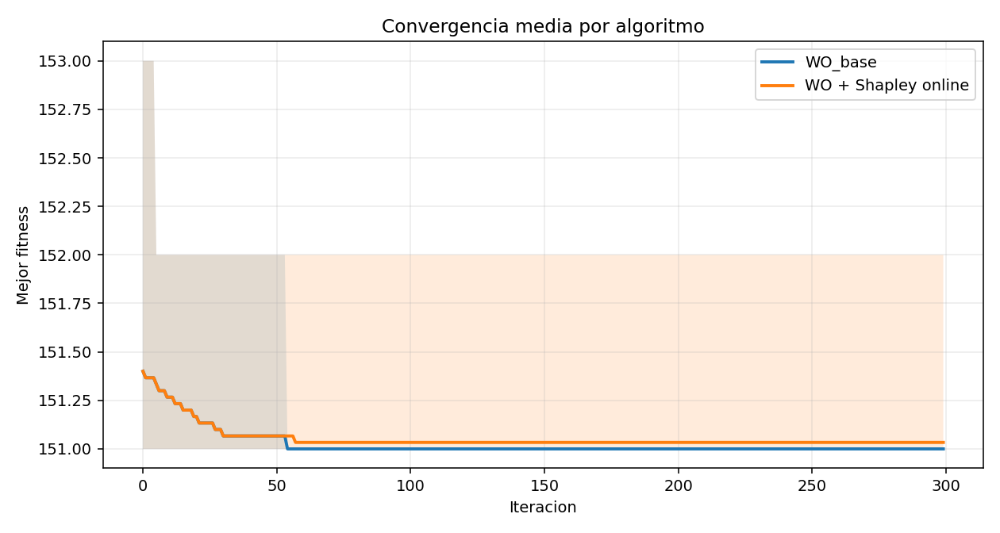
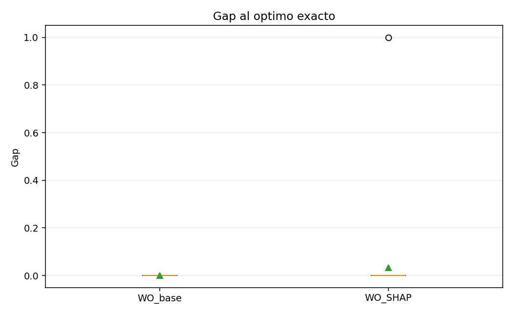
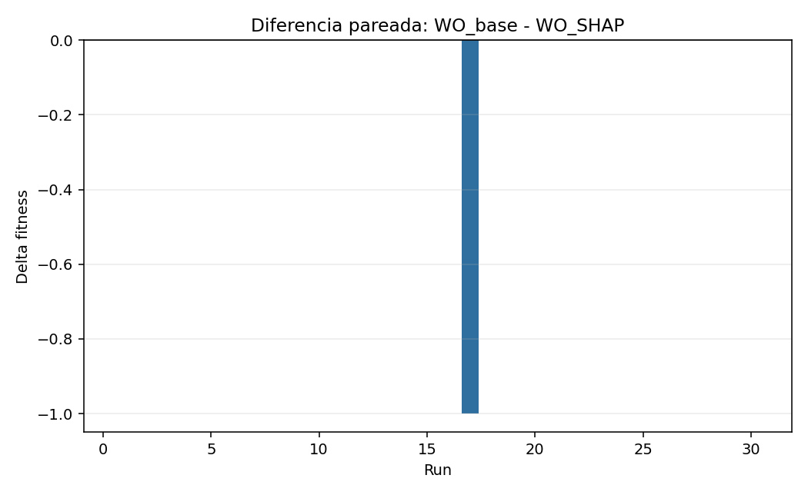
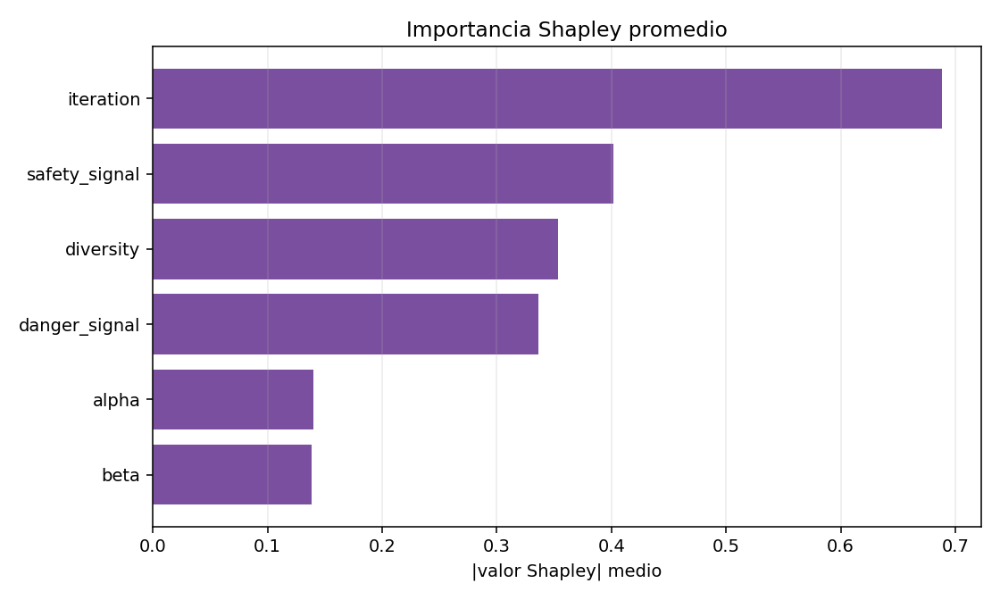

La comparacion usa mismas semillas, pero el controlador Shapley no consulta ni ejecuta WO_base durante su decision online.
Instancia fuente: 2.instancia_mediana.txt. Subinstancia: primeros 12 clientes y 5 hubs.
Asignacion optima exacta: 0 0 1 2 1 1 2 4 0 2 4 4.
| run_id | seed | algorithm_base | controller_profile_base | uses_base_comparison_base | instance_base | n_hubs_base | n_clients_base | agents_base | iterations_base | best_fitness_base | gap_to_exact_optimum_base | exact_optimum_base | best_assignment_base | interventions_base | runtime_seconds_base | curve_base | events_base | shap_rows_base | algorithm_shap | controller_profile_shap | uses_base_comparison_shap | instance_shap | n_hubs_shap | n_clients_shap | agents_shap | iterations_shap | best_fitness_shap | gap_to_exact_optimum_shap | exact_optimum_shap | best_assignment_shap | interventions_shap | runtime_seconds_shap | curve_shap | events_shap | shap_rows_shap | delta_base_minus_shap | winner | base_gap_minus_shap_gap |
|---|---|---|---|---|---|---|---|---|---|---|---|---|---|---|---|---|---|---|---|---|---|---|---|---|---|---|---|---|---|---|---|---|---|---|---|---|---|---|
| 1 | 1234 | WO_base_tmlap | none | False | 2.instancia_mediana_5h_12c | 5 | 12 | 30 | 300 | 151 | 0 | 151 | 0 0 1 2 1 1 2 4 0 2 4 4 | 0 | 1.87932 | [151.0, 151.0, 151.0, 151.0, 151.0, 151.0, 151.0, 151.0, 151.0, 151.0, 151.0, 151.0, 151.0, 151.0, 151.0, 151.0, 151.0, 151.0, 151.0, 151.0, 151.0, 151.0, 151.0, 151.0, 151.0, 151.0, 151.0, 151.0, 151.0, 151.0, 151.0, 151.0, 151.0, 151.0, 151.0, 151.0, 151.0, 151.0, 151.0, 151.0, 151.0, 151.0, 151.0, 151.0, 151.0, 151.0, 151.0, 151.0, 151.0, 151.0, 151.0, 151.0, 151.0, 151.0, 151.0, 151.0, 151.0, 151.0, 151.0, 151.0, 151.0, 151.0, 151.0, 151.0, 151.0, 151.0, 151.0, 151.0, 151.0, 151.0, 151.0, 151.0, 151.0, 151.0, 151.0, 151.0, 151.0, 151.0, 151.0, 151.0, 151.0, 151.0, 151.0, 151.0, 151.0, 151.0, 151.0, 151.0, 151.0, 151.0, 151.0, 151.0, 151.0, 151.0, 151.0, 151.0, 151.0, 151.0, 151.0, 151.0, ...] | [] | [] | WO_tmlap_online_shap | soft | False | 2.instancia_mediana_5h_12c | 5 | 12 | 30 | 300 | 151 | 0 | 151 | 0 0 1 2 1 1 2 4 0 2 4 4 | 6 | 40.8298 | [151.0, 151.0, 151.0, 151.0, 151.0, 151.0, 151.0, 151.0, 151.0, 151.0, 151.0, 151.0, 151.0, 151.0, 151.0, 151.0, 151.0, 151.0, 151.0, 151.0, 151.0, 151.0, 151.0, 151.0, 151.0, 151.0, 151.0, 151.0, 151.0, 151.0, 151.0, 151.0, 151.0, 151.0, 151.0, 151.0, 151.0, 151.0, 151.0, 151.0, 151.0, 151.0, 151.0, 151.0, 151.0, 151.0, 151.0, 151.0, 151.0, 151.0, 151.0, 151.0, 151.0, 151.0, 151.0, 151.0, 151.0, 151.0, 151.0, 151.0, 151.0, 151.0, 151.0, 151.0, 151.0, 151.0, 151.0, 151.0, 151.0, 151.0, 151.0, 151.0, 151.0, 151.0, 151.0, 151.0, 151.0, 151.0, 151.0, 151.0, 151.0, 151.0, 151.0, 151.0, 151.0, 151.0, 151.0, 151.0, 151.0, 151.0, 151.0, 151.0, 151.0, 151.0, 151.0, 151.0, 151.0, 151.0, 151.0, 151.0, ...] | [{'event_id': 1, 'iteration': 40, 'profile': 'soft', 'reason': 'curve_stagnation_detected', 'action': 'random_reinjection', 'mode': 'random_aggressive', 'fraction': 0.3, 'selected_agents': '29 28 27 26 25 24 23 22 21', 'n_selected_agents': 9, 'improved_agents': 0, 'before_best': 171.0, 'after_best': 161.0, 'delta_best': -10.0, 'pre_fitness': 171.0, 'post_iteration': 50, 'post_status': 'improved', 'post_fitness': 151.0, 'post_delta_fitness': 20.0, 'post_diversity': 3.386496175648661, 'post_stagnation_length': 51, 'accepted_intervention': True, 'acceptance_reason': 'improved_population_best', 'adaptive_cooldown_until_iteration': nan, 'adaptive_cooldown_reason': '', 'recent_improvement_ratio': 0.0, 'uses_base_comparison': False, 'shap_target': 'stagnation_risk', 'shap_method': 'exact_shapley_wo_simulation', 'shap_predicted_stagnation_risk': 155.0, 'shap_dominant_feature': 'danger_signal', 'shap_dominant_label': 'Senal de peligro', 'shap_dominant_value': 2.0000000000000004, 'alpha': 0.8666666666666667, 'beta': 0.975075573352886, 'danger_signal': 1.5007223369148877, 'safety_signal': 0.027178249738643134, 'raw_diversity': 0.05113525196596424, 'diversity_norm': 0.003690368935953599, 'domain_scale': 13.856406460551018, 'iteration_norm': 0.13333333333333333, 'stagnation_repeated_iterations': 41, 'best_population_fitness': 171.0, 'mean_population_fitness': 171.0, 'worst_population_fitness': 171.0, 'candidate_population_best': 161.0, 'candidate_diversity': 2.1326293915095427, 'pre_diversity': 0.05113525196596424}, {'event_id': 2, 'iteration': 76, 'profile': 'soft', 'reason': 'curve_stagnation_detected', 'action': 'random_reinjection', 'mode': 'random_aggressive', 'fraction': 0.3, 'selected_agents': '17 18 24 22 23 28 7 5 3', 'n_selected_agents': 9, 'improved_agents': 0, 'before_best': 151.0, 'after_best': 151.0, 'delta_best': 0.0, 'pre_fitness': 151.0, 'post_iteration': 86, 'post_status': 'neutral', 'post_fitness': 151.0, 'post_delta_fitness': 0.0, 'post_diversity': 1.1718759147407003, 'post_stagnation_length': 87, 'accepted_intervention': True, 'acceptance_reason': 'preserved_best_and_increased_diversity', 'adaptive_cooldown_until_iteration': 113, 'adaptive_cooldown_reason': 'neutral', 'recent_improvement_ratio': 0.0, 'uses_base_comparison': False, 'shap_target': 'stagnation_risk', 'shap_method': 'exact_shapley_wo_simulation', 'shap_predicted_stagnation_risk': 151.0, 'shap_dominant_feature': 'alpha', 'shap_dominant_label': 'Coef. exploracion (alpha)', 'shap_dominant_value': 0.0, 'alpha': 0.7466666666666666, 'beta': 0.921771740548216, 'danger_signal': 1.4909459962130764, 'safety_signal': 0.7992812262073303, 'raw_diversity': 2.942195354609296, 'diversity_norm': 0.21233465999901796, 'domain_scale': 13.856406460551018, 'iteration_norm': 0.25333333333333335, 'stagnation_repeated_iterations': 77, 'best_population_fitness': 151.0, 'mean_population_fitness': 164.13333333333333, 'worst_population_fitness': 180.0, 'candidate_population_best': 151.0, 'candidate_diversity': 3.601040196478868, 'pre_diversity': 2.942195354609296}, {'event_id': 3, 'iteration': 113, 'profile': 'soft', 'reason': 'curve_stagnation_detected', 'action': 'random_reinjection', 'mode': 'random_aggressive', 'fraction': 0.3, 'selected_agents': '24 17 22 16 23 15 7 0 8', 'n_selected_agents': 9, 'improved_agents': 0, 'before_best': 158.0, 'after_best': 158.0, 'delta_best': 0.0, 'pre_fitness': 158.0, 'post_iteration': 123, 'post_status': 'improved', 'post_fitness': 151.0, 'post_delta_fitness': 7.0, 'post_diversity': 1.292414014417995, 'post_stagnation_length': 124, 'accepted_intervention': True, 'acceptance_reason': 'preserved_best_and_increased_diversity', 'adaptive_cooldown_until_iteration': 113, 'adaptive_cooldown_reason': 'neutral', 'recent_improvement_ratio': 0.0, 'uses_base_comparison': False, 'shap_target': 'stagnation_risk', 'shap_method': 'exact_shapley_wo_simulation', 'shap_predicted_stagnation_risk': 156.0, 'shap_dominant_feature': 'iteration', 'shap_dominant_label': 'Iteracion normalizada', 'shap_dominant_value': 3.0000000000000027, 'alpha': 0.6233333333333333, 'beta': 0.7744014530142785, 'danger_signal': 0.9325869515654347, 'safety_signal': 0.6853014250311664, 'raw_diversity': 3.3209964880822542, 'diversity_norm': 0.23967227704651142, 'domain_scale': 13.856406460551018, 'iteration_norm': 0.37666666666666665, 'stagnation_repeated_iterations': 114, 'best_population_fitness': 158.0, 'mean_population_fitness': 176.8, 'worst_population_fitness': 195.0, 'candidate_population_best': 158.0, 'candidate_diversity': 3.5994449343106605, 'pre_diversity': 3.3209964880822542}, {'event_id': 4, 'iteration': 149, 'profile': 'soft', 'reason': 'curve_stagnation_detected', 'action': 'random_reinjection', 'mode': 'random_aggressive', 'fraction': 0.3, 'selected_agents': '25 24 18 17 22 23 16 15 8', 'n_selected_agents': 9, 'improved_agents': 0, 'before_best': 158.0, 'after_best': 158.0, 'delta_best': 0.0, 'pre_fitness': 158.0, 'post_iteration': 159, 'post_status': 'improved', 'post_fitness': 151.0, 'post_delta_fitness': 7.0, 'post_diversity': 0.05511707629498683, 'post_stagnation_length': 160, 'accepted_intervention': True, 'acceptance_reason': 'preserved_best_and_increased_diversity', 'adaptive_cooldown_until_iteration': 113, 'adaptive_cooldown_reason': 'neutral', 'recent_improvement_ratio': 0.0, 'uses_base_comparison': False, 'shap_target': 'stagnation_risk', 'shap_method': 'exact_shapley_wo_simulation', 'shap_predicted_stagnation_risk': 151.0, 'shap_dominant_feature': 'iteration', 'shap_dominant_label': 'Iteracion normalizada', 'shap_dominant_value': -6.000000000000002, 'alpha': 0.5033333333333334, 'beta': 0.5083325618141192, 'danger_signal': -0.7823838867564826, 'safety_signal': 0.6103324132721877, 'raw_diversity': 3.2401316340196584, 'diversity_norm': 0.233836358888884, 'domain_scale': 13.856406460551018, 'iteration_norm': 0.49666666666666665, 'stagnation_repeated_iterations': 150, 'best_population_fitness': 158.0, 'mean_population_fitness': 175.4, 'worst_population_fitness': 195.0, 'candidate_population_best': 158.0, 'candidate_diversity': 3.898016506176296, 'pre_diversity': 3.2401316340196584}, {'event_id': 5, 'iteration': 185, 'profile': 'soft', 'reason': 'curve_stagnation_detected', 'action': 'random_reinjection', 'mode': 'random_aggressive', 'fraction': 0.3, 'selected_agents': '29 28 27 26 25 24 23 22 21', 'n_selected_agents': 9, 'improved_agents': 0, 'before_best': 171.0, 'after_best': 171.0, 'delta_best': 0.0, 'pre_fitness': 171.0, 'post_iteration': 195, 'post_status': 'improved', 'post_fitness': 151.0, 'post_delta_fitness': 20.0, 'post_diversity': 1.1248308067005188, 'post_stagnation_length': 196, 'accepted_intervention': True, 'acceptance_reason': 'preserved_best_and_increased_diversity', 'adaptive_cooldown_until_iteration': 113, 'adaptive_cooldown_reason': 'neutral', 'recent_improvement_ratio': 0.0, 'uses_base_comparison': False, 'shap_target': 'stagnation_risk', 'shap_method': 'exact_shapley_wo_simulation', 'shap_predicted_stagnation_risk': 151.0, 'shap_dominant_feature': 'iteration', 'shap_dominant_label': 'Iteracion normalizada', 'shap_dominant_value': 0.8333333333333333, 'alpha': 0.3833333333333333, 'beta': 0.2374580283439025, 'danger_signal': -0.7340466487925984, 'safety_signal': 0.46443384074532956, 'raw_diversity': 0.052355727314689834, 'diversity_norm': 0.0037784491573443525, 'domain_scale': 13.856406460551018, 'iteration_norm': 0.6166666666666667, 'stagnation_repeated_iterations': 186, 'best_population_fitness': 171.0, 'mean_population_fitness': 171.0, 'worst_population_fitness': 171.0, 'candidate_population_best': 171.0, 'candidate_diversity': 2.1616017073109406, 'pre_diversity': 0.052355727314689834}, {'event_id': 6, 'iteration': 221, 'profile': 'soft', 'reason': 'curve_stagnation_detected', 'action': 'random_reinjection', 'mode': 'random_aggressive', 'fraction': 0.3, 'selected_agents': '25 26 19 24 18 17 7 0 1', 'n_selected_agents': 9, 'improved_agents': 0, 'before_best': 158.0, 'after_best': 158.0, 'delta_best': 0.0, 'pre_fitness': 158.0, 'post_iteration': 231, 'post_status': 'improved', 'post_fitness': 151.0, 'post_delta_fitness': 7.0, 'post_diversity': 3.0867245280409765, 'post_stagnation_length': 232, 'accepted_intervention': True, 'acceptance_reason': 'preserved_best_and_increased_diversity', 'adaptive_cooldown_until_iteration': 113, 'adaptive_cooldown_reason': 'neutral', 'recent_improvement_ratio': 0.0, 'uses_base_comparison': False, 'shap_target': 'stagnation_risk', 'shap_method': 'exact_shapley_wo_simulation', 'shap_predicted_stagnation_risk': 154.0, 'shap_dominant_feature': 'iteration', 'shap_dominant_label': 'Iteracion normalizada', 'shap_dominant_value': 1.3333333333333335, 'alpha': 0.2633333333333333, 'beta': 0.08575010225449586, 'danger_signal': -0.30378588334400464, 'safety_signal': 0.22805605825582653, 'raw_diversity': 3.1355071633008174, 'diversity_norm': 0.22628573809721586, 'domain_scale': 13.856406460551018, 'iteration_norm': 0.7366666666666667, 'stagnation_repeated_iterations': 222, 'best_population_fitness': 158.0, 'mean_population_fitness': 176.63333333333333, 'worst_population_fitness': 190.0, 'candidate_population_best': 158.0, 'candidate_diversity': 3.4048714717581214, 'pre_diversity': 3.1355071633008174}] | [{'iteration': 40, 'profile': 'soft', 'target': 'stagnation_risk', 'method': 'exact_shapley_wo_simulation', 'n_coalitions': 64, 'expected_value': 151.0, 'predicted_value': 155.0, 'dominant_feature': 'danger_signal', 'dominant_label': 'Senal de peligro', 'dominant_value': 2.0000000000000004, 'action': 'random_reinjection', 'mode': 'random_aggressive', 'fraction': 0.3, 'feature_alpha': 0.8666666666666667, 'feature_beta': 0.975075573352886, 'feature_danger_signal': 0.8751805842287219, 'feature_safety_signal': 0.027178249738643134, 'feature_diversity': 0.003690368935953599, 'feature_iteration': 0.13333333333333333, 'shap_alpha': 0.0, 'shap_beta': 0.0, 'shap_danger_signal': 2.0000000000000004, 'shap_safety_signal': 0.0, 'shap_diversity': 0.49999999999999994, 'shap_iteration': 1.5}, {'iteration': 76, 'profile': 'soft', 'target': 'stagnation_risk', 'method': 'exact_shapley_wo_simulation', 'n_coalitions': 64, 'expected_value': 151.0, 'predicted_value': 151.0, 'dominant_feature': 'alpha', 'dominant_label': 'Coef. exploracion (alpha)', 'dominant_value': 0.0, 'action': 'random_reinjection', 'mode': 'random_aggressive', 'fraction': 0.3, 'feature_alpha': 0.7466666666666666, 'feature_beta': 0.921771740548216, 'feature_danger_signal': 0.8727364990532691, 'feature_safety_signal': 0.7992812262073303, 'feature_diversity': 0.21233465999901796, 'feature_iteration': 0.25333333333333335, 'shap_alpha': 0.0, 'shap_beta': 0.0, 'shap_danger_signal': 0.0, 'shap_safety_signal': 0.0, 'shap_diversity': 0.0, 'shap_iteration': 0.0}, {'iteration': 113, 'profile': 'soft', 'target': 'stagnation_risk', 'method': 'exact_shapley_wo_simulation', 'n_coalitions': 64, 'expected_value': 152.0, 'predicted_value': 156.0, 'dominant_feature': 'iteration', 'dominant_label': 'Iteracion normalizada', 'dominant_value': 3.0000000000000027, 'action': 'random_reinjection', 'mode': 'random_aggressive', 'fraction': 0.3, 'feature_alpha': 0.6233333333333333, 'feature_beta': 0.7744014530142785, 'feature_danger_signal': 0.7331467378913586, 'feature_safety_signal': 0.6853014250311664, 'feature_diversity': 0.23967227704651142, 'feature_iteration': 0.37666666666666665, 'shap_alpha': 0.9999999999999999, 'shap_beta': 0.0, 'shap_danger_signal': 0.0, 'shap_safety_signal': 0.0, 'shap_diversity': 0.0, 'shap_iteration': 3.0000000000000027}, {'iteration': 149, 'profile': 'soft', 'target': 'stagnation_risk', 'method': 'exact_shapley_wo_simulation', 'n_coalitions': 64, 'expected_value': 157.0, 'predicted_value': 151.0, 'dominant_feature': 'iteration', 'dominant_label': 'Iteracion normalizada', 'dominant_value': -6.000000000000002, 'action': 'random_reinjection', 'mode': 'random_aggressive', 'fraction': 0.3, 'feature_alpha': 0.5033333333333334, 'feature_beta': 0.5083325618141192, 'feature_danger_signal': 0.3044040283108793, 'feature_safety_signal': 0.6103324132721877, 'feature_diversity': 0.233836358888884, 'feature_iteration': 0.49666666666666665, 'shap_alpha': 0.0, 'shap_beta': 0.0, 'shap_danger_signal': 0.0, 'shap_safety_signal': 0.0, 'shap_diversity': 0.0, 'shap_iteration': -6.000000000000002}, {'iteration': 185, 'profile': 'soft', 'target': 'stagnation_risk', 'method': 'exact_shapley_wo_simulation', 'n_coalitions': 64, 'expected_value': 151.0, 'predicted_value': 151.0, 'dominant_feature': 'iteration', 'dominant_label': 'Iteracion normalizada', 'dominant_value': 0.8333333333333333, 'action': 'random_reinjection', 'mode': 'random_aggressive', 'fraction': 0.3, 'feature_alpha': 0.3833333333333333, 'feature_beta': 0.2374580283439025, 'feature_danger_signal': 0.3164883378018504, 'feature_safety_signal': 0.46443384074532956, 'feature_diversity': 0.0037784491573443525, 'feature_iteration': 0.6166666666666667, 'shap_alpha': 0.0, 'shap_beta': 0.0, 'shap_danger_signal': -1.3333333333333333, 'shap_safety_signal': 5.551115123125783e-17, 'shap_diversity': 0.5, 'shap_iteration': 0.8333333333333333}, {'iteration': 221, 'profile': 'soft', 'target': 'stagnation_risk', 'method': 'exact_shapley_wo_simulation', 'n_coalitions': 64, 'expected_value': 152.0, 'predicted_value': 154.0, 'dominant_feature': 'iteration', 'dominant_label': 'Iteracion normalizada', 'dominant_value': 1.3333333333333335, 'action': 'random_reinjection', 'mode': 'random_aggressive', 'fraction': 0.3, 'feature_alpha': 0.2633333333333333, 'feature_beta': 0.08575010225449586, 'feature_danger_signal': 0.42405352916399885, 'feature_safety_signal': 0.22805605825582653, 'feature_diversity': 0.22628573809721586, 'feature_iteration': 0.7366666666666667, 'shap_alpha': 0.0, 'shap_beta': 0.8333333333333333, 'shap_danger_signal': 0.0, 'shap_safety_signal': -0.16666666666666666, 'shap_diversity': 0.0, 'shap_iteration': 1.3333333333333335}] | 0 | tie | 0 |
| 2 | 1235 | WO_base_tmlap | none | False | 2.instancia_mediana_5h_12c | 5 | 12 | 30 | 300 | 151 | 0 | 151 | 0 0 1 2 1 1 2 4 0 2 4 4 | 0 | 4.8635 | [151.0, 151.0, 151.0, 151.0, 151.0, 151.0, 151.0, 151.0, 151.0, 151.0, 151.0, 151.0, 151.0, 151.0, 151.0, 151.0, 151.0, 151.0, 151.0, 151.0, 151.0, 151.0, 151.0, 151.0, 151.0, 151.0, 151.0, 151.0, 151.0, 151.0, 151.0, 151.0, 151.0, 151.0, 151.0, 151.0, 151.0, 151.0, 151.0, 151.0, 151.0, 151.0, 151.0, 151.0, 151.0, 151.0, 151.0, 151.0, 151.0, 151.0, 151.0, 151.0, 151.0, 151.0, 151.0, 151.0, 151.0, 151.0, 151.0, 151.0, 151.0, 151.0, 151.0, 151.0, 151.0, 151.0, 151.0, 151.0, 151.0, 151.0, 151.0, 151.0, 151.0, 151.0, 151.0, 151.0, 151.0, 151.0, 151.0, 151.0, 151.0, 151.0, 151.0, 151.0, 151.0, 151.0, 151.0, 151.0, 151.0, 151.0, 151.0, 151.0, 151.0, 151.0, 151.0, 151.0, 151.0, 151.0, 151.0, 151.0, ...] | [] | [] | WO_tmlap_online_shap | soft | False | 2.instancia_mediana_5h_12c | 5 | 12 | 30 | 300 | 151 | 0 | 151 | 0 0 1 2 1 1 2 4 0 2 4 4 | 6 | 37.3838 | [151.0, 151.0, 151.0, 151.0, 151.0, 151.0, 151.0, 151.0, 151.0, 151.0, 151.0, 151.0, 151.0, 151.0, 151.0, 151.0, 151.0, 151.0, 151.0, 151.0, 151.0, 151.0, 151.0, 151.0, 151.0, 151.0, 151.0, 151.0, 151.0, 151.0, 151.0, 151.0, 151.0, 151.0, 151.0, 151.0, 151.0, 151.0, 151.0, 151.0, 151.0, 151.0, 151.0, 151.0, 151.0, 151.0, 151.0, 151.0, 151.0, 151.0, 151.0, 151.0, 151.0, 151.0, 151.0, 151.0, 151.0, 151.0, 151.0, 151.0, 151.0, 151.0, 151.0, 151.0, 151.0, 151.0, 151.0, 151.0, 151.0, 151.0, 151.0, 151.0, 151.0, 151.0, 151.0, 151.0, 151.0, 151.0, 151.0, 151.0, 151.0, 151.0, 151.0, 151.0, 151.0, 151.0, 151.0, 151.0, 151.0, 151.0, 151.0, 151.0, 151.0, 151.0, 151.0, 151.0, 151.0, 151.0, 151.0, 151.0, ...] | [{'event_id': 1, 'iteration': 40, 'profile': 'soft', 'reason': 'curve_stagnation_detected', 'action': 'random_reinjection', 'mode': 'random_aggressive', 'fraction': 0.3, 'selected_agents': '16 22 15 21 8 0 7 1 24', 'n_selected_agents': 9, 'improved_agents': 0, 'before_best': 156.0, 'after_best': 156.0, 'delta_best': 0.0, 'pre_fitness': 156.0, 'post_iteration': 50, 'post_status': 'improved', 'post_fitness': 151.0, 'post_delta_fitness': 5.0, 'post_diversity': 0.052643454434284684, 'post_stagnation_length': 51, 'accepted_intervention': True, 'acceptance_reason': 'preserved_best_and_increased_diversity', 'adaptive_cooldown_until_iteration': nan, 'adaptive_cooldown_reason': '', 'recent_improvement_ratio': 0.0, 'uses_base_comparison': False, 'shap_target': 'stagnation_risk', 'shap_method': 'exact_shapley_wo_simulation', 'shap_predicted_stagnation_risk': 155.0, 'shap_dominant_feature': 'alpha', 'shap_dominant_label': 'Coef. exploracion (alpha)', 'shap_dominant_value': 0.0, 'alpha': 0.8666666666666667, 'beta': 0.975075573352886, 'danger_signal': -1.5648338115858869, 'safety_signal': 0.9822773782894985, 'raw_diversity': 3.2634446762792564, 'diversity_norm': 0.23551883279191, 'domain_scale': 13.856406460551018, 'iteration_norm': 0.13333333333333333, 'stagnation_repeated_iterations': 41, 'best_population_fitness': 156.0, 'mean_population_fitness': 174.33333333333334, 'worst_population_fitness': 190.0, 'candidate_population_best': 156.0, 'candidate_diversity': 3.6075748664831275, 'pre_diversity': 3.2634446762792564}, {'event_id': 2, 'iteration': 76, 'profile': 'soft', 'reason': 'curve_stagnation_detected', 'action': 'random_reinjection', 'mode': 'random_aggressive', 'fraction': 0.3, 'selected_agents': '29 28 27 26 25 24 23 22 21', 'n_selected_agents': 9, 'improved_agents': 0, 'before_best': 171.0, 'after_best': 167.0, 'delta_best': -4.0, 'pre_fitness': 171.0, 'post_iteration': 86, 'post_status': 'improved', 'post_fitness': 151.0, 'post_delta_fitness': 20.0, 'post_diversity': 1.9514794478702138, 'post_stagnation_length': 87, 'accepted_intervention': True, 'acceptance_reason': 'improved_population_best', 'adaptive_cooldown_until_iteration': nan, 'adaptive_cooldown_reason': '', 'recent_improvement_ratio': 0.0, 'uses_base_comparison': False, 'shap_target': 'stagnation_risk', 'shap_method': 'exact_shapley_wo_simulation', 'shap_predicted_stagnation_risk': 152.0, 'shap_dominant_feature': 'diversity', 'shap_dominant_label': 'Diversidad poblacional', 'shap_dominant_value': 0.49999999999999994, 'alpha': 0.7466666666666666, 'beta': 0.921771740548216, 'danger_signal': -0.10170648033332436, 'safety_signal': 0.09220903669167468, 'raw_diversity': 0.05572294304227646, 'diversity_norm': 0.004021457020687062, 'domain_scale': 13.856406460551018, 'iteration_norm': 0.25333333333333335, 'stagnation_repeated_iterations': 77, 'best_population_fitness': 171.0, 'mean_population_fitness': 171.0, 'worst_population_fitness': 171.0, 'candidate_population_best': 167.0, 'candidate_diversity': 2.176051162977397, 'pre_diversity': 0.05572294304227646}, {'event_id': 3, 'iteration': 112, 'profile': 'soft', 'reason': 'curve_stagnation_detected', 'action': 'random_reinjection', 'mode': 'random_aggressive', 'fraction': 0.3, 'selected_agents': '24 23 17 16 22 15 7 0 8', 'n_selected_agents': 9, 'improved_agents': 0, 'before_best': 158.0, 'after_best': 158.0, 'delta_best': 0.0, 'pre_fitness': 158.0, 'post_iteration': 122, 'post_status': 'improved', 'post_fitness': 151.0, 'post_delta_fitness': 7.0, 'post_diversity': 3.3187181254104074, 'post_stagnation_length': 123, 'accepted_intervention': True, 'acceptance_reason': 'preserved_best_and_increased_diversity', 'adaptive_cooldown_until_iteration': nan, 'adaptive_cooldown_reason': '', 'recent_improvement_ratio': 0.0, 'uses_base_comparison': False, 'shap_target': 'stagnation_risk', 'shap_method': 'exact_shapley_wo_simulation', 'shap_predicted_stagnation_risk': 152.0, 'shap_dominant_feature': 'danger_signal', 'shap_dominant_label': 'Senal de peligro', 'shap_dominant_value': 0.6666666666666666, 'alpha': 0.6266666666666667, 'beta': 0.7801716022593175, 'danger_signal': -1.2417188649784978, 'safety_signal': 0.7141380693137916, 'raw_diversity': 3.260367051294005, 'diversity_norm': 0.23529672434019755, 'domain_scale': 13.856406460551018, 'iteration_norm': 0.37333333333333335, 'stagnation_repeated_iterations': 113, 'best_population_fitness': 158.0, 'mean_population_fitness': 176.73333333333332, 'worst_population_fitness': 195.0, 'candidate_population_best': 158.0, 'candidate_diversity': 3.617276099817473, 'pre_diversity': 3.260367051294005}, {'event_id': 4, 'iteration': 148, 'profile': 'soft', 'reason': 'curve_stagnation_detected', 'action': 'random_reinjection', 'mode': 'random_aggressive', 'fraction': 0.3, 'selected_agents': '25 24 18 17 22 23 16 15 8', 'n_selected_agents': 9, 'improved_agents': 0, 'before_best': 158.0, 'after_best': 158.0, 'delta_best': 0.0, 'pre_fitness': 158.0, 'post_iteration': 158, 'post_status': 'improved', 'post_fitness': 151.0, 'post_delta_fitness': 7.0, 'post_diversity': 3.2415125211692226, 'post_stagnation_length': 159, 'accepted_intervention': True, 'acceptance_reason': 'preserved_best_and_increased_diversity', 'adaptive_cooldown_until_iteration': nan, 'adaptive_cooldown_reason': '', 'recent_improvement_ratio': 0.0, 'uses_base_comparison': False, 'shap_target': 'stagnation_risk', 'shap_method': 'exact_shapley_wo_simulation', 'shap_predicted_stagnation_risk': 151.0, 'shap_dominant_feature': 'iteration', 'shap_dominant_label': 'Iteracion normalizada', 'shap_dominant_value': -2.3333333333333326, 'alpha': 0.5066666666666666, 'beta': 0.5166604965694115, 'danger_signal': -0.910075263332469, 'safety_signal': 0.19133328879236555, 'raw_diversity': 3.283003730525546, 'diversity_norm': 0.23693038594618374, 'domain_scale': 13.856406460551018, 'iteration_norm': 0.49333333333333335, 'stagnation_repeated_iterations': 149, 'best_population_fitness': 158.0, 'mean_population_fitness': 175.43333333333334, 'worst_population_fitness': 195.0, 'candidate_population_best': 158.0, 'candidate_diversity': 3.9144366946168385, 'pre_diversity': 3.283003730525546}, {'event_id': 5, 'iteration': 184, 'profile': 'soft', 'reason': 'curve_stagnation_detected', 'action': 'random_reinjection', 'mode': 'random_aggressive', 'fraction': 0.3, 'selected_agents': '24 17 18 25 16 23 7 0 1', 'n_selected_agents': 9, 'improved_agents': 0, 'before_best': 158.0, 'after_best': 158.0, 'delta_best': 0.0, 'pre_fitness': 158.0, 'post_iteration': 194, 'post_status': 'improved', 'post_fitness': 151.0, 'post_delta_fitness': 7.0, 'post_diversity': 3.1043820334504812, 'post_stagnation_length': 195, 'accepted_intervention': True, 'acceptance_reason': 'preserved_best_and_increased_diversity', 'adaptive_cooldown_until_iteration': nan, 'adaptive_cooldown_reason': '', 'recent_improvement_ratio': 0.0, 'uses_base_comparison': False, 'shap_target': 'stagnation_risk', 'shap_method': 'exact_shapley_wo_simulation', 'shap_predicted_stagnation_risk': 152.0, 'shap_dominant_feature': 'iteration', 'shap_dominant_label': 'Iteracion normalizada', 'shap_dominant_value': 0.3333333333333333, 'alpha': 0.3866666666666667, 'beta': 0.24354647076959568, 'danger_signal': -0.6067769812077318, 'safety_signal': 0.3971045584395604, 'raw_diversity': 3.113589262829166, 'diversity_norm': 0.22470394988004344, 'domain_scale': 13.856406460551018, 'iteration_norm': 0.6133333333333333, 'stagnation_repeated_iterations': 185, 'best_population_fitness': 158.0, 'mean_population_fitness': 176.66666666666666, 'worst_population_fitness': 195.0, 'candidate_population_best': 158.0, 'candidate_diversity': 3.2721782352336763, 'pre_diversity': 3.113589262829166}, {'event_id': 6, 'iteration': 220, 'profile': 'soft', 'reason': 'curve_stagnation_detected', 'action': 'random_reinjection', 'mode': 'random_aggressive', 'fraction': 0.3, 'selected_agents': '29 28 27 26 25 24 23 22 21', 'n_selected_agents': 9, 'improved_agents': 0, 'before_best': 151.0, 'after_best': 151.0, 'delta_best': 0.0, 'pre_fitness': 151.0, 'post_iteration': 230, 'post_status': 'neutral', 'post_fitness': 151.0, 'post_delta_fitness': 0.0, 'post_diversity': 0.05395143514677847, 'post_stagnation_length': 231, 'accepted_intervention': True, 'acceptance_reason': 'preserved_best_and_increased_diversity', 'adaptive_cooldown_until_iteration': 257, 'adaptive_cooldown_reason': 'neutral', 'recent_improvement_ratio': 0.0, 'uses_base_comparison': False, 'shap_target': 'stagnation_risk', 'shap_method': 'exact_shapley_wo_simulation', 'shap_predicted_stagnation_risk': 151.0, 'shap_dominant_feature': 'beta', 'shap_dominant_label': 'Coef. sigmoide (beta)', 'shap_dominant_value': 0.33333333333333337, 'alpha': 0.2666666666666667, 'beta': 0.08839967720705832, 'danger_signal': 0.19857488825055603, 'safety_signal': 0.19855885452930222, 'raw_diversity': 0.14456603793707565, 'diversity_norm': 0.010433155114831035, 'domain_scale': 13.856406460551018, 'iteration_norm': 0.7333333333333333, 'stagnation_repeated_iterations': 221, 'best_population_fitness': 151.0, 'mean_population_fitness': 151.7, 'worst_population_fitness': 172.0, 'candidate_population_best': 151.0, 'candidate_diversity': 2.205969369862046, 'pre_diversity': 0.14456603793707565}] | [{'iteration': 40, 'profile': 'soft', 'target': 'stagnation_risk', 'method': 'exact_shapley_wo_simulation', 'n_coalitions': 64, 'expected_value': 155.0, 'predicted_value': 155.0, 'dominant_feature': 'alpha', 'dominant_label': 'Coef. exploracion (alpha)', 'dominant_value': 0.0, 'action': 'random_reinjection', 'mode': 'random_aggressive', 'fraction': 0.3, 'feature_alpha': 0.8666666666666667, 'feature_beta': 0.975075573352886, 'feature_danger_signal': 0.10879154710352829, 'feature_safety_signal': 0.9822773782894985, 'feature_diversity': 0.23551883279191, 'feature_iteration': 0.13333333333333333, 'shap_alpha': 0.0, 'shap_beta': 0.0, 'shap_danger_signal': 0.0, 'shap_safety_signal': 0.0, 'shap_diversity': 0.0, 'shap_iteration': 0.0}, {'iteration': 76, 'profile': 'soft', 'target': 'stagnation_risk', 'method': 'exact_shapley_wo_simulation', 'n_coalitions': 64, 'expected_value': 151.0, 'predicted_value': 152.0, 'dominant_feature': 'diversity', 'dominant_label': 'Diversidad poblacional', 'dominant_value': 0.49999999999999994, 'action': 'random_reinjection', 'mode': 'random_aggressive', 'fraction': 0.3, 'feature_alpha': 0.7466666666666666, 'feature_beta': 0.921771740548216, 'feature_danger_signal': 0.4745733799166689, 'feature_safety_signal': 0.09220903669167468, 'feature_diversity': 0.004021457020687062, 'feature_iteration': 0.25333333333333335, 'shap_alpha': 0.0, 'shap_beta': 0.0, 'shap_danger_signal': 0.0, 'shap_safety_signal': 0.0, 'shap_diversity': 0.49999999999999994, 'shap_iteration': 0.49999999999999994}, {'iteration': 112, 'profile': 'soft', 'target': 'stagnation_risk', 'method': 'exact_shapley_wo_simulation', 'n_coalitions': 64, 'expected_value': 156.0, 'predicted_value': 152.0, 'dominant_feature': 'danger_signal', 'dominant_label': 'Senal de peligro', 'dominant_value': 0.6666666666666666, 'action': 'random_reinjection', 'mode': 'random_aggressive', 'fraction': 0.3, 'feature_alpha': 0.6266666666666667, 'feature_beta': 0.7801716022593175, 'feature_danger_signal': 0.18957028375537555, 'feature_safety_signal': 0.7141380693137916, 'feature_diversity': 0.23529672434019755, 'feature_iteration': 0.37333333333333335, 'shap_alpha': 0.0, 'shap_beta': -1.3333333333333333, 'shap_danger_signal': 0.6666666666666666, 'shap_safety_signal': 0.0, 'shap_diversity': 0.0, 'shap_iteration': -3.333333333333333}, {'iteration': 148, 'profile': 'soft', 'target': 'stagnation_risk', 'method': 'exact_shapley_wo_simulation', 'n_coalitions': 64, 'expected_value': 155.0, 'predicted_value': 151.0, 'dominant_feature': 'iteration', 'dominant_label': 'Iteracion normalizada', 'dominant_value': -2.3333333333333326, 'action': 'random_reinjection', 'mode': 'random_aggressive', 'fraction': 0.3, 'feature_alpha': 0.5066666666666666, 'feature_beta': 0.5166604965694115, 'feature_danger_signal': 0.2724811841668827, 'feature_safety_signal': 0.19133328879236555, 'feature_diversity': 0.23693038594618374, 'feature_iteration': 0.49333333333333335, 'shap_alpha': 0.0, 'shap_beta': 0.0, 'shap_danger_signal': -0.3333333333333333, 'shap_safety_signal': -1.3333333333333337, 'shap_diversity': 0.0, 'shap_iteration': -2.3333333333333326}, {'iteration': 184, 'profile': 'soft', 'target': 'stagnation_risk', 'method': 'exact_shapley_wo_simulation', 'n_coalitions': 64, 'expected_value': 155.0, 'predicted_value': 152.0, 'dominant_feature': 'iteration', 'dominant_label': 'Iteracion normalizada', 'dominant_value': 0.3333333333333333, 'action': 'random_reinjection', 'mode': 'random_aggressive', 'fraction': 0.3, 'feature_alpha': 0.3866666666666667, 'feature_beta': 0.24354647076959568, 'feature_danger_signal': 0.348305754698067, 'feature_safety_signal': 0.3971045584395604, 'feature_diversity': 0.22470394988004344, 'feature_iteration': 0.6133333333333333, 'shap_alpha': 0.0, 'shap_beta': 0.16666666666666666, 'shap_danger_signal': 0.0, 'shap_safety_signal': -3.5, 'shap_diversity': 0.0, 'shap_iteration': 0.3333333333333333}, {'iteration': 220, 'profile': 'soft', 'target': 'stagnation_risk', 'method': 'exact_shapley_wo_simulation', 'n_coalitions': 64, 'expected_value': 156.0, 'predicted_value': 151.0, 'dominant_feature': 'beta', 'dominant_label': 'Coef. sigmoide (beta)', 'dominant_value': 0.33333333333333337, 'action': 'random_reinjection', 'mode': 'random_aggressive', 'fraction': 0.3, 'feature_alpha': 0.2666666666666667, 'feature_beta': 0.08839967720705832, 'feature_danger_signal': 0.549643722062639, 'feature_safety_signal': 0.19855885452930222, 'feature_diversity': 0.010433155114831035, 'feature_iteration': 0.7333333333333333, 'shap_alpha': 0.0, 'shap_beta': 0.33333333333333337, 'shap_danger_signal': 0.0, 'shap_safety_signal': -1.9999999999999996, 'shap_diversity': -3.3333333333333335, 'shap_iteration': -2.7755575615628914e-17}] | 0 | tie | 0 |
| 3 | 1236 | WO_base_tmlap | none | False | 2.instancia_mediana_5h_12c | 5 | 12 | 30 | 300 | 151 | 0 | 151 | 0 0 1 2 1 1 2 4 0 2 4 4 | 0 | 4.40887 | [151.0, 151.0, 151.0, 151.0, 151.0, 151.0, 151.0, 151.0, 151.0, 151.0, 151.0, 151.0, 151.0, 151.0, 151.0, 151.0, 151.0, 151.0, 151.0, 151.0, 151.0, 151.0, 151.0, 151.0, 151.0, 151.0, 151.0, 151.0, 151.0, 151.0, 151.0, 151.0, 151.0, 151.0, 151.0, 151.0, 151.0, 151.0, 151.0, 151.0, 151.0, 151.0, 151.0, 151.0, 151.0, 151.0, 151.0, 151.0, 151.0, 151.0, 151.0, 151.0, 151.0, 151.0, 151.0, 151.0, 151.0, 151.0, 151.0, 151.0, 151.0, 151.0, 151.0, 151.0, 151.0, 151.0, 151.0, 151.0, 151.0, 151.0, 151.0, 151.0, 151.0, 151.0, 151.0, 151.0, 151.0, 151.0, 151.0, 151.0, 151.0, 151.0, 151.0, 151.0, 151.0, 151.0, 151.0, 151.0, 151.0, 151.0, 151.0, 151.0, 151.0, 151.0, 151.0, 151.0, 151.0, 151.0, 151.0, 151.0, ...] | [] | [] | WO_tmlap_online_shap | soft | False | 2.instancia_mediana_5h_12c | 5 | 12 | 30 | 300 | 151 | 0 | 151 | 0 0 1 2 1 1 2 4 0 2 4 4 | 6 | 39.385 | [151.0, 151.0, 151.0, 151.0, 151.0, 151.0, 151.0, 151.0, 151.0, 151.0, 151.0, 151.0, 151.0, 151.0, 151.0, 151.0, 151.0, 151.0, 151.0, 151.0, 151.0, 151.0, 151.0, 151.0, 151.0, 151.0, 151.0, 151.0, 151.0, 151.0, 151.0, 151.0, 151.0, 151.0, 151.0, 151.0, 151.0, 151.0, 151.0, 151.0, 151.0, 151.0, 151.0, 151.0, 151.0, 151.0, 151.0, 151.0, 151.0, 151.0, 151.0, 151.0, 151.0, 151.0, 151.0, 151.0, 151.0, 151.0, 151.0, 151.0, 151.0, 151.0, 151.0, 151.0, 151.0, 151.0, 151.0, 151.0, 151.0, 151.0, 151.0, 151.0, 151.0, 151.0, 151.0, 151.0, 151.0, 151.0, 151.0, 151.0, 151.0, 151.0, 151.0, 151.0, 151.0, 151.0, 151.0, 151.0, 151.0, 151.0, 151.0, 151.0, 151.0, 151.0, 151.0, 151.0, 151.0, 151.0, 151.0, 151.0, ...] | [{'event_id': 1, 'iteration': 40, 'profile': 'soft', 'reason': 'curve_stagnation_detected', 'action': 'random_reinjection', 'mode': 'random_aggressive', 'fraction': 0.3, 'selected_agents': '16 22 15 21 8 0 7 1 24', 'n_selected_agents': 9, 'improved_agents': 0, 'before_best': 156.0, 'after_best': 156.0, 'delta_best': 0.0, 'pre_fitness': 156.0, 'post_iteration': 50, 'post_status': 'improved', 'post_fitness': 151.0, 'post_delta_fitness': 5.0, 'post_diversity': 3.337284786815141, 'post_stagnation_length': 51, 'accepted_intervention': True, 'acceptance_reason': 'preserved_best_and_increased_diversity', 'adaptive_cooldown_until_iteration': nan, 'adaptive_cooldown_reason': '', 'recent_improvement_ratio': 0.0, 'uses_base_comparison': False, 'shap_target': 'stagnation_risk', 'shap_method': 'exact_shapley_wo_simulation', 'shap_predicted_stagnation_risk': 155.0, 'shap_dominant_feature': 'alpha', 'shap_dominant_label': 'Coef. exploracion (alpha)', 'shap_dominant_value': 0.0, 'alpha': 0.8666666666666667, 'beta': 0.975075573352886, 'danger_signal': -0.10665155347524541, 'safety_signal': 0.8221062836679109, 'raw_diversity': 3.2793161858969837, 'diversity_norm': 0.23666426033569007, 'domain_scale': 13.856406460551018, 'iteration_norm': 0.13333333333333333, 'stagnation_repeated_iterations': 41, 'best_population_fitness': 156.0, 'mean_population_fitness': 174.53333333333333, 'worst_population_fitness': 190.0, 'candidate_population_best': 156.0, 'candidate_diversity': 3.477113383382778, 'pre_diversity': 3.2793161858969837}, {'event_id': 2, 'iteration': 76, 'profile': 'soft', 'reason': 'curve_stagnation_detected', 'action': 'random_reinjection', 'mode': 'random_aggressive', 'fraction': 0.3, 'selected_agents': '16 23 22 15 8 0 7 1 25', 'n_selected_agents': 9, 'improved_agents': 0, 'before_best': 156.0, 'after_best': 156.0, 'delta_best': 0.0, 'pre_fitness': 156.0, 'post_iteration': 86, 'post_status': 'improved', 'post_fitness': 151.0, 'post_delta_fitness': 5.0, 'post_diversity': 1.2980829880115197, 'post_stagnation_length': 87, 'accepted_intervention': True, 'acceptance_reason': 'preserved_best_and_increased_diversity', 'adaptive_cooldown_until_iteration': nan, 'adaptive_cooldown_reason': '', 'recent_improvement_ratio': 0.0, 'uses_base_comparison': False, 'shap_target': 'stagnation_risk', 'shap_method': 'exact_shapley_wo_simulation', 'shap_predicted_stagnation_risk': 155.0, 'shap_dominant_feature': 'iteration', 'shap_dominant_label': 'Iteracion normalizada', 'shap_dominant_value': 1.0000000000000004, 'alpha': 0.7466666666666666, 'beta': 0.921771740548216, 'danger_signal': 0.192475407497898, 'safety_signal': 0.7745728036264512, 'raw_diversity': 3.2099204320688326, 'diversity_norm': 0.23165605319152754, 'domain_scale': 13.856406460551018, 'iteration_norm': 0.25333333333333335, 'stagnation_repeated_iterations': 77, 'best_population_fitness': 156.0, 'mean_population_fitness': 175.16666666666666, 'worst_population_fitness': 190.0, 'candidate_population_best': 156.0, 'candidate_diversity': 3.2834752065570005, 'pre_diversity': 3.2099204320688326}, {'event_id': 3, 'iteration': 112, 'profile': 'soft', 'reason': 'curve_stagnation_detected', 'action': 'random_reinjection', 'mode': 'random_aggressive', 'fraction': 0.3, 'selected_agents': '29 28 27 26 25 24 23 22 21', 'n_selected_agents': 9, 'improved_agents': 0, 'before_best': 171.0, 'after_best': 166.0, 'delta_best': -5.0, 'pre_fitness': 171.0, 'post_iteration': 122, 'post_status': 'improved', 'post_fitness': 151.0, 'post_delta_fitness': 20.0, 'post_diversity': 3.398422492580445, 'post_stagnation_length': 123, 'accepted_intervention': True, 'acceptance_reason': 'improved_population_best', 'adaptive_cooldown_until_iteration': nan, 'adaptive_cooldown_reason': '', 'recent_improvement_ratio': 0.0, 'uses_base_comparison': False, 'shap_target': 'stagnation_risk', 'shap_method': 'exact_shapley_wo_simulation', 'shap_predicted_stagnation_risk': 151.0, 'shap_dominant_feature': 'diversity', 'shap_dominant_label': 'Diversidad poblacional', 'shap_dominant_value': 0.08333333333333334, 'alpha': 0.6266666666666667, 'beta': 0.7801716022593175, 'danger_signal': -0.171687696389196, 'safety_signal': 0.10968648150077098, 'raw_diversity': 0.05593869178372016, 'diversity_norm': 0.004037027344930793, 'domain_scale': 13.856406460551018, 'iteration_norm': 0.37333333333333335, 'stagnation_repeated_iterations': 113, 'best_population_fitness': 171.0, 'mean_population_fitness': 171.0, 'worst_population_fitness': 171.0, 'candidate_population_best': 166.0, 'candidate_diversity': 2.141286318332855, 'pre_diversity': 0.05593869178372016}, {'event_id': 4, 'iteration': 148, 'profile': 'soft', 'reason': 'curve_stagnation_detected', 'action': 'random_reinjection', 'mode': 'random_aggressive', 'fraction': 0.3, 'selected_agents': '25 24 18 17 22 23 16 15 8', 'n_selected_agents': 9, 'improved_agents': 0, 'before_best': 158.0, 'after_best': 158.0, 'delta_best': 0.0, 'pre_fitness': 158.0, 'post_iteration': 158, 'post_status': 'improved', 'post_fitness': 151.0, 'post_delta_fitness': 7.0, 'post_diversity': 3.2710438306894356, 'post_stagnation_length': 159, 'accepted_intervention': True, 'acceptance_reason': 'preserved_best_and_increased_diversity', 'adaptive_cooldown_until_iteration': nan, 'adaptive_cooldown_reason': '', 'recent_improvement_ratio': 0.0, 'uses_base_comparison': False, 'shap_target': 'stagnation_risk', 'shap_method': 'exact_shapley_wo_simulation', 'shap_predicted_stagnation_risk': 155.0, 'shap_dominant_feature': 'iteration', 'shap_dominant_label': 'Iteracion normalizada', 'shap_dominant_value': 2.166666666666667, 'alpha': 0.5066666666666666, 'beta': 0.5166604965694115, 'danger_signal': -0.780396545744788, 'safety_signal': 0.2156368023698202, 'raw_diversity': 3.2401528573905676, 'diversity_norm': 0.23383789055374743, 'domain_scale': 13.856406460551018, 'iteration_norm': 0.49333333333333335, 'stagnation_repeated_iterations': 149, 'best_population_fitness': 158.0, 'mean_population_fitness': 175.4, 'worst_population_fitness': 195.0, 'candidate_population_best': 158.0, 'candidate_diversity': 3.7839861223673967, 'pre_diversity': 3.2401528573905676}, {'event_id': 5, 'iteration': 184, 'profile': 'soft', 'reason': 'curve_stagnation_detected', 'action': 'random_reinjection', 'mode': 'random_aggressive', 'fraction': 0.3, 'selected_agents': '24 17 18 25 16 23 7 0 1', 'n_selected_agents': 9, 'improved_agents': 0, 'before_best': 155.0, 'after_best': 155.0, 'delta_best': 0.0, 'pre_fitness': 155.0, 'post_iteration': 194, 'post_status': 'improved', 'post_fitness': 151.0, 'post_delta_fitness': 4.0, 'post_diversity': 3.0440786072306976, 'post_stagnation_length': 195, 'accepted_intervention': True, 'acceptance_reason': 'preserved_best_and_increased_diversity', 'adaptive_cooldown_until_iteration': nan, 'adaptive_cooldown_reason': '', 'recent_improvement_ratio': 0.0, 'uses_base_comparison': False, 'shap_target': 'stagnation_risk', 'shap_method': 'exact_shapley_wo_simulation', 'shap_predicted_stagnation_risk': 152.0, 'shap_dominant_feature': 'alpha', 'shap_dominant_label': 'Coef. exploracion (alpha)', 'shap_dominant_value': 0.5, 'alpha': 0.3866666666666667, 'beta': 0.24354647076959568, 'danger_signal': 0.35474229221635784, 'safety_signal': 0.5315016636883148, 'raw_diversity': 3.169876399296695, 'diversity_norm': 0.2287661240539736, 'domain_scale': 13.856406460551018, 'iteration_norm': 0.6133333333333333, 'stagnation_repeated_iterations': 185, 'best_population_fitness': 155.0, 'mean_population_fitness': 176.26666666666668, 'worst_population_fitness': 195.0, 'candidate_population_best': 155.0, 'candidate_diversity': 3.5134473630777108, 'pre_diversity': 3.169876399296695}, {'event_id': 6, 'iteration': 220, 'profile': 'soft', 'reason': 'curve_stagnation_detected', 'action': 'random_reinjection', 'mode': 'random_aggressive', 'fraction': 0.3, 'selected_agents': '17 29 27 26 25 28 24 23 21', 'n_selected_agents': 9, 'improved_agents': 0, 'before_best': 151.0, 'after_best': 151.0, 'delta_best': 0.0, 'pre_fitness': 151.0, 'post_iteration': 230, 'post_status': 'neutral', 'post_fitness': 151.0, 'post_delta_fitness': 0.0, 'post_diversity': 0.3771234827015425, 'post_stagnation_length': 231, 'accepted_intervention': True, 'acceptance_reason': 'preserved_best_and_increased_diversity', 'adaptive_cooldown_until_iteration': 257, 'adaptive_cooldown_reason': 'neutral', 'recent_improvement_ratio': 0.0, 'uses_base_comparison': False, 'shap_target': 'stagnation_risk', 'shap_method': 'exact_shapley_wo_simulation', 'shap_predicted_stagnation_risk': 151.0, 'shap_dominant_feature': 'alpha', 'shap_dominant_label': 'Coef. exploracion (alpha)', 'shap_dominant_value': 0.0, 'alpha': 0.2666666666666667, 'beta': 0.08839967720705832, 'danger_signal': 0.20664669842686453, 'safety_signal': 0.9382792312265332, 'raw_diversity': 0.09398044825719978, 'diversity_norm': 0.006782454637481999, 'domain_scale': 13.856406460551018, 'iteration_norm': 0.7333333333333333, 'stagnation_repeated_iterations': 221, 'best_population_fitness': 151.0, 'mean_population_fitness': 151.76666666666668, 'worst_population_fitness': 174.0, 'candidate_population_best': 151.0, 'candidate_diversity': 2.2562871346054094, 'pre_diversity': 0.09398044825719978}] | [{'iteration': 40, 'profile': 'soft', 'target': 'stagnation_risk', 'method': 'exact_shapley_wo_simulation', 'n_coalitions': 64, 'expected_value': 155.0, 'predicted_value': 155.0, 'dominant_feature': 'alpha', 'dominant_label': 'Coef. exploracion (alpha)', 'dominant_value': 0.0, 'action': 'random_reinjection', 'mode': 'random_aggressive', 'fraction': 0.3, 'feature_alpha': 0.8666666666666667, 'feature_beta': 0.975075573352886, 'feature_danger_signal': 0.47333711163118863, 'feature_safety_signal': 0.8221062836679109, 'feature_diversity': 0.23666426033569007, 'feature_iteration': 0.13333333333333333, 'shap_alpha': 0.0, 'shap_beta': 0.0, 'shap_danger_signal': 0.0, 'shap_safety_signal': 0.0, 'shap_diversity': 0.0, 'shap_iteration': 0.0}, {'iteration': 76, 'profile': 'soft', 'target': 'stagnation_risk', 'method': 'exact_shapley_wo_simulation', 'n_coalitions': 64, 'expected_value': 154.0, 'predicted_value': 155.0, 'dominant_feature': 'iteration', 'dominant_label': 'Iteracion normalizada', 'dominant_value': 1.0000000000000004, 'action': 'random_reinjection', 'mode': 'random_aggressive', 'fraction': 0.3, 'feature_alpha': 0.7466666666666666, 'feature_beta': 0.921771740548216, 'feature_danger_signal': 0.5481188518744745, 'feature_safety_signal': 0.7745728036264512, 'feature_diversity': 0.23165605319152754, 'feature_iteration': 0.25333333333333335, 'shap_alpha': 0.0, 'shap_beta': 0.0, 'shap_danger_signal': 0.0, 'shap_safety_signal': 0.0, 'shap_diversity': 0.0, 'shap_iteration': 1.0000000000000004}, {'iteration': 112, 'profile': 'soft', 'target': 'stagnation_risk', 'method': 'exact_shapley_wo_simulation', 'n_coalitions': 64, 'expected_value': 154.0, 'predicted_value': 151.0, 'dominant_feature': 'diversity', 'dominant_label': 'Diversidad poblacional', 'dominant_value': 0.08333333333333334, 'action': 'random_reinjection', 'mode': 'random_aggressive', 'fraction': 0.3, 'feature_alpha': 0.6266666666666667, 'feature_beta': 0.7801716022593175, 'feature_danger_signal': 0.457078075902701, 'feature_safety_signal': 0.10968648150077098, 'feature_diversity': 0.004037027344930793, 'feature_iteration': 0.37333333333333335, 'shap_alpha': -0.25, 'shap_beta': 0.0, 'shap_danger_signal': 0.0, 'shap_safety_signal': -1.4166666666666674, 'shap_diversity': 0.08333333333333334, 'shap_iteration': -1.4166666666666665}, {'iteration': 148, 'profile': 'soft', 'target': 'stagnation_risk', 'method': 'exact_shapley_wo_simulation', 'n_coalitions': 64, 'expected_value': 152.0, 'predicted_value': 155.0, 'dominant_feature': 'iteration', 'dominant_label': 'Iteracion normalizada', 'dominant_value': 2.166666666666667, 'action': 'random_reinjection', 'mode': 'random_aggressive', 'fraction': 0.3, 'feature_alpha': 0.5066666666666666, 'feature_beta': 0.5166604965694115, 'feature_danger_signal': 0.30490086356380297, 'feature_safety_signal': 0.2156368023698202, 'feature_diversity': 0.23383789055374743, 'feature_iteration': 0.49333333333333335, 'shap_alpha': 1.0, 'shap_beta': 0.0, 'shap_danger_signal': 1.1666666666666665, 'shap_safety_signal': -1.333333333333334, 'shap_diversity': 0.0, 'shap_iteration': 2.166666666666667}, {'iteration': 184, 'profile': 'soft', 'target': 'stagnation_risk', 'method': 'exact_shapley_wo_simulation', 'n_coalitions': 64, 'expected_value': 151.0, 'predicted_value': 152.0, 'dominant_feature': 'alpha', 'dominant_label': 'Coef. exploracion (alpha)', 'dominant_value': 0.5, 'action': 'random_reinjection', 'mode': 'random_aggressive', 'fraction': 0.3, 'feature_alpha': 0.3866666666666667, 'feature_beta': 0.24354647076959568, 'feature_danger_signal': 0.5886855730540894, 'feature_safety_signal': 0.5315016636883148, 'feature_diversity': 0.2287661240539736, 'feature_iteration': 0.6133333333333333, 'shap_alpha': 0.5, 'shap_beta': 0.0, 'shap_danger_signal': 0.0, 'shap_safety_signal': 0.0, 'shap_diversity': 0.0, 'shap_iteration': 0.5}, {'iteration': 220, 'profile': 'soft', 'target': 'stagnation_risk', 'method': 'exact_shapley_wo_simulation', 'n_coalitions': 64, 'expected_value': 151.0, 'predicted_value': 151.0, 'dominant_feature': 'alpha', 'dominant_label': 'Coef. exploracion (alpha)', 'dominant_value': 0.0, 'action': 'random_reinjection', 'mode': 'random_aggressive', 'fraction': 0.3, 'feature_alpha': 0.2666666666666667, 'feature_beta': 0.08839967720705832, 'feature_danger_signal': 0.5516616746067161, 'feature_safety_signal': 0.9382792312265332, 'feature_diversity': 0.006782454637481999, 'feature_iteration': 0.7333333333333333, 'shap_alpha': 0.0, 'shap_beta': 0.0, 'shap_danger_signal': 0.0, 'shap_safety_signal': 0.0, 'shap_diversity': 0.0, 'shap_iteration': 0.0}] | 0 | tie | 0 |
| 4 | 1237 | WO_base_tmlap | none | False | 2.instancia_mediana_5h_12c | 5 | 12 | 30 | 300 | 151 | 0 | 151 | 0 0 1 2 1 1 2 4 0 2 4 4 | 0 | 5.18679 | [152.0, 152.0, 152.0, 152.0, 152.0, 152.0, 152.0, 152.0, 152.0, 152.0, 152.0, 152.0, 152.0, 152.0, 152.0, 152.0, 152.0, 152.0, 152.0, 151.0, 151.0, 151.0, 151.0, 151.0, 151.0, 151.0, 151.0, 151.0, 151.0, 151.0, 151.0, 151.0, 151.0, 151.0, 151.0, 151.0, 151.0, 151.0, 151.0, 151.0, 151.0, 151.0, 151.0, 151.0, 151.0, 151.0, 151.0, 151.0, 151.0, 151.0, 151.0, 151.0, 151.0, 151.0, 151.0, 151.0, 151.0, 151.0, 151.0, 151.0, 151.0, 151.0, 151.0, 151.0, 151.0, 151.0, 151.0, 151.0, 151.0, 151.0, 151.0, 151.0, 151.0, 151.0, 151.0, 151.0, 151.0, 151.0, 151.0, 151.0, 151.0, 151.0, 151.0, 151.0, 151.0, 151.0, 151.0, 151.0, 151.0, 151.0, 151.0, 151.0, 151.0, 151.0, 151.0, 151.0, 151.0, 151.0, 151.0, 151.0, ...] | [] | [] | WO_tmlap_online_shap | soft | False | 2.instancia_mediana_5h_12c | 5 | 12 | 30 | 300 | 151 | 0 | 151 | 0 0 1 2 1 1 2 4 0 2 4 4 | 6 | 39.8698 | [152.0, 152.0, 152.0, 152.0, 152.0, 152.0, 152.0, 152.0, 152.0, 152.0, 152.0, 152.0, 152.0, 152.0, 152.0, 152.0, 152.0, 152.0, 152.0, 151.0, 151.0, 151.0, 151.0, 151.0, 151.0, 151.0, 151.0, 151.0, 151.0, 151.0, 151.0, 151.0, 151.0, 151.0, 151.0, 151.0, 151.0, 151.0, 151.0, 151.0, 151.0, 151.0, 151.0, 151.0, 151.0, 151.0, 151.0, 151.0, 151.0, 151.0, 151.0, 151.0, 151.0, 151.0, 151.0, 151.0, 151.0, 151.0, 151.0, 151.0, 151.0, 151.0, 151.0, 151.0, 151.0, 151.0, 151.0, 151.0, 151.0, 151.0, 151.0, 151.0, 151.0, 151.0, 151.0, 151.0, 151.0, 151.0, 151.0, 151.0, 151.0, 151.0, 151.0, 151.0, 151.0, 151.0, 151.0, 151.0, 151.0, 151.0, 151.0, 151.0, 151.0, 151.0, 151.0, 151.0, 151.0, 151.0, 151.0, 151.0, ...] | [{'event_id': 1, 'iteration': 44, 'profile': 'soft', 'reason': 'curve_stagnation_detected', 'action': 'random_reinjection', 'mode': 'random_aggressive', 'fraction': 0.3, 'selected_agents': '12 29 11 0 7 26 3 23 10', 'n_selected_agents': 9, 'improved_agents': 0, 'before_best': 152.0, 'after_best': 152.0, 'delta_best': 0.0, 'pre_fitness': 152.0, 'post_iteration': 54, 'post_status': 'improved', 'post_fitness': 151.0, 'post_delta_fitness': 1.0, 'post_diversity': 2.4850580802691926, 'post_stagnation_length': 36, 'accepted_intervention': True, 'acceptance_reason': 'preserved_best_and_increased_diversity', 'adaptive_cooldown_until_iteration': nan, 'adaptive_cooldown_reason': '', 'recent_improvement_ratio': 0.0, 'uses_base_comparison': False, 'shap_target': 'stagnation_risk', 'shap_method': 'exact_shapley_wo_simulation', 'shap_predicted_stagnation_risk': 152.0, 'shap_dominant_feature': 'alpha', 'shap_dominant_label': 'Coef. exploracion (alpha)', 'shap_dominant_value': 0.0, 'alpha': 0.8533333333333333, 'beta': 0.9716214675798642, 'danger_signal': 0.2048078517253763, 'safety_signal': 0.7502480204687278, 'raw_diversity': 2.63057258867983, 'diversity_norm': 0.18984522402464385, 'domain_scale': 13.856406460551018, 'iteration_norm': 0.14666666666666667, 'stagnation_repeated_iterations': 26, 'best_population_fitness': 152.0, 'mean_population_fitness': 172.93333333333334, 'worst_population_fitness': 183.0, 'candidate_population_best': 152.0, 'candidate_diversity': 3.177364854496789, 'pre_diversity': 2.63057258867983}, {'event_id': 2, 'iteration': 80, 'profile': 'soft', 'reason': 'curve_stagnation_detected', 'action': 'random_reinjection', 'mode': 'random_aggressive', 'fraction': 0.3, 'selected_agents': '25 23 17 15 5 8 1 7 4', 'n_selected_agents': 9, 'improved_agents': 0, 'before_best': 151.0, 'after_best': 151.0, 'delta_best': 0.0, 'pre_fitness': 151.0, 'post_iteration': 90, 'post_status': 'neutral', 'post_fitness': 151.0, 'post_delta_fitness': 0.0, 'post_diversity': 1.557545639562505, 'post_stagnation_length': 72, 'accepted_intervention': True, 'acceptance_reason': 'preserved_best_and_increased_diversity', 'adaptive_cooldown_until_iteration': 117, 'adaptive_cooldown_reason': 'neutral', 'recent_improvement_ratio': 0.0, 'uses_base_comparison': False, 'shap_target': 'stagnation_risk', 'shap_method': 'exact_shapley_wo_simulation', 'shap_predicted_stagnation_risk': 151.0, 'shap_dominant_feature': 'alpha', 'shap_dominant_label': 'Coef. exploracion (alpha)', 'shap_dominant_value': 0.0, 'alpha': 0.7333333333333334, 'beta': 0.9116003227929416, 'danger_signal': -0.49861076504073465, 'safety_signal': 0.8148345173368277, 'raw_diversity': 2.392652830815075, 'diversity_norm': 0.17267484449355047, 'domain_scale': 13.856406460551018, 'iteration_norm': 0.26666666666666666, 'stagnation_repeated_iterations': 62, 'best_population_fitness': 151.0, 'mean_population_fitness': 165.73333333333332, 'worst_population_fitness': 183.0, 'candidate_population_best': 151.0, 'candidate_diversity': 3.070514247006813, 'pre_diversity': 2.392652830815075}, {'event_id': 3, 'iteration': 117, 'profile': 'soft', 'reason': 'curve_stagnation_detected', 'action': 'random_reinjection', 'mode': 'random_aggressive', 'fraction': 0.3, 'selected_agents': '16 21 18 24 25 19 2 20 12', 'n_selected_agents': 9, 'improved_agents': 0, 'before_best': 151.0, 'after_best': 151.0, 'delta_best': 0.0, 'pre_fitness': 151.0, 'post_iteration': 127, 'post_status': 'neutral', 'post_fitness': 151.0, 'post_delta_fitness': 0.0, 'post_diversity': 2.337037736933644, 'post_stagnation_length': 109, 'accepted_intervention': True, 'acceptance_reason': 'preserved_best_and_increased_diversity', 'adaptive_cooldown_until_iteration': 154, 'adaptive_cooldown_reason': 'neutral', 'recent_improvement_ratio': 0.0, 'uses_base_comparison': False, 'shap_target': 'stagnation_risk', 'shap_method': 'exact_shapley_wo_simulation', 'shap_predicted_stagnation_risk': 151.0, 'shap_dominant_feature': 'alpha', 'shap_dominant_label': 'Coef. exploracion (alpha)', 'shap_dominant_value': 0.0, 'alpha': 0.61, 'beta': 0.7502601055951177, 'danger_signal': -0.7686697120983293, 'safety_signal': 0.6849838528583366, 'raw_diversity': 2.1332845765944053, 'diversity_norm': 0.1539565530693571, 'domain_scale': 13.856406460551018, 'iteration_norm': 0.39, 'stagnation_repeated_iterations': 99, 'best_population_fitness': 151.0, 'mean_population_fitness': 163.43333333333334, 'worst_population_fitness': 183.0, 'candidate_population_best': 151.0, 'candidate_diversity': 3.0100190937352735, 'pre_diversity': 2.1332845765944053}, {'event_id': 4, 'iteration': 154, 'profile': 'soft', 'reason': 'curve_stagnation_detected', 'action': 'random_reinjection', 'mode': 'random_aggressive', 'fraction': 0.3, 'selected_agents': '27 29 28 26 25 24 23 22 21', 'n_selected_agents': 9, 'improved_agents': 0, 'before_best': 151.0, 'after_best': 151.0, 'delta_best': 0.0, 'pre_fitness': 151.0, 'post_iteration': 164, 'post_status': 'neutral', 'post_fitness': 151.0, 'post_delta_fitness': 0.0, 'post_diversity': 2.047888280523302, 'post_stagnation_length': 146, 'accepted_intervention': True, 'acceptance_reason': 'preserved_best_and_increased_diversity', 'adaptive_cooldown_until_iteration': 191, 'adaptive_cooldown_reason': 'neutral', 'recent_improvement_ratio': 0.0, 'uses_base_comparison': False, 'shap_target': 'stagnation_risk', 'shap_method': 'exact_shapley_wo_simulation', 'shap_predicted_stagnation_risk': 151.0, 'shap_dominant_feature': 'alpha', 'shap_dominant_label': 'Coef. exploracion (alpha)', 'shap_dominant_value': 0.0, 'alpha': 0.4866666666666667, 'beta': 0.46671596174886865, 'danger_signal': -0.8969704273450027, 'safety_signal': 0.6556868240979267, 'raw_diversity': 0.14572349424547945, 'diversity_norm': 0.010516687328735055, 'domain_scale': 13.856406460551018, 'iteration_norm': 0.5133333333333333, 'stagnation_repeated_iterations': 136, 'best_population_fitness': 151.0, 'mean_population_fitness': 151.7, 'worst_population_fitness': 172.0, 'candidate_population_best': 151.0, 'candidate_diversity': 2.3121093546138898, 'pre_diversity': 0.14572349424547945}, {'event_id': 5, 'iteration': 191, 'profile': 'soft', 'reason': 'curve_stagnation_detected', 'action': 'random_reinjection', 'mode': 'random_aggressive', 'fraction': 0.3, 'selected_agents': '24 25 18 16 23 17 7 0 1', 'n_selected_agents': 9, 'improved_agents': 0, 'before_best': 158.0, 'after_best': 158.0, 'delta_best': 0.0, 'pre_fitness': 158.0, 'post_iteration': 201, 'post_status': 'improved', 'post_fitness': 151.0, 'post_delta_fitness': 7.0, 'post_diversity': 0.4981855687971945, 'post_stagnation_length': 183, 'accepted_intervention': True, 'acceptance_reason': 'preserved_best_and_increased_diversity', 'adaptive_cooldown_until_iteration': 191, 'adaptive_cooldown_reason': 'neutral', 'recent_improvement_ratio': 0.0, 'uses_base_comparison': False, 'shap_target': 'stagnation_risk', 'shap_method': 'exact_shapley_wo_simulation', 'shap_predicted_stagnation_risk': 152.0, 'shap_dominant_feature': 'danger_signal', 'shap_dominant_label': 'Senal de peligro', 'shap_dominant_value': 2.25, 'alpha': 0.3633333333333333, 'beta': 0.20315893045582345, 'danger_signal': 0.5687766395762627, 'safety_signal': 0.7841031166112356, 'raw_diversity': 3.0325068949996035, 'diversity_norm': 0.21885233401842716, 'domain_scale': 13.856406460551018, 'iteration_norm': 0.6366666666666667, 'stagnation_repeated_iterations': 173, 'best_population_fitness': 158.0, 'mean_population_fitness': 177.06666666666666, 'worst_population_fitness': 195.0, 'candidate_population_best': 158.0, 'candidate_diversity': 3.5530324499233226, 'pre_diversity': 3.0325068949996035}, {'event_id': 6, 'iteration': 227, 'profile': 'soft', 'reason': 'curve_stagnation_detected', 'action': 'random_reinjection', 'mode': 'random_aggressive', 'fraction': 0.3, 'selected_agents': '29 28 27 26 25 24 23 22 21', 'n_selected_agents': 9, 'improved_agents': 0, 'before_best': 151.0, 'after_best': 151.0, 'delta_best': 0.0, 'pre_fitness': 151.0, 'post_iteration': 237, 'post_status': 'neutral', 'post_fitness': 151.0, 'post_delta_fitness': 0.0, 'post_diversity': 3.0338003126584985, 'post_stagnation_length': 219, 'accepted_intervention': True, 'acceptance_reason': 'preserved_best_and_increased_diversity', 'adaptive_cooldown_until_iteration': 264, 'adaptive_cooldown_reason': 'neutral', 'recent_improvement_ratio': 0.0, 'uses_base_comparison': False, 'shap_target': 'stagnation_risk', 'shap_method': 'exact_shapley_wo_simulation', 'shap_predicted_stagnation_risk': 151.0, 'shap_dominant_feature': 'diversity', 'shap_dominant_label': 'Diversidad poblacional', 'shap_dominant_value': -1.0000000000000004, 'alpha': 0.2433333333333333, 'beta': 0.07131475206485394, 'danger_signal': 0.16506132585805908, 'safety_signal': 0.07488287915212954, 'raw_diversity': 0.055779614385574945, 'diversity_norm': 0.004025546922600653, 'domain_scale': 13.856406460551018, 'iteration_norm': 0.7566666666666667, 'stagnation_repeated_iterations': 209, 'best_population_fitness': 151.0, 'mean_population_fitness': 151.0, 'worst_population_fitness': 151.0, 'candidate_population_best': 151.0, 'candidate_diversity': 1.979656373199798, 'pre_diversity': 0.055779614385574945}] | [{'iteration': 44, 'profile': 'soft', 'target': 'stagnation_risk', 'method': 'exact_shapley_wo_simulation', 'n_coalitions': 64, 'expected_value': 152.0, 'predicted_value': 152.0, 'dominant_feature': 'alpha', 'dominant_label': 'Coef. exploracion (alpha)', 'dominant_value': 0.0, 'action': 'random_reinjection', 'mode': 'random_aggressive', 'fraction': 0.3, 'feature_alpha': 0.8533333333333333, 'feature_beta': 0.9716214675798642, 'feature_danger_signal': 0.551201962931344, 'feature_safety_signal': 0.7502480204687278, 'feature_diversity': 0.18984522402464385, 'feature_iteration': 0.14666666666666667, 'shap_alpha': 0.0, 'shap_beta': 0.0, 'shap_danger_signal': 0.0, 'shap_safety_signal': 0.0, 'shap_diversity': 0.0, 'shap_iteration': 0.0}, {'iteration': 80, 'profile': 'soft', 'target': 'stagnation_risk', 'method': 'exact_shapley_wo_simulation', 'n_coalitions': 64, 'expected_value': 151.0, 'predicted_value': 151.0, 'dominant_feature': 'alpha', 'dominant_label': 'Coef. exploracion (alpha)', 'dominant_value': 0.0, 'action': 'random_reinjection', 'mode': 'random_aggressive', 'fraction': 0.3, 'feature_alpha': 0.7333333333333334, 'feature_beta': 0.9116003227929416, 'feature_danger_signal': 0.37534730873981637, 'feature_safety_signal': 0.8148345173368277, 'feature_diversity': 0.17267484449355047, 'feature_iteration': 0.26666666666666666, 'shap_alpha': 0.0, 'shap_beta': 0.0, 'shap_danger_signal': 0.0, 'shap_safety_signal': 0.0, 'shap_diversity': 0.0, 'shap_iteration': 0.0}, {'iteration': 117, 'profile': 'soft', 'target': 'stagnation_risk', 'method': 'exact_shapley_wo_simulation', 'n_coalitions': 64, 'expected_value': 151.0, 'predicted_value': 151.0, 'dominant_feature': 'alpha', 'dominant_label': 'Coef. exploracion (alpha)', 'dominant_value': 0.0, 'action': 'random_reinjection', 'mode': 'random_aggressive', 'fraction': 0.3, 'feature_alpha': 0.61, 'feature_beta': 0.7502601055951177, 'feature_danger_signal': 0.3078325719754177, 'feature_safety_signal': 0.6849838528583366, 'feature_diversity': 0.1539565530693571, 'feature_iteration': 0.39, 'shap_alpha': 0.0, 'shap_beta': 0.0, 'shap_danger_signal': 0.0, 'shap_safety_signal': 0.0, 'shap_diversity': 0.0, 'shap_iteration': 0.0}, {'iteration': 154, 'profile': 'soft', 'target': 'stagnation_risk', 'method': 'exact_shapley_wo_simulation', 'n_coalitions': 64, 'expected_value': 151.0, 'predicted_value': 151.0, 'dominant_feature': 'alpha', 'dominant_label': 'Coef. exploracion (alpha)', 'dominant_value': 0.0, 'action': 'random_reinjection', 'mode': 'random_aggressive', 'fraction': 0.3, 'feature_alpha': 0.4866666666666667, 'feature_beta': 0.46671596174886865, 'feature_danger_signal': 0.27575739316374936, 'feature_safety_signal': 0.6556868240979267, 'feature_diversity': 0.010516687328735055, 'feature_iteration': 0.5133333333333333, 'shap_alpha': 0.0, 'shap_beta': 0.0, 'shap_danger_signal': 0.0, 'shap_safety_signal': 0.0, 'shap_diversity': 0.0, 'shap_iteration': 0.0}, {'iteration': 191, 'profile': 'soft', 'target': 'stagnation_risk', 'method': 'exact_shapley_wo_simulation', 'n_coalitions': 64, 'expected_value': 151.0, 'predicted_value': 152.0, 'dominant_feature': 'danger_signal', 'dominant_label': 'Senal de peligro', 'dominant_value': 2.25, 'action': 'random_reinjection', 'mode': 'random_aggressive', 'fraction': 0.3, 'feature_alpha': 0.3633333333333333, 'feature_beta': 0.20315893045582345, 'feature_danger_signal': 0.6421941598940657, 'feature_safety_signal': 0.7841031166112356, 'feature_diversity': 0.21885233401842716, 'feature_iteration': 0.6366666666666667, 'shap_alpha': 0.0, 'shap_beta': 0.24999999999999997, 'shap_danger_signal': 2.25, 'shap_safety_signal': -1.75, 'shap_diversity': 0.0, 'shap_iteration': 0.24999999999999997}, {'iteration': 227, 'profile': 'soft', 'target': 'stagnation_risk', 'method': 'exact_shapley_wo_simulation', 'n_coalitions': 64, 'expected_value': 152.0, 'predicted_value': 151.0, 'dominant_feature': 'diversity', 'dominant_label': 'Diversidad poblacional', 'dominant_value': -1.0000000000000004, 'action': 'random_reinjection', 'mode': 'random_aggressive', 'fraction': 0.3, 'feature_alpha': 0.2433333333333333, 'feature_beta': 0.07131475206485394, 'feature_danger_signal': 0.5412653314645147, 'feature_safety_signal': 0.07488287915212954, 'feature_diversity': 0.004025546922600653, 'feature_iteration': 0.7566666666666667, 'shap_alpha': 0.0, 'shap_beta': 0.0, 'shap_danger_signal': 0.0, 'shap_safety_signal': 0.0, 'shap_diversity': -1.0000000000000004, 'shap_iteration': 0.0}] | 0 | tie | 0 |
| 5 | 1238 | WO_base_tmlap | none | False | 2.instancia_mediana_5h_12c | 5 | 12 | 30 | 300 | 151 | 0 | 151 | 0 0 1 2 1 1 2 4 0 2 4 4 | 0 | 4.84491 | [153.0, 153.0, 153.0, 153.0, 153.0, 152.0, 152.0, 152.0, 152.0, 152.0, 152.0, 152.0, 152.0, 152.0, 152.0, 152.0, 152.0, 152.0, 152.0, 152.0, 152.0, 152.0, 152.0, 152.0, 152.0, 152.0, 152.0, 152.0, 152.0, 152.0, 152.0, 152.0, 152.0, 152.0, 152.0, 152.0, 152.0, 152.0, 152.0, 152.0, 152.0, 152.0, 152.0, 152.0, 152.0, 152.0, 152.0, 152.0, 152.0, 152.0, 152.0, 152.0, 152.0, 152.0, 151.0, 151.0, 151.0, 151.0, 151.0, 151.0, 151.0, 151.0, 151.0, 151.0, 151.0, 151.0, 151.0, 151.0, 151.0, 151.0, 151.0, 151.0, 151.0, 151.0, 151.0, 151.0, 151.0, 151.0, 151.0, 151.0, 151.0, 151.0, 151.0, 151.0, 151.0, 151.0, 151.0, 151.0, 151.0, 151.0, 151.0, 151.0, 151.0, 151.0, 151.0, 151.0, 151.0, 151.0, 151.0, 151.0, ...] | [] | [] | WO_tmlap_online_shap | soft | False | 2.instancia_mediana_5h_12c | 5 | 12 | 30 | 300 | 151 | 0 | 151 | 0 0 1 2 1 1 2 4 0 2 4 4 | 6 | 40.7031 | [153.0, 153.0, 153.0, 153.0, 153.0, 152.0, 152.0, 152.0, 152.0, 152.0, 152.0, 152.0, 152.0, 152.0, 152.0, 152.0, 152.0, 152.0, 152.0, 152.0, 152.0, 152.0, 152.0, 152.0, 152.0, 152.0, 152.0, 152.0, 152.0, 152.0, 152.0, 152.0, 152.0, 152.0, 152.0, 152.0, 152.0, 152.0, 152.0, 152.0, 152.0, 152.0, 152.0, 152.0, 152.0, 152.0, 152.0, 152.0, 152.0, 152.0, 152.0, 152.0, 152.0, 152.0, 152.0, 152.0, 152.0, 151.0, 151.0, 151.0, 151.0, 151.0, 151.0, 151.0, 151.0, 151.0, 151.0, 151.0, 151.0, 151.0, 151.0, 151.0, 151.0, 151.0, 151.0, 151.0, 151.0, 151.0, 151.0, 151.0, 151.0, 151.0, 151.0, 151.0, 151.0, 151.0, 151.0, 151.0, 151.0, 151.0, 151.0, 151.0, 151.0, 151.0, 151.0, 151.0, 151.0, 151.0, 151.0, 151.0, ...] | [{'event_id': 1, 'iteration': 40, 'profile': 'soft', 'reason': 'curve_stagnation_detected', 'action': 'random_reinjection', 'mode': 'random_aggressive', 'fraction': 0.3, 'selected_agents': '17 7 2 8 22 24 3 0 13', 'n_selected_agents': 9, 'improved_agents': 0, 'before_best': 155.0, 'after_best': 155.0, 'delta_best': 0.0, 'pre_fitness': 155.0, 'post_iteration': 50, 'post_status': 'improved', 'post_fitness': 152.0, 'post_delta_fitness': 3.0, 'post_diversity': 2.252102742587537, 'post_stagnation_length': 46, 'accepted_intervention': True, 'acceptance_reason': 'preserved_best_and_increased_diversity', 'adaptive_cooldown_until_iteration': nan, 'adaptive_cooldown_reason': '', 'recent_improvement_ratio': 0.0, 'uses_base_comparison': False, 'shap_target': 'stagnation_risk', 'shap_method': 'exact_shapley_wo_simulation', 'shap_predicted_stagnation_risk': 155.0, 'shap_dominant_feature': 'danger_signal', 'shap_dominant_label': 'Senal de peligro', 'shap_dominant_value': 2.0, 'alpha': 0.8666666666666667, 'beta': 0.975075573352886, 'danger_signal': 0.6238188638047242, 'safety_signal': 0.3172449173626163, 'raw_diversity': 3.2107955086967834, 'diversity_norm': 0.23171920640736618, 'domain_scale': 13.856406460551018, 'iteration_norm': 0.13333333333333333, 'stagnation_repeated_iterations': 36, 'best_population_fitness': 155.0, 'mean_population_fitness': 175.8, 'worst_population_fitness': 189.0, 'candidate_population_best': 155.0, 'candidate_diversity': 3.405059861702264, 'pre_diversity': 3.2107955086967834}, {'event_id': 2, 'iteration': 82, 'profile': 'soft', 'reason': 'curve_stagnation_detected', 'action': 'random_reinjection', 'mode': 'random_aggressive', 'fraction': 0.3, 'selected_agents': '27 17 16 19 11 15 3 9 2', 'n_selected_agents': 9, 'improved_agents': 0, 'before_best': 157.0, 'after_best': 157.0, 'delta_best': 0.0, 'pre_fitness': 157.0, 'post_iteration': 92, 'post_status': 'improved', 'post_fitness': 151.0, 'post_delta_fitness': 6.0, 'post_diversity': 3.243971872840764, 'post_stagnation_length': 36, 'accepted_intervention': True, 'acceptance_reason': 'preserved_best_and_increased_diversity', 'adaptive_cooldown_until_iteration': nan, 'adaptive_cooldown_reason': '', 'recent_improvement_ratio': 0.0, 'uses_base_comparison': False, 'shap_target': 'stagnation_risk', 'shap_method': 'exact_shapley_wo_simulation', 'shap_predicted_stagnation_risk': 155.0, 'shap_dominant_feature': 'diversity', 'shap_dominant_label': 'Diversidad poblacional', 'shap_dominant_value': 1.916666666666667, 'alpha': 0.7266666666666667, 'beta': 0.9060785039807289, 'danger_signal': 0.90374851998627, 'safety_signal': 0.7647855595969375, 'raw_diversity': 2.0010858161603573, 'diversity_norm': 0.14441592932896555, 'domain_scale': 13.856406460551018, 'iteration_norm': 0.2733333333333333, 'stagnation_repeated_iterations': 26, 'best_population_fitness': 157.0, 'mean_population_fitness': 164.46666666666667, 'worst_population_fitness': 178.0, 'candidate_population_best': 157.0, 'candidate_diversity': 2.750919416848313, 'pre_diversity': 2.0010858161603573}, {'event_id': 3, 'iteration': 118, 'profile': 'soft', 'reason': 'curve_stagnation_detected', 'action': 'random_reinjection', 'mode': 'random_aggressive', 'fraction': 0.3, 'selected_agents': '24 17 22 16 23 15 7 0 8', 'n_selected_agents': 9, 'improved_agents': 0, 'before_best': 158.0, 'after_best': 158.0, 'delta_best': 0.0, 'pre_fitness': 158.0, 'post_iteration': 128, 'post_status': 'improved', 'post_fitness': 151.0, 'post_delta_fitness': 7.0, 'post_diversity': 1.2617396958299631, 'post_stagnation_length': 72, 'accepted_intervention': True, 'acceptance_reason': 'preserved_best_and_increased_diversity', 'adaptive_cooldown_until_iteration': nan, 'adaptive_cooldown_reason': '', 'recent_improvement_ratio': 0.0, 'uses_base_comparison': False, 'shap_target': 'stagnation_risk', 'shap_method': 'exact_shapley_wo_simulation', 'shap_predicted_stagnation_risk': 152.0, 'shap_dominant_feature': 'safety_signal', 'shap_dominant_label': 'Senal de seguridad', 'shap_dominant_value': 1.1666666666666674, 'alpha': 0.6066666666666667, 'beta': 0.743962491324758, 'danger_signal': -0.7454333812450245, 'safety_signal': 0.9108606594623608, 'raw_diversity': 3.243636627274127, 'diversity_norm': 0.23408930998875588, 'domain_scale': 13.856406460551018, 'iteration_norm': 0.3933333333333333, 'stagnation_repeated_iterations': 62, 'best_population_fitness': 158.0, 'mean_population_fitness': 175.8, 'worst_population_fitness': 195.0, 'candidate_population_best': 158.0, 'candidate_diversity': 3.56920661285596, 'pre_diversity': 3.243636627274127}, {'event_id': 4, 'iteration': 154, 'profile': 'soft', 'reason': 'curve_stagnation_detected', 'action': 'random_reinjection', 'mode': 'random_aggressive', 'fraction': 0.3, 'selected_agents': '23 15 8 25 16 27 12 13 21', 'n_selected_agents': 9, 'improved_agents': 0, 'before_best': 151.0, 'after_best': 151.0, 'delta_best': 0.0, 'pre_fitness': 151.0, 'post_iteration': 164, 'post_status': 'neutral', 'post_fitness': 151.0, 'post_delta_fitness': 0.0, 'post_diversity': 3.240315099510896, 'post_stagnation_length': 108, 'accepted_intervention': True, 'acceptance_reason': 'preserved_best_and_increased_diversity', 'adaptive_cooldown_until_iteration': 191, 'adaptive_cooldown_reason': 'neutral', 'recent_improvement_ratio': 0.0, 'uses_base_comparison': False, 'shap_target': 'stagnation_risk', 'shap_method': 'exact_shapley_wo_simulation', 'shap_predicted_stagnation_risk': 151.0, 'shap_dominant_feature': 'alpha', 'shap_dominant_label': 'Coef. exploracion (alpha)', 'shap_dominant_value': 0.0, 'alpha': 0.4866666666666667, 'beta': 0.46671596174886865, 'danger_signal': 0.48730769842551164, 'safety_signal': 0.11765836129289886, 'raw_diversity': 0.9637604746423925, 'diversity_norm': 0.06955342118363834, 'domain_scale': 13.856406460551018, 'iteration_norm': 0.5133333333333333, 'stagnation_repeated_iterations': 98, 'best_population_fitness': 151.0, 'mean_population_fitness': 155.03333333333333, 'worst_population_fitness': 180.0, 'candidate_population_best': 151.0, 'candidate_diversity': 2.274682765021386, 'pre_diversity': 0.9637604746423925}, {'event_id': 5, 'iteration': 191, 'profile': 'soft', 'reason': 'curve_stagnation_detected', 'action': 'random_reinjection', 'mode': 'random_aggressive', 'fraction': 0.3, 'selected_agents': '24 25 18 16 23 17 7 0 1', 'n_selected_agents': 9, 'improved_agents': 0, 'before_best': 156.0, 'after_best': 156.0, 'delta_best': 0.0, 'pre_fitness': 156.0, 'post_iteration': 201, 'post_status': 'improved', 'post_fitness': 151.0, 'post_delta_fitness': 5.0, 'post_diversity': 2.772439988325255, 'post_stagnation_length': 145, 'accepted_intervention': True, 'acceptance_reason': 'preserved_best_and_increased_diversity', 'adaptive_cooldown_until_iteration': 191, 'adaptive_cooldown_reason': 'neutral', 'recent_improvement_ratio': 0.0, 'uses_base_comparison': False, 'shap_target': 'stagnation_risk', 'shap_method': 'exact_shapley_wo_simulation', 'shap_predicted_stagnation_risk': 155.0, 'shap_dominant_feature': 'safety_signal', 'shap_dominant_label': 'Senal de seguridad', 'shap_dominant_value': 2.3333333333333326, 'alpha': 0.3633333333333333, 'beta': 0.20315893045582345, 'danger_signal': -0.1268828821577391, 'safety_signal': 0.7297194839643251, 'raw_diversity': 3.0902876714099707, 'diversity_norm': 0.22302230237024107, 'domain_scale': 13.856406460551018, 'iteration_norm': 0.6366666666666667, 'stagnation_repeated_iterations': 135, 'best_population_fitness': 156.0, 'mean_population_fitness': 176.46666666666667, 'worst_population_fitness': 195.0, 'candidate_population_best': 156.0, 'candidate_diversity': 3.3602788041089364, 'pre_diversity': 3.0902876714099707}, {'event_id': 6, 'iteration': 227, 'profile': 'soft', 'reason': 'curve_stagnation_detected', 'action': 'random_reinjection', 'mode': 'random_aggressive', 'fraction': 0.3, 'selected_agents': '26 19 24 17 18 25 7 0 1', 'n_selected_agents': 9, 'improved_agents': 0, 'before_best': 156.0, 'after_best': 156.0, 'delta_best': 0.0, 'pre_fitness': 156.0, 'post_iteration': 237, 'post_status': 'improved', 'post_fitness': 151.0, 'post_delta_fitness': 5.0, 'post_diversity': 3.003205140440662, 'post_stagnation_length': 181, 'accepted_intervention': True, 'acceptance_reason': 'preserved_best_and_increased_diversity', 'adaptive_cooldown_until_iteration': 191, 'adaptive_cooldown_reason': 'neutral', 'recent_improvement_ratio': 0.0, 'uses_base_comparison': False, 'shap_target': 'stagnation_risk', 'shap_method': 'exact_shapley_wo_simulation', 'shap_predicted_stagnation_risk': 156.0, 'shap_dominant_feature': 'iteration', 'shap_dominant_label': 'Iteracion normalizada', 'shap_dominant_value': 3.0, 'alpha': 0.2433333333333333, 'beta': 0.07131475206485394, 'danger_signal': -0.1628707608909522, 'safety_signal': 0.5966413461982848, 'raw_diversity': 3.1219188578413424, 'diversity_norm': 0.22530508662035853, 'domain_scale': 13.856406460551018, 'iteration_norm': 0.7566666666666667, 'stagnation_repeated_iterations': 171, 'best_population_fitness': 156.0, 'mean_population_fitness': 175.76666666666668, 'worst_population_fitness': 190.0, 'candidate_population_best': 156.0, 'candidate_diversity': 3.3116840697422045, 'pre_diversity': 3.1219188578413424}] | [{'iteration': 40, 'profile': 'soft', 'target': 'stagnation_risk', 'method': 'exact_shapley_wo_simulation', 'n_coalitions': 64, 'expected_value': 155.0, 'predicted_value': 155.0, 'dominant_feature': 'danger_signal', 'dominant_label': 'Senal de peligro', 'dominant_value': 2.0, 'action': 'random_reinjection', 'mode': 'random_aggressive', 'fraction': 0.3, 'feature_alpha': 0.8666666666666667, 'feature_beta': 0.975075573352886, 'feature_danger_signal': 0.655954715951181, 'feature_safety_signal': 0.3172449173626163, 'feature_diversity': 0.23171920640736618, 'feature_iteration': 0.13333333333333333, 'shap_alpha': 0.6666666666666666, 'shap_beta': 0.0, 'shap_danger_signal': 2.0, 'shap_safety_signal': -1.3333333333333333, 'shap_diversity': 0.0, 'shap_iteration': -1.3333333333333333}, {'iteration': 82, 'profile': 'soft', 'target': 'stagnation_risk', 'method': 'exact_shapley_wo_simulation', 'n_coalitions': 64, 'expected_value': 152.0, 'predicted_value': 155.0, 'dominant_feature': 'diversity', 'dominant_label': 'Diversidad poblacional', 'dominant_value': 1.916666666666667, 'action': 'random_reinjection', 'mode': 'random_aggressive', 'fraction': 0.3, 'feature_alpha': 0.7266666666666667, 'feature_beta': 0.9060785039807289, 'feature_danger_signal': 0.7259371299965676, 'feature_safety_signal': 0.7647855595969375, 'feature_diversity': 0.14441592932896555, 'feature_iteration': 0.2733333333333333, 'shap_alpha': 0.75, 'shap_beta': 0.0, 'shap_danger_signal': 0.0, 'shap_safety_signal': -0.08333333333333331, 'shap_diversity': 1.916666666666667, 'shap_iteration': 0.41666666666666663}, {'iteration': 118, 'profile': 'soft', 'target': 'stagnation_risk', 'method': 'exact_shapley_wo_simulation', 'n_coalitions': 64, 'expected_value': 154.0, 'predicted_value': 152.0, 'dominant_feature': 'safety_signal', 'dominant_label': 'Senal de seguridad', 'dominant_value': 1.1666666666666674, 'action': 'random_reinjection', 'mode': 'random_aggressive', 'fraction': 0.3, 'feature_alpha': 0.6066666666666667, 'feature_beta': 0.743962491324758, 'feature_danger_signal': 0.3136416546887439, 'feature_safety_signal': 0.9108606594623608, 'feature_diversity': 0.23408930998875588, 'feature_iteration': 0.3933333333333333, 'shap_alpha': 0.3333333333333333, 'shap_beta': 0.0, 'shap_danger_signal': -1.833333333333333, 'shap_safety_signal': 1.1666666666666674, 'shap_diversity': 0.0, 'shap_iteration': -1.6666666666666665}, {'iteration': 154, 'profile': 'soft', 'target': 'stagnation_risk', 'method': 'exact_shapley_wo_simulation', 'n_coalitions': 64, 'expected_value': 151.0, 'predicted_value': 151.0, 'dominant_feature': 'alpha', 'dominant_label': 'Coef. exploracion (alpha)', 'dominant_value': 0.0, 'action': 'random_reinjection', 'mode': 'random_aggressive', 'fraction': 0.3, 'feature_alpha': 0.4866666666666667, 'feature_beta': 0.46671596174886865, 'feature_danger_signal': 0.6218269246063779, 'feature_safety_signal': 0.11765836129289886, 'feature_diversity': 0.06955342118363834, 'feature_iteration': 0.5133333333333333, 'shap_alpha': 0.0, 'shap_beta': 0.0, 'shap_danger_signal': 0.0, 'shap_safety_signal': 0.0, 'shap_diversity': 0.0, 'shap_iteration': 0.0}, {'iteration': 191, 'profile': 'soft', 'target': 'stagnation_risk', 'method': 'exact_shapley_wo_simulation', 'n_coalitions': 64, 'expected_value': 151.0, 'predicted_value': 155.0, 'dominant_feature': 'safety_signal', 'dominant_label': 'Senal de seguridad', 'dominant_value': 2.3333333333333326, 'action': 'random_reinjection', 'mode': 'random_aggressive', 'fraction': 0.3, 'feature_alpha': 0.3633333333333333, 'feature_beta': 0.20315893045582345, 'feature_danger_signal': 0.46827927946056525, 'feature_safety_signal': 0.7297194839643251, 'feature_diversity': 0.22302230237024107, 'feature_iteration': 0.6366666666666667, 'shap_alpha': -0.8333333333333333, 'shap_beta': 0.6666666666666666, 'shap_danger_signal': 0.0, 'shap_safety_signal': 2.3333333333333326, 'shap_diversity': 0.0, 'shap_iteration': 1.833333333333334}, {'iteration': 227, 'profile': 'soft', 'target': 'stagnation_risk', 'method': 'exact_shapley_wo_simulation', 'n_coalitions': 64, 'expected_value': 152.0, 'predicted_value': 156.0, 'dominant_feature': 'iteration', 'dominant_label': 'Iteracion normalizada', 'dominant_value': 3.0, 'action': 'random_reinjection', 'mode': 'random_aggressive', 'fraction': 0.3, 'feature_alpha': 0.2433333333333333, 'feature_beta': 0.07131475206485394, 'feature_danger_signal': 0.4592823097772619, 'feature_safety_signal': 0.5966413461982848, 'feature_diversity': 0.22530508662035853, 'feature_iteration': 0.7566666666666667, 'shap_alpha': 0.0, 'shap_beta': 0.5, 'shap_danger_signal': 0.0, 'shap_safety_signal': 0.5, 'shap_diversity': 0.0, 'shap_iteration': 3.0}] | 0 | tie | 0 |
| 6 | 1239 | WO_base_tmlap | none | False | 2.instancia_mediana_5h_12c | 5 | 12 | 30 | 300 | 151 | 0 | 151 | 0 0 1 2 1 1 2 4 0 2 4 4 | 0 | 4.78684 | [151.0, 151.0, 151.0, 151.0, 151.0, 151.0, 151.0, 151.0, 151.0, 151.0, 151.0, 151.0, 151.0, 151.0, 151.0, 151.0, 151.0, 151.0, 151.0, 151.0, 151.0, 151.0, 151.0, 151.0, 151.0, 151.0, 151.0, 151.0, 151.0, 151.0, 151.0, 151.0, 151.0, 151.0, 151.0, 151.0, 151.0, 151.0, 151.0, 151.0, 151.0, 151.0, 151.0, 151.0, 151.0, 151.0, 151.0, 151.0, 151.0, 151.0, 151.0, 151.0, 151.0, 151.0, 151.0, 151.0, 151.0, 151.0, 151.0, 151.0, 151.0, 151.0, 151.0, 151.0, 151.0, 151.0, 151.0, 151.0, 151.0, 151.0, 151.0, 151.0, 151.0, 151.0, 151.0, 151.0, 151.0, 151.0, 151.0, 151.0, 151.0, 151.0, 151.0, 151.0, 151.0, 151.0, 151.0, 151.0, 151.0, 151.0, 151.0, 151.0, 151.0, 151.0, 151.0, 151.0, 151.0, 151.0, 151.0, 151.0, ...] | [] | [] | WO_tmlap_online_shap | soft | False | 2.instancia_mediana_5h_12c | 5 | 12 | 30 | 300 | 151 | 0 | 151 | 0 0 1 2 1 1 2 4 0 2 4 4 | 6 | 39.5068 | [151.0, 151.0, 151.0, 151.0, 151.0, 151.0, 151.0, 151.0, 151.0, 151.0, 151.0, 151.0, 151.0, 151.0, 151.0, 151.0, 151.0, 151.0, 151.0, 151.0, 151.0, 151.0, 151.0, 151.0, 151.0, 151.0, 151.0, 151.0, 151.0, 151.0, 151.0, 151.0, 151.0, 151.0, 151.0, 151.0, 151.0, 151.0, 151.0, 151.0, 151.0, 151.0, 151.0, 151.0, 151.0, 151.0, 151.0, 151.0, 151.0, 151.0, 151.0, 151.0, 151.0, 151.0, 151.0, 151.0, 151.0, 151.0, 151.0, 151.0, 151.0, 151.0, 151.0, 151.0, 151.0, 151.0, 151.0, 151.0, 151.0, 151.0, 151.0, 151.0, 151.0, 151.0, 151.0, 151.0, 151.0, 151.0, 151.0, 151.0, 151.0, 151.0, 151.0, 151.0, 151.0, 151.0, 151.0, 151.0, 151.0, 151.0, 151.0, 151.0, 151.0, 151.0, 151.0, 151.0, 151.0, 151.0, 151.0, 151.0, ...] | [{'event_id': 1, 'iteration': 40, 'profile': 'soft', 'reason': 'curve_stagnation_detected', 'action': 'random_reinjection', 'mode': 'random_aggressive', 'fraction': 0.3, 'selected_agents': '25 5 26 27 12 29 16 2 23', 'n_selected_agents': 9, 'improved_agents': 0, 'before_best': 151.0, 'after_best': 151.0, 'delta_best': 0.0, 'pre_fitness': 151.0, 'post_iteration': 50, 'post_status': 'neutral', 'post_fitness': 151.0, 'post_delta_fitness': 0.0, 'post_diversity': 0.05763912751004115, 'post_stagnation_length': 51, 'accepted_intervention': True, 'acceptance_reason': 'preserved_best_and_increased_diversity', 'adaptive_cooldown_until_iteration': 77, 'adaptive_cooldown_reason': 'neutral', 'recent_improvement_ratio': 0.0, 'uses_base_comparison': False, 'shap_target': 'stagnation_risk', 'shap_method': 'exact_shapley_wo_simulation', 'shap_predicted_stagnation_risk': 151.0, 'shap_dominant_feature': 'alpha', 'shap_dominant_label': 'Coef. exploracion (alpha)', 'shap_dominant_value': 0.0, 'alpha': 0.8666666666666667, 'beta': 0.975075573352886, 'danger_signal': -1.3235453946313769, 'safety_signal': 0.758496716985316, 'raw_diversity': 2.0178426395962683, 'diversity_norm': 0.14562524889415132, 'domain_scale': 13.856406460551018, 'iteration_norm': 0.13333333333333333, 'stagnation_repeated_iterations': 41, 'best_population_fitness': 151.0, 'mean_population_fitness': 159.46666666666667, 'worst_population_fitness': 179.0, 'candidate_population_best': 151.0, 'candidate_diversity': 2.8536733992667194, 'pre_diversity': 2.0178426395962683}, {'event_id': 2, 'iteration': 77, 'profile': 'soft', 'reason': 'curve_stagnation_detected', 'action': 'random_reinjection', 'mode': 'random_aggressive', 'fraction': 0.3, 'selected_agents': '29 28 27 26 25 24 23 22 21', 'n_selected_agents': 9, 'improved_agents': 0, 'before_best': 171.0, 'after_best': 165.0, 'delta_best': -6.0, 'pre_fitness': 171.0, 'post_iteration': 87, 'post_status': 'improved', 'post_fitness': 151.0, 'post_delta_fitness': 20.0, 'post_diversity': 1.3285581683013177, 'post_stagnation_length': 88, 'accepted_intervention': True, 'acceptance_reason': 'improved_population_best', 'adaptive_cooldown_until_iteration': 77, 'adaptive_cooldown_reason': 'neutral', 'recent_improvement_ratio': 0.0, 'uses_base_comparison': False, 'shap_target': 'stagnation_risk', 'shap_method': 'exact_shapley_wo_simulation', 'shap_predicted_stagnation_risk': 155.0, 'shap_dominant_feature': 'diversity', 'shap_dominant_label': 'Diversidad poblacional', 'shap_dominant_value': 3.6666666666666674, 'alpha': 0.7433333333333334, 'beta': 0.919334075010081, 'danger_signal': -0.23462025368101622, 'safety_signal': 0.9061169278000313, 'raw_diversity': 0.051847259430257614, 'diversity_norm': 0.00374175364860045, 'domain_scale': 13.856406460551018, 'iteration_norm': 0.25666666666666665, 'stagnation_repeated_iterations': 78, 'best_population_fitness': 171.0, 'mean_population_fitness': 171.0, 'worst_population_fitness': 171.0, 'candidate_population_best': 165.0, 'candidate_diversity': 2.380896051362724, 'pre_diversity': 0.051847259430257614}, {'event_id': 3, 'iteration': 113, 'profile': 'soft', 'reason': 'curve_stagnation_detected', 'action': 'random_reinjection', 'mode': 'random_aggressive', 'fraction': 0.3, 'selected_agents': '24 17 22 16 23 15 7 0 8', 'n_selected_agents': 9, 'improved_agents': 0, 'before_best': 158.0, 'after_best': 158.0, 'delta_best': 0.0, 'pre_fitness': 158.0, 'post_iteration': 123, 'post_status': 'improved', 'post_fitness': 151.0, 'post_delta_fitness': 7.0, 'post_diversity': 3.2440179566499716, 'post_stagnation_length': 124, 'accepted_intervention': True, 'acceptance_reason': 'preserved_best_and_increased_diversity', 'adaptive_cooldown_until_iteration': 77, 'adaptive_cooldown_reason': 'neutral', 'recent_improvement_ratio': 0.0, 'uses_base_comparison': False, 'shap_target': 'stagnation_risk', 'shap_method': 'exact_shapley_wo_simulation', 'shap_predicted_stagnation_risk': 155.0, 'shap_dominant_feature': 'iteration', 'shap_dominant_label': 'Iteracion normalizada', 'shap_dominant_value': 3.000000000000001, 'alpha': 0.6233333333333333, 'beta': 0.7744014530142785, 'danger_signal': 0.051693097328512, 'safety_signal': 0.8602455642136514, 'raw_diversity': 3.303348993418928, 'diversity_norm': 0.2383986788222122, 'domain_scale': 13.856406460551018, 'iteration_norm': 0.37666666666666665, 'stagnation_repeated_iterations': 114, 'best_population_fitness': 158.0, 'mean_population_fitness': 176.66666666666666, 'worst_population_fitness': 195.0, 'candidate_population_best': 158.0, 'candidate_diversity': 3.731175395770254, 'pre_diversity': 3.303348993418928}, {'event_id': 4, 'iteration': 149, 'profile': 'soft', 'reason': 'curve_stagnation_detected', 'action': 'random_reinjection', 'mode': 'random_aggressive', 'fraction': 0.3, 'selected_agents': '25 24 18 17 22 23 16 15 8', 'n_selected_agents': 9, 'improved_agents': 0, 'before_best': 158.0, 'after_best': 158.0, 'delta_best': 0.0, 'pre_fitness': 158.0, 'post_iteration': 159, 'post_status': 'improved', 'post_fitness': 151.0, 'post_delta_fitness': 7.0, 'post_diversity': 3.3261221854592615, 'post_stagnation_length': 160, 'accepted_intervention': True, 'acceptance_reason': 'preserved_best_and_increased_diversity', 'adaptive_cooldown_until_iteration': 77, 'adaptive_cooldown_reason': 'neutral', 'recent_improvement_ratio': 0.0, 'uses_base_comparison': False, 'shap_target': 'stagnation_risk', 'shap_method': 'exact_shapley_wo_simulation', 'shap_predicted_stagnation_risk': 151.0, 'shap_dominant_feature': 'iteration', 'shap_dominant_label': 'Iteracion normalizada', 'shap_dominant_value': -1.0000000000000004, 'alpha': 0.5033333333333334, 'beta': 0.5083325618141192, 'danger_signal': -0.11496062833407336, 'safety_signal': 0.6267383010093195, 'raw_diversity': 3.2644549264196283, 'diversity_norm': 0.23559174131572155, 'domain_scale': 13.856406460551018, 'iteration_norm': 0.49666666666666665, 'stagnation_repeated_iterations': 150, 'best_population_fitness': 158.0, 'mean_population_fitness': 175.56666666666666, 'worst_population_fitness': 195.0, 'candidate_population_best': 158.0, 'candidate_diversity': 3.834913440571173, 'pre_diversity': 3.2644549264196283}, {'event_id': 5, 'iteration': 185, 'profile': 'soft', 'reason': 'curve_stagnation_detected', 'action': 'random_reinjection', 'mode': 'random_aggressive', 'fraction': 0.3, 'selected_agents': '29 28 27 26 25 24 23 22 21', 'n_selected_agents': 9, 'improved_agents': 0, 'before_best': 171.0, 'after_best': 155.0, 'delta_best': -16.0, 'pre_fitness': 171.0, 'post_iteration': 195, 'post_status': 'improved', 'post_fitness': 151.0, 'post_delta_fitness': 20.0, 'post_diversity': 3.0693633419518687, 'post_stagnation_length': 196, 'accepted_intervention': True, 'acceptance_reason': 'improved_population_best', 'adaptive_cooldown_until_iteration': 77, 'adaptive_cooldown_reason': 'neutral', 'recent_improvement_ratio': 0.0, 'uses_base_comparison': False, 'shap_target': 'stagnation_risk', 'shap_method': 'exact_shapley_wo_simulation', 'shap_predicted_stagnation_risk': 155.0, 'shap_dominant_feature': 'diversity', 'shap_dominant_label': 'Diversidad poblacional', 'shap_dominant_value': 0.6166666666666667, 'alpha': 0.3833333333333333, 'beta': 0.2374580283439025, 'danger_signal': 0.6270420023109626, 'safety_signal': 0.14789295410022885, 'raw_diversity': 0.052479103073837116, 'diversity_norm': 0.003787353035813747, 'domain_scale': 13.856406460551018, 'iteration_norm': 0.6166666666666667, 'stagnation_repeated_iterations': 186, 'best_population_fitness': 171.0, 'mean_population_fitness': 171.0, 'worst_population_fitness': 171.0, 'candidate_population_best': 155.0, 'candidate_diversity': 1.8447501744491102, 'pre_diversity': 0.052479103073837116}, {'event_id': 6, 'iteration': 221, 'profile': 'soft', 'reason': 'curve_stagnation_detected', 'action': 'random_reinjection', 'mode': 'random_aggressive', 'fraction': 0.3, 'selected_agents': '0 29 27 26 25 28 23 22 21', 'n_selected_agents': 9, 'improved_agents': 0, 'before_best': 151.0, 'after_best': 151.0, 'delta_best': 0.0, 'pre_fitness': 151.0, 'post_iteration': 231, 'post_status': 'neutral', 'post_fitness': 151.0, 'post_delta_fitness': 0.0, 'post_diversity': 0.05387353164796026, 'post_stagnation_length': 232, 'accepted_intervention': True, 'acceptance_reason': 'preserved_best_and_increased_diversity', 'adaptive_cooldown_until_iteration': 258, 'adaptive_cooldown_reason': 'neutral', 'recent_improvement_ratio': 0.0, 'uses_base_comparison': False, 'shap_target': 'stagnation_risk', 'shap_method': 'exact_shapley_wo_simulation', 'shap_predicted_stagnation_risk': 151.0, 'shap_dominant_feature': 'alpha', 'shap_dominant_label': 'Coef. exploracion (alpha)', 'shap_dominant_value': 0.0, 'alpha': 0.2633333333333333, 'beta': 0.08575010225449586, 'danger_signal': -0.008551031355016793, 'safety_signal': 0.5960095095284751, 'raw_diversity': 0.09471681612062768, 'diversity_norm': 0.006835597410503585, 'domain_scale': 13.856406460551018, 'iteration_norm': 0.7366666666666667, 'stagnation_repeated_iterations': 222, 'best_population_fitness': 151.0, 'mean_population_fitness': 151.8, 'worst_population_fitness': 175.0, 'candidate_population_best': 151.0, 'candidate_diversity': 2.4951888367158945, 'pre_diversity': 0.09471681612062768}] | [{'iteration': 40, 'profile': 'soft', 'target': 'stagnation_risk', 'method': 'exact_shapley_wo_simulation', 'n_coalitions': 64, 'expected_value': 151.0, 'predicted_value': 151.0, 'dominant_feature': 'alpha', 'dominant_label': 'Coef. exploracion (alpha)', 'dominant_value': 0.0, 'action': 'random_reinjection', 'mode': 'random_aggressive', 'fraction': 0.3, 'feature_alpha': 0.8666666666666667, 'feature_beta': 0.975075573352886, 'feature_danger_signal': 0.16911365134215578, 'feature_safety_signal': 0.758496716985316, 'feature_diversity': 0.14562524889415132, 'feature_iteration': 0.13333333333333333, 'shap_alpha': 0.0, 'shap_beta': 0.0, 'shap_danger_signal': 0.0, 'shap_safety_signal': 0.0, 'shap_diversity': 0.0, 'shap_iteration': 0.0}, {'iteration': 77, 'profile': 'soft', 'target': 'stagnation_risk', 'method': 'exact_shapley_wo_simulation', 'n_coalitions': 64, 'expected_value': 152.0, 'predicted_value': 155.0, 'dominant_feature': 'diversity', 'dominant_label': 'Diversidad poblacional', 'dominant_value': 3.6666666666666674, 'action': 'random_reinjection', 'mode': 'random_aggressive', 'fraction': 0.3, 'feature_alpha': 0.7433333333333334, 'feature_beta': 0.919334075010081, 'feature_danger_signal': 0.44134493657974594, 'feature_safety_signal': 0.9061169278000313, 'feature_diversity': 0.00374175364860045, 'feature_iteration': 0.25666666666666665, 'shap_alpha': 0.6666666666666666, 'shap_beta': 0.0, 'shap_danger_signal': 0.0, 'shap_safety_signal': 0.0, 'shap_diversity': 3.6666666666666674, 'shap_iteration': -1.3333333333333344}, {'iteration': 113, 'profile': 'soft', 'target': 'stagnation_risk', 'method': 'exact_shapley_wo_simulation', 'n_coalitions': 64, 'expected_value': 152.0, 'predicted_value': 155.0, 'dominant_feature': 'iteration', 'dominant_label': 'Iteracion normalizada', 'dominant_value': 3.000000000000001, 'action': 'random_reinjection', 'mode': 'random_aggressive', 'fraction': 0.3, 'feature_alpha': 0.6233333333333333, 'feature_beta': 0.7744014530142785, 'feature_danger_signal': 0.512923274332128, 'feature_safety_signal': 0.8602455642136514, 'feature_diversity': 0.2383986788222122, 'feature_iteration': 0.37666666666666665, 'shap_alpha': 0.0, 'shap_beta': 0.0, 'shap_danger_signal': 0.0, 'shap_safety_signal': 0.0, 'shap_diversity': 0.0, 'shap_iteration': 3.000000000000001}, {'iteration': 149, 'profile': 'soft', 'target': 'stagnation_risk', 'method': 'exact_shapley_wo_simulation', 'n_coalitions': 64, 'expected_value': 152.0, 'predicted_value': 151.0, 'dominant_feature': 'iteration', 'dominant_label': 'Iteracion normalizada', 'dominant_value': -1.0000000000000004, 'action': 'random_reinjection', 'mode': 'random_aggressive', 'fraction': 0.3, 'feature_alpha': 0.5033333333333334, 'feature_beta': 0.5083325618141192, 'feature_danger_signal': 0.47125984291648165, 'feature_safety_signal': 0.6267383010093195, 'feature_diversity': 0.23559174131572155, 'feature_iteration': 0.49666666666666665, 'shap_alpha': 0.0, 'shap_beta': 0.0, 'shap_danger_signal': 0.0, 'shap_safety_signal': 0.0, 'shap_diversity': 0.0, 'shap_iteration': -1.0000000000000004}, {'iteration': 185, 'profile': 'soft', 'target': 'stagnation_risk', 'method': 'exact_shapley_wo_simulation', 'n_coalitions': 64, 'expected_value': 156.0, 'predicted_value': 155.0, 'dominant_feature': 'diversity', 'dominant_label': 'Diversidad poblacional', 'dominant_value': 0.6166666666666667, 'action': 'random_reinjection', 'mode': 'random_aggressive', 'fraction': 0.3, 'feature_alpha': 0.3833333333333333, 'feature_beta': 0.2374580283439025, 'feature_danger_signal': 0.6567605005777406, 'feature_safety_signal': 0.14789295410022885, 'feature_diversity': 0.003787353035813747, 'feature_iteration': 0.6166666666666667, 'shap_alpha': -0.26666666666666666, 'shap_beta': 0.30000000000000004, 'shap_danger_signal': -0.21666666666666665, 'shap_safety_signal': -1.3, 'shap_diversity': 0.6166666666666667, 'shap_iteration': -0.13333333333333353}, {'iteration': 221, 'profile': 'soft', 'target': 'stagnation_risk', 'method': 'exact_shapley_wo_simulation', 'n_coalitions': 64, 'expected_value': 151.0, 'predicted_value': 151.0, 'dominant_feature': 'alpha', 'dominant_label': 'Coef. exploracion (alpha)', 'dominant_value': 0.0, 'action': 'random_reinjection', 'mode': 'random_aggressive', 'fraction': 0.3, 'feature_alpha': 0.2633333333333333, 'feature_beta': 0.08575010225449586, 'feature_danger_signal': 0.4978622421612458, 'feature_safety_signal': 0.5960095095284751, 'feature_diversity': 0.006835597410503585, 'feature_iteration': 0.7366666666666667, 'shap_alpha': 0.0, 'shap_beta': 0.0, 'shap_danger_signal': 0.0, 'shap_safety_signal': 0.0, 'shap_diversity': 0.0, 'shap_iteration': 0.0}] | 0 | tie | 0 |
| 7 | 1240 | WO_base_tmlap | none | False | 2.instancia_mediana_5h_12c | 5 | 12 | 30 | 300 | 151 | 0 | 151 | 0 0 1 2 1 1 2 4 0 2 4 4 | 0 | 4.83304 | [151.0, 151.0, 151.0, 151.0, 151.0, 151.0, 151.0, 151.0, 151.0, 151.0, 151.0, 151.0, 151.0, 151.0, 151.0, 151.0, 151.0, 151.0, 151.0, 151.0, 151.0, 151.0, 151.0, 151.0, 151.0, 151.0, 151.0, 151.0, 151.0, 151.0, 151.0, 151.0, 151.0, 151.0, 151.0, 151.0, 151.0, 151.0, 151.0, 151.0, 151.0, 151.0, 151.0, 151.0, 151.0, 151.0, 151.0, 151.0, 151.0, 151.0, 151.0, 151.0, 151.0, 151.0, 151.0, 151.0, 151.0, 151.0, 151.0, 151.0, 151.0, 151.0, 151.0, 151.0, 151.0, 151.0, 151.0, 151.0, 151.0, 151.0, 151.0, 151.0, 151.0, 151.0, 151.0, 151.0, 151.0, 151.0, 151.0, 151.0, 151.0, 151.0, 151.0, 151.0, 151.0, 151.0, 151.0, 151.0, 151.0, 151.0, 151.0, 151.0, 151.0, 151.0, 151.0, 151.0, 151.0, 151.0, 151.0, 151.0, ...] | [] | [] | WO_tmlap_online_shap | soft | False | 2.instancia_mediana_5h_12c | 5 | 12 | 30 | 300 | 151 | 0 | 151 | 0 0 1 2 1 1 2 4 0 2 4 4 | 6 | 37.8022 | [151.0, 151.0, 151.0, 151.0, 151.0, 151.0, 151.0, 151.0, 151.0, 151.0, 151.0, 151.0, 151.0, 151.0, 151.0, 151.0, 151.0, 151.0, 151.0, 151.0, 151.0, 151.0, 151.0, 151.0, 151.0, 151.0, 151.0, 151.0, 151.0, 151.0, 151.0, 151.0, 151.0, 151.0, 151.0, 151.0, 151.0, 151.0, 151.0, 151.0, 151.0, 151.0, 151.0, 151.0, 151.0, 151.0, 151.0, 151.0, 151.0, 151.0, 151.0, 151.0, 151.0, 151.0, 151.0, 151.0, 151.0, 151.0, 151.0, 151.0, 151.0, 151.0, 151.0, 151.0, 151.0, 151.0, 151.0, 151.0, 151.0, 151.0, 151.0, 151.0, 151.0, 151.0, 151.0, 151.0, 151.0, 151.0, 151.0, 151.0, 151.0, 151.0, 151.0, 151.0, 151.0, 151.0, 151.0, 151.0, 151.0, 151.0, 151.0, 151.0, 151.0, 151.0, 151.0, 151.0, 151.0, 151.0, 151.0, 151.0, ...] | [{'event_id': 1, 'iteration': 40, 'profile': 'soft', 'reason': 'curve_stagnation_detected', 'action': 'random_reinjection', 'mode': 'random_aggressive', 'fraction': 0.3, 'selected_agents': '16 22 15 21 8 0 7 1 24', 'n_selected_agents': 9, 'improved_agents': 0, 'before_best': 156.0, 'after_best': 156.0, 'delta_best': 0.0, 'pre_fitness': 156.0, 'post_iteration': 50, 'post_status': 'improved', 'post_fitness': 151.0, 'post_delta_fitness': 5.0, 'post_diversity': 3.2679801804851527, 'post_stagnation_length': 51, 'accepted_intervention': True, 'acceptance_reason': 'preserved_best_and_increased_diversity', 'adaptive_cooldown_until_iteration': nan, 'adaptive_cooldown_reason': '', 'recent_improvement_ratio': 0.0, 'uses_base_comparison': False, 'shap_target': 'stagnation_risk', 'shap_method': 'exact_shapley_wo_simulation', 'shap_predicted_stagnation_risk': 156.0, 'shap_dominant_feature': 'safety_signal', 'shap_dominant_label': 'Senal de seguridad', 'shap_dominant_value': 4.000000000000002, 'alpha': 0.8666666666666667, 'beta': 0.975075573352886, 'danger_signal': -0.0010675592009333102, 'safety_signal': 0.9642352670671105, 'raw_diversity': 3.264777541483083, 'diversity_norm': 0.2356150240524378, 'domain_scale': 13.856406460551018, 'iteration_norm': 0.13333333333333333, 'stagnation_repeated_iterations': 41, 'best_population_fitness': 156.0, 'mean_population_fitness': 174.33333333333334, 'worst_population_fitness': 190.0, 'candidate_population_best': 156.0, 'candidate_diversity': 3.4553906679103124, 'pre_diversity': 3.264777541483083}, {'event_id': 2, 'iteration': 76, 'profile': 'soft', 'reason': 'curve_stagnation_detected', 'action': 'random_reinjection', 'mode': 'random_aggressive', 'fraction': 0.3, 'selected_agents': '17 23 25 16 21 4 24 19 1', 'n_selected_agents': 9, 'improved_agents': 0, 'before_best': 151.0, 'after_best': 151.0, 'delta_best': 0.0, 'pre_fitness': 151.0, 'post_iteration': 86, 'post_status': 'neutral', 'post_fitness': 151.0, 'post_delta_fitness': 0.0, 'post_diversity': 2.4754042571732953, 'post_stagnation_length': 87, 'accepted_intervention': True, 'acceptance_reason': 'preserved_best_and_increased_diversity', 'adaptive_cooldown_until_iteration': 113, 'adaptive_cooldown_reason': 'neutral', 'recent_improvement_ratio': 0.0, 'uses_base_comparison': False, 'shap_target': 'stagnation_risk', 'shap_method': 'exact_shapley_wo_simulation', 'shap_predicted_stagnation_risk': 151.0, 'shap_dominant_feature': 'alpha', 'shap_dominant_label': 'Coef. exploracion (alpha)', 'shap_dominant_value': 0.0, 'alpha': 0.7466666666666666, 'beta': 0.921771740548216, 'danger_signal': 0.7364202507525124, 'safety_signal': 0.7009915044903576, 'raw_diversity': 2.59225604945009, 'diversity_norm': 0.1870799659948057, 'domain_scale': 13.856406460551018, 'iteration_norm': 0.25333333333333335, 'stagnation_repeated_iterations': 77, 'best_population_fitness': 151.0, 'mean_population_fitness': 169.56666666666666, 'worst_population_fitness': 184.0, 'candidate_population_best': 151.0, 'candidate_diversity': 2.981294228790281, 'pre_diversity': 2.59225604945009}, {'event_id': 3, 'iteration': 113, 'profile': 'soft', 'reason': 'curve_stagnation_detected', 'action': 'random_reinjection', 'mode': 'random_aggressive', 'fraction': 0.3, 'selected_agents': '29 28 27 26 25 24 23 22 21', 'n_selected_agents': 9, 'improved_agents': 0, 'before_best': 171.0, 'after_best': 168.0, 'delta_best': -3.0, 'pre_fitness': 171.0, 'post_iteration': 123, 'post_status': 'improved', 'post_fitness': 151.0, 'post_delta_fitness': 20.0, 'post_diversity': 2.1107081275056205, 'post_stagnation_length': 124, 'accepted_intervention': True, 'acceptance_reason': 'improved_population_best', 'adaptive_cooldown_until_iteration': 113, 'adaptive_cooldown_reason': 'neutral', 'recent_improvement_ratio': 0.0, 'uses_base_comparison': False, 'shap_target': 'stagnation_risk', 'shap_method': 'exact_shapley_wo_simulation', 'shap_predicted_stagnation_risk': 155.0, 'shap_dominant_feature': 'diversity', 'shap_dominant_label': 'Diversidad poblacional', 'shap_dominant_value': 2.333333333333334, 'alpha': 0.6233333333333333, 'beta': 0.7744014530142785, 'danger_signal': -0.6294050772112151, 'safety_signal': 0.22508320996773057, 'raw_diversity': 0.056984158652772746, 'diversity_norm': 0.004112477417215336, 'domain_scale': 13.856406460551018, 'iteration_norm': 0.37666666666666665, 'stagnation_repeated_iterations': 114, 'best_population_fitness': 171.0, 'mean_population_fitness': 171.0, 'worst_population_fitness': 171.0, 'candidate_population_best': 168.0, 'candidate_diversity': 2.2065311258210376, 'pre_diversity': 0.056984158652772746}, {'event_id': 4, 'iteration': 149, 'profile': 'soft', 'reason': 'curve_stagnation_detected', 'action': 'random_reinjection', 'mode': 'random_aggressive', 'fraction': 0.3, 'selected_agents': '25 24 18 17 22 23 16 15 8', 'n_selected_agents': 9, 'improved_agents': 0, 'before_best': 158.0, 'after_best': 158.0, 'delta_best': 0.0, 'pre_fitness': 158.0, 'post_iteration': 159, 'post_status': 'improved', 'post_fitness': 151.0, 'post_delta_fitness': 7.0, 'post_diversity': 1.9323722960400471, 'post_stagnation_length': 160, 'accepted_intervention': True, 'acceptance_reason': 'preserved_best_and_increased_diversity', 'adaptive_cooldown_until_iteration': 113, 'adaptive_cooldown_reason': 'neutral', 'recent_improvement_ratio': 0.0, 'uses_base_comparison': False, 'shap_target': 'stagnation_risk', 'shap_method': 'exact_shapley_wo_simulation', 'shap_predicted_stagnation_risk': 151.0, 'shap_dominant_feature': 'beta', 'shap_dominant_label': 'Coef. sigmoide (beta)', 'shap_dominant_value': 2.7755575615628914e-17, 'alpha': 0.5033333333333334, 'beta': 0.5083325618141192, 'danger_signal': -0.40684102949190354, 'safety_signal': 0.4896724890801324, 'raw_diversity': 3.2775682879733887, 'diversity_norm': 0.2365381166686021, 'domain_scale': 13.856406460551018, 'iteration_norm': 0.49666666666666665, 'stagnation_repeated_iterations': 150, 'best_population_fitness': 158.0, 'mean_population_fitness': 175.63333333333333, 'worst_population_fitness': 195.0, 'candidate_population_best': 158.0, 'candidate_diversity': 3.873531797327857, 'pre_diversity': 3.2775682879733887}, {'event_id': 5, 'iteration': 185, 'profile': 'soft', 'reason': 'curve_stagnation_detected', 'action': 'random_reinjection', 'mode': 'random_aggressive', 'fraction': 0.3, 'selected_agents': '23 6 16 21 13 8 26 24 27', 'n_selected_agents': 9, 'improved_agents': 0, 'before_best': 151.0, 'after_best': 151.0, 'delta_best': 0.0, 'pre_fitness': 151.0, 'post_iteration': 195, 'post_status': 'neutral', 'post_fitness': 151.0, 'post_delta_fitness': 0.0, 'post_diversity': 3.0448404217859735, 'post_stagnation_length': 196, 'accepted_intervention': True, 'acceptance_reason': 'preserved_best_and_increased_diversity', 'adaptive_cooldown_until_iteration': 222, 'adaptive_cooldown_reason': 'neutral', 'recent_improvement_ratio': 0.0, 'uses_base_comparison': False, 'shap_target': 'stagnation_risk', 'shap_method': 'exact_shapley_wo_simulation', 'shap_predicted_stagnation_risk': 151.0, 'shap_dominant_feature': 'alpha', 'shap_dominant_label': 'Coef. exploracion (alpha)', 'shap_dominant_value': 0.0, 'alpha': 0.3833333333333333, 'beta': 0.2374580283439025, 'danger_signal': 0.09089665144612957, 'safety_signal': 0.2408928815385405, 'raw_diversity': 0.8749387421179893, 'diversity_norm': 0.06314326478578171, 'domain_scale': 13.856406460551018, 'iteration_norm': 0.6166666666666667, 'stagnation_repeated_iterations': 186, 'best_population_fitness': 151.0, 'mean_population_fitness': 153.96666666666667, 'worst_population_fitness': 176.0, 'candidate_population_best': 151.0, 'candidate_diversity': 1.7757244409743584, 'pre_diversity': 0.8749387421179893}, {'event_id': 6, 'iteration': 222, 'profile': 'soft', 'reason': 'curve_stagnation_detected', 'action': 'random_reinjection', 'mode': 'random_aggressive', 'fraction': 0.3, 'selected_agents': '25 26 19 24 18 17 7 0 1', 'n_selected_agents': 9, 'improved_agents': 0, 'before_best': 156.0, 'after_best': 156.0, 'delta_best': 0.0, 'pre_fitness': 156.0, 'post_iteration': 232, 'post_status': 'improved', 'post_fitness': 151.0, 'post_delta_fitness': 5.0, 'post_diversity': 3.1179005351534337, 'post_stagnation_length': 233, 'accepted_intervention': True, 'acceptance_reason': 'preserved_best_and_increased_diversity', 'adaptive_cooldown_until_iteration': 222, 'adaptive_cooldown_reason': 'neutral', 'recent_improvement_ratio': 0.0, 'uses_base_comparison': False, 'shap_target': 'stagnation_risk', 'shap_method': 'exact_shapley_wo_simulation', 'shap_predicted_stagnation_risk': 152.0, 'shap_dominant_feature': 'safety_signal', 'shap_dominant_label': 'Senal de seguridad', 'shap_dominant_value': 0.8333333333333329, 'alpha': 0.26, 'beta': 0.08317269649392234, 'danger_signal': 0.003656162752162979, 'safety_signal': 0.3537655661621347, 'raw_diversity': 3.2012873775457367, 'diversity_norm': 0.23103301614742278, 'domain_scale': 13.856406460551018, 'iteration_norm': 0.74, 'stagnation_repeated_iterations': 223, 'best_population_fitness': 156.0, 'mean_population_fitness': 176.13333333333333, 'worst_population_fitness': 190.0, 'candidate_population_best': 156.0, 'candidate_diversity': 3.40947575752208, 'pre_diversity': 3.2012873775457367}] | [{'iteration': 40, 'profile': 'soft', 'target': 'stagnation_risk', 'method': 'exact_shapley_wo_simulation', 'n_coalitions': 64, 'expected_value': 152.0, 'predicted_value': 156.0, 'dominant_feature': 'safety_signal', 'dominant_label': 'Senal de seguridad', 'dominant_value': 4.000000000000002, 'action': 'random_reinjection', 'mode': 'random_aggressive', 'fraction': 0.3, 'feature_alpha': 0.8666666666666667, 'feature_beta': 0.975075573352886, 'feature_danger_signal': 0.4997331101997667, 'feature_safety_signal': 0.9642352670671105, 'feature_diversity': 0.2356150240524378, 'feature_iteration': 0.13333333333333333, 'shap_alpha': 0.0, 'shap_beta': 0.0, 'shap_danger_signal': 0.0, 'shap_safety_signal': 4.000000000000002, 'shap_diversity': 0.0, 'shap_iteration': 0.0}, {'iteration': 76, 'profile': 'soft', 'target': 'stagnation_risk', 'method': 'exact_shapley_wo_simulation', 'n_coalitions': 64, 'expected_value': 151.0, 'predicted_value': 151.0, 'dominant_feature': 'alpha', 'dominant_label': 'Coef. exploracion (alpha)', 'dominant_value': 0.0, 'action': 'random_reinjection', 'mode': 'random_aggressive', 'fraction': 0.3, 'feature_alpha': 0.7466666666666666, 'feature_beta': 0.921771740548216, 'feature_danger_signal': 0.6841050626881281, 'feature_safety_signal': 0.7009915044903576, 'feature_diversity': 0.1870799659948057, 'feature_iteration': 0.25333333333333335, 'shap_alpha': 0.0, 'shap_beta': 0.0, 'shap_danger_signal': 0.0, 'shap_safety_signal': 0.0, 'shap_diversity': 0.0, 'shap_iteration': 0.0}, {'iteration': 113, 'profile': 'soft', 'target': 'stagnation_risk', 'method': 'exact_shapley_wo_simulation', 'n_coalitions': 64, 'expected_value': 155.0, 'predicted_value': 155.0, 'dominant_feature': 'diversity', 'dominant_label': 'Diversidad poblacional', 'dominant_value': 2.333333333333334, 'action': 'random_reinjection', 'mode': 'random_aggressive', 'fraction': 0.3, 'feature_alpha': 0.6233333333333333, 'feature_beta': 0.7744014530142785, 'feature_danger_signal': 0.34264873069719626, 'feature_safety_signal': 0.22508320996773057, 'feature_diversity': 0.004112477417215336, 'feature_iteration': 0.37666666666666665, 'shap_alpha': 0.25, 'shap_beta': 0.0, 'shap_danger_signal': -0.24999999999999997, 'shap_safety_signal': -1.1666666666666667, 'shap_diversity': 2.333333333333334, 'shap_iteration': -1.1666666666666663}, {'iteration': 149, 'profile': 'soft', 'target': 'stagnation_risk', 'method': 'exact_shapley_wo_simulation', 'n_coalitions': 64, 'expected_value': 151.0, 'predicted_value': 151.0, 'dominant_feature': 'beta', 'dominant_label': 'Coef. sigmoide (beta)', 'dominant_value': 2.7755575615628914e-17, 'action': 'random_reinjection', 'mode': 'random_aggressive', 'fraction': 0.3, 'feature_alpha': 0.5033333333333334, 'feature_beta': 0.5083325618141192, 'feature_danger_signal': 0.3982897426270241, 'feature_safety_signal': 0.4896724890801324, 'feature_diversity': 0.2365381166686021, 'feature_iteration': 0.49666666666666665, 'shap_alpha': 0.0, 'shap_beta': 2.7755575615628914e-17, 'shap_danger_signal': 0.0, 'shap_safety_signal': 0.0, 'shap_diversity': 0.0, 'shap_iteration': 2.7755575615628914e-17}, {'iteration': 185, 'profile': 'soft', 'target': 'stagnation_risk', 'method': 'exact_shapley_wo_simulation', 'n_coalitions': 64, 'expected_value': 151.0, 'predicted_value': 151.0, 'dominant_feature': 'alpha', 'dominant_label': 'Coef. exploracion (alpha)', 'dominant_value': 0.0, 'action': 'random_reinjection', 'mode': 'random_aggressive', 'fraction': 0.3, 'feature_alpha': 0.3833333333333333, 'feature_beta': 0.2374580283439025, 'feature_danger_signal': 0.5227241628615324, 'feature_safety_signal': 0.2408928815385405, 'feature_diversity': 0.06314326478578171, 'feature_iteration': 0.6166666666666667, 'shap_alpha': 0.0, 'shap_beta': 0.0, 'shap_danger_signal': 0.0, 'shap_safety_signal': 0.0, 'shap_diversity': 0.0, 'shap_iteration': 0.0}, {'iteration': 222, 'profile': 'soft', 'target': 'stagnation_risk', 'method': 'exact_shapley_wo_simulation', 'n_coalitions': 64, 'expected_value': 152.0, 'predicted_value': 152.0, 'dominant_feature': 'safety_signal', 'dominant_label': 'Senal de seguridad', 'dominant_value': 0.8333333333333329, 'action': 'random_reinjection', 'mode': 'random_aggressive', 'fraction': 0.3, 'feature_alpha': 0.26, 'feature_beta': 0.08317269649392234, 'feature_danger_signal': 0.5009140406880408, 'feature_safety_signal': 0.3537655661621347, 'feature_diversity': 0.23103301614742278, 'feature_iteration': 0.74, 'shap_alpha': 0.0, 'shap_beta': -1.1666666666666665, 'shap_danger_signal': 0.0, 'shap_safety_signal': 0.8333333333333329, 'shap_diversity': 0.0, 'shap_iteration': 0.3333333333333333}] | 0 | tie | 0 |
| 8 | 1241 | WO_base_tmlap | none | False | 2.instancia_mediana_5h_12c | 5 | 12 | 30 | 300 | 151 | 0 | 151 | 0 0 1 2 1 1 2 4 0 2 4 4 | 0 | 5.18175 | [151.0, 151.0, 151.0, 151.0, 151.0, 151.0, 151.0, 151.0, 151.0, 151.0, 151.0, 151.0, 151.0, 151.0, 151.0, 151.0, 151.0, 151.0, 151.0, 151.0, 151.0, 151.0, 151.0, 151.0, 151.0, 151.0, 151.0, 151.0, 151.0, 151.0, 151.0, 151.0, 151.0, 151.0, 151.0, 151.0, 151.0, 151.0, 151.0, 151.0, 151.0, 151.0, 151.0, 151.0, 151.0, 151.0, 151.0, 151.0, 151.0, 151.0, 151.0, 151.0, 151.0, 151.0, 151.0, 151.0, 151.0, 151.0, 151.0, 151.0, 151.0, 151.0, 151.0, 151.0, 151.0, 151.0, 151.0, 151.0, 151.0, 151.0, 151.0, 151.0, 151.0, 151.0, 151.0, 151.0, 151.0, 151.0, 151.0, 151.0, 151.0, 151.0, 151.0, 151.0, 151.0, 151.0, 151.0, 151.0, 151.0, 151.0, 151.0, 151.0, 151.0, 151.0, 151.0, 151.0, 151.0, 151.0, 151.0, 151.0, ...] | [] | [] | WO_tmlap_online_shap | soft | False | 2.instancia_mediana_5h_12c | 5 | 12 | 30 | 300 | 151 | 0 | 151 | 0 0 1 2 1 1 2 4 0 2 4 4 | 6 | 38.5494 | [151.0, 151.0, 151.0, 151.0, 151.0, 151.0, 151.0, 151.0, 151.0, 151.0, 151.0, 151.0, 151.0, 151.0, 151.0, 151.0, 151.0, 151.0, 151.0, 151.0, 151.0, 151.0, 151.0, 151.0, 151.0, 151.0, 151.0, 151.0, 151.0, 151.0, 151.0, 151.0, 151.0, 151.0, 151.0, 151.0, 151.0, 151.0, 151.0, 151.0, 151.0, 151.0, 151.0, 151.0, 151.0, 151.0, 151.0, 151.0, 151.0, 151.0, 151.0, 151.0, 151.0, 151.0, 151.0, 151.0, 151.0, 151.0, 151.0, 151.0, 151.0, 151.0, 151.0, 151.0, 151.0, 151.0, 151.0, 151.0, 151.0, 151.0, 151.0, 151.0, 151.0, 151.0, 151.0, 151.0, 151.0, 151.0, 151.0, 151.0, 151.0, 151.0, 151.0, 151.0, 151.0, 151.0, 151.0, 151.0, 151.0, 151.0, 151.0, 151.0, 151.0, 151.0, 151.0, 151.0, 151.0, 151.0, 151.0, 151.0, ...] | [{'event_id': 1, 'iteration': 40, 'profile': 'soft', 'reason': 'curve_stagnation_detected', 'action': 'random_reinjection', 'mode': 'random_aggressive', 'fraction': 0.3, 'selected_agents': '0 13 26 4 1 8 17 20 2', 'n_selected_agents': 9, 'improved_agents': 0, 'before_best': 151.0, 'after_best': 151.0, 'delta_best': 0.0, 'pre_fitness': 151.0, 'post_iteration': 50, 'post_status': 'neutral', 'post_fitness': 151.0, 'post_delta_fitness': 0.0, 'post_diversity': 3.3150435448018083, 'post_stagnation_length': 51, 'accepted_intervention': True, 'acceptance_reason': 'preserved_best_and_increased_diversity', 'adaptive_cooldown_until_iteration': 77, 'adaptive_cooldown_reason': 'neutral', 'recent_improvement_ratio': 0.0, 'uses_base_comparison': False, 'shap_target': 'stagnation_risk', 'shap_method': 'exact_shapley_wo_simulation', 'shap_predicted_stagnation_risk': 151.0, 'shap_dominant_feature': 'alpha', 'shap_dominant_label': 'Coef. exploracion (alpha)', 'shap_dominant_value': 0.0, 'alpha': 0.8666666666666667, 'beta': 0.975075573352886, 'danger_signal': -1.0648425233352967, 'safety_signal': 0.6610470727219707, 'raw_diversity': 2.8110477723462717, 'diversity_norm': 0.20286989850862724, 'domain_scale': 13.856406460551018, 'iteration_norm': 0.13333333333333333, 'stagnation_repeated_iterations': 41, 'best_population_fitness': 151.0, 'mean_population_fitness': 169.66666666666666, 'worst_population_fitness': 189.0, 'candidate_population_best': 151.0, 'candidate_diversity': 3.3557004284705405, 'pre_diversity': 2.8110477723462717}, {'event_id': 2, 'iteration': 77, 'profile': 'soft', 'reason': 'curve_stagnation_detected', 'action': 'random_reinjection', 'mode': 'random_aggressive', 'fraction': 0.3, 'selected_agents': '16 23 22 15 8 0 7 1 25', 'n_selected_agents': 9, 'improved_agents': 0, 'before_best': 156.0, 'after_best': 155.0, 'delta_best': -1.0, 'pre_fitness': 156.0, 'post_iteration': 87, 'post_status': 'improved', 'post_fitness': 151.0, 'post_delta_fitness': 5.0, 'post_diversity': 2.101701891052596, 'post_stagnation_length': 88, 'accepted_intervention': True, 'acceptance_reason': 'improved_population_best', 'adaptive_cooldown_until_iteration': 77, 'adaptive_cooldown_reason': 'neutral', 'recent_improvement_ratio': 0.0, 'uses_base_comparison': False, 'shap_target': 'stagnation_risk', 'shap_method': 'exact_shapley_wo_simulation', 'shap_predicted_stagnation_risk': 154.0, 'shap_dominant_feature': 'alpha', 'shap_dominant_label': 'Coef. exploracion (alpha)', 'shap_dominant_value': 0.0, 'alpha': 0.7433333333333334, 'beta': 0.919334075010081, 'danger_signal': -0.09250592270886225, 'safety_signal': 0.08578946529372589, 'raw_diversity': 3.213766150807824, 'diversity_norm': 0.2319335940351756, 'domain_scale': 13.856406460551018, 'iteration_norm': 0.25666666666666665, 'stagnation_repeated_iterations': 78, 'best_population_fitness': 156.0, 'mean_population_fitness': 175.23333333333332, 'worst_population_fitness': 190.0, 'candidate_population_best': 155.0, 'candidate_diversity': 3.6242163532958327, 'pre_diversity': 3.213766150807824}, {'event_id': 3, 'iteration': 113, 'profile': 'soft', 'reason': 'curve_stagnation_detected', 'action': 'random_reinjection', 'mode': 'random', 'fraction': 0.3, 'selected_agents': '24 20 7 16 25 26 6 11 17', 'n_selected_agents': 9, 'improved_agents': 0, 'before_best': 156.0, 'after_best': 156.0, 'delta_best': 0.0, 'pre_fitness': 156.0, 'post_iteration': 123, 'post_status': 'improved', 'post_fitness': 151.0, 'post_delta_fitness': 5.0, 'post_diversity': 2.0722636879378187, 'post_stagnation_length': 124, 'accepted_intervention': True, 'acceptance_reason': 'preserved_best_and_increased_diversity', 'adaptive_cooldown_until_iteration': 77, 'adaptive_cooldown_reason': 'neutral', 'recent_improvement_ratio': 0.0, 'uses_base_comparison': False, 'shap_target': 'stagnation_risk', 'shap_method': 'exact_shapley_wo_simulation', 'shap_predicted_stagnation_risk': 156.0, 'shap_dominant_feature': 'safety_signal', 'shap_dominant_label': 'Senal de seguridad', 'shap_dominant_value': 3.1666666666666683, 'alpha': 0.6233333333333333, 'beta': 0.7744014530142785, 'danger_signal': 0.7408482088166806, 'safety_signal': 0.6327551936101226, 'raw_diversity': 3.5183862767594714, 'diversity_norm': 0.25391765800002075, 'domain_scale': 13.856406460551018, 'iteration_norm': 0.37666666666666665, 'stagnation_repeated_iterations': 114, 'best_population_fitness': 156.0, 'mean_population_fitness': 177.66666666666666, 'worst_population_fitness': 192.0, 'candidate_population_best': 156.0, 'candidate_diversity': 3.703815444617367, 'pre_diversity': 3.5183862767594714}, {'event_id': 4, 'iteration': 149, 'profile': 'soft', 'reason': 'curve_stagnation_detected', 'action': 'random_reinjection', 'mode': 'random_aggressive', 'fraction': 0.3, 'selected_agents': '23 11 2 13 12 24 6 1 0', 'n_selected_agents': 9, 'improved_agents': 0, 'before_best': 151.0, 'after_best': 151.0, 'delta_best': 0.0, 'pre_fitness': 151.0, 'post_iteration': 159, 'post_status': 'neutral', 'post_fitness': 151.0, 'post_delta_fitness': 0.0, 'post_diversity': 2.956413636803042, 'post_stagnation_length': 160, 'accepted_intervention': True, 'acceptance_reason': 'preserved_best_and_increased_diversity', 'adaptive_cooldown_until_iteration': 186, 'adaptive_cooldown_reason': 'neutral', 'recent_improvement_ratio': 0.0, 'uses_base_comparison': False, 'shap_target': 'stagnation_risk', 'shap_method': 'exact_shapley_wo_simulation', 'shap_predicted_stagnation_risk': 151.0, 'shap_dominant_feature': 'alpha', 'shap_dominant_label': 'Coef. exploracion (alpha)', 'shap_dominant_value': 0.0, 'alpha': 0.5033333333333334, 'beta': 0.5083325618141192, 'danger_signal': -0.8604866044697722, 'safety_signal': 0.46990554258181927, 'raw_diversity': 1.5307891533666198, 'diversity_norm': 0.11047519122109717, 'domain_scale': 13.856406460551018, 'iteration_norm': 0.49666666666666665, 'stagnation_repeated_iterations': 150, 'best_population_fitness': 151.0, 'mean_population_fitness': 160.0, 'worst_population_fitness': 179.0, 'candidate_population_best': 151.0, 'candidate_diversity': 2.783174775164326, 'pre_diversity': 1.5307891533666198}, {'event_id': 5, 'iteration': 186, 'profile': 'soft', 'reason': 'curve_stagnation_detected', 'action': 'random_reinjection', 'mode': 'random_aggressive', 'fraction': 0.3, 'selected_agents': '22 18 20 23 29 28 24 25 26', 'n_selected_agents': 9, 'improved_agents': 0, 'before_best': 151.0, 'after_best': 151.0, 'delta_best': 0.0, 'pre_fitness': 151.0, 'post_iteration': 196, 'post_status': 'neutral', 'post_fitness': 151.0, 'post_delta_fitness': 0.0, 'post_diversity': 1.2613259705620554, 'post_stagnation_length': 197, 'accepted_intervention': True, 'acceptance_reason': 'preserved_best_and_increased_diversity', 'adaptive_cooldown_until_iteration': 223, 'adaptive_cooldown_reason': 'neutral', 'recent_improvement_ratio': 0.0, 'uses_base_comparison': False, 'shap_target': 'stagnation_risk', 'shap_method': 'exact_shapley_wo_simulation', 'shap_predicted_stagnation_risk': 151.0, 'shap_dominant_feature': 'alpha', 'shap_dominant_label': 'Coef. exploracion (alpha)', 'shap_dominant_value': 0.0, 'alpha': 0.38, 'beta': 0.23147521650098246, 'danger_signal': -0.2625197457117642, 'safety_signal': 0.46813629155428427, 'raw_diversity': 0.2785344196865862, 'diversity_norm': 0.020101490273078344, 'domain_scale': 13.856406460551018, 'iteration_norm': 0.62, 'stagnation_repeated_iterations': 187, 'best_population_fitness': 151.0, 'mean_population_fitness': 153.43333333333334, 'worst_population_fitness': 176.0, 'candidate_population_best': 151.0, 'candidate_diversity': 2.270324464127645, 'pre_diversity': 0.2785344196865862}, {'event_id': 6, 'iteration': 223, 'profile': 'soft', 'reason': 'curve_stagnation_detected', 'action': 'random_reinjection', 'mode': 'random_aggressive', 'fraction': 0.3, 'selected_agents': '25 26 19 24 18 17 7 0 1', 'n_selected_agents': 9, 'improved_agents': 0, 'before_best': 158.0, 'after_best': 158.0, 'delta_best': 0.0, 'pre_fitness': 158.0, 'post_iteration': 233, 'post_status': 'improved', 'post_fitness': 151.0, 'post_delta_fitness': 7.0, 'post_diversity': 3.0684544522512875, 'post_stagnation_length': 234, 'accepted_intervention': True, 'acceptance_reason': 'preserved_best_and_increased_diversity', 'adaptive_cooldown_until_iteration': 223, 'adaptive_cooldown_reason': 'neutral', 'recent_improvement_ratio': 0.0, 'uses_base_comparison': False, 'shap_target': 'stagnation_risk', 'shap_method': 'exact_shapley_wo_simulation', 'shap_predicted_stagnation_risk': 152.0, 'shap_dominant_feature': 'beta', 'shap_dominant_label': 'Coef. sigmoide (beta)', 'shap_dominant_value': 0.6666666666666666, 'alpha': 0.2566666666666667, 'beta': 0.08066592498991898, 'danger_signal': -0.21352072309857745, 'safety_signal': 0.5247926660389481, 'raw_diversity': 3.0809103108457085, 'diversity_norm': 0.22234554966448294, 'domain_scale': 13.856406460551018, 'iteration_norm': 0.7433333333333333, 'stagnation_repeated_iterations': 224, 'best_population_fitness': 158.0, 'mean_population_fitness': 176.5, 'worst_population_fitness': 190.0, 'candidate_population_best': 158.0, 'candidate_diversity': 3.322842051445073, 'pre_diversity': 3.0809103108457085}] | [{'iteration': 40, 'profile': 'soft', 'target': 'stagnation_risk', 'method': 'exact_shapley_wo_simulation', 'n_coalitions': 64, 'expected_value': 151.0, 'predicted_value': 151.0, 'dominant_feature': 'alpha', 'dominant_label': 'Coef. exploracion (alpha)', 'dominant_value': 0.0, 'action': 'random_reinjection', 'mode': 'random_aggressive', 'fraction': 0.3, 'feature_alpha': 0.8666666666666667, 'feature_beta': 0.975075573352886, 'feature_danger_signal': 0.23378936916617582, 'feature_safety_signal': 0.6610470727219707, 'feature_diversity': 0.20286989850862724, 'feature_iteration': 0.13333333333333333, 'shap_alpha': 0.0, 'shap_beta': 0.0, 'shap_danger_signal': 0.0, 'shap_safety_signal': 0.0, 'shap_diversity': 0.0, 'shap_iteration': 0.0}, {'iteration': 77, 'profile': 'soft', 'target': 'stagnation_risk', 'method': 'exact_shapley_wo_simulation', 'n_coalitions': 64, 'expected_value': 154.0, 'predicted_value': 154.0, 'dominant_feature': 'alpha', 'dominant_label': 'Coef. exploracion (alpha)', 'dominant_value': 0.0, 'action': 'random_reinjection', 'mode': 'random_aggressive', 'fraction': 0.3, 'feature_alpha': 0.7433333333333334, 'feature_beta': 0.919334075010081, 'feature_danger_signal': 0.47687351932278443, 'feature_safety_signal': 0.08578946529372589, 'feature_diversity': 0.2319335940351756, 'feature_iteration': 0.25666666666666665, 'shap_alpha': 0.0, 'shap_beta': 0.0, 'shap_danger_signal': 0.0, 'shap_safety_signal': 0.0, 'shap_diversity': 0.0, 'shap_iteration': 0.0}, {'iteration': 113, 'profile': 'soft', 'target': 'stagnation_risk', 'method': 'exact_shapley_wo_simulation', 'n_coalitions': 64, 'expected_value': 151.0, 'predicted_value': 156.0, 'dominant_feature': 'safety_signal', 'dominant_label': 'Senal de seguridad', 'dominant_value': 3.1666666666666683, 'action': 'random_reinjection', 'mode': 'random', 'fraction': 0.3, 'feature_alpha': 0.6233333333333333, 'feature_beta': 0.7744014530142785, 'feature_danger_signal': 0.6852120522041701, 'feature_safety_signal': 0.6327551936101226, 'feature_diversity': 0.25391765800002075, 'feature_iteration': 0.37666666666666665, 'shap_alpha': 0.0, 'shap_beta': 0.0, 'shap_danger_signal': 1.166666666666667, 'shap_safety_signal': 3.1666666666666683, 'shap_diversity': 0.0, 'shap_iteration': 0.6666666666666666}, {'iteration': 149, 'profile': 'soft', 'target': 'stagnation_risk', 'method': 'exact_shapley_wo_simulation', 'n_coalitions': 64, 'expected_value': 151.0, 'predicted_value': 151.0, 'dominant_feature': 'alpha', 'dominant_label': 'Coef. exploracion (alpha)', 'dominant_value': 0.0, 'action': 'random_reinjection', 'mode': 'random_aggressive', 'fraction': 0.3, 'feature_alpha': 0.5033333333333334, 'feature_beta': 0.5083325618141192, 'feature_danger_signal': 0.2848783488825569, 'feature_safety_signal': 0.46990554258181927, 'feature_diversity': 0.11047519122109717, 'feature_iteration': 0.49666666666666665, 'shap_alpha': 0.0, 'shap_beta': 0.0, 'shap_danger_signal': 0.0, 'shap_safety_signal': 0.0, 'shap_diversity': 0.0, 'shap_iteration': 0.0}, {'iteration': 186, 'profile': 'soft', 'target': 'stagnation_risk', 'method': 'exact_shapley_wo_simulation', 'n_coalitions': 64, 'expected_value': 151.0, 'predicted_value': 151.0, 'dominant_feature': 'alpha', 'dominant_label': 'Coef. exploracion (alpha)', 'dominant_value': 0.0, 'action': 'random_reinjection', 'mode': 'random_aggressive', 'fraction': 0.3, 'feature_alpha': 0.38, 'feature_beta': 0.23147521650098246, 'feature_danger_signal': 0.434370063572059, 'feature_safety_signal': 0.46813629155428427, 'feature_diversity': 0.020101490273078344, 'feature_iteration': 0.62, 'shap_alpha': 0.0, 'shap_beta': 0.0, 'shap_danger_signal': 0.0, 'shap_safety_signal': 0.0, 'shap_diversity': 0.0, 'shap_iteration': 0.0}, {'iteration': 223, 'profile': 'soft', 'target': 'stagnation_risk', 'method': 'exact_shapley_wo_simulation', 'n_coalitions': 64, 'expected_value': 152.0, 'predicted_value': 152.0, 'dominant_feature': 'beta', 'dominant_label': 'Coef. sigmoide (beta)', 'dominant_value': 0.6666666666666666, 'action': 'random_reinjection', 'mode': 'random_aggressive', 'fraction': 0.3, 'feature_alpha': 0.2566666666666667, 'feature_beta': 0.08066592498991898, 'feature_danger_signal': 0.44661981922535565, 'feature_safety_signal': 0.5247926660389481, 'feature_diversity': 0.22234554966448294, 'feature_iteration': 0.7433333333333333, 'shap_alpha': 0.0, 'shap_beta': 0.6666666666666666, 'shap_danger_signal': 0.0, 'shap_safety_signal': -0.33333333333333315, 'shap_diversity': 0.0, 'shap_iteration': -0.33333333333333315}] | 0 | tie | 0 |
| 9 | 1242 | WO_base_tmlap | none | False | 2.instancia_mediana_5h_12c | 5 | 12 | 30 | 300 | 151 | 0 | 151 | 0 0 1 2 1 1 2 4 0 2 4 4 | 0 | 4.41019 | [151.0, 151.0, 151.0, 151.0, 151.0, 151.0, 151.0, 151.0, 151.0, 151.0, 151.0, 151.0, 151.0, 151.0, 151.0, 151.0, 151.0, 151.0, 151.0, 151.0, 151.0, 151.0, 151.0, 151.0, 151.0, 151.0, 151.0, 151.0, 151.0, 151.0, 151.0, 151.0, 151.0, 151.0, 151.0, 151.0, 151.0, 151.0, 151.0, 151.0, 151.0, 151.0, 151.0, 151.0, 151.0, 151.0, 151.0, 151.0, 151.0, 151.0, 151.0, 151.0, 151.0, 151.0, 151.0, 151.0, 151.0, 151.0, 151.0, 151.0, 151.0, 151.0, 151.0, 151.0, 151.0, 151.0, 151.0, 151.0, 151.0, 151.0, 151.0, 151.0, 151.0, 151.0, 151.0, 151.0, 151.0, 151.0, 151.0, 151.0, 151.0, 151.0, 151.0, 151.0, 151.0, 151.0, 151.0, 151.0, 151.0, 151.0, 151.0, 151.0, 151.0, 151.0, 151.0, 151.0, 151.0, 151.0, 151.0, 151.0, ...] | [] | [] | WO_tmlap_online_shap | soft | False | 2.instancia_mediana_5h_12c | 5 | 12 | 30 | 300 | 151 | 0 | 151 | 0 0 1 2 1 1 2 4 0 2 4 4 | 6 | 41.5063 | [151.0, 151.0, 151.0, 151.0, 151.0, 151.0, 151.0, 151.0, 151.0, 151.0, 151.0, 151.0, 151.0, 151.0, 151.0, 151.0, 151.0, 151.0, 151.0, 151.0, 151.0, 151.0, 151.0, 151.0, 151.0, 151.0, 151.0, 151.0, 151.0, 151.0, 151.0, 151.0, 151.0, 151.0, 151.0, 151.0, 151.0, 151.0, 151.0, 151.0, 151.0, 151.0, 151.0, 151.0, 151.0, 151.0, 151.0, 151.0, 151.0, 151.0, 151.0, 151.0, 151.0, 151.0, 151.0, 151.0, 151.0, 151.0, 151.0, 151.0, 151.0, 151.0, 151.0, 151.0, 151.0, 151.0, 151.0, 151.0, 151.0, 151.0, 151.0, 151.0, 151.0, 151.0, 151.0, 151.0, 151.0, 151.0, 151.0, 151.0, 151.0, 151.0, 151.0, 151.0, 151.0, 151.0, 151.0, 151.0, 151.0, 151.0, 151.0, 151.0, 151.0, 151.0, 151.0, 151.0, 151.0, 151.0, 151.0, 151.0, ...] | [{'event_id': 1, 'iteration': 40, 'profile': 'soft', 'reason': 'curve_stagnation_detected', 'action': 'random_reinjection', 'mode': 'random_aggressive', 'fraction': 0.3, 'selected_agents': '25 11 7 4 20 24 19 18 22', 'n_selected_agents': 9, 'improved_agents': 0, 'before_best': 156.0, 'after_best': 156.0, 'delta_best': 0.0, 'pre_fitness': 156.0, 'post_iteration': 50, 'post_status': 'improved', 'post_fitness': 151.0, 'post_delta_fitness': 5.0, 'post_diversity': 3.295709756111364, 'post_stagnation_length': 51, 'accepted_intervention': True, 'acceptance_reason': 'preserved_best_and_increased_diversity', 'adaptive_cooldown_until_iteration': nan, 'adaptive_cooldown_reason': '', 'recent_improvement_ratio': 0.0, 'uses_base_comparison': False, 'shap_target': 'stagnation_risk', 'shap_method': 'exact_shapley_wo_simulation', 'shap_predicted_stagnation_risk': 154.0, 'shap_dominant_feature': 'iteration', 'shap_dominant_label': 'Iteracion normalizada', 'shap_dominant_value': -0.6666666666666669, 'alpha': 0.8666666666666667, 'beta': 0.975075573352886, 'danger_signal': 0.22700709240250153, 'safety_signal': 0.08448391198026828, 'raw_diversity': 1.648280212827072, 'diversity_norm': 0.11895437807195545, 'domain_scale': 13.856406460551018, 'iteration_norm': 0.13333333333333333, 'stagnation_repeated_iterations': 41, 'best_population_fitness': 156.0, 'mean_population_fitness': 162.73333333333332, 'worst_population_fitness': 178.0, 'candidate_population_best': 156.0, 'candidate_diversity': 2.739219929417622, 'pre_diversity': 1.648280212827072}, {'event_id': 2, 'iteration': 76, 'profile': 'soft', 'reason': 'curve_stagnation_detected', 'action': 'random_reinjection', 'mode': 'random_aggressive', 'fraction': 0.3, 'selected_agents': '2 18 14 0 11 25 9 27 6', 'n_selected_agents': 9, 'improved_agents': 0, 'before_best': 151.0, 'after_best': 151.0, 'delta_best': 0.0, 'pre_fitness': 151.0, 'post_iteration': 86, 'post_status': 'neutral', 'post_fitness': 151.0, 'post_delta_fitness': 0.0, 'post_diversity': 3.223072993681833, 'post_stagnation_length': 87, 'accepted_intervention': True, 'acceptance_reason': 'preserved_best_and_increased_diversity', 'adaptive_cooldown_until_iteration': 113, 'adaptive_cooldown_reason': 'neutral', 'recent_improvement_ratio': 0.0, 'uses_base_comparison': False, 'shap_target': 'stagnation_risk', 'shap_method': 'exact_shapley_wo_simulation', 'shap_predicted_stagnation_risk': 151.0, 'shap_dominant_feature': 'alpha', 'shap_dominant_label': 'Coef. exploracion (alpha)', 'shap_dominant_value': 0.0, 'alpha': 0.7466666666666666, 'beta': 0.921771740548216, 'danger_signal': 0.529738934994253, 'safety_signal': 0.5911489121853424, 'raw_diversity': 2.5220167956930637, 'diversity_norm': 0.18201088448676847, 'domain_scale': 13.856406460551018, 'iteration_norm': 0.25333333333333335, 'stagnation_repeated_iterations': 77, 'best_population_fitness': 151.0, 'mean_population_fitness': 164.3, 'worst_population_fitness': 179.0, 'candidate_population_best': 151.0, 'candidate_diversity': 3.125877815760509, 'pre_diversity': 2.5220167956930637}, {'event_id': 3, 'iteration': 113, 'profile': 'soft', 'reason': 'curve_stagnation_detected', 'action': 'random_reinjection', 'mode': 'random_aggressive', 'fraction': 0.3, 'selected_agents': '2 29 24 21 22 26 17 16 9', 'n_selected_agents': 9, 'improved_agents': 0, 'before_best': 161.0, 'after_best': 161.0, 'delta_best': 0.0, 'pre_fitness': 161.0, 'post_iteration': 123, 'post_status': 'improved', 'post_fitness': 151.0, 'post_delta_fitness': 10.0, 'post_diversity': 0.057275291117707273, 'post_stagnation_length': 124, 'accepted_intervention': True, 'acceptance_reason': 'preserved_best_and_increased_diversity', 'adaptive_cooldown_until_iteration': 113, 'adaptive_cooldown_reason': 'neutral', 'recent_improvement_ratio': 0.0, 'uses_base_comparison': False, 'shap_target': 'stagnation_risk', 'shap_method': 'exact_shapley_wo_simulation', 'shap_predicted_stagnation_risk': 156.0, 'shap_dominant_feature': 'danger_signal', 'shap_dominant_label': 'Senal de peligro', 'shap_dominant_value': 2.833333333333333, 'alpha': 0.6233333333333333, 'beta': 0.7744014530142785, 'danger_signal': 1.0036040580318828, 'safety_signal': 0.28765472986528373, 'raw_diversity': 1.738293948003676, 'diversity_norm': 0.12545055985132747, 'domain_scale': 13.856406460551018, 'iteration_norm': 0.37666666666666665, 'stagnation_repeated_iterations': 114, 'best_population_fitness': 161.0, 'mean_population_fitness': 171.96666666666667, 'worst_population_fitness': 184.0, 'candidate_population_best': 161.0, 'candidate_diversity': 3.03315349401436, 'pre_diversity': 1.738293948003676}, {'event_id': 4, 'iteration': 149, 'profile': 'soft', 'reason': 'curve_stagnation_detected', 'action': 'random_reinjection', 'mode': 'random_aggressive', 'fraction': 0.3, 'selected_agents': '14 20 8 9 18 24 4 12 1', 'n_selected_agents': 9, 'improved_agents': 0, 'before_best': 151.0, 'after_best': 151.0, 'delta_best': 0.0, 'pre_fitness': 151.0, 'post_iteration': 159, 'post_status': 'neutral', 'post_fitness': 151.0, 'post_delta_fitness': 0.0, 'post_diversity': 3.348518728750126, 'post_stagnation_length': 160, 'accepted_intervention': True, 'acceptance_reason': 'preserved_best_and_increased_diversity', 'adaptive_cooldown_until_iteration': 186, 'adaptive_cooldown_reason': 'neutral', 'recent_improvement_ratio': 0.0, 'uses_base_comparison': False, 'shap_target': 'stagnation_risk', 'shap_method': 'exact_shapley_wo_simulation', 'shap_predicted_stagnation_risk': 151.0, 'shap_dominant_feature': 'alpha', 'shap_dominant_label': 'Coef. exploracion (alpha)', 'shap_dominant_value': 0.0, 'alpha': 0.5033333333333334, 'beta': 0.5083325618141192, 'danger_signal': 0.4584496279542188, 'safety_signal': 0.5107425849005839, 'raw_diversity': 2.031860252255954, 'diversity_norm': 0.1466368829494595, 'domain_scale': 13.856406460551018, 'iteration_norm': 0.49666666666666665, 'stagnation_repeated_iterations': 150, 'best_population_fitness': 151.0, 'mean_population_fitness': 157.93333333333334, 'worst_population_fitness': 178.0, 'candidate_population_best': 151.0, 'candidate_diversity': 2.9053222085104395, 'pre_diversity': 2.031860252255954}, {'event_id': 5, 'iteration': 186, 'profile': 'soft', 'reason': 'curve_stagnation_detected', 'action': 'random_reinjection', 'mode': 'random_aggressive', 'fraction': 0.3, 'selected_agents': '24 25 18 16 23 17 7 0 1', 'n_selected_agents': 9, 'improved_agents': 0, 'before_best': 158.0, 'after_best': 158.0, 'delta_best': 0.0, 'pre_fitness': 158.0, 'post_iteration': 196, 'post_status': 'improved', 'post_fitness': 151.0, 'post_delta_fitness': 7.0, 'post_diversity': 0.05552423757682507, 'post_stagnation_length': 197, 'accepted_intervention': True, 'acceptance_reason': 'preserved_best_and_increased_diversity', 'adaptive_cooldown_until_iteration': 186, 'adaptive_cooldown_reason': 'neutral', 'recent_improvement_ratio': 0.0, 'uses_base_comparison': False, 'shap_target': 'stagnation_risk', 'shap_method': 'exact_shapley_wo_simulation', 'shap_predicted_stagnation_risk': 155.0, 'shap_dominant_feature': 'alpha', 'shap_dominant_label': 'Coef. exploracion (alpha)', 'shap_dominant_value': 0.0, 'alpha': 0.38, 'beta': 0.23147521650098246, 'danger_signal': -0.46964866164791724, 'safety_signal': 0.9912038426652592, 'raw_diversity': 3.1770323308794515, 'diversity_norm': 0.22928255893217445, 'domain_scale': 13.856406460551018, 'iteration_norm': 0.62, 'stagnation_repeated_iterations': 187, 'best_population_fitness': 158.0, 'mean_population_fitness': 176.6, 'worst_population_fitness': 195.0, 'candidate_population_best': 158.0, 'candidate_diversity': 3.6759332905347017, 'pre_diversity': 3.1770323308794515}, {'event_id': 6, 'iteration': 222, 'profile': 'soft', 'reason': 'curve_stagnation_detected', 'action': 'random_reinjection', 'mode': 'random_aggressive', 'fraction': 0.3, 'selected_agents': '25 26 19 24 18 17 7 0 1', 'n_selected_agents': 9, 'improved_agents': 0, 'before_best': 156.0, 'after_best': 156.0, 'delta_best': 0.0, 'pre_fitness': 156.0, 'post_iteration': 232, 'post_status': 'improved', 'post_fitness': 151.0, 'post_delta_fitness': 5.0, 'post_diversity': 0.054358048952737804, 'post_stagnation_length': 233, 'accepted_intervention': True, 'acceptance_reason': 'preserved_best_and_increased_diversity', 'adaptive_cooldown_until_iteration': 186, 'adaptive_cooldown_reason': 'neutral', 'recent_improvement_ratio': 0.0, 'uses_base_comparison': False, 'shap_target': 'stagnation_risk', 'shap_method': 'exact_shapley_wo_simulation', 'shap_predicted_stagnation_risk': 156.0, 'shap_dominant_feature': 'iteration', 'shap_dominant_label': 'Iteracion normalizada', 'shap_dominant_value': 1.0000000000000004, 'alpha': 0.26, 'beta': 0.08317269649392234, 'danger_signal': 0.29951357528884065, 'safety_signal': 0.511059864915398, 'raw_diversity': 3.1853068764051744, 'diversity_norm': 0.2298797228180117, 'domain_scale': 13.856406460551018, 'iteration_norm': 0.74, 'stagnation_repeated_iterations': 223, 'best_population_fitness': 156.0, 'mean_population_fitness': 176.23333333333332, 'worst_population_fitness': 190.0, 'candidate_population_best': 156.0, 'candidate_diversity': 3.469792937522682, 'pre_diversity': 3.1853068764051744}] | [{'iteration': 40, 'profile': 'soft', 'target': 'stagnation_risk', 'method': 'exact_shapley_wo_simulation', 'n_coalitions': 64, 'expected_value': 156.0, 'predicted_value': 154.0, 'dominant_feature': 'iteration', 'dominant_label': 'Iteracion normalizada', 'dominant_value': -0.6666666666666669, 'action': 'random_reinjection', 'mode': 'random_aggressive', 'fraction': 0.3, 'feature_alpha': 0.8666666666666667, 'feature_beta': 0.975075573352886, 'feature_danger_signal': 0.5567517731006254, 'feature_safety_signal': 0.08448391198026828, 'feature_diversity': 0.11895437807195545, 'feature_iteration': 0.13333333333333333, 'shap_alpha': 0.0, 'shap_beta': 0.0, 'shap_danger_signal': 0.0, 'shap_safety_signal': -0.6666666666666666, 'shap_diversity': -0.6666666666666666, 'shap_iteration': -0.6666666666666669}, {'iteration': 76, 'profile': 'soft', 'target': 'stagnation_risk', 'method': 'exact_shapley_wo_simulation', 'n_coalitions': 64, 'expected_value': 151.0, 'predicted_value': 151.0, 'dominant_feature': 'alpha', 'dominant_label': 'Coef. exploracion (alpha)', 'dominant_value': 0.0, 'action': 'random_reinjection', 'mode': 'random_aggressive', 'fraction': 0.3, 'feature_alpha': 0.7466666666666666, 'feature_beta': 0.921771740548216, 'feature_danger_signal': 0.6324347337485632, 'feature_safety_signal': 0.5911489121853424, 'feature_diversity': 0.18201088448676847, 'feature_iteration': 0.25333333333333335, 'shap_alpha': 0.0, 'shap_beta': 0.0, 'shap_danger_signal': 0.0, 'shap_safety_signal': 0.0, 'shap_diversity': 0.0, 'shap_iteration': 0.0}, {'iteration': 113, 'profile': 'soft', 'target': 'stagnation_risk', 'method': 'exact_shapley_wo_simulation', 'n_coalitions': 64, 'expected_value': 155.0, 'predicted_value': 156.0, 'dominant_feature': 'danger_signal', 'dominant_label': 'Senal de peligro', 'dominant_value': 2.833333333333333, 'action': 'random_reinjection', 'mode': 'random_aggressive', 'fraction': 0.3, 'feature_alpha': 0.6233333333333333, 'feature_beta': 0.7744014530142785, 'feature_danger_signal': 0.7509010145079706, 'feature_safety_signal': 0.28765472986528373, 'feature_diversity': 0.12545055985132747, 'feature_iteration': 0.37666666666666665, 'shap_alpha': 0.0, 'shap_beta': 0.0, 'shap_danger_signal': 2.833333333333333, 'shap_safety_signal': -0.49999999999999994, 'shap_diversity': 4.163336342344337e-17, 'shap_iteration': -1.3333333333333335}, {'iteration': 149, 'profile': 'soft', 'target': 'stagnation_risk', 'method': 'exact_shapley_wo_simulation', 'n_coalitions': 64, 'expected_value': 151.0, 'predicted_value': 151.0, 'dominant_feature': 'alpha', 'dominant_label': 'Coef. exploracion (alpha)', 'dominant_value': 0.0, 'action': 'random_reinjection', 'mode': 'random_aggressive', 'fraction': 0.3, 'feature_alpha': 0.5033333333333334, 'feature_beta': 0.5083325618141192, 'feature_danger_signal': 0.6146124069885547, 'feature_safety_signal': 0.5107425849005839, 'feature_diversity': 0.1466368829494595, 'feature_iteration': 0.49666666666666665, 'shap_alpha': 0.0, 'shap_beta': 0.0, 'shap_danger_signal': 0.0, 'shap_safety_signal': 0.0, 'shap_diversity': 0.0, 'shap_iteration': 0.0}, {'iteration': 186, 'profile': 'soft', 'target': 'stagnation_risk', 'method': 'exact_shapley_wo_simulation', 'n_coalitions': 64, 'expected_value': 155.0, 'predicted_value': 155.0, 'dominant_feature': 'alpha', 'dominant_label': 'Coef. exploracion (alpha)', 'dominant_value': 0.0, 'action': 'random_reinjection', 'mode': 'random_aggressive', 'fraction': 0.3, 'feature_alpha': 0.38, 'feature_beta': 0.23147521650098246, 'feature_danger_signal': 0.3825878345880207, 'feature_safety_signal': 0.9912038426652592, 'feature_diversity': 0.22928255893217445, 'feature_iteration': 0.62, 'shap_alpha': 0.0, 'shap_beta': 0.0, 'shap_danger_signal': 0.0, 'shap_safety_signal': 0.0, 'shap_diversity': 0.0, 'shap_iteration': 0.0}, {'iteration': 222, 'profile': 'soft', 'target': 'stagnation_risk', 'method': 'exact_shapley_wo_simulation', 'n_coalitions': 64, 'expected_value': 155.0, 'predicted_value': 156.0, 'dominant_feature': 'iteration', 'dominant_label': 'Iteracion normalizada', 'dominant_value': 1.0000000000000004, 'action': 'random_reinjection', 'mode': 'random_aggressive', 'fraction': 0.3, 'feature_alpha': 0.26, 'feature_beta': 0.08317269649392234, 'feature_danger_signal': 0.5748783938222102, 'feature_safety_signal': 0.511059864915398, 'feature_diversity': 0.2298797228180117, 'feature_iteration': 0.74, 'shap_alpha': 0.0, 'shap_beta': 0.0, 'shap_danger_signal': 0.0, 'shap_safety_signal': 0.0, 'shap_diversity': 0.0, 'shap_iteration': 1.0000000000000004}] | 0 | tie | 0 |
| 10 | 1243 | WO_base_tmlap | none | False | 2.instancia_mediana_5h_12c | 5 | 12 | 30 | 300 | 151 | 0 | 151 | 0 0 1 2 1 1 2 4 0 2 4 4 | 0 | 5.4553 | [152.0, 152.0, 152.0, 152.0, 152.0, 152.0, 151.0, 151.0, 151.0, 151.0, 151.0, 151.0, 151.0, 151.0, 151.0, 151.0, 151.0, 151.0, 151.0, 151.0, 151.0, 151.0, 151.0, 151.0, 151.0, 151.0, 151.0, 151.0, 151.0, 151.0, 151.0, 151.0, 151.0, 151.0, 151.0, 151.0, 151.0, 151.0, 151.0, 151.0, 151.0, 151.0, 151.0, 151.0, 151.0, 151.0, 151.0, 151.0, 151.0, 151.0, 151.0, 151.0, 151.0, 151.0, 151.0, 151.0, 151.0, 151.0, 151.0, 151.0, 151.0, 151.0, 151.0, 151.0, 151.0, 151.0, 151.0, 151.0, 151.0, 151.0, 151.0, 151.0, 151.0, 151.0, 151.0, 151.0, 151.0, 151.0, 151.0, 151.0, 151.0, 151.0, 151.0, 151.0, 151.0, 151.0, 151.0, 151.0, 151.0, 151.0, 151.0, 151.0, 151.0, 151.0, 151.0, 151.0, 151.0, 151.0, 151.0, 151.0, ...] | [] | [] | WO_tmlap_online_shap | soft | False | 2.instancia_mediana_5h_12c | 5 | 12 | 30 | 300 | 151 | 0 | 151 | 0 0 1 2 1 1 2 4 0 2 4 4 | 6 | 40.1406 | [152.0, 152.0, 152.0, 152.0, 152.0, 152.0, 151.0, 151.0, 151.0, 151.0, 151.0, 151.0, 151.0, 151.0, 151.0, 151.0, 151.0, 151.0, 151.0, 151.0, 151.0, 151.0, 151.0, 151.0, 151.0, 151.0, 151.0, 151.0, 151.0, 151.0, 151.0, 151.0, 151.0, 151.0, 151.0, 151.0, 151.0, 151.0, 151.0, 151.0, 151.0, 151.0, 151.0, 151.0, 151.0, 151.0, 151.0, 151.0, 151.0, 151.0, 151.0, 151.0, 151.0, 151.0, 151.0, 151.0, 151.0, 151.0, 151.0, 151.0, 151.0, 151.0, 151.0, 151.0, 151.0, 151.0, 151.0, 151.0, 151.0, 151.0, 151.0, 151.0, 151.0, 151.0, 151.0, 151.0, 151.0, 151.0, 151.0, 151.0, 151.0, 151.0, 151.0, 151.0, 151.0, 151.0, 151.0, 151.0, 151.0, 151.0, 151.0, 151.0, 151.0, 151.0, 151.0, 151.0, 151.0, 151.0, 151.0, 151.0, ...] | [{'event_id': 1, 'iteration': 40, 'profile': 'soft', 'reason': 'curve_stagnation_detected', 'action': 'random_reinjection', 'mode': 'random_aggressive', 'fraction': 0.3, 'selected_agents': '26 14 8 18 29 0 16 6 17', 'n_selected_agents': 9, 'improved_agents': 0, 'before_best': 151.0, 'after_best': 151.0, 'delta_best': 0.0, 'pre_fitness': 151.0, 'post_iteration': 50, 'post_status': 'neutral', 'post_fitness': 151.0, 'post_delta_fitness': 0.0, 'post_diversity': 3.2904121885454662, 'post_stagnation_length': 45, 'accepted_intervention': True, 'acceptance_reason': 'preserved_best_and_increased_diversity', 'adaptive_cooldown_until_iteration': 77, 'adaptive_cooldown_reason': 'neutral', 'recent_improvement_ratio': 0.0, 'uses_base_comparison': False, 'shap_target': 'stagnation_risk', 'shap_method': 'exact_shapley_wo_simulation', 'shap_predicted_stagnation_risk': 151.0, 'shap_dominant_feature': 'alpha', 'shap_dominant_label': 'Coef. exploracion (alpha)', 'shap_dominant_value': 0.0, 'alpha': 0.8666666666666667, 'beta': 0.975075573352886, 'danger_signal': -0.08465020956986616, 'safety_signal': 0.01795217141875849, 'raw_diversity': 0.8263759428299198, 'diversity_norm': 0.059638546630585626, 'domain_scale': 13.856406460551018, 'iteration_norm': 0.13333333333333333, 'stagnation_repeated_iterations': 35, 'best_population_fitness': 151.0, 'mean_population_fitness': 154.86666666666667, 'worst_population_fitness': 178.0, 'candidate_population_best': 151.0, 'candidate_diversity': 2.262239302413988, 'pre_diversity': 0.8263759428299198}, {'event_id': 2, 'iteration': 77, 'profile': 'soft', 'reason': 'curve_stagnation_detected', 'action': 'random_reinjection', 'mode': 'random_aggressive', 'fraction': 0.3, 'selected_agents': '16 23 22 15 8 0 7 1 25', 'n_selected_agents': 9, 'improved_agents': 0, 'before_best': 156.0, 'after_best': 156.0, 'delta_best': 0.0, 'pre_fitness': 156.0, 'post_iteration': 87, 'post_status': 'improved', 'post_fitness': 151.0, 'post_delta_fitness': 5.0, 'post_diversity': 2.4892413184842677, 'post_stagnation_length': 82, 'accepted_intervention': True, 'acceptance_reason': 'preserved_best_and_increased_diversity', 'adaptive_cooldown_until_iteration': 77, 'adaptive_cooldown_reason': 'neutral', 'recent_improvement_ratio': 0.0, 'uses_base_comparison': False, 'shap_target': 'stagnation_risk', 'shap_method': 'exact_shapley_wo_simulation', 'shap_predicted_stagnation_risk': 155.0, 'shap_dominant_feature': 'iteration', 'shap_dominant_label': 'Iteracion normalizada', 'shap_dominant_value': 4.000000000000002, 'alpha': 0.7433333333333334, 'beta': 0.919334075010081, 'danger_signal': 0.353925301145825, 'safety_signal': 0.4226896268039855, 'raw_diversity': 3.175072990778402, 'diversity_norm': 0.2291411557403276, 'domain_scale': 13.856406460551018, 'iteration_norm': 0.25666666666666665, 'stagnation_repeated_iterations': 72, 'best_population_fitness': 156.0, 'mean_population_fitness': 175.06666666666666, 'worst_population_fitness': 190.0, 'candidate_population_best': 156.0, 'candidate_diversity': 3.517258953576502, 'pre_diversity': 3.175072990778402}, {'event_id': 3, 'iteration': 113, 'profile': 'soft', 'reason': 'curve_stagnation_detected', 'action': 'random_reinjection', 'mode': 'random_aggressive', 'fraction': 0.3, 'selected_agents': '24 17 22 16 23 15 7 0 8', 'n_selected_agents': 9, 'improved_agents': 0, 'before_best': 156.0, 'after_best': 156.0, 'delta_best': 0.0, 'pre_fitness': 156.0, 'post_iteration': 123, 'post_status': 'improved', 'post_fitness': 151.0, 'post_delta_fitness': 5.0, 'post_diversity': 1.306021054801276, 'post_stagnation_length': 118, 'accepted_intervention': True, 'acceptance_reason': 'preserved_best_and_increased_diversity', 'adaptive_cooldown_until_iteration': 77, 'adaptive_cooldown_reason': 'neutral', 'recent_improvement_ratio': 0.0, 'uses_base_comparison': False, 'shap_target': 'stagnation_risk', 'shap_method': 'exact_shapley_wo_simulation', 'shap_predicted_stagnation_risk': 154.0, 'shap_dominant_feature': 'danger_signal', 'shap_dominant_label': 'Senal de peligro', 'shap_dominant_value': 3.0000000000000027, 'alpha': 0.6233333333333333, 'beta': 0.7744014530142785, 'danger_signal': 0.7303889299188969, 'safety_signal': 0.21931811425934167, 'raw_diversity': 3.337155460735337, 'diversity_norm': 0.24083845044789706, 'domain_scale': 13.856406460551018, 'iteration_norm': 0.37666666666666665, 'stagnation_repeated_iterations': 108, 'best_population_fitness': 156.0, 'mean_population_fitness': 176.13333333333333, 'worst_population_fitness': 195.0, 'candidate_population_best': 156.0, 'candidate_diversity': 3.7048621125637733, 'pre_diversity': 3.337155460735337}, {'event_id': 4, 'iteration': 149, 'profile': 'soft', 'reason': 'curve_stagnation_detected', 'action': 'random_reinjection', 'mode': 'random_aggressive', 'fraction': 0.3, 'selected_agents': '29 28 27 26 25 24 23 22 21', 'n_selected_agents': 9, 'improved_agents': 0, 'before_best': 171.0, 'after_best': 161.0, 'delta_best': -10.0, 'pre_fitness': 171.0, 'post_iteration': 159, 'post_status': 'improved', 'post_fitness': 151.0, 'post_delta_fitness': 20.0, 'post_diversity': 1.6395749817157972, 'post_stagnation_length': 154, 'accepted_intervention': True, 'acceptance_reason': 'improved_population_best', 'adaptive_cooldown_until_iteration': 77, 'adaptive_cooldown_reason': 'neutral', 'recent_improvement_ratio': 0.0, 'uses_base_comparison': False, 'shap_target': 'stagnation_risk', 'shap_method': 'exact_shapley_wo_simulation', 'shap_predicted_stagnation_risk': 153.0, 'shap_dominant_feature': 'diversity', 'shap_dominant_label': 'Diversidad poblacional', 'shap_dominant_value': 2.8333333333333335, 'alpha': 0.5033333333333334, 'beta': 0.5083325618141192, 'danger_signal': 0.9007482125338863, 'safety_signal': 0.19914946766485375, 'raw_diversity': 0.05281250584364097, 'diversity_norm': 0.0038114143081756, 'domain_scale': 13.856406460551018, 'iteration_norm': 0.49666666666666665, 'stagnation_repeated_iterations': 144, 'best_population_fitness': 171.0, 'mean_population_fitness': 171.0, 'worst_population_fitness': 171.0, 'candidate_population_best': 161.0, 'candidate_diversity': 2.2875630997169756, 'pre_diversity': 0.05281250584364097}, {'event_id': 5, 'iteration': 185, 'profile': 'soft', 'reason': 'curve_stagnation_detected', 'action': 'random_reinjection', 'mode': 'random_aggressive', 'fraction': 0.3, 'selected_agents': '29 28 27 26 25 24 23 22 21', 'n_selected_agents': 9, 'improved_agents': 0, 'before_best': 171.0, 'after_best': 159.0, 'delta_best': -12.0, 'pre_fitness': 171.0, 'post_iteration': 195, 'post_status': 'improved', 'post_fitness': 151.0, 'post_delta_fitness': 20.0, 'post_diversity': 0.0515892232130399, 'post_stagnation_length': 190, 'accepted_intervention': True, 'acceptance_reason': 'improved_population_best', 'adaptive_cooldown_until_iteration': 77, 'adaptive_cooldown_reason': 'neutral', 'recent_improvement_ratio': 0.0, 'uses_base_comparison': False, 'shap_target': 'stagnation_risk', 'shap_method': 'exact_shapley_wo_simulation', 'shap_predicted_stagnation_risk': 156.0, 'shap_dominant_feature': 'diversity', 'shap_dominant_label': 'Diversidad poblacional', 'shap_dominant_value': 3.0, 'alpha': 0.3833333333333333, 'beta': 0.2374580283439025, 'danger_signal': 0.18147158697537882, 'safety_signal': 0.09559033759127722, 'raw_diversity': 0.05192873360020407, 'diversity_norm': 0.0037476335403442734, 'domain_scale': 13.856406460551018, 'iteration_norm': 0.6166666666666667, 'stagnation_repeated_iterations': 180, 'best_population_fitness': 171.0, 'mean_population_fitness': 171.0, 'worst_population_fitness': 171.0, 'candidate_population_best': 159.0, 'candidate_diversity': 2.325797677935586, 'pre_diversity': 0.05192873360020407}, {'event_id': 6, 'iteration': 221, 'profile': 'soft', 'reason': 'curve_stagnation_detected', 'action': 'random_reinjection', 'mode': 'random_aggressive', 'fraction': 0.3, 'selected_agents': '25 26 19 24 18 17 7 0 1', 'n_selected_agents': 9, 'improved_agents': 0, 'before_best': 156.0, 'after_best': 156.0, 'delta_best': 0.0, 'pre_fitness': 156.0, 'post_iteration': 231, 'post_status': 'improved', 'post_fitness': 151.0, 'post_delta_fitness': 5.0, 'post_diversity': 3.1228997092847877, 'post_stagnation_length': 226, 'accepted_intervention': True, 'acceptance_reason': 'preserved_best_and_increased_diversity', 'adaptive_cooldown_until_iteration': 77, 'adaptive_cooldown_reason': 'neutral', 'recent_improvement_ratio': 0.0, 'uses_base_comparison': False, 'shap_target': 'stagnation_risk', 'shap_method': 'exact_shapley_wo_simulation', 'shap_predicted_stagnation_risk': 155.0, 'shap_dominant_feature': 'beta', 'shap_dominant_label': 'Coef. sigmoide (beta)', 'shap_dominant_value': 2.5, 'alpha': 0.2633333333333333, 'beta': 0.08575010225449586, 'danger_signal': 0.10302456282797483, 'safety_signal': 0.45279431066678566, 'raw_diversity': 3.1297513949803677, 'diversity_norm': 0.22587035129856528, 'domain_scale': 13.856406460551018, 'iteration_norm': 0.7366666666666667, 'stagnation_repeated_iterations': 216, 'best_population_fitness': 156.0, 'mean_population_fitness': 176.16666666666666, 'worst_population_fitness': 190.0, 'candidate_population_best': 156.0, 'candidate_diversity': 3.451205295055765, 'pre_diversity': 3.1297513949803677}] | [{'iteration': 40, 'profile': 'soft', 'target': 'stagnation_risk', 'method': 'exact_shapley_wo_simulation', 'n_coalitions': 64, 'expected_value': 151.0, 'predicted_value': 151.0, 'dominant_feature': 'alpha', 'dominant_label': 'Coef. exploracion (alpha)', 'dominant_value': 0.0, 'action': 'random_reinjection', 'mode': 'random_aggressive', 'fraction': 0.3, 'feature_alpha': 0.8666666666666667, 'feature_beta': 0.975075573352886, 'feature_danger_signal': 0.47883744760753344, 'feature_safety_signal': 0.01795217141875849, 'feature_diversity': 0.059638546630585626, 'feature_iteration': 0.13333333333333333, 'shap_alpha': 0.0, 'shap_beta': 0.0, 'shap_danger_signal': 0.0, 'shap_safety_signal': 0.0, 'shap_diversity': 0.0, 'shap_iteration': 0.0}, {'iteration': 77, 'profile': 'soft', 'target': 'stagnation_risk', 'method': 'exact_shapley_wo_simulation', 'n_coalitions': 64, 'expected_value': 151.0, 'predicted_value': 155.0, 'dominant_feature': 'iteration', 'dominant_label': 'Iteracion normalizada', 'dominant_value': 4.000000000000002, 'action': 'random_reinjection', 'mode': 'random_aggressive', 'fraction': 0.3, 'feature_alpha': 0.7433333333333334, 'feature_beta': 0.919334075010081, 'feature_danger_signal': 0.5884813252864562, 'feature_safety_signal': 0.4226896268039855, 'feature_diversity': 0.2291411557403276, 'feature_iteration': 0.25666666666666665, 'shap_alpha': 0.0, 'shap_beta': 0.0, 'shap_danger_signal': 0.0, 'shap_safety_signal': 0.0, 'shap_diversity': 0.0, 'shap_iteration': 4.000000000000002}, {'iteration': 113, 'profile': 'soft', 'target': 'stagnation_risk', 'method': 'exact_shapley_wo_simulation', 'n_coalitions': 64, 'expected_value': 152.0, 'predicted_value': 154.0, 'dominant_feature': 'danger_signal', 'dominant_label': 'Senal de peligro', 'dominant_value': 3.0000000000000027, 'action': 'random_reinjection', 'mode': 'random_aggressive', 'fraction': 0.3, 'feature_alpha': 0.6233333333333333, 'feature_beta': 0.7744014530142785, 'feature_danger_signal': 0.6825972324797243, 'feature_safety_signal': 0.21931811425934167, 'feature_diversity': 0.24083845044789706, 'feature_iteration': 0.37666666666666665, 'shap_alpha': -1.0, 'shap_beta': 0.0, 'shap_danger_signal': 3.0000000000000027, 'shap_safety_signal': 0.0, 'shap_diversity': 0.0, 'shap_iteration': 0.0}, {'iteration': 149, 'profile': 'soft', 'target': 'stagnation_risk', 'method': 'exact_shapley_wo_simulation', 'n_coalitions': 64, 'expected_value': 152.0, 'predicted_value': 153.0, 'dominant_feature': 'diversity', 'dominant_label': 'Diversidad poblacional', 'dominant_value': 2.8333333333333335, 'action': 'random_reinjection', 'mode': 'random_aggressive', 'fraction': 0.3, 'feature_alpha': 0.5033333333333334, 'feature_beta': 0.5083325618141192, 'feature_danger_signal': 0.7251870531334715, 'feature_safety_signal': 0.19914946766485375, 'feature_diversity': 0.0038114143081756, 'feature_iteration': 0.49666666666666665, 'shap_alpha': 0.0, 'shap_beta': 0.0, 'shap_danger_signal': -0.6666666666666669, 'shap_safety_signal': 0.0, 'shap_diversity': 2.8333333333333335, 'shap_iteration': -1.1666666666666665}, {'iteration': 185, 'profile': 'soft', 'target': 'stagnation_risk', 'method': 'exact_shapley_wo_simulation', 'n_coalitions': 64, 'expected_value': 154.0, 'predicted_value': 156.0, 'dominant_feature': 'diversity', 'dominant_label': 'Diversidad poblacional', 'dominant_value': 3.0, 'action': 'random_reinjection', 'mode': 'random_aggressive', 'fraction': 0.3, 'feature_alpha': 0.3833333333333333, 'feature_beta': 0.2374580283439025, 'feature_danger_signal': 0.5453678967438447, 'feature_safety_signal': 0.09559033759127722, 'feature_diversity': 0.0037476335403442734, 'feature_iteration': 0.6166666666666667, 'shap_alpha': 0.0, 'shap_beta': 0.0, 'shap_danger_signal': 0.0, 'shap_safety_signal': 0.0, 'shap_diversity': 3.0, 'shap_iteration': -0.9999999999999999}, {'iteration': 221, 'profile': 'soft', 'target': 'stagnation_risk', 'method': 'exact_shapley_wo_simulation', 'n_coalitions': 64, 'expected_value': 155.0, 'predicted_value': 155.0, 'dominant_feature': 'beta', 'dominant_label': 'Coef. sigmoide (beta)', 'dominant_value': 2.5, 'action': 'random_reinjection', 'mode': 'random_aggressive', 'fraction': 0.3, 'feature_alpha': 0.2633333333333333, 'feature_beta': 0.08575010225449586, 'feature_danger_signal': 0.5257561407069937, 'feature_safety_signal': 0.45279431066678566, 'feature_diversity': 0.22587035129856528, 'feature_iteration': 0.7366666666666667, 'shap_alpha': 0.0, 'shap_beta': 2.5, 'shap_danger_signal': 0.0, 'shap_safety_signal': 0.0, 'shap_diversity': 0.0, 'shap_iteration': -2.4999999999999987}] | 0 | tie | 0 |
| 11 | 1244 | WO_base_tmlap | none | False | 2.instancia_mediana_5h_12c | 5 | 12 | 30 | 300 | 151 | 0 | 151 | 0 0 1 2 1 1 2 4 0 2 4 4 | 0 | 5.06848 | [152.0, 152.0, 152.0, 152.0, 152.0, 152.0, 152.0, 152.0, 152.0, 152.0, 152.0, 152.0, 152.0, 152.0, 152.0, 151.0, 151.0, 151.0, 151.0, 151.0, 151.0, 151.0, 151.0, 151.0, 151.0, 151.0, 151.0, 151.0, 151.0, 151.0, 151.0, 151.0, 151.0, 151.0, 151.0, 151.0, 151.0, 151.0, 151.0, 151.0, 151.0, 151.0, 151.0, 151.0, 151.0, 151.0, 151.0, 151.0, 151.0, 151.0, 151.0, 151.0, 151.0, 151.0, 151.0, 151.0, 151.0, 151.0, 151.0, 151.0, 151.0, 151.0, 151.0, 151.0, 151.0, 151.0, 151.0, 151.0, 151.0, 151.0, 151.0, 151.0, 151.0, 151.0, 151.0, 151.0, 151.0, 151.0, 151.0, 151.0, 151.0, 151.0, 151.0, 151.0, 151.0, 151.0, 151.0, 151.0, 151.0, 151.0, 151.0, 151.0, 151.0, 151.0, 151.0, 151.0, 151.0, 151.0, 151.0, 151.0, ...] | [] | [] | WO_tmlap_online_shap | soft | False | 2.instancia_mediana_5h_12c | 5 | 12 | 30 | 300 | 151 | 0 | 151 | 0 0 1 2 1 1 2 4 0 2 4 4 | 6 | 38.4083 | [152.0, 152.0, 152.0, 152.0, 152.0, 152.0, 152.0, 152.0, 152.0, 152.0, 152.0, 152.0, 152.0, 152.0, 152.0, 151.0, 151.0, 151.0, 151.0, 151.0, 151.0, 151.0, 151.0, 151.0, 151.0, 151.0, 151.0, 151.0, 151.0, 151.0, 151.0, 151.0, 151.0, 151.0, 151.0, 151.0, 151.0, 151.0, 151.0, 151.0, 151.0, 151.0, 151.0, 151.0, 151.0, 151.0, 151.0, 151.0, 151.0, 151.0, 151.0, 151.0, 151.0, 151.0, 151.0, 151.0, 151.0, 151.0, 151.0, 151.0, 151.0, 151.0, 151.0, 151.0, 151.0, 151.0, 151.0, 151.0, 151.0, 151.0, 151.0, 151.0, 151.0, 151.0, 151.0, 151.0, 151.0, 151.0, 151.0, 151.0, 151.0, 151.0, 151.0, 151.0, 151.0, 151.0, 151.0, 151.0, 151.0, 151.0, 151.0, 151.0, 151.0, 151.0, 151.0, 151.0, 151.0, 151.0, 151.0, 151.0, ...] | [{'event_id': 1, 'iteration': 40, 'profile': 'soft', 'reason': 'curve_stagnation_detected', 'action': 'random_reinjection', 'mode': 'random', 'fraction': 0.3, 'selected_agents': '6 8 12 1 16 21 17 27 5', 'n_selected_agents': 9, 'improved_agents': 0, 'before_best': 156.0, 'after_best': 156.0, 'delta_best': 0.0, 'pre_fitness': 156.0, 'post_iteration': 50, 'post_status': 'rejected_by_acceptance', 'post_fitness': nan, 'post_delta_fitness': nan, 'post_diversity': nan, 'post_stagnation_length': nan, 'accepted_intervention': False, 'acceptance_reason': 'rejected_by_conditional_acceptance', 'adaptive_cooldown_until_iteration': nan, 'adaptive_cooldown_reason': '', 'recent_improvement_ratio': 0.0, 'uses_base_comparison': False, 'shap_target': 'stagnation_risk', 'shap_method': 'exact_shapley_wo_simulation', 'shap_predicted_stagnation_risk': 152.0, 'shap_dominant_feature': 'beta', 'shap_dominant_label': 'Coef. sigmoide (beta)', 'shap_dominant_value': 1.0000000000000004, 'alpha': 0.8666666666666667, 'beta': 0.975075573352886, 'danger_signal': -0.0370862852847013, 'safety_signal': 0.49374184152375955, 'raw_diversity': 3.719915196147986, 'diversity_norm': 0.26846175498232744, 'domain_scale': 13.856406460551018, 'iteration_norm': 0.13333333333333333, 'stagnation_repeated_iterations': 26, 'best_population_fitness': 156.0, 'mean_population_fitness': 171.83333333333334, 'worst_population_fitness': 185.0, 'candidate_population_best': 156.0, 'candidate_diversity': 3.5105807304983156, 'pre_diversity': 3.719915196147986}, {'event_id': 2, 'iteration': 85, 'profile': 'soft', 'reason': 'curve_stagnation_detected', 'action': 'random_reinjection', 'mode': 'random_aggressive', 'fraction': 0.3, 'selected_agents': '12 25 16 28 14 27 8 3 24', 'n_selected_agents': 9, 'improved_agents': 0, 'before_best': 151.0, 'after_best': 151.0, 'delta_best': 0.0, 'pre_fitness': 151.0, 'post_iteration': 95, 'post_status': 'neutral', 'post_fitness': 151.0, 'post_delta_fitness': 0.0, 'post_diversity': 3.2445345009237245, 'post_stagnation_length': 81, 'accepted_intervention': True, 'acceptance_reason': 'preserved_best_and_increased_diversity', 'adaptive_cooldown_until_iteration': 122, 'adaptive_cooldown_reason': 'neutral', 'recent_improvement_ratio': 0.0, 'uses_base_comparison': False, 'shap_target': 'stagnation_risk', 'shap_method': 'exact_shapley_wo_simulation', 'shap_predicted_stagnation_risk': 151.0, 'shap_dominant_feature': 'alpha', 'shap_dominant_label': 'Coef. exploracion (alpha)', 'shap_dominant_value': 0.0, 'alpha': 0.7166666666666667, 'beta': 0.8972159750827483, 'danger_signal': 0.5860664030956808, 'safety_signal': 0.22478133515751808, 'raw_diversity': 2.5937515025871587, 'diversity_norm': 0.18718789102871156, 'domain_scale': 13.856406460551018, 'iteration_norm': 0.2833333333333333, 'stagnation_repeated_iterations': 71, 'best_population_fitness': 151.0, 'mean_population_fitness': 164.63333333333333, 'worst_population_fitness': 180.0, 'candidate_population_best': 151.0, 'candidate_diversity': 3.3225426175371857, 'pre_diversity': 2.5937515025871587}, {'event_id': 3, 'iteration': 122, 'profile': 'soft', 'reason': 'curve_stagnation_detected', 'action': 'random_reinjection', 'mode': 'random_aggressive', 'fraction': 0.3, 'selected_agents': '18 24 19 29 17 5 12 7 1', 'n_selected_agents': 9, 'improved_agents': 0, 'before_best': 151.0, 'after_best': 151.0, 'delta_best': 0.0, 'pre_fitness': 151.0, 'post_iteration': 132, 'post_status': 'neutral', 'post_fitness': 151.0, 'post_delta_fitness': 0.0, 'post_diversity': 0.056776871254454415, 'post_stagnation_length': 118, 'accepted_intervention': True, 'acceptance_reason': 'preserved_best_and_increased_diversity', 'adaptive_cooldown_until_iteration': 159, 'adaptive_cooldown_reason': 'neutral', 'recent_improvement_ratio': 0.0, 'uses_base_comparison': False, 'shap_target': 'stagnation_risk', 'shap_method': 'exact_shapley_wo_simulation', 'shap_predicted_stagnation_risk': 151.0, 'shap_dominant_feature': 'alpha', 'shap_dominant_label': 'Coef. exploracion (alpha)', 'shap_dominant_value': 0.0, 'alpha': 0.5933333333333333, 'beta': 0.71775105695774, 'danger_signal': 0.543305638368748, 'safety_signal': 0.4308802580413039, 'raw_diversity': 1.7846092854313524, 'diversity_norm': 0.12879308141776213, 'domain_scale': 13.856406460551018, 'iteration_norm': 0.4066666666666667, 'stagnation_repeated_iterations': 108, 'best_population_fitness': 151.0, 'mean_population_fitness': 164.26666666666668, 'worst_population_fitness': 181.0, 'candidate_population_best': 151.0, 'candidate_diversity': 2.5740720031531406, 'pre_diversity': 1.7846092854313524}, {'event_id': 4, 'iteration': 159, 'profile': 'soft', 'reason': 'curve_stagnation_detected', 'action': 'random_reinjection', 'mode': 'random_aggressive', 'fraction': 0.3, 'selected_agents': '12 27 5 25 15 22 0 6 17', 'n_selected_agents': 9, 'improved_agents': 0, 'before_best': 151.0, 'after_best': 151.0, 'delta_best': 0.0, 'pre_fitness': 151.0, 'post_iteration': 169, 'post_status': 'neutral', 'post_fitness': 151.0, 'post_delta_fitness': 0.0, 'post_diversity': 3.2041767495067526, 'post_stagnation_length': 155, 'accepted_intervention': True, 'acceptance_reason': 'preserved_best_and_increased_diversity', 'adaptive_cooldown_until_iteration': 196, 'adaptive_cooldown_reason': 'neutral', 'recent_improvement_ratio': 0.0, 'uses_base_comparison': False, 'shap_target': 'stagnation_risk', 'shap_method': 'exact_shapley_wo_simulation', 'shap_predicted_stagnation_risk': 151.0, 'shap_dominant_feature': 'alpha', 'shap_dominant_label': 'Coef. exploracion (alpha)', 'shap_dominant_value': 0.0, 'alpha': 0.47, 'beta': 0.42555748318834097, 'danger_signal': -0.21101641611775393, 'safety_signal': 0.6148840587078058, 'raw_diversity': 1.4102381412784928, 'diversity_norm': 0.10177517131107691, 'domain_scale': 13.856406460551018, 'iteration_norm': 0.53, 'stagnation_repeated_iterations': 145, 'best_population_fitness': 151.0, 'mean_population_fitness': 159.16666666666666, 'worst_population_fitness': 185.0, 'candidate_population_best': 151.0, 'candidate_diversity': 2.374484755567233, 'pre_diversity': 1.4102381412784928}, {'event_id': 5, 'iteration': 196, 'profile': 'soft', 'reason': 'curve_stagnation_detected', 'action': 'random_reinjection', 'mode': 'random_aggressive', 'fraction': 0.3, 'selected_agents': '7 0 11 27 29 28 23 22 21', 'n_selected_agents': 9, 'improved_agents': 0, 'before_best': 151.0, 'after_best': 151.0, 'delta_best': 0.0, 'pre_fitness': 151.0, 'post_iteration': 206, 'post_status': 'neutral', 'post_fitness': 151.0, 'post_delta_fitness': 0.0, 'post_diversity': 3.027803985022515, 'post_stagnation_length': 192, 'accepted_intervention': True, 'acceptance_reason': 'preserved_best_and_increased_diversity', 'adaptive_cooldown_until_iteration': 233, 'adaptive_cooldown_reason': 'neutral', 'recent_improvement_ratio': 0.0, 'uses_base_comparison': False, 'shap_target': 'stagnation_risk', 'shap_method': 'exact_shapley_wo_simulation', 'shap_predicted_stagnation_risk': 151.0, 'shap_dominant_feature': 'alpha', 'shap_dominant_label': 'Coef. exploracion (alpha)', 'shap_dominant_value': 0.0, 'alpha': 0.3466666666666667, 'beta': 0.1775065027120738, 'danger_signal': -0.004986120143067817, 'safety_signal': 0.45255758093177045, 'raw_diversity': 0.41866561537296054, 'diversity_norm': 0.03021458821700239, 'domain_scale': 13.856406460551018, 'iteration_norm': 0.6533333333333333, 'stagnation_repeated_iterations': 182, 'best_population_fitness': 151.0, 'mean_population_fitness': 152.56666666666666, 'worst_population_fitness': 172.0, 'candidate_population_best': 151.0, 'candidate_diversity': 2.4491572774563557, 'pre_diversity': 0.41866561537296054}, {'event_id': 6, 'iteration': 233, 'profile': 'soft', 'reason': 'curve_stagnation_detected', 'action': 'random_reinjection', 'mode': 'random_aggressive', 'fraction': 0.3, 'selected_agents': '26 19 24 17 18 25 7 0 1', 'n_selected_agents': 9, 'improved_agents': 0, 'before_best': 151.0, 'after_best': 151.0, 'delta_best': 0.0, 'pre_fitness': 151.0, 'post_iteration': 243, 'post_status': 'neutral', 'post_fitness': 151.0, 'post_delta_fitness': 0.0, 'post_diversity': 0.22167823921937044, 'post_stagnation_length': 229, 'accepted_intervention': True, 'acceptance_reason': 'preserved_best_and_increased_diversity', 'adaptive_cooldown_until_iteration': 270, 'adaptive_cooldown_reason': 'neutral', 'recent_improvement_ratio': 0.0, 'uses_base_comparison': False, 'shap_target': 'stagnation_risk', 'shap_method': 'exact_shapley_wo_simulation', 'shap_predicted_stagnation_risk': 151.0, 'shap_dominant_feature': 'alpha', 'shap_dominant_label': 'Coef. exploracion (alpha)', 'shap_dominant_value': 0.0, 'alpha': 0.22333333333333338, 'beta': 0.05915225196352847, 'danger_signal': -0.20785583631340257, 'safety_signal': 0.6799284042244037, 'raw_diversity': 3.096069264925128, 'diversity_norm': 0.2234395529417812, 'domain_scale': 13.856406460551018, 'iteration_norm': 0.7766666666666666, 'stagnation_repeated_iterations': 219, 'best_population_fitness': 151.0, 'mean_population_fitness': 175.6, 'worst_population_fitness': 190.0, 'candidate_population_best': 151.0, 'candidate_diversity': 3.4765618766357216, 'pre_diversity': 3.096069264925128}] | [{'iteration': 40, 'profile': 'soft', 'target': 'stagnation_risk', 'method': 'exact_shapley_wo_simulation', 'n_coalitions': 64, 'expected_value': 151.0, 'predicted_value': 152.0, 'dominant_feature': 'beta', 'dominant_label': 'Coef. sigmoide (beta)', 'dominant_value': 1.0000000000000004, 'action': 'random_reinjection', 'mode': 'random', 'fraction': 0.3, 'feature_alpha': 0.8666666666666667, 'feature_beta': 0.975075573352886, 'feature_danger_signal': 0.49072842867882466, 'feature_safety_signal': 0.49374184152375955, 'feature_diversity': 0.26846175498232744, 'feature_iteration': 0.13333333333333333, 'shap_alpha': 0.0, 'shap_beta': 1.0000000000000004, 'shap_danger_signal': 0.0, 'shap_safety_signal': 0.0, 'shap_diversity': 0.0, 'shap_iteration': 0.0}, {'iteration': 85, 'profile': 'soft', 'target': 'stagnation_risk', 'method': 'exact_shapley_wo_simulation', 'n_coalitions': 64, 'expected_value': 151.0, 'predicted_value': 151.0, 'dominant_feature': 'alpha', 'dominant_label': 'Coef. exploracion (alpha)', 'dominant_value': 0.0, 'action': 'random_reinjection', 'mode': 'random_aggressive', 'fraction': 0.3, 'feature_alpha': 0.7166666666666667, 'feature_beta': 0.8972159750827483, 'feature_danger_signal': 0.6465166007739203, 'feature_safety_signal': 0.22478133515751808, 'feature_diversity': 0.18718789102871156, 'feature_iteration': 0.2833333333333333, 'shap_alpha': 0.0, 'shap_beta': 0.0, 'shap_danger_signal': 0.0, 'shap_safety_signal': 0.0, 'shap_diversity': 0.0, 'shap_iteration': 0.0}, {'iteration': 122, 'profile': 'soft', 'target': 'stagnation_risk', 'method': 'exact_shapley_wo_simulation', 'n_coalitions': 64, 'expected_value': 151.0, 'predicted_value': 151.0, 'dominant_feature': 'alpha', 'dominant_label': 'Coef. exploracion (alpha)', 'dominant_value': 0.0, 'action': 'random_reinjection', 'mode': 'random_aggressive', 'fraction': 0.3, 'feature_alpha': 0.5933333333333333, 'feature_beta': 0.71775105695774, 'feature_danger_signal': 0.6358264095921871, 'feature_safety_signal': 0.4308802580413039, 'feature_diversity': 0.12879308141776213, 'feature_iteration': 0.4066666666666667, 'shap_alpha': 0.0, 'shap_beta': 0.0, 'shap_danger_signal': 0.0, 'shap_safety_signal': 0.0, 'shap_diversity': 0.0, 'shap_iteration': 0.0}, {'iteration': 159, 'profile': 'soft', 'target': 'stagnation_risk', 'method': 'exact_shapley_wo_simulation', 'n_coalitions': 64, 'expected_value': 151.0, 'predicted_value': 151.0, 'dominant_feature': 'alpha', 'dominant_label': 'Coef. exploracion (alpha)', 'dominant_value': 0.0, 'action': 'random_reinjection', 'mode': 'random_aggressive', 'fraction': 0.3, 'feature_alpha': 0.47, 'feature_beta': 0.42555748318834097, 'feature_danger_signal': 0.4472458959705615, 'feature_safety_signal': 0.6148840587078058, 'feature_diversity': 0.10177517131107691, 'feature_iteration': 0.53, 'shap_alpha': 0.0, 'shap_beta': 0.0, 'shap_danger_signal': 0.0, 'shap_safety_signal': 0.0, 'shap_diversity': 0.0, 'shap_iteration': 0.0}, {'iteration': 196, 'profile': 'soft', 'target': 'stagnation_risk', 'method': 'exact_shapley_wo_simulation', 'n_coalitions': 64, 'expected_value': 151.0, 'predicted_value': 151.0, 'dominant_feature': 'alpha', 'dominant_label': 'Coef. exploracion (alpha)', 'dominant_value': 0.0, 'action': 'random_reinjection', 'mode': 'random_aggressive', 'fraction': 0.3, 'feature_alpha': 0.3466666666666667, 'feature_beta': 0.1775065027120738, 'feature_danger_signal': 0.49875346996423303, 'feature_safety_signal': 0.45255758093177045, 'feature_diversity': 0.03021458821700239, 'feature_iteration': 0.6533333333333333, 'shap_alpha': 0.0, 'shap_beta': 0.0, 'shap_danger_signal': 0.0, 'shap_safety_signal': 0.0, 'shap_diversity': 0.0, 'shap_iteration': 0.0}, {'iteration': 233, 'profile': 'soft', 'target': 'stagnation_risk', 'method': 'exact_shapley_wo_simulation', 'n_coalitions': 64, 'expected_value': 151.0, 'predicted_value': 151.0, 'dominant_feature': 'alpha', 'dominant_label': 'Coef. exploracion (alpha)', 'dominant_value': 0.0, 'action': 'random_reinjection', 'mode': 'random_aggressive', 'fraction': 0.3, 'feature_alpha': 0.22333333333333338, 'feature_beta': 0.05915225196352847, 'feature_danger_signal': 0.44803604092164934, 'feature_safety_signal': 0.6799284042244037, 'feature_diversity': 0.2234395529417812, 'feature_iteration': 0.7766666666666666, 'shap_alpha': 0.0, 'shap_beta': 0.0, 'shap_danger_signal': 0.0, 'shap_safety_signal': 0.0, 'shap_diversity': 0.0, 'shap_iteration': 0.0}] | 0 | tie | 0 |
| 12 | 1245 | WO_base_tmlap | none | False | 2.instancia_mediana_5h_12c | 5 | 12 | 30 | 300 | 151 | 0 | 151 | 0 0 1 2 1 1 2 4 0 2 4 4 | 0 | 4.95758 | [151.0, 151.0, 151.0, 151.0, 151.0, 151.0, 151.0, 151.0, 151.0, 151.0, 151.0, 151.0, 151.0, 151.0, 151.0, 151.0, 151.0, 151.0, 151.0, 151.0, 151.0, 151.0, 151.0, 151.0, 151.0, 151.0, 151.0, 151.0, 151.0, 151.0, 151.0, 151.0, 151.0, 151.0, 151.0, 151.0, 151.0, 151.0, 151.0, 151.0, 151.0, 151.0, 151.0, 151.0, 151.0, 151.0, 151.0, 151.0, 151.0, 151.0, 151.0, 151.0, 151.0, 151.0, 151.0, 151.0, 151.0, 151.0, 151.0, 151.0, 151.0, 151.0, 151.0, 151.0, 151.0, 151.0, 151.0, 151.0, 151.0, 151.0, 151.0, 151.0, 151.0, 151.0, 151.0, 151.0, 151.0, 151.0, 151.0, 151.0, 151.0, 151.0, 151.0, 151.0, 151.0, 151.0, 151.0, 151.0, 151.0, 151.0, 151.0, 151.0, 151.0, 151.0, 151.0, 151.0, 151.0, 151.0, 151.0, 151.0, ...] | [] | [] | WO_tmlap_online_shap | soft | False | 2.instancia_mediana_5h_12c | 5 | 12 | 30 | 300 | 151 | 0 | 151 | 0 0 1 2 1 1 2 4 0 2 4 4 | 6 | 39.8048 | [151.0, 151.0, 151.0, 151.0, 151.0, 151.0, 151.0, 151.0, 151.0, 151.0, 151.0, 151.0, 151.0, 151.0, 151.0, 151.0, 151.0, 151.0, 151.0, 151.0, 151.0, 151.0, 151.0, 151.0, 151.0, 151.0, 151.0, 151.0, 151.0, 151.0, 151.0, 151.0, 151.0, 151.0, 151.0, 151.0, 151.0, 151.0, 151.0, 151.0, 151.0, 151.0, 151.0, 151.0, 151.0, 151.0, 151.0, 151.0, 151.0, 151.0, 151.0, 151.0, 151.0, 151.0, 151.0, 151.0, 151.0, 151.0, 151.0, 151.0, 151.0, 151.0, 151.0, 151.0, 151.0, 151.0, 151.0, 151.0, 151.0, 151.0, 151.0, 151.0, 151.0, 151.0, 151.0, 151.0, 151.0, 151.0, 151.0, 151.0, 151.0, 151.0, 151.0, 151.0, 151.0, 151.0, 151.0, 151.0, 151.0, 151.0, 151.0, 151.0, 151.0, 151.0, 151.0, 151.0, 151.0, 151.0, 151.0, 151.0, ...] | [{'event_id': 1, 'iteration': 40, 'profile': 'soft', 'reason': 'curve_stagnation_detected', 'action': 'random_reinjection', 'mode': 'random_aggressive', 'fraction': 0.3, 'selected_agents': '25 24 6 18 10 3 2 26 14', 'n_selected_agents': 9, 'improved_agents': 0, 'before_best': 151.0, 'after_best': 151.0, 'delta_best': 0.0, 'pre_fitness': 151.0, 'post_iteration': 50, 'post_status': 'neutral', 'post_fitness': 151.0, 'post_delta_fitness': 0.0, 'post_diversity': 1.091115022714562, 'post_stagnation_length': 51, 'accepted_intervention': True, 'acceptance_reason': 'preserved_best_and_increased_diversity', 'adaptive_cooldown_until_iteration': 77, 'adaptive_cooldown_reason': 'neutral', 'recent_improvement_ratio': 0.0, 'uses_base_comparison': False, 'shap_target': 'stagnation_risk', 'shap_method': 'exact_shapley_wo_simulation', 'shap_predicted_stagnation_risk': 151.0, 'shap_dominant_feature': 'alpha', 'shap_dominant_label': 'Coef. exploracion (alpha)', 'shap_dominant_value': 0.0, 'alpha': 0.8666666666666667, 'beta': 0.975075573352886, 'danger_signal': 1.4918608330229255, 'safety_signal': 0.611379156135323, 'raw_diversity': 1.5352652350476232, 'diversity_norm': 0.11079822459152742, 'domain_scale': 13.856406460551018, 'iteration_norm': 0.13333333333333333, 'stagnation_repeated_iterations': 41, 'best_population_fitness': 151.0, 'mean_population_fitness': 160.93333333333334, 'worst_population_fitness': 178.0, 'candidate_population_best': 151.0, 'candidate_diversity': 2.8666145790106654, 'pre_diversity': 1.5352652350476232}, {'event_id': 2, 'iteration': 77, 'profile': 'soft', 'reason': 'curve_stagnation_detected', 'action': 'random_reinjection', 'mode': 'random_aggressive', 'fraction': 0.3, 'selected_agents': '11 8 2 27 19 22 14 13 5', 'n_selected_agents': 9, 'improved_agents': 0, 'before_best': 151.0, 'after_best': 151.0, 'delta_best': 0.0, 'pre_fitness': 151.0, 'post_iteration': 87, 'post_status': 'neutral', 'post_fitness': 151.0, 'post_delta_fitness': 0.0, 'post_diversity': 2.235072153053069, 'post_stagnation_length': 88, 'accepted_intervention': True, 'acceptance_reason': 'preserved_best_and_increased_diversity', 'adaptive_cooldown_until_iteration': 114, 'adaptive_cooldown_reason': 'neutral', 'recent_improvement_ratio': 0.0, 'uses_base_comparison': False, 'shap_target': 'stagnation_risk', 'shap_method': 'exact_shapley_wo_simulation', 'shap_predicted_stagnation_risk': 151.0, 'shap_dominant_feature': 'safety_signal', 'shap_dominant_label': 'Senal de seguridad', 'shap_dominant_value': 0.3333333333333333, 'alpha': 0.7433333333333334, 'beta': 0.919334075010081, 'danger_signal': 1.085031557635572, 'safety_signal': 0.8058260862348618, 'raw_diversity': 1.194348687085856, 'diversity_norm': 0.08619469199941189, 'domain_scale': 13.856406460551018, 'iteration_norm': 0.25666666666666665, 'stagnation_repeated_iterations': 78, 'best_population_fitness': 151.0, 'mean_population_fitness': 165.03333333333333, 'worst_population_fitness': 176.0, 'candidate_population_best': 151.0, 'candidate_diversity': 2.3295338572549595, 'pre_diversity': 1.194348687085856}, {'event_id': 3, 'iteration': 114, 'profile': 'soft', 'reason': 'curve_stagnation_detected', 'action': 'random_reinjection', 'mode': 'random_aggressive', 'fraction': 0.3, 'selected_agents': '24 17 22 15 14 7 9 18 16', 'n_selected_agents': 9, 'improved_agents': 0, 'before_best': 156.0, 'after_best': 156.0, 'delta_best': 0.0, 'pre_fitness': 156.0, 'post_iteration': 124, 'post_status': 'improved', 'post_fitness': 151.0, 'post_delta_fitness': 5.0, 'post_diversity': 2.8549693878093296, 'post_stagnation_length': 125, 'accepted_intervention': True, 'acceptance_reason': 'preserved_best_and_increased_diversity', 'adaptive_cooldown_until_iteration': 114, 'adaptive_cooldown_reason': 'neutral', 'recent_improvement_ratio': 0.0, 'uses_base_comparison': False, 'shap_target': 'stagnation_risk', 'shap_method': 'exact_shapley_wo_simulation', 'shap_predicted_stagnation_risk': 151.0, 'shap_dominant_feature': 'danger_signal', 'shap_dominant_label': 'Senal de peligro', 'shap_dominant_value': 2.7755575615628914e-17, 'alpha': 0.62, 'beta': 0.7685247834990176, 'danger_signal': -1.1095525378449507, 'safety_signal': 0.9358992081837789, 'raw_diversity': 3.3439551892538693, 'diversity_norm': 0.24132917858422093, 'domain_scale': 13.856406460551018, 'iteration_norm': 0.38, 'stagnation_repeated_iterations': 115, 'best_population_fitness': 156.0, 'mean_population_fitness': 177.2, 'worst_population_fitness': 195.0, 'candidate_population_best': 156.0, 'candidate_diversity': 3.555171339107773, 'pre_diversity': 3.3439551892538693}, {'event_id': 4, 'iteration': 150, 'profile': 'soft', 'reason': 'curve_stagnation_detected', 'action': 'random_reinjection', 'mode': 'random_aggressive', 'fraction': 0.3, 'selected_agents': '25 24 18 17 22 23 16 15 8', 'n_selected_agents': 9, 'improved_agents': 0, 'before_best': 152.0, 'after_best': 152.0, 'delta_best': 0.0, 'pre_fitness': 152.0, 'post_iteration': 160, 'post_status': 'improved', 'post_fitness': 151.0, 'post_delta_fitness': 1.0, 'post_diversity': 3.2763724671874153, 'post_stagnation_length': 161, 'accepted_intervention': True, 'acceptance_reason': 'preserved_best_and_increased_diversity', 'adaptive_cooldown_until_iteration': 114, 'adaptive_cooldown_reason': 'neutral', 'recent_improvement_ratio': 0.0, 'uses_base_comparison': False, 'shap_target': 'stagnation_risk', 'shap_method': 'exact_shapley_wo_simulation', 'shap_predicted_stagnation_risk': 152.0, 'shap_dominant_feature': 'alpha', 'shap_dominant_label': 'Coef. exploracion (alpha)', 'shap_dominant_value': 0.0, 'alpha': 0.5, 'beta': 0.5, 'danger_signal': 0.09884542757497283, 'safety_signal': 0.2719671763984437, 'raw_diversity': 3.2561447136582644, 'diversity_norm': 0.234992003368872, 'domain_scale': 13.856406460551018, 'iteration_norm': 0.5, 'stagnation_repeated_iterations': 151, 'best_population_fitness': 152.0, 'mean_population_fitness': 174.86666666666667, 'worst_population_fitness': 195.0, 'candidate_population_best': 152.0, 'candidate_diversity': 3.5841025960889628, 'pre_diversity': 3.2561447136582644}, {'event_id': 5, 'iteration': 186, 'profile': 'soft', 'reason': 'curve_stagnation_detected', 'action': 'random_reinjection', 'mode': 'random_aggressive', 'fraction': 0.3, 'selected_agents': '24 25 18 16 23 17 7 0 1', 'n_selected_agents': 9, 'improved_agents': 0, 'before_best': 156.0, 'after_best': 156.0, 'delta_best': 0.0, 'pre_fitness': 156.0, 'post_iteration': 196, 'post_status': 'improved', 'post_fitness': 151.0, 'post_delta_fitness': 5.0, 'post_diversity': 1.3077383220153698, 'post_stagnation_length': 197, 'accepted_intervention': True, 'acceptance_reason': 'preserved_best_and_increased_diversity', 'adaptive_cooldown_until_iteration': 114, 'adaptive_cooldown_reason': 'neutral', 'recent_improvement_ratio': 0.0, 'uses_base_comparison': False, 'shap_target': 'stagnation_risk', 'shap_method': 'exact_shapley_wo_simulation', 'shap_predicted_stagnation_risk': 156.0, 'shap_dominant_feature': 'iteration', 'shap_dominant_label': 'Iteracion normalizada', 'shap_dominant_value': 3.333333333333333, 'alpha': 0.38, 'beta': 0.23147521650098246, 'danger_signal': 0.2657227180836187, 'safety_signal': 0.13670993017438926, 'raw_diversity': 3.184152652875187, 'diversity_norm': 0.2297964239097938, 'domain_scale': 13.856406460551018, 'iteration_norm': 0.62, 'stagnation_repeated_iterations': 187, 'best_population_fitness': 156.0, 'mean_population_fitness': 175.93333333333334, 'worst_population_fitness': 195.0, 'candidate_population_best': 156.0, 'candidate_diversity': 3.63114901468401, 'pre_diversity': 3.184152652875187}, {'event_id': 6, 'iteration': 222, 'profile': 'soft', 'reason': 'curve_stagnation_detected', 'action': 'random_reinjection', 'mode': 'random_aggressive', 'fraction': 0.3, 'selected_agents': '29 28 27 26 25 24 23 22 21', 'n_selected_agents': 9, 'improved_agents': 0, 'before_best': 151.0, 'after_best': 151.0, 'delta_best': 0.0, 'pre_fitness': 151.0, 'post_iteration': 232, 'post_status': 'neutral', 'post_fitness': 151.0, 'post_delta_fitness': 0.0, 'post_diversity': 0.05042916637529473, 'post_stagnation_length': 233, 'accepted_intervention': True, 'acceptance_reason': 'preserved_best_and_increased_diversity', 'adaptive_cooldown_until_iteration': 259, 'adaptive_cooldown_reason': 'neutral', 'recent_improvement_ratio': 0.0, 'uses_base_comparison': False, 'shap_target': 'stagnation_risk', 'shap_method': 'exact_shapley_wo_simulation', 'shap_predicted_stagnation_risk': 151.0, 'shap_dominant_feature': 'diversity', 'shap_dominant_label': 'Diversidad poblacional', 'shap_dominant_value': -1.5000000000000004, 'alpha': 0.26, 'beta': 0.08317269649392234, 'danger_signal': -0.2835025430955692, 'safety_signal': 0.7277979831185227, 'raw_diversity': 0.05816189653725502, 'diversity_norm': 0.004197473327795419, 'domain_scale': 13.856406460551018, 'iteration_norm': 0.74, 'stagnation_repeated_iterations': 223, 'best_population_fitness': 151.0, 'mean_population_fitness': 151.0, 'worst_population_fitness': 151.0, 'candidate_population_best': 151.0, 'candidate_diversity': 2.2689600206863707, 'pre_diversity': 0.05816189653725502}] | [{'iteration': 40, 'profile': 'soft', 'target': 'stagnation_risk', 'method': 'exact_shapley_wo_simulation', 'n_coalitions': 64, 'expected_value': 151.0, 'predicted_value': 151.0, 'dominant_feature': 'alpha', 'dominant_label': 'Coef. exploracion (alpha)', 'dominant_value': 0.0, 'action': 'random_reinjection', 'mode': 'random_aggressive', 'fraction': 0.3, 'feature_alpha': 0.8666666666666667, 'feature_beta': 0.975075573352886, 'feature_danger_signal': 0.8729652082557313, 'feature_safety_signal': 0.611379156135323, 'feature_diversity': 0.11079822459152742, 'feature_iteration': 0.13333333333333333, 'shap_alpha': 0.0, 'shap_beta': 0.0, 'shap_danger_signal': 0.0, 'shap_safety_signal': 0.0, 'shap_diversity': 0.0, 'shap_iteration': 0.0}, {'iteration': 77, 'profile': 'soft', 'target': 'stagnation_risk', 'method': 'exact_shapley_wo_simulation', 'n_coalitions': 64, 'expected_value': 151.0, 'predicted_value': 151.0, 'dominant_feature': 'safety_signal', 'dominant_label': 'Senal de seguridad', 'dominant_value': 0.3333333333333333, 'action': 'random_reinjection', 'mode': 'random_aggressive', 'fraction': 0.3, 'feature_alpha': 0.7433333333333334, 'feature_beta': 0.919334075010081, 'feature_danger_signal': 0.7712578894088931, 'feature_safety_signal': 0.8058260862348618, 'feature_diversity': 0.08619469199941189, 'feature_iteration': 0.25666666666666665, 'shap_alpha': 0.0, 'shap_beta': 0.0, 'shap_danger_signal': -0.16666666666666666, 'shap_safety_signal': 0.3333333333333333, 'shap_diversity': -0.16666666666666666, 'shap_iteration': 0.0}, {'iteration': 114, 'profile': 'soft', 'target': 'stagnation_risk', 'method': 'exact_shapley_wo_simulation', 'n_coalitions': 64, 'expected_value': 152.0, 'predicted_value': 151.0, 'dominant_feature': 'danger_signal', 'dominant_label': 'Senal de peligro', 'dominant_value': 2.7755575615628914e-17, 'action': 'random_reinjection', 'mode': 'random_aggressive', 'fraction': 0.3, 'feature_alpha': 0.62, 'feature_beta': 0.7685247834990176, 'feature_danger_signal': 0.22261186553876233, 'feature_safety_signal': 0.9358992081837789, 'feature_diversity': 0.24132917858422093, 'feature_iteration': 0.38, 'shap_alpha': 0.0, 'shap_beta': 0.0, 'shap_danger_signal': 2.7755575615628914e-17, 'shap_safety_signal': 0.0, 'shap_diversity': 0.0, 'shap_iteration': -1.0}, {'iteration': 150, 'profile': 'soft', 'target': 'stagnation_risk', 'method': 'exact_shapley_wo_simulation', 'n_coalitions': 64, 'expected_value': 152.0, 'predicted_value': 152.0, 'dominant_feature': 'alpha', 'dominant_label': 'Coef. exploracion (alpha)', 'dominant_value': 0.0, 'action': 'random_reinjection', 'mode': 'random_aggressive', 'fraction': 0.3, 'feature_alpha': 0.5, 'feature_beta': 0.5, 'feature_danger_signal': 0.5247113568937432, 'feature_safety_signal': 0.2719671763984437, 'feature_diversity': 0.234992003368872, 'feature_iteration': 0.5, 'shap_alpha': 0.0, 'shap_beta': 0.0, 'shap_danger_signal': 0.0, 'shap_safety_signal': 0.0, 'shap_diversity': 0.0, 'shap_iteration': 0.0}, {'iteration': 186, 'profile': 'soft', 'target': 'stagnation_risk', 'method': 'exact_shapley_wo_simulation', 'n_coalitions': 64, 'expected_value': 152.0, 'predicted_value': 156.0, 'dominant_feature': 'iteration', 'dominant_label': 'Iteracion normalizada', 'dominant_value': 3.333333333333333, 'action': 'random_reinjection', 'mode': 'random_aggressive', 'fraction': 0.3, 'feature_alpha': 0.38, 'feature_beta': 0.23147521650098246, 'feature_danger_signal': 0.5664306795209046, 'feature_safety_signal': 0.13670993017438926, 'feature_diversity': 0.2297964239097938, 'feature_iteration': 0.62, 'shap_alpha': 0.0, 'shap_beta': 1.3333333333333333, 'shap_danger_signal': 0.0, 'shap_safety_signal': -0.6666666666666666, 'shap_diversity': 0.0, 'shap_iteration': 3.333333333333333}, {'iteration': 222, 'profile': 'soft', 'target': 'stagnation_risk', 'method': 'exact_shapley_wo_simulation', 'n_coalitions': 64, 'expected_value': 153.0, 'predicted_value': 151.0, 'dominant_feature': 'diversity', 'dominant_label': 'Diversidad poblacional', 'dominant_value': -1.5000000000000004, 'action': 'random_reinjection', 'mode': 'random_aggressive', 'fraction': 0.3, 'feature_alpha': 0.26, 'feature_beta': 0.08317269649392234, 'feature_danger_signal': 0.42912436422610767, 'feature_safety_signal': 0.7277979831185227, 'feature_diversity': 0.004197473327795419, 'feature_iteration': 0.74, 'shap_alpha': 0.0, 'shap_beta': 0.0, 'shap_danger_signal': 0.0, 'shap_safety_signal': 0.0, 'shap_diversity': -1.5000000000000004, 'shap_iteration': -0.49999999999999994}] | 0 | tie | 0 |
| 13 | 1246 | WO_base_tmlap | none | False | 2.instancia_mediana_5h_12c | 5 | 12 | 30 | 300 | 151 | 0 | 151 | 0 0 1 2 1 1 2 4 0 2 4 4 | 0 | 4.03875 | [151.0, 151.0, 151.0, 151.0, 151.0, 151.0, 151.0, 151.0, 151.0, 151.0, 151.0, 151.0, 151.0, 151.0, 151.0, 151.0, 151.0, 151.0, 151.0, 151.0, 151.0, 151.0, 151.0, 151.0, 151.0, 151.0, 151.0, 151.0, 151.0, 151.0, 151.0, 151.0, 151.0, 151.0, 151.0, 151.0, 151.0, 151.0, 151.0, 151.0, 151.0, 151.0, 151.0, 151.0, 151.0, 151.0, 151.0, 151.0, 151.0, 151.0, 151.0, 151.0, 151.0, 151.0, 151.0, 151.0, 151.0, 151.0, 151.0, 151.0, 151.0, 151.0, 151.0, 151.0, 151.0, 151.0, 151.0, 151.0, 151.0, 151.0, 151.0, 151.0, 151.0, 151.0, 151.0, 151.0, 151.0, 151.0, 151.0, 151.0, 151.0, 151.0, 151.0, 151.0, 151.0, 151.0, 151.0, 151.0, 151.0, 151.0, 151.0, 151.0, 151.0, 151.0, 151.0, 151.0, 151.0, 151.0, 151.0, 151.0, ...] | [] | [] | WO_tmlap_online_shap | soft | False | 2.instancia_mediana_5h_12c | 5 | 12 | 30 | 300 | 151 | 0 | 151 | 0 0 1 2 1 1 2 4 0 2 4 4 | 6 | 40.7398 | [151.0, 151.0, 151.0, 151.0, 151.0, 151.0, 151.0, 151.0, 151.0, 151.0, 151.0, 151.0, 151.0, 151.0, 151.0, 151.0, 151.0, 151.0, 151.0, 151.0, 151.0, 151.0, 151.0, 151.0, 151.0, 151.0, 151.0, 151.0, 151.0, 151.0, 151.0, 151.0, 151.0, 151.0, 151.0, 151.0, 151.0, 151.0, 151.0, 151.0, 151.0, 151.0, 151.0, 151.0, 151.0, 151.0, 151.0, 151.0, 151.0, 151.0, 151.0, 151.0, 151.0, 151.0, 151.0, 151.0, 151.0, 151.0, 151.0, 151.0, 151.0, 151.0, 151.0, 151.0, 151.0, 151.0, 151.0, 151.0, 151.0, 151.0, 151.0, 151.0, 151.0, 151.0, 151.0, 151.0, 151.0, 151.0, 151.0, 151.0, 151.0, 151.0, 151.0, 151.0, 151.0, 151.0, 151.0, 151.0, 151.0, 151.0, 151.0, 151.0, 151.0, 151.0, 151.0, 151.0, 151.0, 151.0, 151.0, 151.0, ...] | [{'event_id': 1, 'iteration': 40, 'profile': 'soft', 'reason': 'curve_stagnation_detected', 'action': 'random_reinjection', 'mode': 'random_aggressive', 'fraction': 0.3, 'selected_agents': '29 28 27 26 25 24 23 22 21', 'n_selected_agents': 9, 'improved_agents': 0, 'before_best': 171.0, 'after_best': 163.0, 'delta_best': -8.0, 'pre_fitness': 171.0, 'post_iteration': 50, 'post_status': 'improved', 'post_fitness': 151.0, 'post_delta_fitness': 20.0, 'post_diversity': 3.3745742476176313, 'post_stagnation_length': 51, 'accepted_intervention': True, 'acceptance_reason': 'improved_population_best', 'adaptive_cooldown_until_iteration': nan, 'adaptive_cooldown_reason': '', 'recent_improvement_ratio': 0.0, 'uses_base_comparison': False, 'shap_target': 'stagnation_risk', 'shap_method': 'exact_shapley_wo_simulation', 'shap_predicted_stagnation_risk': 152.0, 'shap_dominant_feature': 'diversity', 'shap_dominant_label': 'Diversidad poblacional', 'shap_dominant_value': 1.0000000000000004, 'alpha': 0.8666666666666667, 'beta': 0.975075573352886, 'danger_signal': 0.2354296055276519, 'safety_signal': 0.18680792843664007, 'raw_diversity': 0.059036157427007095, 'diversity_norm': 0.004260567672800459, 'domain_scale': 13.856406460551018, 'iteration_norm': 0.13333333333333333, 'stagnation_repeated_iterations': 41, 'best_population_fitness': 171.0, 'mean_population_fitness': 171.0, 'worst_population_fitness': 171.0, 'candidate_population_best': 163.0, 'candidate_diversity': 2.3903504643588804, 'pre_diversity': 0.059036157427007095}, {'event_id': 2, 'iteration': 76, 'profile': 'soft', 'reason': 'curve_stagnation_detected', 'action': 'random_reinjection', 'mode': 'random_aggressive', 'fraction': 0.3, 'selected_agents': '22 7 24 28 9 4 12 19 17', 'n_selected_agents': 9, 'improved_agents': 0, 'before_best': 151.0, 'after_best': 151.0, 'delta_best': 0.0, 'pre_fitness': 151.0, 'post_iteration': 86, 'post_status': 'neutral', 'post_fitness': 151.0, 'post_delta_fitness': 0.0, 'post_diversity': 2.9041858809671925, 'post_stagnation_length': 87, 'accepted_intervention': True, 'acceptance_reason': 'preserved_best_and_increased_diversity', 'adaptive_cooldown_until_iteration': 113, 'adaptive_cooldown_reason': 'neutral', 'recent_improvement_ratio': 0.0, 'uses_base_comparison': False, 'shap_target': 'stagnation_risk', 'shap_method': 'exact_shapley_wo_simulation', 'shap_predicted_stagnation_risk': 151.0, 'shap_dominant_feature': 'alpha', 'shap_dominant_label': 'Coef. exploracion (alpha)', 'shap_dominant_value': 0.0, 'alpha': 0.7466666666666666, 'beta': 0.921771740548216, 'danger_signal': -0.3793301592619375, 'safety_signal': 0.9882526814341936, 'raw_diversity': 1.8305404556931655, 'diversity_norm': 0.13210787810711866, 'domain_scale': 13.856406460551018, 'iteration_norm': 0.25333333333333335, 'stagnation_repeated_iterations': 77, 'best_population_fitness': 151.0, 'mean_population_fitness': 165.23333333333332, 'worst_population_fitness': 181.0, 'candidate_population_best': 151.0, 'candidate_diversity': 2.8810011376449722, 'pre_diversity': 1.8305404556931655}, {'event_id': 3, 'iteration': 113, 'profile': 'soft', 'reason': 'curve_stagnation_detected', 'action': 'random_reinjection', 'mode': 'random_aggressive', 'fraction': 0.3, 'selected_agents': '18 20 11 29 24 28 4 9 14', 'n_selected_agents': 9, 'improved_agents': 0, 'before_best': 151.0, 'after_best': 151.0, 'delta_best': 0.0, 'pre_fitness': 151.0, 'post_iteration': 123, 'post_status': 'neutral', 'post_fitness': 151.0, 'post_delta_fitness': 0.0, 'post_diversity': 3.2578963625454445, 'post_stagnation_length': 124, 'accepted_intervention': True, 'acceptance_reason': 'preserved_best_and_increased_diversity', 'adaptive_cooldown_until_iteration': 150, 'adaptive_cooldown_reason': 'neutral', 'recent_improvement_ratio': 0.0, 'uses_base_comparison': False, 'shap_target': 'stagnation_risk', 'shap_method': 'exact_shapley_wo_simulation', 'shap_predicted_stagnation_risk': 151.0, 'shap_dominant_feature': 'alpha', 'shap_dominant_label': 'Coef. exploracion (alpha)', 'shap_dominant_value': 0.0, 'alpha': 0.6233333333333333, 'beta': 0.7744014530142785, 'danger_signal': -0.287042664726234, 'safety_signal': 0.169312377181997, 'raw_diversity': 1.4324201465327089, 'diversity_norm': 0.10337601964916283, 'domain_scale': 13.856406460551018, 'iteration_norm': 0.37666666666666665, 'stagnation_repeated_iterations': 114, 'best_population_fitness': 151.0, 'mean_population_fitness': 160.26666666666668, 'worst_population_fitness': 178.0, 'candidate_population_best': 151.0, 'candidate_diversity': 2.716081703468516, 'pre_diversity': 1.4324201465327089}, {'event_id': 4, 'iteration': 150, 'profile': 'soft', 'reason': 'curve_stagnation_detected', 'action': 'random_reinjection', 'mode': 'random_aggressive', 'fraction': 0.3, 'selected_agents': '25 24 18 17 22 23 16 15 8', 'n_selected_agents': 9, 'improved_agents': 0, 'before_best': 158.0, 'after_best': 158.0, 'delta_best': 0.0, 'pre_fitness': 158.0, 'post_iteration': 160, 'post_status': 'improved', 'post_fitness': 151.0, 'post_delta_fitness': 7.0, 'post_diversity': 0.05700800074890434, 'post_stagnation_length': 161, 'accepted_intervention': True, 'acceptance_reason': 'preserved_best_and_increased_diversity', 'adaptive_cooldown_until_iteration': 150, 'adaptive_cooldown_reason': 'neutral', 'recent_improvement_ratio': 0.0, 'uses_base_comparison': False, 'shap_target': 'stagnation_risk', 'shap_method': 'exact_shapley_wo_simulation', 'shap_predicted_stagnation_risk': 152.0, 'shap_dominant_feature': 'iteration', 'shap_dominant_label': 'Iteracion normalizada', 'shap_dominant_value': 0.5, 'alpha': 0.5, 'beta': 0.5, 'danger_signal': -0.8367795616692657, 'safety_signal': 0.13541809455794174, 'raw_diversity': 3.2837703788347055, 'diversity_norm': 0.23698571402214208, 'domain_scale': 13.856406460551018, 'iteration_norm': 0.5, 'stagnation_repeated_iterations': 151, 'best_population_fitness': 158.0, 'mean_population_fitness': 175.56666666666666, 'worst_population_fitness': 195.0, 'candidate_population_best': 158.0, 'candidate_diversity': 3.966159071633162, 'pre_diversity': 3.2837703788347055}, {'event_id': 5, 'iteration': 186, 'profile': 'soft', 'reason': 'curve_stagnation_detected', 'action': 'random_reinjection', 'mode': 'random_aggressive', 'fraction': 0.3, 'selected_agents': '24 25 18 16 23 17 7 0 1', 'n_selected_agents': 9, 'improved_agents': 0, 'before_best': 158.0, 'after_best': 158.0, 'delta_best': 0.0, 'pre_fitness': 158.0, 'post_iteration': 196, 'post_status': 'improved', 'post_fitness': 151.0, 'post_delta_fitness': 7.0, 'post_diversity': 2.958578849232113, 'post_stagnation_length': 197, 'accepted_intervention': True, 'acceptance_reason': 'preserved_best_and_increased_diversity', 'adaptive_cooldown_until_iteration': 150, 'adaptive_cooldown_reason': 'neutral', 'recent_improvement_ratio': 0.0, 'uses_base_comparison': False, 'shap_target': 'stagnation_risk', 'shap_method': 'exact_shapley_wo_simulation', 'shap_predicted_stagnation_risk': 152.0, 'shap_dominant_feature': 'iteration', 'shap_dominant_label': 'Iteracion normalizada', 'shap_dominant_value': 0.5, 'alpha': 0.38, 'beta': 0.23147521650098246, 'danger_signal': -0.012450545751505207, 'safety_signal': 0.46649034619393637, 'raw_diversity': 3.1921210274103617, 'diversity_norm': 0.23037149180765465, 'domain_scale': 13.856406460551018, 'iteration_norm': 0.62, 'stagnation_repeated_iterations': 187, 'best_population_fitness': 158.0, 'mean_population_fitness': 176.56666666666666, 'worst_population_fitness': 195.0, 'candidate_population_best': 158.0, 'candidate_diversity': 3.468085255099937, 'pre_diversity': 3.1921210274103617}, {'event_id': 6, 'iteration': 222, 'profile': 'soft', 'reason': 'curve_stagnation_detected', 'action': 'random_reinjection', 'mode': 'random_aggressive', 'fraction': 0.3, 'selected_agents': '20 18 5 12 26 27 24 25 22', 'n_selected_agents': 9, 'improved_agents': 0, 'before_best': 151.0, 'after_best': 151.0, 'delta_best': 0.0, 'pre_fitness': 151.0, 'post_iteration': 232, 'post_status': 'neutral', 'post_fitness': 151.0, 'post_delta_fitness': 0.0, 'post_diversity': 3.1001292765107338, 'post_stagnation_length': 233, 'accepted_intervention': True, 'acceptance_reason': 'preserved_best_and_increased_diversity', 'adaptive_cooldown_until_iteration': 259, 'adaptive_cooldown_reason': 'neutral', 'recent_improvement_ratio': 0.0, 'uses_base_comparison': False, 'shap_target': 'stagnation_risk', 'shap_method': 'exact_shapley_wo_simulation', 'shap_predicted_stagnation_risk': 151.0, 'shap_dominant_feature': 'alpha', 'shap_dominant_label': 'Coef. exploracion (alpha)', 'shap_dominant_value': 0.0, 'alpha': 0.26, 'beta': 0.08317269649392234, 'danger_signal': 0.20154834691243756, 'safety_signal': 0.9508014914227528, 'raw_diversity': 0.4067139628877695, 'diversity_norm': 0.02935205199455415, 'domain_scale': 13.856406460551018, 'iteration_norm': 0.74, 'stagnation_repeated_iterations': 223, 'best_population_fitness': 151.0, 'mean_population_fitness': 152.3, 'worst_population_fitness': 175.0, 'candidate_population_best': 151.0, 'candidate_diversity': 2.091011549564937, 'pre_diversity': 0.4067139628877695}] | [{'iteration': 40, 'profile': 'soft', 'target': 'stagnation_risk', 'method': 'exact_shapley_wo_simulation', 'n_coalitions': 64, 'expected_value': 151.0, 'predicted_value': 152.0, 'dominant_feature': 'diversity', 'dominant_label': 'Diversidad poblacional', 'dominant_value': 1.0000000000000004, 'action': 'random_reinjection', 'mode': 'random_aggressive', 'fraction': 0.3, 'feature_alpha': 0.8666666666666667, 'feature_beta': 0.975075573352886, 'feature_danger_signal': 0.558857401381913, 'feature_safety_signal': 0.18680792843664007, 'feature_diversity': 0.004260567672800459, 'feature_iteration': 0.13333333333333333, 'shap_alpha': 0.0, 'shap_beta': 0.0, 'shap_danger_signal': 0.0, 'shap_safety_signal': 0.0, 'shap_diversity': 1.0000000000000004, 'shap_iteration': 0.0}, {'iteration': 76, 'profile': 'soft', 'target': 'stagnation_risk', 'method': 'exact_shapley_wo_simulation', 'n_coalitions': 64, 'expected_value': 151.0, 'predicted_value': 151.0, 'dominant_feature': 'alpha', 'dominant_label': 'Coef. exploracion (alpha)', 'dominant_value': 0.0, 'action': 'random_reinjection', 'mode': 'random_aggressive', 'fraction': 0.3, 'feature_alpha': 0.7466666666666666, 'feature_beta': 0.921771740548216, 'feature_danger_signal': 0.4051674601845156, 'feature_safety_signal': 0.9882526814341936, 'feature_diversity': 0.13210787810711866, 'feature_iteration': 0.25333333333333335, 'shap_alpha': 0.0, 'shap_beta': 0.0, 'shap_danger_signal': 0.0, 'shap_safety_signal': 0.0, 'shap_diversity': 0.0, 'shap_iteration': 0.0}, {'iteration': 113, 'profile': 'soft', 'target': 'stagnation_risk', 'method': 'exact_shapley_wo_simulation', 'n_coalitions': 64, 'expected_value': 151.0, 'predicted_value': 151.0, 'dominant_feature': 'alpha', 'dominant_label': 'Coef. exploracion (alpha)', 'dominant_value': 0.0, 'action': 'random_reinjection', 'mode': 'random_aggressive', 'fraction': 0.3, 'feature_alpha': 0.6233333333333333, 'feature_beta': 0.7744014530142785, 'feature_danger_signal': 0.4282393338184415, 'feature_safety_signal': 0.169312377181997, 'feature_diversity': 0.10337601964916283, 'feature_iteration': 0.37666666666666665, 'shap_alpha': 0.0, 'shap_beta': 0.0, 'shap_danger_signal': 0.0, 'shap_safety_signal': 0.0, 'shap_diversity': 0.0, 'shap_iteration': 0.0}, {'iteration': 150, 'profile': 'soft', 'target': 'stagnation_risk', 'method': 'exact_shapley_wo_simulation', 'n_coalitions': 64, 'expected_value': 152.0, 'predicted_value': 152.0, 'dominant_feature': 'iteration', 'dominant_label': 'Iteracion normalizada', 'dominant_value': 0.5, 'action': 'random_reinjection', 'mode': 'random_aggressive', 'fraction': 0.3, 'feature_alpha': 0.5, 'feature_beta': 0.5, 'feature_danger_signal': 0.2908051095826836, 'feature_safety_signal': 0.13541809455794174, 'feature_diversity': 0.23698571402214208, 'feature_iteration': 0.5, 'shap_alpha': 0.0, 'shap_beta': -0.49999999999999994, 'shap_danger_signal': -2.7755575615628914e-17, 'shap_safety_signal': 0.0, 'shap_diversity': 0.0, 'shap_iteration': 0.5}, {'iteration': 186, 'profile': 'soft', 'target': 'stagnation_risk', 'method': 'exact_shapley_wo_simulation', 'n_coalitions': 64, 'expected_value': 152.0, 'predicted_value': 152.0, 'dominant_feature': 'iteration', 'dominant_label': 'Iteracion normalizada', 'dominant_value': 0.5, 'action': 'random_reinjection', 'mode': 'random_aggressive', 'fraction': 0.3, 'feature_alpha': 0.38, 'feature_beta': 0.23147521650098246, 'feature_danger_signal': 0.4968873635621237, 'feature_safety_signal': 0.46649034619393637, 'feature_diversity': 0.23037149180765465, 'feature_iteration': 0.62, 'shap_alpha': 0.0, 'shap_beta': -0.49999999999999994, 'shap_danger_signal': 0.0, 'shap_safety_signal': 0.0, 'shap_diversity': 0.0, 'shap_iteration': 0.5}, {'iteration': 222, 'profile': 'soft', 'target': 'stagnation_risk', 'method': 'exact_shapley_wo_simulation', 'n_coalitions': 64, 'expected_value': 151.0, 'predicted_value': 151.0, 'dominant_feature': 'alpha', 'dominant_label': 'Coef. exploracion (alpha)', 'dominant_value': 0.0, 'action': 'random_reinjection', 'mode': 'random_aggressive', 'fraction': 0.3, 'feature_alpha': 0.26, 'feature_beta': 0.08317269649392234, 'feature_danger_signal': 0.5503870867281094, 'feature_safety_signal': 0.9508014914227528, 'feature_diversity': 0.02935205199455415, 'feature_iteration': 0.74, 'shap_alpha': 0.0, 'shap_beta': 0.0, 'shap_danger_signal': 0.0, 'shap_safety_signal': 0.0, 'shap_diversity': 0.0, 'shap_iteration': 0.0}] | 0 | tie | 0 |
| 14 | 1247 | WO_base_tmlap | none | False | 2.instancia_mediana_5h_12c | 5 | 12 | 30 | 300 | 151 | 0 | 151 | 0 0 1 2 1 1 2 4 0 2 4 4 | 0 | 5.2241 | [151.0, 151.0, 151.0, 151.0, 151.0, 151.0, 151.0, 151.0, 151.0, 151.0, 151.0, 151.0, 151.0, 151.0, 151.0, 151.0, 151.0, 151.0, 151.0, 151.0, 151.0, 151.0, 151.0, 151.0, 151.0, 151.0, 151.0, 151.0, 151.0, 151.0, 151.0, 151.0, 151.0, 151.0, 151.0, 151.0, 151.0, 151.0, 151.0, 151.0, 151.0, 151.0, 151.0, 151.0, 151.0, 151.0, 151.0, 151.0, 151.0, 151.0, 151.0, 151.0, 151.0, 151.0, 151.0, 151.0, 151.0, 151.0, 151.0, 151.0, 151.0, 151.0, 151.0, 151.0, 151.0, 151.0, 151.0, 151.0, 151.0, 151.0, 151.0, 151.0, 151.0, 151.0, 151.0, 151.0, 151.0, 151.0, 151.0, 151.0, 151.0, 151.0, 151.0, 151.0, 151.0, 151.0, 151.0, 151.0, 151.0, 151.0, 151.0, 151.0, 151.0, 151.0, 151.0, 151.0, 151.0, 151.0, 151.0, 151.0, ...] | [] | [] | WO_tmlap_online_shap | soft | False | 2.instancia_mediana_5h_12c | 5 | 12 | 30 | 300 | 151 | 0 | 151 | 0 0 1 2 1 1 2 4 0 2 4 4 | 6 | 39.7521 | [151.0, 151.0, 151.0, 151.0, 151.0, 151.0, 151.0, 151.0, 151.0, 151.0, 151.0, 151.0, 151.0, 151.0, 151.0, 151.0, 151.0, 151.0, 151.0, 151.0, 151.0, 151.0, 151.0, 151.0, 151.0, 151.0, 151.0, 151.0, 151.0, 151.0, 151.0, 151.0, 151.0, 151.0, 151.0, 151.0, 151.0, 151.0, 151.0, 151.0, 151.0, 151.0, 151.0, 151.0, 151.0, 151.0, 151.0, 151.0, 151.0, 151.0, 151.0, 151.0, 151.0, 151.0, 151.0, 151.0, 151.0, 151.0, 151.0, 151.0, 151.0, 151.0, 151.0, 151.0, 151.0, 151.0, 151.0, 151.0, 151.0, 151.0, 151.0, 151.0, 151.0, 151.0, 151.0, 151.0, 151.0, 151.0, 151.0, 151.0, 151.0, 151.0, 151.0, 151.0, 151.0, 151.0, 151.0, 151.0, 151.0, 151.0, 151.0, 151.0, 151.0, 151.0, 151.0, 151.0, 151.0, 151.0, 151.0, 151.0, ...] | [{'event_id': 1, 'iteration': 40, 'profile': 'soft', 'reason': 'curve_stagnation_detected', 'action': 'random_reinjection', 'mode': 'random_aggressive', 'fraction': 0.3, 'selected_agents': '16 22 15 21 8 0 7 1 24', 'n_selected_agents': 9, 'improved_agents': 0, 'before_best': 156.0, 'after_best': 156.0, 'delta_best': 0.0, 'pre_fitness': 156.0, 'post_iteration': 50, 'post_status': 'improved', 'post_fitness': 151.0, 'post_delta_fitness': 5.0, 'post_diversity': 3.374002793196743, 'post_stagnation_length': 51, 'accepted_intervention': True, 'acceptance_reason': 'preserved_best_and_increased_diversity', 'adaptive_cooldown_until_iteration': nan, 'adaptive_cooldown_reason': '', 'recent_improvement_ratio': 0.0, 'uses_base_comparison': False, 'shap_target': 'stagnation_risk', 'shap_method': 'exact_shapley_wo_simulation', 'shap_predicted_stagnation_risk': 154.0, 'shap_dominant_feature': 'alpha', 'shap_dominant_label': 'Coef. exploracion (alpha)', 'shap_dominant_value': -1.0, 'alpha': 0.8666666666666667, 'beta': 0.975075573352886, 'danger_signal': 0.4255160361349057, 'safety_signal': 0.618774515619224, 'raw_diversity': 3.2636853231217655, 'diversity_norm': 0.23553619998182276, 'domain_scale': 13.856406460551018, 'iteration_norm': 0.13333333333333333, 'stagnation_repeated_iterations': 41, 'best_population_fitness': 156.0, 'mean_population_fitness': 174.33333333333334, 'worst_population_fitness': 190.0, 'candidate_population_best': 156.0, 'candidate_diversity': 3.548571123193746, 'pre_diversity': 3.2636853231217655}, {'event_id': 2, 'iteration': 76, 'profile': 'soft', 'reason': 'curve_stagnation_detected', 'action': 'random_reinjection', 'mode': 'random_aggressive', 'fraction': 0.3, 'selected_agents': '23 16 10 24 8 7 3 18 1', 'n_selected_agents': 9, 'improved_agents': 0, 'before_best': 155.0, 'after_best': 155.0, 'delta_best': 0.0, 'pre_fitness': 155.0, 'post_iteration': 86, 'post_status': 'improved', 'post_fitness': 151.0, 'post_delta_fitness': 4.0, 'post_diversity': 1.5440662178017832, 'post_stagnation_length': 87, 'accepted_intervention': True, 'acceptance_reason': 'preserved_best_and_increased_diversity', 'adaptive_cooldown_until_iteration': nan, 'adaptive_cooldown_reason': '', 'recent_improvement_ratio': 0.0, 'uses_base_comparison': False, 'shap_target': 'stagnation_risk', 'shap_method': 'exact_shapley_wo_simulation', 'shap_predicted_stagnation_risk': 152.0, 'shap_dominant_feature': 'safety_signal', 'shap_dominant_label': 'Senal de seguridad', 'shap_dominant_value': 0.49999999999999994, 'alpha': 0.7466666666666666, 'beta': 0.921771740548216, 'danger_signal': 0.3538628091263156, 'safety_signal': 0.09156801080302812, 'raw_diversity': 3.2958458424082036, 'diversity_norm': 0.23785718554023566, 'domain_scale': 13.856406460551018, 'iteration_norm': 0.25333333333333335, 'stagnation_repeated_iterations': 77, 'best_population_fitness': 155.0, 'mean_population_fitness': 175.73333333333332, 'worst_population_fitness': 192.0, 'candidate_population_best': 155.0, 'candidate_diversity': 3.613328348348888, 'pre_diversity': 3.2958458424082036}, {'event_id': 3, 'iteration': 112, 'profile': 'soft', 'reason': 'curve_stagnation_detected', 'action': 'random_reinjection', 'mode': 'random_aggressive', 'fraction': 0.3, 'selected_agents': '24 23 17 16 22 15 7 0 8', 'n_selected_agents': 9, 'improved_agents': 0, 'before_best': 158.0, 'after_best': 158.0, 'delta_best': 0.0, 'pre_fitness': 158.0, 'post_iteration': 122, 'post_status': 'improved', 'post_fitness': 151.0, 'post_delta_fitness': 7.0, 'post_diversity': 2.5287963239437987, 'post_stagnation_length': 123, 'accepted_intervention': True, 'acceptance_reason': 'preserved_best_and_increased_diversity', 'adaptive_cooldown_until_iteration': nan, 'adaptive_cooldown_reason': '', 'recent_improvement_ratio': 0.0, 'uses_base_comparison': False, 'shap_target': 'stagnation_risk', 'shap_method': 'exact_shapley_wo_simulation', 'shap_predicted_stagnation_risk': 152.0, 'shap_dominant_feature': 'alpha', 'shap_dominant_label': 'Coef. exploracion (alpha)', 'shap_dominant_value': 0.0, 'alpha': 0.6266666666666667, 'beta': 0.7801716022593175, 'danger_signal': 0.36178672458578826, 'safety_signal': 0.4232803757782122, 'raw_diversity': 3.372410590490525, 'diversity_norm': 0.24338277027970617, 'domain_scale': 13.856406460551018, 'iteration_norm': 0.37333333333333335, 'stagnation_repeated_iterations': 113, 'best_population_fitness': 158.0, 'mean_population_fitness': 176.5, 'worst_population_fitness': 195.0, 'candidate_population_best': 158.0, 'candidate_diversity': 3.625940021097009, 'pre_diversity': 3.372410590490525}, {'event_id': 4, 'iteration': 148, 'profile': 'soft', 'reason': 'curve_stagnation_detected', 'action': 'random_reinjection', 'mode': 'random_aggressive', 'fraction': 0.3, 'selected_agents': '22 14 9 20 25 16 6 2 18', 'n_selected_agents': 9, 'improved_agents': 0, 'before_best': 151.0, 'after_best': 151.0, 'delta_best': 0.0, 'pre_fitness': 151.0, 'post_iteration': 158, 'post_status': 'neutral', 'post_fitness': 151.0, 'post_delta_fitness': 0.0, 'post_diversity': 3.281616240070288, 'post_stagnation_length': 159, 'accepted_intervention': True, 'acceptance_reason': 'preserved_best_and_increased_diversity', 'adaptive_cooldown_until_iteration': 185, 'adaptive_cooldown_reason': 'neutral', 'recent_improvement_ratio': 0.0, 'uses_base_comparison': False, 'shap_target': 'stagnation_risk', 'shap_method': 'exact_shapley_wo_simulation', 'shap_predicted_stagnation_risk': 151.0, 'shap_dominant_feature': 'alpha', 'shap_dominant_label': 'Coef. exploracion (alpha)', 'shap_dominant_value': 0.0, 'alpha': 0.5066666666666666, 'beta': 0.5166604965694115, 'danger_signal': -0.08841674980258095, 'safety_signal': 0.8701260496495858, 'raw_diversity': 1.7290572552908705, 'diversity_norm': 0.12478395897330745, 'domain_scale': 13.856406460551018, 'iteration_norm': 0.49333333333333335, 'stagnation_repeated_iterations': 149, 'best_population_fitness': 151.0, 'mean_population_fitness': 161.66666666666666, 'worst_population_fitness': 186.0, 'candidate_population_best': 151.0, 'candidate_diversity': 2.6517613400426745, 'pre_diversity': 1.7290572552908705}, {'event_id': 5, 'iteration': 185, 'profile': 'soft', 'reason': 'curve_stagnation_detected', 'action': 'random_reinjection', 'mode': 'random_aggressive', 'fraction': 0.3, 'selected_agents': '24 25 18 16 23 17 7 0 1', 'n_selected_agents': 9, 'improved_agents': 0, 'before_best': 156.0, 'after_best': 156.0, 'delta_best': 0.0, 'pre_fitness': 156.0, 'post_iteration': 195, 'post_status': 'improved', 'post_fitness': 151.0, 'post_delta_fitness': 5.0, 'post_diversity': 0.1829403305935956, 'post_stagnation_length': 196, 'accepted_intervention': True, 'acceptance_reason': 'preserved_best_and_increased_diversity', 'adaptive_cooldown_until_iteration': 185, 'adaptive_cooldown_reason': 'neutral', 'recent_improvement_ratio': 0.0, 'uses_base_comparison': False, 'shap_target': 'stagnation_risk', 'shap_method': 'exact_shapley_wo_simulation', 'shap_predicted_stagnation_risk': 152.0, 'shap_dominant_feature': 'alpha', 'shap_dominant_label': 'Coef. exploracion (alpha)', 'shap_dominant_value': -1.5000000000000004, 'alpha': 0.3833333333333333, 'beta': 0.2374580283439025, 'danger_signal': 0.3192858951597797, 'safety_signal': 0.8000498457266217, 'raw_diversity': 3.190713025287048, 'diversity_norm': 0.23026987800704032, 'domain_scale': 13.856406460551018, 'iteration_norm': 0.6166666666666667, 'stagnation_repeated_iterations': 186, 'best_population_fitness': 156.0, 'mean_population_fitness': 175.96666666666667, 'worst_population_fitness': 195.0, 'candidate_population_best': 156.0, 'candidate_diversity': 3.61359055557256, 'pre_diversity': 3.190713025287048}, {'event_id': 6, 'iteration': 221, 'profile': 'soft', 'reason': 'curve_stagnation_detected', 'action': 'random_reinjection', 'mode': 'random_aggressive', 'fraction': 0.3, 'selected_agents': '29 28 27 26 25 24 23 22 21', 'n_selected_agents': 9, 'improved_agents': 0, 'before_best': 151.0, 'after_best': 151.0, 'delta_best': 0.0, 'pre_fitness': 151.0, 'post_iteration': 231, 'post_status': 'neutral', 'post_fitness': 151.0, 'post_delta_fitness': 0.0, 'post_diversity': 3.1463227780318443, 'post_stagnation_length': 232, 'accepted_intervention': True, 'acceptance_reason': 'preserved_best_and_increased_diversity', 'adaptive_cooldown_until_iteration': 258, 'adaptive_cooldown_reason': 'neutral', 'recent_improvement_ratio': 0.0, 'uses_base_comparison': False, 'shap_target': 'stagnation_risk', 'shap_method': 'exact_shapley_wo_simulation', 'shap_predicted_stagnation_risk': 151.0, 'shap_dominant_feature': 'safety_signal', 'shap_dominant_label': 'Senal de seguridad', 'shap_dominant_value': -0.49999999999999994, 'alpha': 0.2633333333333333, 'beta': 0.08575010225449586, 'danger_signal': -0.4181609066123573, 'safety_signal': 0.4955750271721425, 'raw_diversity': 0.053059236466547005, 'diversity_norm': 0.0038292205571196156, 'domain_scale': 13.856406460551018, 'iteration_norm': 0.7366666666666667, 'stagnation_repeated_iterations': 222, 'best_population_fitness': 151.0, 'mean_population_fitness': 151.0, 'worst_population_fitness': 151.0, 'candidate_population_best': 151.0, 'candidate_diversity': 1.9597915534241608, 'pre_diversity': 0.053059236466547005}] | [{'iteration': 40, 'profile': 'soft', 'target': 'stagnation_risk', 'method': 'exact_shapley_wo_simulation', 'n_coalitions': 64, 'expected_value': 156.0, 'predicted_value': 154.0, 'dominant_feature': 'alpha', 'dominant_label': 'Coef. exploracion (alpha)', 'dominant_value': -1.0, 'action': 'random_reinjection', 'mode': 'random_aggressive', 'fraction': 0.3, 'feature_alpha': 0.8666666666666667, 'feature_beta': 0.975075573352886, 'feature_danger_signal': 0.6063790090337264, 'feature_safety_signal': 0.618774515619224, 'feature_diversity': 0.23553619998182276, 'feature_iteration': 0.13333333333333333, 'shap_alpha': -1.0, 'shap_beta': 0.0, 'shap_danger_signal': 0.0, 'shap_safety_signal': 0.0, 'shap_diversity': 0.0, 'shap_iteration': -1.0}, {'iteration': 76, 'profile': 'soft', 'target': 'stagnation_risk', 'method': 'exact_shapley_wo_simulation', 'n_coalitions': 64, 'expected_value': 151.0, 'predicted_value': 152.0, 'dominant_feature': 'safety_signal', 'dominant_label': 'Senal de seguridad', 'dominant_value': 0.49999999999999994, 'action': 'random_reinjection', 'mode': 'random_aggressive', 'fraction': 0.3, 'feature_alpha': 0.7466666666666666, 'feature_beta': 0.921771740548216, 'feature_danger_signal': 0.5884657022815789, 'feature_safety_signal': 0.09156801080302812, 'feature_diversity': 0.23785718554023566, 'feature_iteration': 0.25333333333333335, 'shap_alpha': 0.0, 'shap_beta': 0.0, 'shap_danger_signal': 0.0, 'shap_safety_signal': 0.49999999999999994, 'shap_diversity': 0.0, 'shap_iteration': 0.49999999999999994}, {'iteration': 112, 'profile': 'soft', 'target': 'stagnation_risk', 'method': 'exact_shapley_wo_simulation', 'n_coalitions': 64, 'expected_value': 152.0, 'predicted_value': 152.0, 'dominant_feature': 'alpha', 'dominant_label': 'Coef. exploracion (alpha)', 'dominant_value': 0.0, 'action': 'random_reinjection', 'mode': 'random_aggressive', 'fraction': 0.3, 'feature_alpha': 0.6266666666666667, 'feature_beta': 0.7801716022593175, 'feature_danger_signal': 0.590446681146447, 'feature_safety_signal': 0.4232803757782122, 'feature_diversity': 0.24338277027970617, 'feature_iteration': 0.37333333333333335, 'shap_alpha': 0.0, 'shap_beta': 0.0, 'shap_danger_signal': 0.0, 'shap_safety_signal': 0.0, 'shap_diversity': 0.0, 'shap_iteration': 0.0}, {'iteration': 148, 'profile': 'soft', 'target': 'stagnation_risk', 'method': 'exact_shapley_wo_simulation', 'n_coalitions': 64, 'expected_value': 151.0, 'predicted_value': 151.0, 'dominant_feature': 'alpha', 'dominant_label': 'Coef. exploracion (alpha)', 'dominant_value': 0.0, 'action': 'random_reinjection', 'mode': 'random_aggressive', 'fraction': 0.3, 'feature_alpha': 0.5066666666666666, 'feature_beta': 0.5166604965694115, 'feature_danger_signal': 0.47789581254935476, 'feature_safety_signal': 0.8701260496495858, 'feature_diversity': 0.12478395897330745, 'feature_iteration': 0.49333333333333335, 'shap_alpha': 0.0, 'shap_beta': 0.0, 'shap_danger_signal': 0.0, 'shap_safety_signal': 0.0, 'shap_diversity': 0.0, 'shap_iteration': 0.0}, {'iteration': 185, 'profile': 'soft', 'target': 'stagnation_risk', 'method': 'exact_shapley_wo_simulation', 'n_coalitions': 64, 'expected_value': 155.0, 'predicted_value': 152.0, 'dominant_feature': 'alpha', 'dominant_label': 'Coef. exploracion (alpha)', 'dominant_value': -1.5000000000000004, 'action': 'random_reinjection', 'mode': 'random_aggressive', 'fraction': 0.3, 'feature_alpha': 0.3833333333333333, 'feature_beta': 0.2374580283439025, 'feature_danger_signal': 0.579821473789945, 'feature_safety_signal': 0.8000498457266217, 'feature_diversity': 0.23026987800704032, 'feature_iteration': 0.6166666666666667, 'shap_alpha': -1.5000000000000004, 'shap_beta': 0.0, 'shap_danger_signal': 0.0, 'shap_safety_signal': 0.0, 'shap_diversity': 0.0, 'shap_iteration': -1.5000000000000004}, {'iteration': 221, 'profile': 'soft', 'target': 'stagnation_risk', 'method': 'exact_shapley_wo_simulation', 'n_coalitions': 64, 'expected_value': 152.0, 'predicted_value': 151.0, 'dominant_feature': 'safety_signal', 'dominant_label': 'Senal de seguridad', 'dominant_value': -0.49999999999999994, 'action': 'random_reinjection', 'mode': 'random_aggressive', 'fraction': 0.3, 'feature_alpha': 0.2633333333333333, 'feature_beta': 0.08575010225449586, 'feature_danger_signal': 0.3954597733469107, 'feature_safety_signal': 0.4955750271721425, 'feature_diversity': 0.0038292205571196156, 'feature_iteration': 0.7366666666666667, 'shap_alpha': 0.0, 'shap_beta': 0.0, 'shap_danger_signal': 0.0, 'shap_safety_signal': -0.49999999999999994, 'shap_diversity': -0.49999999999999994, 'shap_iteration': 0.0}] | 0 | tie | 0 |
| 15 | 1248 | WO_base_tmlap | none | False | 2.instancia_mediana_5h_12c | 5 | 12 | 30 | 300 | 151 | 0 | 151 | 0 0 1 2 1 1 2 4 0 2 4 4 | 0 | 4.94161 | [152.0, 151.0, 151.0, 151.0, 151.0, 151.0, 151.0, 151.0, 151.0, 151.0, 151.0, 151.0, 151.0, 151.0, 151.0, 151.0, 151.0, 151.0, 151.0, 151.0, 151.0, 151.0, 151.0, 151.0, 151.0, 151.0, 151.0, 151.0, 151.0, 151.0, 151.0, 151.0, 151.0, 151.0, 151.0, 151.0, 151.0, 151.0, 151.0, 151.0, 151.0, 151.0, 151.0, 151.0, 151.0, 151.0, 151.0, 151.0, 151.0, 151.0, 151.0, 151.0, 151.0, 151.0, 151.0, 151.0, 151.0, 151.0, 151.0, 151.0, 151.0, 151.0, 151.0, 151.0, 151.0, 151.0, 151.0, 151.0, 151.0, 151.0, 151.0, 151.0, 151.0, 151.0, 151.0, 151.0, 151.0, 151.0, 151.0, 151.0, 151.0, 151.0, 151.0, 151.0, 151.0, 151.0, 151.0, 151.0, 151.0, 151.0, 151.0, 151.0, 151.0, 151.0, 151.0, 151.0, 151.0, 151.0, 151.0, 151.0, ...] | [] | [] | WO_tmlap_online_shap | soft | False | 2.instancia_mediana_5h_12c | 5 | 12 | 30 | 300 | 151 | 0 | 151 | 0 0 1 2 1 1 2 4 0 2 4 4 | 6 | 38.7254 | [152.0, 151.0, 151.0, 151.0, 151.0, 151.0, 151.0, 151.0, 151.0, 151.0, 151.0, 151.0, 151.0, 151.0, 151.0, 151.0, 151.0, 151.0, 151.0, 151.0, 151.0, 151.0, 151.0, 151.0, 151.0, 151.0, 151.0, 151.0, 151.0, 151.0, 151.0, 151.0, 151.0, 151.0, 151.0, 151.0, 151.0, 151.0, 151.0, 151.0, 151.0, 151.0, 151.0, 151.0, 151.0, 151.0, 151.0, 151.0, 151.0, 151.0, 151.0, 151.0, 151.0, 151.0, 151.0, 151.0, 151.0, 151.0, 151.0, 151.0, 151.0, 151.0, 151.0, 151.0, 151.0, 151.0, 151.0, 151.0, 151.0, 151.0, 151.0, 151.0, 151.0, 151.0, 151.0, 151.0, 151.0, 151.0, 151.0, 151.0, 151.0, 151.0, 151.0, 151.0, 151.0, 151.0, 151.0, 151.0, 151.0, 151.0, 151.0, 151.0, 151.0, 151.0, 151.0, 151.0, 151.0, 151.0, 151.0, 151.0, ...] | [{'event_id': 1, 'iteration': 40, 'profile': 'soft', 'reason': 'curve_stagnation_detected', 'action': 'random_reinjection', 'mode': 'random_aggressive', 'fraction': 0.3, 'selected_agents': '0 7 4 22 15 17 2 8 13', 'n_selected_agents': 9, 'improved_agents': 0, 'before_best': 151.0, 'after_best': 151.0, 'delta_best': 0.0, 'pre_fitness': 151.0, 'post_iteration': 50, 'post_status': 'neutral', 'post_fitness': 151.0, 'post_delta_fitness': 0.0, 'post_diversity': 3.2818337678525493, 'post_stagnation_length': 50, 'accepted_intervention': True, 'acceptance_reason': 'preserved_best_and_increased_diversity', 'adaptive_cooldown_until_iteration': 77, 'adaptive_cooldown_reason': 'neutral', 'recent_improvement_ratio': 0.0, 'uses_base_comparison': False, 'shap_target': 'stagnation_risk', 'shap_method': 'exact_shapley_wo_simulation', 'shap_predicted_stagnation_risk': 151.0, 'shap_dominant_feature': 'alpha', 'shap_dominant_label': 'Coef. exploracion (alpha)', 'shap_dominant_value': 0.0, 'alpha': 0.8666666666666667, 'beta': 0.975075573352886, 'danger_signal': -0.02833282708913837, 'safety_signal': 0.6524458597273438, 'raw_diversity': 2.1999836378387965, 'diversity_norm': 0.15877014318987517, 'domain_scale': 13.856406460551018, 'iteration_norm': 0.13333333333333333, 'stagnation_repeated_iterations': 40, 'best_population_fitness': 151.0, 'mean_population_fitness': 164.6, 'worst_population_fitness': 178.0, 'candidate_population_best': 151.0, 'candidate_diversity': 3.108180436187282, 'pre_diversity': 2.1999836378387965}, {'event_id': 2, 'iteration': 77, 'profile': 'soft', 'reason': 'curve_stagnation_detected', 'action': 'random_reinjection', 'mode': 'random_aggressive', 'fraction': 0.3, 'selected_agents': '29 28 27 26 25 24 23 22 21', 'n_selected_agents': 9, 'improved_agents': 0, 'before_best': 171.0, 'after_best': 166.0, 'delta_best': -5.0, 'pre_fitness': 171.0, 'post_iteration': 87, 'post_status': 'improved', 'post_fitness': 151.0, 'post_delta_fitness': 20.0, 'post_diversity': 0.0489190141991549, 'post_stagnation_length': 87, 'accepted_intervention': True, 'acceptance_reason': 'improved_population_best', 'adaptive_cooldown_until_iteration': 77, 'adaptive_cooldown_reason': 'neutral', 'recent_improvement_ratio': 0.0, 'uses_base_comparison': False, 'shap_target': 'stagnation_risk', 'shap_method': 'exact_shapley_wo_simulation', 'shap_predicted_stagnation_risk': 155.0, 'shap_dominant_feature': 'diversity', 'shap_dominant_label': 'Diversidad poblacional', 'shap_dominant_value': 0.8333333333333331, 'alpha': 0.7433333333333334, 'beta': 0.919334075010081, 'danger_signal': 0.13024980246982054, 'safety_signal': 0.20269527561669343, 'raw_diversity': 0.05357770539061819, 'diversity_norm': 0.0038666378287294844, 'domain_scale': 13.856406460551018, 'iteration_norm': 0.25666666666666665, 'stagnation_repeated_iterations': 77, 'best_population_fitness': 171.0, 'mean_population_fitness': 171.0, 'worst_population_fitness': 171.0, 'candidate_population_best': 166.0, 'candidate_diversity': 2.3753982243906315, 'pre_diversity': 0.05357770539061819}, {'event_id': 3, 'iteration': 113, 'profile': 'soft', 'reason': 'curve_stagnation_detected', 'action': 'random_reinjection', 'mode': 'random_aggressive', 'fraction': 0.3, 'selected_agents': '24 17 22 16 23 15 7 0 8', 'n_selected_agents': 9, 'improved_agents': 0, 'before_best': 158.0, 'after_best': 158.0, 'delta_best': 0.0, 'pre_fitness': 158.0, 'post_iteration': 123, 'post_status': 'improved', 'post_fitness': 151.0, 'post_delta_fitness': 7.0, 'post_diversity': 1.9343491384668743, 'post_stagnation_length': 123, 'accepted_intervention': True, 'acceptance_reason': 'preserved_best_and_increased_diversity', 'adaptive_cooldown_until_iteration': 77, 'adaptive_cooldown_reason': 'neutral', 'recent_improvement_ratio': 0.0, 'uses_base_comparison': False, 'shap_target': 'stagnation_risk', 'shap_method': 'exact_shapley_wo_simulation', 'shap_predicted_stagnation_risk': 152.0, 'shap_dominant_feature': 'danger_signal', 'shap_dominant_label': 'Senal de peligro', 'shap_dominant_value': 1.1666666666666667, 'alpha': 0.6233333333333333, 'beta': 0.7744014530142785, 'danger_signal': 0.5079104781255325, 'safety_signal': 0.6741277962446396, 'raw_diversity': 3.281855511104783, 'diversity_norm': 0.23684752034722545, 'domain_scale': 13.856406460551018, 'iteration_norm': 0.37666666666666665, 'stagnation_repeated_iterations': 113, 'best_population_fitness': 158.0, 'mean_population_fitness': 176.53333333333333, 'worst_population_fitness': 195.0, 'candidate_population_best': 158.0, 'candidate_diversity': 3.827191231562632, 'pre_diversity': 3.281855511104783}, {'event_id': 4, 'iteration': 149, 'profile': 'soft', 'reason': 'curve_stagnation_detected', 'action': 'random_reinjection', 'mode': 'random_aggressive', 'fraction': 0.3, 'selected_agents': '25 24 18 17 22 23 16 15 8', 'n_selected_agents': 9, 'improved_agents': 0, 'before_best': 156.0, 'after_best': 156.0, 'delta_best': 0.0, 'pre_fitness': 156.0, 'post_iteration': 159, 'post_status': 'improved', 'post_fitness': 151.0, 'post_delta_fitness': 5.0, 'post_diversity': 3.267511581172954, 'post_stagnation_length': 159, 'accepted_intervention': True, 'acceptance_reason': 'preserved_best_and_increased_diversity', 'adaptive_cooldown_until_iteration': 77, 'adaptive_cooldown_reason': 'neutral', 'recent_improvement_ratio': 0.0, 'uses_base_comparison': False, 'shap_target': 'stagnation_risk', 'shap_method': 'exact_shapley_wo_simulation', 'shap_predicted_stagnation_risk': 155.0, 'shap_dominant_feature': 'beta', 'shap_dominant_label': 'Coef. sigmoide (beta)', 'shap_dominant_value': 3.5000000000000004, 'alpha': 0.5033333333333334, 'beta': 0.5083325618141192, 'danger_signal': 0.3834458204402841, 'safety_signal': 0.3633242088575732, 'raw_diversity': 3.395594252644252, 'diversity_norm': 0.24505590697786314, 'domain_scale': 13.856406460551018, 'iteration_norm': 0.49666666666666665, 'stagnation_repeated_iterations': 149, 'best_population_fitness': 156.0, 'mean_population_fitness': 174.5, 'worst_population_fitness': 195.0, 'candidate_population_best': 156.0, 'candidate_diversity': 3.7071103133705328, 'pre_diversity': 3.395594252644252}, {'event_id': 5, 'iteration': 185, 'profile': 'soft', 'reason': 'curve_stagnation_detected', 'action': 'random_reinjection', 'mode': 'random_aggressive', 'fraction': 0.3, 'selected_agents': '24 25 18 16 23 17 7 0 1', 'n_selected_agents': 9, 'improved_agents': 0, 'before_best': 158.0, 'after_best': 158.0, 'delta_best': 0.0, 'pre_fitness': 158.0, 'post_iteration': 195, 'post_status': 'improved', 'post_fitness': 151.0, 'post_delta_fitness': 7.0, 'post_diversity': 3.0693663194800687, 'post_stagnation_length': 195, 'accepted_intervention': True, 'acceptance_reason': 'preserved_best_and_increased_diversity', 'adaptive_cooldown_until_iteration': 77, 'adaptive_cooldown_reason': 'neutral', 'recent_improvement_ratio': 0.0, 'uses_base_comparison': False, 'shap_target': 'stagnation_risk', 'shap_method': 'exact_shapley_wo_simulation', 'shap_predicted_stagnation_risk': 156.0, 'shap_dominant_feature': 'danger_signal', 'shap_dominant_label': 'Senal de peligro', 'shap_dominant_value': 1.5000000000000009, 'alpha': 0.3833333333333333, 'beta': 0.2374580283439025, 'danger_signal': 0.518386966369835, 'safety_signal': 0.1485371930683962, 'raw_diversity': 3.221677695421468, 'diversity_norm': 0.23250456058672472, 'domain_scale': 13.856406460551018, 'iteration_norm': 0.6166666666666667, 'stagnation_repeated_iterations': 185, 'best_population_fitness': 158.0, 'mean_population_fitness': 177.0, 'worst_population_fitness': 195.0, 'candidate_population_best': 158.0, 'candidate_diversity': 3.7552001005613262, 'pre_diversity': 3.221677695421468}, {'event_id': 6, 'iteration': 221, 'profile': 'soft', 'reason': 'curve_stagnation_detected', 'action': 'random_reinjection', 'mode': 'random_aggressive', 'fraction': 0.3, 'selected_agents': '25 26 19 24 18 17 7 0 1', 'n_selected_agents': 9, 'improved_agents': 0, 'before_best': 156.0, 'after_best': 156.0, 'delta_best': 0.0, 'pre_fitness': 156.0, 'post_iteration': 231, 'post_status': 'improved', 'post_fitness': 151.0, 'post_delta_fitness': 5.0, 'post_diversity': 0.051186721444213615, 'post_stagnation_length': 231, 'accepted_intervention': True, 'acceptance_reason': 'preserved_best_and_increased_diversity', 'adaptive_cooldown_until_iteration': 77, 'adaptive_cooldown_reason': 'neutral', 'recent_improvement_ratio': 0.0, 'uses_base_comparison': False, 'shap_target': 'stagnation_risk', 'shap_method': 'exact_shapley_wo_simulation', 'shap_predicted_stagnation_risk': 155.0, 'shap_dominant_feature': 'alpha', 'shap_dominant_label': 'Coef. exploracion (alpha)', 'shap_dominant_value': 1.9999999999999998, 'alpha': 0.2633333333333333, 'beta': 0.08575010225449586, 'danger_signal': 0.06491318878050649, 'safety_signal': 0.8185310091105372, 'raw_diversity': 3.15418024128381, 'diversity_norm': 0.22763335142222582, 'domain_scale': 13.856406460551018, 'iteration_norm': 0.7366666666666667, 'stagnation_repeated_iterations': 221, 'best_population_fitness': 156.0, 'mean_population_fitness': 176.2, 'worst_population_fitness': 190.0, 'candidate_population_best': 156.0, 'candidate_diversity': 3.343700818813701, 'pre_diversity': 3.15418024128381}] | [{'iteration': 40, 'profile': 'soft', 'target': 'stagnation_risk', 'method': 'exact_shapley_wo_simulation', 'n_coalitions': 64, 'expected_value': 151.0, 'predicted_value': 151.0, 'dominant_feature': 'alpha', 'dominant_label': 'Coef. exploracion (alpha)', 'dominant_value': 0.0, 'action': 'random_reinjection', 'mode': 'random_aggressive', 'fraction': 0.3, 'feature_alpha': 0.8666666666666667, 'feature_beta': 0.975075573352886, 'feature_danger_signal': 0.4929167932277154, 'feature_safety_signal': 0.6524458597273438, 'feature_diversity': 0.15877014318987517, 'feature_iteration': 0.13333333333333333, 'shap_alpha': 0.0, 'shap_beta': 0.0, 'shap_danger_signal': 0.0, 'shap_safety_signal': 0.0, 'shap_diversity': 0.0, 'shap_iteration': 0.0}, {'iteration': 77, 'profile': 'soft', 'target': 'stagnation_risk', 'method': 'exact_shapley_wo_simulation', 'n_coalitions': 64, 'expected_value': 154.0, 'predicted_value': 155.0, 'dominant_feature': 'diversity', 'dominant_label': 'Diversidad poblacional', 'dominant_value': 0.8333333333333331, 'action': 'random_reinjection', 'mode': 'random_aggressive', 'fraction': 0.3, 'feature_alpha': 0.7433333333333334, 'feature_beta': 0.919334075010081, 'feature_danger_signal': 0.5325624506174551, 'feature_safety_signal': 0.20269527561669343, 'feature_diversity': 0.0038666378287294844, 'feature_iteration': 0.25666666666666665, 'shap_alpha': 0.0, 'shap_beta': -0.16666666666666666, 'shap_danger_signal': 0.0, 'shap_safety_signal': 0.3333333333333335, 'shap_diversity': 0.8333333333333331, 'shap_iteration': 0.0}, {'iteration': 113, 'profile': 'soft', 'target': 'stagnation_risk', 'method': 'exact_shapley_wo_simulation', 'n_coalitions': 64, 'expected_value': 151.0, 'predicted_value': 152.0, 'dominant_feature': 'danger_signal', 'dominant_label': 'Senal de peligro', 'dominant_value': 1.1666666666666667, 'action': 'random_reinjection', 'mode': 'random_aggressive', 'fraction': 0.3, 'feature_alpha': 0.6233333333333333, 'feature_beta': 0.7744014530142785, 'feature_danger_signal': 0.6269776195313831, 'feature_safety_signal': 0.6741277962446396, 'feature_diversity': 0.23684752034722545, 'feature_iteration': 0.37666666666666665, 'shap_alpha': -0.3333333333333333, 'shap_beta': 0.0, 'shap_danger_signal': 1.1666666666666667, 'shap_safety_signal': 0.16666666666666663, 'shap_diversity': 0.0, 'shap_iteration': 0.0}, {'iteration': 149, 'profile': 'soft', 'target': 'stagnation_risk', 'method': 'exact_shapley_wo_simulation', 'n_coalitions': 64, 'expected_value': 152.0, 'predicted_value': 155.0, 'dominant_feature': 'beta', 'dominant_label': 'Coef. sigmoide (beta)', 'dominant_value': 3.5000000000000004, 'action': 'random_reinjection', 'mode': 'random_aggressive', 'fraction': 0.3, 'feature_alpha': 0.5033333333333334, 'feature_beta': 0.5083325618141192, 'feature_danger_signal': 0.595861455110071, 'feature_safety_signal': 0.3633242088575732, 'feature_diversity': 0.24505590697786314, 'feature_iteration': 0.49666666666666665, 'shap_alpha': 0.0, 'shap_beta': 3.5000000000000004, 'shap_danger_signal': 0.0, 'shap_safety_signal': 0.0, 'shap_diversity': 0.0, 'shap_iteration': -0.49999999999999994}, {'iteration': 185, 'profile': 'soft', 'target': 'stagnation_risk', 'method': 'exact_shapley_wo_simulation', 'n_coalitions': 64, 'expected_value': 154.0, 'predicted_value': 156.0, 'dominant_feature': 'danger_signal', 'dominant_label': 'Senal de peligro', 'dominant_value': 1.5000000000000009, 'action': 'random_reinjection', 'mode': 'random_aggressive', 'fraction': 0.3, 'feature_alpha': 0.3833333333333333, 'feature_beta': 0.2374580283439025, 'feature_danger_signal': 0.6295967415924587, 'feature_safety_signal': 0.1485371930683962, 'feature_diversity': 0.23250456058672472, 'feature_iteration': 0.6166666666666667, 'shap_alpha': 0.0, 'shap_beta': 0.49999999999999994, 'shap_danger_signal': 1.5000000000000009, 'shap_safety_signal': 0.0, 'shap_diversity': 0.0, 'shap_iteration': 0.0}, {'iteration': 221, 'profile': 'soft', 'target': 'stagnation_risk', 'method': 'exact_shapley_wo_simulation', 'n_coalitions': 64, 'expected_value': 152.0, 'predicted_value': 155.0, 'dominant_feature': 'alpha', 'dominant_label': 'Coef. exploracion (alpha)', 'dominant_value': 1.9999999999999998, 'action': 'random_reinjection', 'mode': 'random_aggressive', 'fraction': 0.3, 'feature_alpha': 0.2633333333333333, 'feature_beta': 0.08575010225449586, 'feature_danger_signal': 0.5162282971951266, 'feature_safety_signal': 0.8185310091105372, 'feature_diversity': 0.22763335142222582, 'feature_iteration': 0.7366666666666667, 'shap_alpha': 1.9999999999999998, 'shap_beta': 0.0, 'shap_danger_signal': 0.0, 'shap_safety_signal': 0.0, 'shap_diversity': 0.0, 'shap_iteration': 1.0}] | 0 | tie | 0 |
| 16 | 1249 | WO_base_tmlap | none | False | 2.instancia_mediana_5h_12c | 5 | 12 | 30 | 300 | 151 | 0 | 151 | 0 0 1 2 1 1 2 4 0 2 4 4 | 0 | 9.44892 | [151.0, 151.0, 151.0, 151.0, 151.0, 151.0, 151.0, 151.0, 151.0, 151.0, 151.0, 151.0, 151.0, 151.0, 151.0, 151.0, 151.0, 151.0, 151.0, 151.0, 151.0, 151.0, 151.0, 151.0, 151.0, 151.0, 151.0, 151.0, 151.0, 151.0, 151.0, 151.0, 151.0, 151.0, 151.0, 151.0, 151.0, 151.0, 151.0, 151.0, 151.0, 151.0, 151.0, 151.0, 151.0, 151.0, 151.0, 151.0, 151.0, 151.0, 151.0, 151.0, 151.0, 151.0, 151.0, 151.0, 151.0, 151.0, 151.0, 151.0, 151.0, 151.0, 151.0, 151.0, 151.0, 151.0, 151.0, 151.0, 151.0, 151.0, 151.0, 151.0, 151.0, 151.0, 151.0, 151.0, 151.0, 151.0, 151.0, 151.0, 151.0, 151.0, 151.0, 151.0, 151.0, 151.0, 151.0, 151.0, 151.0, 151.0, 151.0, 151.0, 151.0, 151.0, 151.0, 151.0, 151.0, 151.0, 151.0, 151.0, ...] | [] | [] | WO_tmlap_online_shap | soft | False | 2.instancia_mediana_5h_12c | 5 | 12 | 30 | 300 | 151 | 0 | 151 | 0 0 1 2 1 1 2 4 0 2 4 4 | 6 | 76.6482 | [151.0, 151.0, 151.0, 151.0, 151.0, 151.0, 151.0, 151.0, 151.0, 151.0, 151.0, 151.0, 151.0, 151.0, 151.0, 151.0, 151.0, 151.0, 151.0, 151.0, 151.0, 151.0, 151.0, 151.0, 151.0, 151.0, 151.0, 151.0, 151.0, 151.0, 151.0, 151.0, 151.0, 151.0, 151.0, 151.0, 151.0, 151.0, 151.0, 151.0, 151.0, 151.0, 151.0, 151.0, 151.0, 151.0, 151.0, 151.0, 151.0, 151.0, 151.0, 151.0, 151.0, 151.0, 151.0, 151.0, 151.0, 151.0, 151.0, 151.0, 151.0, 151.0, 151.0, 151.0, 151.0, 151.0, 151.0, 151.0, 151.0, 151.0, 151.0, 151.0, 151.0, 151.0, 151.0, 151.0, 151.0, 151.0, 151.0, 151.0, 151.0, 151.0, 151.0, 151.0, 151.0, 151.0, 151.0, 151.0, 151.0, 151.0, 151.0, 151.0, 151.0, 151.0, 151.0, 151.0, 151.0, 151.0, 151.0, 151.0, ...] | [{'event_id': 1, 'iteration': 40, 'profile': 'soft', 'reason': 'curve_stagnation_detected', 'action': 'random_reinjection', 'mode': 'random', 'fraction': 0.3, 'selected_agents': '20 1 23 13 24 19 11 7 9', 'n_selected_agents': 9, 'improved_agents': 0, 'before_best': 154.0, 'after_best': 154.0, 'delta_best': 0.0, 'pre_fitness': 154.0, 'post_iteration': 50, 'post_status': 'improved', 'post_fitness': 151.0, 'post_delta_fitness': 3.0, 'post_diversity': 3.386985285893692, 'post_stagnation_length': 51, 'accepted_intervention': True, 'acceptance_reason': 'preserved_best_and_increased_diversity', 'adaptive_cooldown_until_iteration': nan, 'adaptive_cooldown_reason': '', 'recent_improvement_ratio': 0.0, 'uses_base_comparison': False, 'shap_target': 'stagnation_risk', 'shap_method': 'exact_shapley_wo_simulation', 'shap_predicted_stagnation_risk': 154.0, 'shap_dominant_feature': 'danger_signal', 'shap_dominant_label': 'Senal de peligro', 'shap_dominant_value': 3.000000000000001, 'alpha': 0.8666666666666667, 'beta': 0.975075573352886, 'danger_signal': -1.3881638009184887, 'safety_signal': 0.1680638171155172, 'raw_diversity': 3.6872617084225765, 'diversity_norm': 0.26610519249129677, 'domain_scale': 13.856406460551018, 'iteration_norm': 0.13333333333333333, 'stagnation_repeated_iterations': 41, 'best_population_fitness': 154.0, 'mean_population_fitness': 178.06666666666666, 'worst_population_fitness': 190.0, 'candidate_population_best': 154.0, 'candidate_diversity': 3.947648032104203, 'pre_diversity': 3.6872617084225765}, {'event_id': 2, 'iteration': 76, 'profile': 'soft', 'reason': 'curve_stagnation_detected', 'action': 'random_reinjection', 'mode': 'random_aggressive', 'fraction': 0.3, 'selected_agents': '28 26 24 9 8 14 6 4 16', 'n_selected_agents': 9, 'improved_agents': 0, 'before_best': 157.0, 'after_best': 157.0, 'delta_best': 0.0, 'pre_fitness': 157.0, 'post_iteration': 86, 'post_status': 'improved', 'post_fitness': 151.0, 'post_delta_fitness': 6.0, 'post_diversity': 1.9388278008482556, 'post_stagnation_length': 87, 'accepted_intervention': True, 'acceptance_reason': 'preserved_best_and_increased_diversity', 'adaptive_cooldown_until_iteration': nan, 'adaptive_cooldown_reason': '', 'recent_improvement_ratio': 0.0, 'uses_base_comparison': False, 'shap_target': 'stagnation_risk', 'shap_method': 'exact_shapley_wo_simulation', 'shap_predicted_stagnation_risk': 152.0, 'shap_dominant_feature': 'safety_signal', 'shap_dominant_label': 'Senal de seguridad', 'shap_dominant_value': 0.9999999999999999, 'alpha': 0.7466666666666666, 'beta': 0.921771740548216, 'danger_signal': 1.305372650845585, 'safety_signal': 0.7022754910319197, 'raw_diversity': 1.9694129599354058, 'diversity_norm': 0.14213013782053052, 'domain_scale': 13.856406460551018, 'iteration_norm': 0.25333333333333335, 'stagnation_repeated_iterations': 77, 'best_population_fitness': 157.0, 'mean_population_fitness': 164.7, 'worst_population_fitness': 178.0, 'candidate_population_best': 157.0, 'candidate_diversity': 2.7618690794483167, 'pre_diversity': 1.9694129599354058}, {'event_id': 3, 'iteration': 112, 'profile': 'soft', 'reason': 'curve_stagnation_detected', 'action': 'random_reinjection', 'mode': 'random_aggressive', 'fraction': 0.3, 'selected_agents': '20 8 10 7 12 17 24 26 23', 'n_selected_agents': 9, 'improved_agents': 0, 'before_best': 156.0, 'after_best': 156.0, 'delta_best': 0.0, 'pre_fitness': 156.0, 'post_iteration': 122, 'post_status': 'improved', 'post_fitness': 151.0, 'post_delta_fitness': 5.0, 'post_diversity': 3.2955828598717383, 'post_stagnation_length': 123, 'accepted_intervention': True, 'acceptance_reason': 'preserved_best_and_increased_diversity', 'adaptive_cooldown_until_iteration': nan, 'adaptive_cooldown_reason': '', 'recent_improvement_ratio': 0.0, 'uses_base_comparison': False, 'shap_target': 'stagnation_risk', 'shap_method': 'exact_shapley_wo_simulation', 'shap_predicted_stagnation_risk': 151.0, 'shap_dominant_feature': 'danger_signal', 'shap_dominant_label': 'Senal de peligro', 'shap_dominant_value': 2.0000000000000004, 'alpha': 0.6266666666666667, 'beta': 0.7801716022593175, 'danger_signal': -0.854260298594195, 'safety_signal': 0.8564293455409316, 'raw_diversity': 2.1591111582836064, 'diversity_norm': 0.15582042605567062, 'domain_scale': 13.856406460551018, 'iteration_norm': 0.37333333333333335, 'stagnation_repeated_iterations': 113, 'best_population_fitness': 156.0, 'mean_population_fitness': 162.96666666666667, 'worst_population_fitness': 178.0, 'candidate_population_best': 156.0, 'candidate_diversity': 2.802486691785374, 'pre_diversity': 2.1591111582836064}, {'event_id': 4, 'iteration': 148, 'profile': 'soft', 'reason': 'curve_stagnation_detected', 'action': 'random_reinjection', 'mode': 'random_aggressive', 'fraction': 0.3, 'selected_agents': '29 28 27 26 25 24 23 22 21', 'n_selected_agents': 9, 'improved_agents': 0, 'before_best': 171.0, 'after_best': 160.0, 'delta_best': -11.0, 'pre_fitness': 171.0, 'post_iteration': 158, 'post_status': 'improved', 'post_fitness': 151.0, 'post_delta_fitness': 20.0, 'post_diversity': 3.2885201796054386, 'post_stagnation_length': 159, 'accepted_intervention': True, 'acceptance_reason': 'improved_population_best', 'adaptive_cooldown_until_iteration': nan, 'adaptive_cooldown_reason': '', 'recent_improvement_ratio': 0.0, 'uses_base_comparison': False, 'shap_target': 'stagnation_risk', 'shap_method': 'exact_shapley_wo_simulation', 'shap_predicted_stagnation_risk': 153.0, 'shap_dominant_feature': 'diversity', 'shap_dominant_label': 'Diversidad poblacional', 'shap_dominant_value': 7.2499999999999964, 'alpha': 0.5066666666666666, 'beta': 0.5166604965694115, 'danger_signal': -0.9861316946221812, 'safety_signal': 0.3623961348250242, 'raw_diversity': 0.05109476926621579, 'diversity_norm': 0.0036874473487539384, 'domain_scale': 13.856406460551018, 'iteration_norm': 0.49333333333333335, 'stagnation_repeated_iterations': 149, 'best_population_fitness': 171.0, 'mean_population_fitness': 171.0, 'worst_population_fitness': 171.0, 'candidate_population_best': 160.0, 'candidate_diversity': 2.351624878078593, 'pre_diversity': 0.05109476926621579}, {'event_id': 5, 'iteration': 184, 'profile': 'soft', 'reason': 'curve_stagnation_detected', 'action': 'random_reinjection', 'mode': 'random_aggressive', 'fraction': 0.3, 'selected_agents': '29 28 27 26 25 24 23 22 21', 'n_selected_agents': 9, 'improved_agents': 0, 'before_best': 177.0, 'after_best': 157.0, 'delta_best': -20.0, 'pre_fitness': 177.0, 'post_iteration': 194, 'post_status': 'improved', 'post_fitness': 151.0, 'post_delta_fitness': 26.0, 'post_diversity': 1.2586739507470586, 'post_stagnation_length': 195, 'accepted_intervention': True, 'acceptance_reason': 'improved_population_best', 'adaptive_cooldown_until_iteration': nan, 'adaptive_cooldown_reason': '', 'recent_improvement_ratio': 0.0, 'uses_base_comparison': False, 'shap_target': 'stagnation_risk', 'shap_method': 'exact_shapley_wo_simulation', 'shap_predicted_stagnation_risk': 156.0, 'shap_dominant_feature': 'alpha', 'shap_dominant_label': 'Coef. exploracion (alpha)', 'shap_dominant_value': 0.0, 'alpha': 0.3866666666666667, 'beta': 0.24354647076959568, 'danger_signal': -0.17070532328039714, 'safety_signal': 0.006918819498033524, 'raw_diversity': 0.2506069852326417, 'diversity_norm': 0.018086001298108282, 'domain_scale': 13.856406460551018, 'iteration_norm': 0.6133333333333333, 'stagnation_repeated_iterations': 185, 'best_population_fitness': 177.0, 'mean_population_fitness': 178.9, 'worst_population_fitness': 179.0, 'candidate_population_best': 157.0, 'candidate_diversity': 2.246722988994882, 'pre_diversity': 0.2506069852326417}, {'event_id': 6, 'iteration': 220, 'profile': 'soft', 'reason': 'curve_stagnation_detected', 'action': 'random_reinjection', 'mode': 'random_aggressive', 'fraction': 0.3, 'selected_agents': '9 29 10 1 12 24 23 22 21', 'n_selected_agents': 9, 'improved_agents': 0, 'before_best': 151.0, 'after_best': 151.0, 'delta_best': 0.0, 'pre_fitness': 151.0, 'post_iteration': 230, 'post_status': 'neutral', 'post_fitness': 151.0, 'post_delta_fitness': 0.0, 'post_diversity': 0.9224405809859364, 'post_stagnation_length': 231, 'accepted_intervention': True, 'acceptance_reason': 'preserved_best_and_increased_diversity', 'adaptive_cooldown_until_iteration': 257, 'adaptive_cooldown_reason': 'neutral', 'recent_improvement_ratio': 0.0, 'uses_base_comparison': False, 'shap_target': 'stagnation_risk', 'shap_method': 'exact_shapley_wo_simulation', 'shap_predicted_stagnation_risk': 151.0, 'shap_dominant_feature': 'safety_signal', 'shap_dominant_label': 'Senal de seguridad', 'shap_dominant_value': 1.5833333333333333, 'alpha': 0.2666666666666667, 'beta': 0.08839967720705832, 'danger_signal': -0.05274315197655273, 'safety_signal': 0.5454522664305499, 'raw_diversity': 0.49890442436775007, 'diversity_norm': 0.03600532546357697, 'domain_scale': 13.856406460551018, 'iteration_norm': 0.7333333333333333, 'stagnation_repeated_iterations': 221, 'best_population_fitness': 151.0, 'mean_population_fitness': 154.03333333333333, 'worst_population_fitness': 174.0, 'candidate_population_best': 151.0, 'candidate_diversity': 2.1577643368887007, 'pre_diversity': 0.49890442436775007}] | [{'iteration': 40, 'profile': 'soft', 'target': 'stagnation_risk', 'method': 'exact_shapley_wo_simulation', 'n_coalitions': 64, 'expected_value': 151.0, 'predicted_value': 154.0, 'dominant_feature': 'danger_signal', 'dominant_label': 'Senal de peligro', 'dominant_value': 3.000000000000001, 'action': 'random_reinjection', 'mode': 'random', 'fraction': 0.3, 'feature_alpha': 0.8666666666666667, 'feature_beta': 0.975075573352886, 'feature_danger_signal': 0.15295904977037783, 'feature_safety_signal': 0.1680638171155172, 'feature_diversity': 0.26610519249129677, 'feature_iteration': 0.13333333333333333, 'shap_alpha': 0.0, 'shap_beta': 0.0, 'shap_danger_signal': 3.000000000000001, 'shap_safety_signal': 0.0, 'shap_diversity': 0.0, 'shap_iteration': 0.0}, {'iteration': 76, 'profile': 'soft', 'target': 'stagnation_risk', 'method': 'exact_shapley_wo_simulation', 'n_coalitions': 64, 'expected_value': 152.0, 'predicted_value': 152.0, 'dominant_feature': 'safety_signal', 'dominant_label': 'Senal de seguridad', 'dominant_value': 0.9999999999999999, 'action': 'random_reinjection', 'mode': 'random_aggressive', 'fraction': 0.3, 'feature_alpha': 0.7466666666666666, 'feature_beta': 0.921771740548216, 'feature_danger_signal': 0.8263431627113962, 'feature_safety_signal': 0.7022754910319197, 'feature_diversity': 0.14213013782053052, 'feature_iteration': 0.25333333333333335, 'shap_alpha': 0.0, 'shap_beta': 0.0, 'shap_danger_signal': 1.1102230246251565e-16, 'shap_safety_signal': 0.9999999999999999, 'shap_diversity': 0.0, 'shap_iteration': -1.0}, {'iteration': 112, 'profile': 'soft', 'target': 'stagnation_risk', 'method': 'exact_shapley_wo_simulation', 'n_coalitions': 64, 'expected_value': 151.0, 'predicted_value': 151.0, 'dominant_feature': 'danger_signal', 'dominant_label': 'Senal de peligro', 'dominant_value': 2.0000000000000004, 'action': 'random_reinjection', 'mode': 'random_aggressive', 'fraction': 0.3, 'feature_alpha': 0.6266666666666667, 'feature_beta': 0.7801716022593175, 'feature_danger_signal': 0.28643492535145126, 'feature_safety_signal': 0.8564293455409316, 'feature_diversity': 0.15582042605567062, 'feature_iteration': 0.37333333333333335, 'shap_alpha': 0.0, 'shap_beta': 0.0, 'shap_danger_signal': 2.0000000000000004, 'shap_safety_signal': -2.5000000000000004, 'shap_diversity': 0.0, 'shap_iteration': 0.49999999999999967}, {'iteration': 148, 'profile': 'soft', 'target': 'stagnation_risk', 'method': 'exact_shapley_wo_simulation', 'n_coalitions': 64, 'expected_value': 152.0, 'predicted_value': 153.0, 'dominant_feature': 'diversity', 'dominant_label': 'Diversidad poblacional', 'dominant_value': 7.2499999999999964, 'action': 'random_reinjection', 'mode': 'random_aggressive', 'fraction': 0.3, 'feature_alpha': 0.5066666666666666, 'feature_beta': 0.5166604965694115, 'feature_danger_signal': 0.2534670763444547, 'feature_safety_signal': 0.3623961348250242, 'feature_diversity': 0.0036874473487539384, 'feature_iteration': 0.49333333333333335, 'shap_alpha': 0.0, 'shap_beta': -0.24999999999999997, 'shap_danger_signal': -2.2500000000000004, 'shap_safety_signal': 0.0, 'shap_diversity': 7.2499999999999964, 'shap_iteration': -3.749999999999999}, {'iteration': 184, 'profile': 'soft', 'target': 'stagnation_risk', 'method': 'exact_shapley_wo_simulation', 'n_coalitions': 64, 'expected_value': 156.0, 'predicted_value': 156.0, 'dominant_feature': 'alpha', 'dominant_label': 'Coef. exploracion (alpha)', 'dominant_value': 0.0, 'action': 'random_reinjection', 'mode': 'random_aggressive', 'fraction': 0.3, 'feature_alpha': 0.3866666666666667, 'feature_beta': 0.24354647076959568, 'feature_danger_signal': 0.4573236691799007, 'feature_safety_signal': 0.006918819498033524, 'feature_diversity': 0.018086001298108282, 'feature_iteration': 0.6133333333333333, 'shap_alpha': 0.0, 'shap_beta': 0.0, 'shap_danger_signal': 0.0, 'shap_safety_signal': 0.0, 'shap_diversity': 0.0, 'shap_iteration': 0.0}, {'iteration': 220, 'profile': 'soft', 'target': 'stagnation_risk', 'method': 'exact_shapley_wo_simulation', 'n_coalitions': 64, 'expected_value': 151.0, 'predicted_value': 151.0, 'dominant_feature': 'safety_signal', 'dominant_label': 'Senal de seguridad', 'dominant_value': 1.5833333333333333, 'action': 'random_reinjection', 'mode': 'random_aggressive', 'fraction': 0.3, 'feature_alpha': 0.2666666666666667, 'feature_beta': 0.08839967720705832, 'feature_danger_signal': 0.48681421200586183, 'feature_safety_signal': 0.5454522664305499, 'feature_diversity': 0.03600532546357697, 'feature_iteration': 0.7333333333333333, 'shap_alpha': -0.25, 'shap_beta': 0.3333333333333333, 'shap_danger_signal': 0.0, 'shap_safety_signal': 1.5833333333333333, 'shap_diversity': -1.4166666666666672, 'shap_iteration': -0.25}] | 0 | tie | 0 |
| 17 | 1250 | WO_base_tmlap | none | False | 2.instancia_mediana_5h_12c | 5 | 12 | 30 | 300 | 151 | 0 | 151 | 0 0 1 2 1 1 2 4 0 2 4 4 | 0 | 5.44723 | [152.0, 152.0, 152.0, 152.0, 152.0, 152.0, 152.0, 152.0, 152.0, 152.0, 152.0, 152.0, 152.0, 152.0, 152.0, 152.0, 152.0, 152.0, 152.0, 152.0, 152.0, 152.0, 152.0, 152.0, 152.0, 152.0, 152.0, 152.0, 152.0, 152.0, 152.0, 152.0, 152.0, 152.0, 152.0, 152.0, 152.0, 152.0, 152.0, 152.0, 152.0, 152.0, 152.0, 152.0, 152.0, 152.0, 152.0, 152.0, 152.0, 152.0, 152.0, 152.0, 152.0, 152.0, 151.0, 151.0, 151.0, 151.0, 151.0, 151.0, 151.0, 151.0, 151.0, 151.0, 151.0, 151.0, 151.0, 151.0, 151.0, 151.0, 151.0, 151.0, 151.0, 151.0, 151.0, 151.0, 151.0, 151.0, 151.0, 151.0, 151.0, 151.0, 151.0, 151.0, 151.0, 151.0, 151.0, 151.0, 151.0, 151.0, 151.0, 151.0, 151.0, 151.0, 151.0, 151.0, 151.0, 151.0, 151.0, 151.0, ...] | [] | [] | WO_tmlap_online_shap | soft | False | 2.instancia_mediana_5h_12c | 5 | 12 | 30 | 300 | 152 | 1 | 151 | 0 0 2 1 1 1 2 4 0 2 4 4 | 6 | 43.1188 | [152.0, 152.0, 152.0, 152.0, 152.0, 152.0, 152.0, 152.0, 152.0, 152.0, 152.0, 152.0, 152.0, 152.0, 152.0, 152.0, 152.0, 152.0, 152.0, 152.0, 152.0, 152.0, 152.0, 152.0, 152.0, 152.0, 152.0, 152.0, 152.0, 152.0, 152.0, 152.0, 152.0, 152.0, 152.0, 152.0, 152.0, 152.0, 152.0, 152.0, 152.0, 152.0, 152.0, 152.0, 152.0, 152.0, 152.0, 152.0, 152.0, 152.0, 152.0, 152.0, 152.0, 152.0, 152.0, 152.0, 152.0, 152.0, 152.0, 152.0, 152.0, 152.0, 152.0, 152.0, 152.0, 152.0, 152.0, 152.0, 152.0, 152.0, 152.0, 152.0, 152.0, 152.0, 152.0, 152.0, 152.0, 152.0, 152.0, 152.0, 152.0, 152.0, 152.0, 152.0, 152.0, 152.0, 152.0, 152.0, 152.0, 152.0, 152.0, 152.0, 152.0, 152.0, 152.0, 152.0, 152.0, 152.0, 152.0, 152.0, ...] | [{'event_id': 1, 'iteration': 40, 'profile': 'soft', 'reason': 'curve_stagnation_detected', 'action': 'random_reinjection', 'mode': 'random', 'fraction': 0.3, 'selected_agents': '22 23 2 17 15 10 1 26 4', 'n_selected_agents': 9, 'improved_agents': 0, 'before_best': 158.0, 'after_best': 158.0, 'delta_best': 0.0, 'pre_fitness': 158.0, 'post_iteration': 50, 'post_status': 'improved', 'post_fitness': 152.0, 'post_delta_fitness': 6.0, 'post_diversity': 3.2763915316831405, 'post_stagnation_length': 51, 'accepted_intervention': True, 'acceptance_reason': 'preserved_best_and_increased_diversity', 'adaptive_cooldown_until_iteration': nan, 'adaptive_cooldown_reason': '', 'recent_improvement_ratio': 0.0, 'uses_base_comparison': False, 'shap_target': 'stagnation_risk', 'shap_method': 'exact_shapley_wo_simulation', 'shap_predicted_stagnation_risk': 155.0, 'shap_dominant_feature': 'danger_signal', 'shap_dominant_label': 'Senal de peligro', 'shap_dominant_value': 4.000000000000002, 'alpha': 0.8666666666666667, 'beta': 0.975075573352886, 'danger_signal': 1.0933985472093706, 'safety_signal': 0.20855039694287802, 'raw_diversity': 3.6923040693512137, 'diversity_norm': 0.26646909354623427, 'domain_scale': 13.856406460551018, 'iteration_norm': 0.13333333333333333, 'stagnation_repeated_iterations': 41, 'best_population_fitness': 158.0, 'mean_population_fitness': 176.66666666666666, 'worst_population_fitness': 195.0, 'candidate_population_best': 158.0, 'candidate_diversity': 3.885011308169988, 'pre_diversity': 3.6923040693512137}, {'event_id': 2, 'iteration': 76, 'profile': 'soft', 'reason': 'curve_stagnation_detected', 'action': 'random_reinjection', 'mode': 'random_aggressive', 'fraction': 0.3, 'selected_agents': '29 28 27 26 25 24 23 22 21', 'n_selected_agents': 9, 'improved_agents': 0, 'before_best': 171.0, 'after_best': 167.0, 'delta_best': -4.0, 'pre_fitness': 171.0, 'post_iteration': 86, 'post_status': 'improved', 'post_fitness': 152.0, 'post_delta_fitness': 19.0, 'post_diversity': 1.6709913707417827, 'post_stagnation_length': 87, 'accepted_intervention': True, 'acceptance_reason': 'improved_population_best', 'adaptive_cooldown_until_iteration': nan, 'adaptive_cooldown_reason': '', 'recent_improvement_ratio': 0.0, 'uses_base_comparison': False, 'shap_target': 'stagnation_risk', 'shap_method': 'exact_shapley_wo_simulation', 'shap_predicted_stagnation_risk': 152.0, 'shap_dominant_feature': 'iteration', 'shap_dominant_label': 'Iteracion normalizada', 'shap_dominant_value': 1.9999999999999998, 'alpha': 0.7466666666666666, 'beta': 0.921771740548216, 'danger_signal': 0.09224171408339031, 'safety_signal': 0.362162102889781, 'raw_diversity': 0.05987239370729466, 'diversity_norm': 0.004320917827991729, 'domain_scale': 13.856406460551018, 'iteration_norm': 0.25333333333333335, 'stagnation_repeated_iterations': 77, 'best_population_fitness': 171.0, 'mean_population_fitness': 171.0, 'worst_population_fitness': 171.0, 'candidate_population_best': 167.0, 'candidate_diversity': 2.6093433065046, 'pre_diversity': 0.05987239370729466}, {'event_id': 3, 'iteration': 112, 'profile': 'soft', 'reason': 'curve_stagnation_detected', 'action': 'random_reinjection', 'mode': 'random_aggressive', 'fraction': 0.3, 'selected_agents': '24 23 17 16 15 8 7 0 1', 'n_selected_agents': 9, 'improved_agents': 0, 'before_best': 158.0, 'after_best': 158.0, 'delta_best': 0.0, 'pre_fitness': 158.0, 'post_iteration': 122, 'post_status': 'improved', 'post_fitness': 152.0, 'post_delta_fitness': 6.0, 'post_diversity': 1.6726834455897084, 'post_stagnation_length': 123, 'accepted_intervention': True, 'acceptance_reason': 'preserved_best_and_increased_diversity', 'adaptive_cooldown_until_iteration': nan, 'adaptive_cooldown_reason': '', 'recent_improvement_ratio': 0.0, 'uses_base_comparison': False, 'shap_target': 'stagnation_risk', 'shap_method': 'exact_shapley_wo_simulation', 'shap_predicted_stagnation_risk': 152.0, 'shap_dominant_feature': 'alpha', 'shap_dominant_label': 'Coef. exploracion (alpha)', 'shap_dominant_value': 0.0, 'alpha': 0.6266666666666667, 'beta': 0.7801716022593175, 'danger_signal': 0.08851419690727493, 'safety_signal': 0.18235972622203045, 'raw_diversity': 3.3232924088758007, 'diversity_norm': 0.23983797085753544, 'domain_scale': 13.856406460551018, 'iteration_norm': 0.37333333333333335, 'stagnation_repeated_iterations': 113, 'best_population_fitness': 158.0, 'mean_population_fitness': 175.16666666666666, 'worst_population_fitness': 195.0, 'candidate_population_best': 158.0, 'candidate_diversity': 3.6336614580094837, 'pre_diversity': 3.3232924088758007}, {'event_id': 4, 'iteration': 148, 'profile': 'soft', 'reason': 'curve_stagnation_detected', 'action': 'random_reinjection', 'mode': 'random_aggressive', 'fraction': 0.3, 'selected_agents': '25 24 18 17 22 23 16 15 8', 'n_selected_agents': 9, 'improved_agents': 0, 'before_best': 153.0, 'after_best': 153.0, 'delta_best': 0.0, 'pre_fitness': 153.0, 'post_iteration': 158, 'post_status': 'improved', 'post_fitness': 152.0, 'post_delta_fitness': 1.0, 'post_diversity': 3.330312174261913, 'post_stagnation_length': 159, 'accepted_intervention': True, 'acceptance_reason': 'preserved_best_and_increased_diversity', 'adaptive_cooldown_until_iteration': nan, 'adaptive_cooldown_reason': '', 'recent_improvement_ratio': 0.0, 'uses_base_comparison': False, 'shap_target': 'stagnation_risk', 'shap_method': 'exact_shapley_wo_simulation', 'shap_predicted_stagnation_risk': 153.0, 'shap_dominant_feature': 'alpha', 'shap_dominant_label': 'Coef. exploracion (alpha)', 'shap_dominant_value': 0.0, 'alpha': 0.5066666666666666, 'beta': 0.5166604965694115, 'danger_signal': -0.4209437684739398, 'safety_signal': 0.06214483368545787, 'raw_diversity': 3.276730527900767, 'diversity_norm': 0.23647765654317154, 'domain_scale': 13.856406460551018, 'iteration_norm': 0.49333333333333335, 'stagnation_repeated_iterations': 149, 'best_population_fitness': 153.0, 'mean_population_fitness': 175.56666666666666, 'worst_population_fitness': 195.0, 'candidate_population_best': 153.0, 'candidate_diversity': 3.8509188380774924, 'pre_diversity': 3.276730527900767}, {'event_id': 5, 'iteration': 184, 'profile': 'soft', 'reason': 'curve_stagnation_detected', 'action': 'random_reinjection', 'mode': 'random_aggressive', 'fraction': 0.3, 'selected_agents': '24 17 2 9 20 16 3 4 19', 'n_selected_agents': 9, 'improved_agents': 0, 'before_best': 152.0, 'after_best': 152.0, 'delta_best': 0.0, 'pre_fitness': 152.0, 'post_iteration': 194, 'post_status': 'neutral', 'post_fitness': 152.0, 'post_delta_fitness': 0.0, 'post_diversity': 3.007092768575726, 'post_stagnation_length': 195, 'accepted_intervention': True, 'acceptance_reason': 'preserved_best_and_increased_diversity', 'adaptive_cooldown_until_iteration': 221, 'adaptive_cooldown_reason': 'neutral', 'recent_improvement_ratio': 0.0, 'uses_base_comparison': False, 'shap_target': 'stagnation_risk', 'shap_method': 'exact_shapley_wo_simulation', 'shap_predicted_stagnation_risk': 152.0, 'shap_dominant_feature': 'alpha', 'shap_dominant_label': 'Coef. exploracion (alpha)', 'shap_dominant_value': 0.0, 'alpha': 0.3866666666666667, 'beta': 0.24354647076959568, 'danger_signal': 0.5271022892361528, 'safety_signal': 0.429280501943645, 'raw_diversity': 1.245638136468015, 'diversity_norm': 0.08989618917533403, 'domain_scale': 13.856406460551018, 'iteration_norm': 0.6133333333333333, 'stagnation_repeated_iterations': 185, 'best_population_fitness': 152.0, 'mean_population_fitness': 160.0, 'worst_population_fitness': 181.0, 'candidate_population_best': 152.0, 'candidate_diversity': 2.326303233665124, 'pre_diversity': 1.245638136468015}, {'event_id': 6, 'iteration': 221, 'profile': 'soft', 'reason': 'curve_stagnation_detected', 'action': 'random_reinjection', 'mode': 'random_aggressive', 'fraction': 0.3, 'selected_agents': '25 26 19 0 1 8 7 12 20', 'n_selected_agents': 9, 'improved_agents': 0, 'before_best': 158.0, 'after_best': 155.0, 'delta_best': -3.0, 'pre_fitness': 158.0, 'post_iteration': 231, 'post_status': 'improved', 'post_fitness': 152.0, 'post_delta_fitness': 6.0, 'post_diversity': 3.0636589794403695, 'post_stagnation_length': 232, 'accepted_intervention': True, 'acceptance_reason': 'improved_population_best', 'adaptive_cooldown_until_iteration': 221, 'adaptive_cooldown_reason': 'neutral', 'recent_improvement_ratio': 0.0, 'uses_base_comparison': False, 'shap_target': 'stagnation_risk', 'shap_method': 'exact_shapley_wo_simulation', 'shap_predicted_stagnation_risk': 152.0, 'shap_dominant_feature': 'danger_signal', 'shap_dominant_label': 'Senal de peligro', 'shap_dominant_value': 1.25, 'alpha': 0.2633333333333333, 'beta': 0.08575010225449586, 'danger_signal': 0.518813901609039, 'safety_signal': 0.9378761585994722, 'raw_diversity': 3.0309493786594617, 'diversity_norm': 0.21873992995864616, 'domain_scale': 13.856406460551018, 'iteration_norm': 0.7366666666666667, 'stagnation_repeated_iterations': 222, 'best_population_fitness': 158.0, 'mean_population_fitness': 175.0, 'worst_population_fitness': 190.0, 'candidate_population_best': 155.0, 'candidate_diversity': 3.363898408602452, 'pre_diversity': 3.0309493786594617}] | [{'iteration': 40, 'profile': 'soft', 'target': 'stagnation_risk', 'method': 'exact_shapley_wo_simulation', 'n_coalitions': 64, 'expected_value': 151.0, 'predicted_value': 155.0, 'dominant_feature': 'danger_signal', 'dominant_label': 'Senal de peligro', 'dominant_value': 4.000000000000002, 'action': 'random_reinjection', 'mode': 'random', 'fraction': 0.3, 'feature_alpha': 0.8666666666666667, 'feature_beta': 0.975075573352886, 'feature_danger_signal': 0.7733496368023427, 'feature_safety_signal': 0.20855039694287802, 'feature_diversity': 0.26646909354623427, 'feature_iteration': 0.13333333333333333, 'shap_alpha': 0.0, 'shap_beta': 0.0, 'shap_danger_signal': 4.000000000000002, 'shap_safety_signal': 0.0, 'shap_diversity': 0.0, 'shap_iteration': 0.0}, {'iteration': 76, 'profile': 'soft', 'target': 'stagnation_risk', 'method': 'exact_shapley_wo_simulation', 'n_coalitions': 64, 'expected_value': 151.0, 'predicted_value': 152.0, 'dominant_feature': 'iteration', 'dominant_label': 'Iteracion normalizada', 'dominant_value': 1.9999999999999998, 'action': 'random_reinjection', 'mode': 'random_aggressive', 'fraction': 0.3, 'feature_alpha': 0.7466666666666666, 'feature_beta': 0.921771740548216, 'feature_danger_signal': 0.5230604285208476, 'feature_safety_signal': 0.362162102889781, 'feature_diversity': 0.004320917827991729, 'feature_iteration': 0.25333333333333335, 'shap_alpha': 0.0, 'shap_beta': 0.0, 'shap_danger_signal': 0.0, 'shap_safety_signal': 0.0, 'shap_diversity': -1.0, 'shap_iteration': 1.9999999999999998}, {'iteration': 112, 'profile': 'soft', 'target': 'stagnation_risk', 'method': 'exact_shapley_wo_simulation', 'n_coalitions': 64, 'expected_value': 152.0, 'predicted_value': 152.0, 'dominant_feature': 'alpha', 'dominant_label': 'Coef. exploracion (alpha)', 'dominant_value': 0.0, 'action': 'random_reinjection', 'mode': 'random_aggressive', 'fraction': 0.3, 'feature_alpha': 0.6266666666666667, 'feature_beta': 0.7801716022593175, 'feature_danger_signal': 0.5221285492268187, 'feature_safety_signal': 0.18235972622203045, 'feature_diversity': 0.23983797085753544, 'feature_iteration': 0.37333333333333335, 'shap_alpha': 0.0, 'shap_beta': 0.0, 'shap_danger_signal': 0.0, 'shap_safety_signal': 0.0, 'shap_diversity': 0.0, 'shap_iteration': 0.0}, {'iteration': 148, 'profile': 'soft', 'target': 'stagnation_risk', 'method': 'exact_shapley_wo_simulation', 'n_coalitions': 64, 'expected_value': 153.0, 'predicted_value': 153.0, 'dominant_feature': 'alpha', 'dominant_label': 'Coef. exploracion (alpha)', 'dominant_value': 0.0, 'action': 'random_reinjection', 'mode': 'random_aggressive', 'fraction': 0.3, 'feature_alpha': 0.5066666666666666, 'feature_beta': 0.5166604965694115, 'feature_danger_signal': 0.39476405788151503, 'feature_safety_signal': 0.06214483368545787, 'feature_diversity': 0.23647765654317154, 'feature_iteration': 0.49333333333333335, 'shap_alpha': 0.0, 'shap_beta': 0.0, 'shap_danger_signal': 0.0, 'shap_safety_signal': 0.0, 'shap_diversity': 0.0, 'shap_iteration': 0.0}, {'iteration': 184, 'profile': 'soft', 'target': 'stagnation_risk', 'method': 'exact_shapley_wo_simulation', 'n_coalitions': 64, 'expected_value': 152.0, 'predicted_value': 152.0, 'dominant_feature': 'alpha', 'dominant_label': 'Coef. exploracion (alpha)', 'dominant_value': 0.0, 'action': 'random_reinjection', 'mode': 'random_aggressive', 'fraction': 0.3, 'feature_alpha': 0.3866666666666667, 'feature_beta': 0.24354647076959568, 'feature_danger_signal': 0.6317755723090381, 'feature_safety_signal': 0.429280501943645, 'feature_diversity': 0.08989618917533403, 'feature_iteration': 0.6133333333333333, 'shap_alpha': 0.0, 'shap_beta': 0.0, 'shap_danger_signal': 0.0, 'shap_safety_signal': 0.0, 'shap_diversity': 0.0, 'shap_iteration': 0.0}, {'iteration': 221, 'profile': 'soft', 'target': 'stagnation_risk', 'method': 'exact_shapley_wo_simulation', 'n_coalitions': 64, 'expected_value': 152.0, 'predicted_value': 152.0, 'dominant_feature': 'danger_signal', 'dominant_label': 'Senal de peligro', 'dominant_value': 1.25, 'action': 'random_reinjection', 'mode': 'random_aggressive', 'fraction': 0.3, 'feature_alpha': 0.2633333333333333, 'feature_beta': 0.08575010225449586, 'feature_danger_signal': 0.6297034754022597, 'feature_safety_signal': 0.9378761585994722, 'feature_diversity': 0.21873992995864616, 'feature_iteration': 0.7366666666666667, 'shap_alpha': -0.7499999999999999, 'shap_beta': 0.0, 'shap_danger_signal': 1.25, 'shap_safety_signal': 0.9166666666666667, 'shap_diversity': 0.0, 'shap_iteration': -1.4166666666666665}] | -1 | WO_base | -1 |
| 18 | 1251 | WO_base_tmlap | none | False | 2.instancia_mediana_5h_12c | 5 | 12 | 30 | 300 | 151 | 0 | 151 | 0 0 1 2 1 1 2 4 0 2 4 4 | 0 | 6.03335 | [152.0, 152.0, 152.0, 152.0, 152.0, 152.0, 152.0, 152.0, 152.0, 151.0, 151.0, 151.0, 151.0, 151.0, 151.0, 151.0, 151.0, 151.0, 151.0, 151.0, 151.0, 151.0, 151.0, 151.0, 151.0, 151.0, 151.0, 151.0, 151.0, 151.0, 151.0, 151.0, 151.0, 151.0, 151.0, 151.0, 151.0, 151.0, 151.0, 151.0, 151.0, 151.0, 151.0, 151.0, 151.0, 151.0, 151.0, 151.0, 151.0, 151.0, 151.0, 151.0, 151.0, 151.0, 151.0, 151.0, 151.0, 151.0, 151.0, 151.0, 151.0, 151.0, 151.0, 151.0, 151.0, 151.0, 151.0, 151.0, 151.0, 151.0, 151.0, 151.0, 151.0, 151.0, 151.0, 151.0, 151.0, 151.0, 151.0, 151.0, 151.0, 151.0, 151.0, 151.0, 151.0, 151.0, 151.0, 151.0, 151.0, 151.0, 151.0, 151.0, 151.0, 151.0, 151.0, 151.0, 151.0, 151.0, 151.0, 151.0, ...] | [] | [] | WO_tmlap_online_shap | soft | False | 2.instancia_mediana_5h_12c | 5 | 12 | 30 | 300 | 151 | 0 | 151 | 0 0 1 2 1 1 2 4 0 2 4 4 | 6 | 40.4673 | [152.0, 152.0, 152.0, 152.0, 152.0, 152.0, 152.0, 152.0, 152.0, 151.0, 151.0, 151.0, 151.0, 151.0, 151.0, 151.0, 151.0, 151.0, 151.0, 151.0, 151.0, 151.0, 151.0, 151.0, 151.0, 151.0, 151.0, 151.0, 151.0, 151.0, 151.0, 151.0, 151.0, 151.0, 151.0, 151.0, 151.0, 151.0, 151.0, 151.0, 151.0, 151.0, 151.0, 151.0, 151.0, 151.0, 151.0, 151.0, 151.0, 151.0, 151.0, 151.0, 151.0, 151.0, 151.0, 151.0, 151.0, 151.0, 151.0, 151.0, 151.0, 151.0, 151.0, 151.0, 151.0, 151.0, 151.0, 151.0, 151.0, 151.0, 151.0, 151.0, 151.0, 151.0, 151.0, 151.0, 151.0, 151.0, 151.0, 151.0, 151.0, 151.0, 151.0, 151.0, 151.0, 151.0, 151.0, 151.0, 151.0, 151.0, 151.0, 151.0, 151.0, 151.0, 151.0, 151.0, 151.0, 151.0, 151.0, 151.0, ...] | [{'event_id': 1, 'iteration': 40, 'profile': 'soft', 'reason': 'curve_stagnation_detected', 'action': 'random_reinjection', 'mode': 'random_aggressive', 'fraction': 0.3, 'selected_agents': '26 22 28 13 7 24 15 10 23', 'n_selected_agents': 9, 'improved_agents': 0, 'before_best': 158.0, 'after_best': 158.0, 'delta_best': 0.0, 'pre_fitness': 158.0, 'post_iteration': 50, 'post_status': 'improved', 'post_fitness': 151.0, 'post_delta_fitness': 7.0, 'post_diversity': 3.2973667300896463, 'post_stagnation_length': 42, 'accepted_intervention': True, 'acceptance_reason': 'preserved_best_and_increased_diversity', 'adaptive_cooldown_until_iteration': nan, 'adaptive_cooldown_reason': '', 'recent_improvement_ratio': 0.0, 'uses_base_comparison': False, 'shap_target': 'stagnation_risk', 'shap_method': 'exact_shapley_wo_simulation', 'shap_predicted_stagnation_risk': 152.0, 'shap_dominant_feature': 'alpha', 'shap_dominant_label': 'Coef. exploracion (alpha)', 'shap_dominant_value': 0.0, 'alpha': 0.8666666666666667, 'beta': 0.975075573352886, 'danger_signal': -0.4930410343343151, 'safety_signal': 0.2705204398608225, 'raw_diversity': 3.3453377703903895, 'diversity_norm': 0.24142895778313925, 'domain_scale': 13.856406460551018, 'iteration_norm': 0.13333333333333333, 'stagnation_repeated_iterations': 32, 'best_population_fitness': 158.0, 'mean_population_fitness': 177.83333333333334, 'worst_population_fitness': 189.0, 'candidate_population_best': 158.0, 'candidate_diversity': 3.584286514670074, 'pre_diversity': 3.3453377703903895}, {'event_id': 2, 'iteration': 76, 'profile': 'soft', 'reason': 'curve_stagnation_detected', 'action': 'random_reinjection', 'mode': 'random_aggressive', 'fraction': 0.3, 'selected_agents': '29 28 27 26 25 24 23 22 21', 'n_selected_agents': 9, 'improved_agents': 0, 'before_best': 171.0, 'after_best': 161.0, 'delta_best': -10.0, 'pre_fitness': 171.0, 'post_iteration': 86, 'post_status': 'improved', 'post_fitness': 151.0, 'post_delta_fitness': 20.0, 'post_diversity': 3.252832750247352, 'post_stagnation_length': 78, 'accepted_intervention': True, 'acceptance_reason': 'improved_population_best', 'adaptive_cooldown_until_iteration': nan, 'adaptive_cooldown_reason': '', 'recent_improvement_ratio': 0.0, 'uses_base_comparison': False, 'shap_target': 'stagnation_risk', 'shap_method': 'exact_shapley_wo_simulation', 'shap_predicted_stagnation_risk': 154.0, 'shap_dominant_feature': 'diversity', 'shap_dominant_label': 'Diversidad poblacional', 'shap_dominant_value': 3.6666666666666674, 'alpha': 0.7466666666666666, 'beta': 0.921771740548216, 'danger_signal': -0.1712373798206978, 'safety_signal': 0.9820153451397939, 'raw_diversity': 0.052223082931921315, 'diversity_norm': 0.0037688763735821153, 'domain_scale': 13.856406460551018, 'iteration_norm': 0.25333333333333335, 'stagnation_repeated_iterations': 68, 'best_population_fitness': 171.0, 'mean_population_fitness': 171.0, 'worst_population_fitness': 171.0, 'candidate_population_best': 161.0, 'candidate_diversity': 2.7192714119906998, 'pre_diversity': 0.052223082931921315}, {'event_id': 3, 'iteration': 112, 'profile': 'soft', 'reason': 'curve_stagnation_detected', 'action': 'random_reinjection', 'mode': 'random_aggressive', 'fraction': 0.3, 'selected_agents': '29 28 27 26 25 24 23 22 21', 'n_selected_agents': 9, 'improved_agents': 0, 'before_best': 171.0, 'after_best': 161.0, 'delta_best': -10.0, 'pre_fitness': 171.0, 'post_iteration': 122, 'post_status': 'improved', 'post_fitness': 151.0, 'post_delta_fitness': 20.0, 'post_diversity': 1.0272818713103211, 'post_stagnation_length': 114, 'accepted_intervention': True, 'acceptance_reason': 'improved_population_best', 'adaptive_cooldown_until_iteration': nan, 'adaptive_cooldown_reason': '', 'recent_improvement_ratio': 0.0, 'uses_base_comparison': False, 'shap_target': 'stagnation_risk', 'shap_method': 'exact_shapley_wo_simulation', 'shap_predicted_stagnation_risk': 153.0, 'shap_dominant_feature': 'diversity', 'shap_dominant_label': 'Diversidad poblacional', 'shap_dominant_value': 2.7333333333333334, 'alpha': 0.6266666666666667, 'beta': 0.7801716022593175, 'danger_signal': 0.6032202300364174, 'safety_signal': 0.9483587356903922, 'raw_diversity': 0.05591100741713668, 'diversity_norm': 0.004035029397868378, 'domain_scale': 13.856406460551018, 'iteration_norm': 0.37333333333333335, 'stagnation_repeated_iterations': 104, 'best_population_fitness': 171.0, 'mean_population_fitness': 171.0, 'worst_population_fitness': 171.0, 'candidate_population_best': 161.0, 'candidate_diversity': 2.233739106538517, 'pre_diversity': 0.05591100741713668}, {'event_id': 4, 'iteration': 148, 'profile': 'soft', 'reason': 'curve_stagnation_detected', 'action': 'random_reinjection', 'mode': 'random_aggressive', 'fraction': 0.3, 'selected_agents': '25 24 18 17 22 23 16 15 8', 'n_selected_agents': 9, 'improved_agents': 0, 'before_best': 158.0, 'after_best': 158.0, 'delta_best': 0.0, 'pre_fitness': 158.0, 'post_iteration': 158, 'post_status': 'improved', 'post_fitness': 151.0, 'post_delta_fitness': 7.0, 'post_diversity': 3.2777518325028323, 'post_stagnation_length': 150, 'accepted_intervention': True, 'acceptance_reason': 'preserved_best_and_increased_diversity', 'adaptive_cooldown_until_iteration': nan, 'adaptive_cooldown_reason': '', 'recent_improvement_ratio': 0.0, 'uses_base_comparison': False, 'shap_target': 'stagnation_risk', 'shap_method': 'exact_shapley_wo_simulation', 'shap_predicted_stagnation_risk': 151.0, 'shap_dominant_feature': 'beta', 'shap_dominant_label': 'Coef. sigmoide (beta)', 'shap_dominant_value': 0.9999999999999999, 'alpha': 0.5066666666666666, 'beta': 0.5166604965694115, 'danger_signal': -0.4349520015775003, 'safety_signal': 0.35082035322619276, 'raw_diversity': 3.3148089237498986, 'diversity_norm': 0.23922572805489722, 'domain_scale': 13.856406460551018, 'iteration_norm': 0.49333333333333335, 'stagnation_repeated_iterations': 140, 'best_population_fitness': 158.0, 'mean_population_fitness': 175.73333333333332, 'worst_population_fitness': 195.0, 'candidate_population_best': 158.0, 'candidate_diversity': 3.7470642150829243, 'pre_diversity': 3.3148089237498986}, {'event_id': 5, 'iteration': 184, 'profile': 'soft', 'reason': 'curve_stagnation_detected', 'action': 'random_reinjection', 'mode': 'random_aggressive', 'fraction': 0.3, 'selected_agents': '24 17 18 25 16 23 7 0 1', 'n_selected_agents': 9, 'improved_agents': 0, 'before_best': 158.0, 'after_best': 158.0, 'delta_best': 0.0, 'pre_fitness': 158.0, 'post_iteration': 194, 'post_status': 'improved', 'post_fitness': 151.0, 'post_delta_fitness': 7.0, 'post_diversity': 0.9150531576486323, 'post_stagnation_length': 186, 'accepted_intervention': True, 'acceptance_reason': 'preserved_best_and_increased_diversity', 'adaptive_cooldown_until_iteration': nan, 'adaptive_cooldown_reason': '', 'recent_improvement_ratio': 0.0, 'uses_base_comparison': False, 'shap_target': 'stagnation_risk', 'shap_method': 'exact_shapley_wo_simulation', 'shap_predicted_stagnation_risk': 152.0, 'shap_dominant_feature': 'iteration', 'shap_dominant_label': 'Iteracion normalizada', 'shap_dominant_value': 0.5, 'alpha': 0.3866666666666667, 'beta': 0.24354647076959568, 'danger_signal': 0.42110952528950457, 'safety_signal': 0.5603338081968494, 'raw_diversity': 3.127681313754052, 'diversity_norm': 0.22572095605440806, 'domain_scale': 13.856406460551018, 'iteration_norm': 0.6133333333333333, 'stagnation_repeated_iterations': 176, 'best_population_fitness': 158.0, 'mean_population_fitness': 176.76666666666668, 'worst_population_fitness': 195.0, 'candidate_population_best': 158.0, 'candidate_diversity': 3.3178868998765965, 'pre_diversity': 3.127681313754052}, {'event_id': 6, 'iteration': 220, 'profile': 'soft', 'reason': 'curve_stagnation_detected', 'action': 'random_reinjection', 'mode': 'random_aggressive', 'fraction': 0.3, 'selected_agents': '16 24 8 28 26 27 25 23 21', 'n_selected_agents': 9, 'improved_agents': 0, 'before_best': 151.0, 'after_best': 151.0, 'delta_best': 0.0, 'pre_fitness': 151.0, 'post_iteration': 230, 'post_status': 'neutral', 'post_fitness': 151.0, 'post_delta_fitness': 0.0, 'post_diversity': 0.37521362485118287, 'post_stagnation_length': 222, 'accepted_intervention': True, 'acceptance_reason': 'preserved_best_and_increased_diversity', 'adaptive_cooldown_until_iteration': 257, 'adaptive_cooldown_reason': 'neutral', 'recent_improvement_ratio': 0.0, 'uses_base_comparison': False, 'shap_target': 'stagnation_risk', 'shap_method': 'exact_shapley_wo_simulation', 'shap_predicted_stagnation_risk': 151.0, 'shap_dominant_feature': 'alpha', 'shap_dominant_label': 'Coef. exploracion (alpha)', 'shap_dominant_value': 0.0, 'alpha': 0.2666666666666667, 'beta': 0.08839967720705832, 'danger_signal': -0.3546773719569817, 'safety_signal': 0.15476123206217363, 'raw_diversity': 0.22125152321687439, 'diversity_norm': 0.015967453310984647, 'domain_scale': 13.856406460551018, 'iteration_norm': 0.7333333333333333, 'stagnation_repeated_iterations': 212, 'best_population_fitness': 151.0, 'mean_population_fitness': 151.86666666666667, 'worst_population_fitness': 175.0, 'candidate_population_best': 151.0, 'candidate_diversity': 2.733129153134241, 'pre_diversity': 0.22125152321687439}] | [{'iteration': 40, 'profile': 'soft', 'target': 'stagnation_risk', 'method': 'exact_shapley_wo_simulation', 'n_coalitions': 64, 'expected_value': 152.0, 'predicted_value': 152.0, 'dominant_feature': 'alpha', 'dominant_label': 'Coef. exploracion (alpha)', 'dominant_value': 0.0, 'action': 'random_reinjection', 'mode': 'random_aggressive', 'fraction': 0.3, 'feature_alpha': 0.8666666666666667, 'feature_beta': 0.975075573352886, 'feature_danger_signal': 0.3767397414164212, 'feature_safety_signal': 0.2705204398608225, 'feature_diversity': 0.24142895778313925, 'feature_iteration': 0.13333333333333333, 'shap_alpha': 0.0, 'shap_beta': 0.0, 'shap_danger_signal': 0.0, 'shap_safety_signal': 0.0, 'shap_diversity': 0.0, 'shap_iteration': 0.0}, {'iteration': 76, 'profile': 'soft', 'target': 'stagnation_risk', 'method': 'exact_shapley_wo_simulation', 'n_coalitions': 64, 'expected_value': 152.0, 'predicted_value': 154.0, 'dominant_feature': 'diversity', 'dominant_label': 'Diversidad poblacional', 'dominant_value': 3.6666666666666674, 'action': 'random_reinjection', 'mode': 'random_aggressive', 'fraction': 0.3, 'feature_alpha': 0.7466666666666666, 'feature_beta': 0.921771740548216, 'feature_danger_signal': 0.45719065504482553, 'feature_safety_signal': 0.9820153451397939, 'feature_diversity': 0.0037688763735821153, 'feature_iteration': 0.25333333333333335, 'shap_alpha': -0.3333333333333333, 'shap_beta': 0.0, 'shap_danger_signal': 0.0, 'shap_safety_signal': 0.0, 'shap_diversity': 3.6666666666666674, 'shap_iteration': -1.3333333333333335}, {'iteration': 112, 'profile': 'soft', 'target': 'stagnation_risk', 'method': 'exact_shapley_wo_simulation', 'n_coalitions': 64, 'expected_value': 152.0, 'predicted_value': 153.0, 'dominant_feature': 'diversity', 'dominant_label': 'Diversidad poblacional', 'dominant_value': 2.7333333333333334, 'action': 'random_reinjection', 'mode': 'random_aggressive', 'fraction': 0.3, 'feature_alpha': 0.6266666666666667, 'feature_beta': 0.7801716022593175, 'feature_danger_signal': 0.6508050575091043, 'feature_safety_signal': 0.9483587356903922, 'feature_diversity': 0.004035029397868378, 'feature_iteration': 0.37333333333333335, 'shap_alpha': -0.7666666666666667, 'shap_beta': 0.0, 'shap_danger_signal': -0.43333333333333335, 'shap_safety_signal': 0.2333333333333333, 'shap_diversity': 2.7333333333333334, 'shap_iteration': -0.7666666666666667}, {'iteration': 148, 'profile': 'soft', 'target': 'stagnation_risk', 'method': 'exact_shapley_wo_simulation', 'n_coalitions': 64, 'expected_value': 152.0, 'predicted_value': 151.0, 'dominant_feature': 'beta', 'dominant_label': 'Coef. sigmoide (beta)', 'dominant_value': 0.9999999999999999, 'action': 'random_reinjection', 'mode': 'random_aggressive', 'fraction': 0.3, 'feature_alpha': 0.5066666666666666, 'feature_beta': 0.5166604965694115, 'feature_danger_signal': 0.3912619996056249, 'feature_safety_signal': 0.35082035322619276, 'feature_diversity': 0.23922572805489722, 'feature_iteration': 0.49333333333333335, 'shap_alpha': 0.0, 'shap_beta': 0.9999999999999999, 'shap_danger_signal': 0.0, 'shap_safety_signal': 0.0, 'shap_diversity': 0.0, 'shap_iteration': -2.000000000000001}, {'iteration': 184, 'profile': 'soft', 'target': 'stagnation_risk', 'method': 'exact_shapley_wo_simulation', 'n_coalitions': 64, 'expected_value': 151.0, 'predicted_value': 152.0, 'dominant_feature': 'iteration', 'dominant_label': 'Iteracion normalizada', 'dominant_value': 0.5, 'action': 'random_reinjection', 'mode': 'random_aggressive', 'fraction': 0.3, 'feature_alpha': 0.3866666666666667, 'feature_beta': 0.24354647076959568, 'feature_danger_signal': 0.6052773813223762, 'feature_safety_signal': 0.5603338081968494, 'feature_diversity': 0.22572095605440806, 'feature_iteration': 0.6133333333333333, 'shap_alpha': 0.0, 'shap_beta': 0.49999999999999994, 'shap_danger_signal': 0.0, 'shap_safety_signal': 0.0, 'shap_diversity': 0.0, 'shap_iteration': 0.5}, {'iteration': 220, 'profile': 'soft', 'target': 'stagnation_risk', 'method': 'exact_shapley_wo_simulation', 'n_coalitions': 64, 'expected_value': 151.0, 'predicted_value': 151.0, 'dominant_feature': 'alpha', 'dominant_label': 'Coef. exploracion (alpha)', 'dominant_value': 0.0, 'action': 'random_reinjection', 'mode': 'random_aggressive', 'fraction': 0.3, 'feature_alpha': 0.2666666666666667, 'feature_beta': 0.08839967720705832, 'feature_danger_signal': 0.41133065701075455, 'feature_safety_signal': 0.15476123206217363, 'feature_diversity': 0.015967453310984647, 'feature_iteration': 0.7333333333333333, 'shap_alpha': 0.0, 'shap_beta': 0.0, 'shap_danger_signal': 0.0, 'shap_safety_signal': 0.0, 'shap_diversity': 0.0, 'shap_iteration': 0.0}] | 0 | tie | 0 |
| 19 | 1252 | WO_base_tmlap | none | False | 2.instancia_mediana_5h_12c | 5 | 12 | 30 | 300 | 151 | 0 | 151 | 0 0 1 2 1 1 2 4 0 2 4 4 | 0 | 5.16542 | [151.0, 151.0, 151.0, 151.0, 151.0, 151.0, 151.0, 151.0, 151.0, 151.0, 151.0, 151.0, 151.0, 151.0, 151.0, 151.0, 151.0, 151.0, 151.0, 151.0, 151.0, 151.0, 151.0, 151.0, 151.0, 151.0, 151.0, 151.0, 151.0, 151.0, 151.0, 151.0, 151.0, 151.0, 151.0, 151.0, 151.0, 151.0, 151.0, 151.0, 151.0, 151.0, 151.0, 151.0, 151.0, 151.0, 151.0, 151.0, 151.0, 151.0, 151.0, 151.0, 151.0, 151.0, 151.0, 151.0, 151.0, 151.0, 151.0, 151.0, 151.0, 151.0, 151.0, 151.0, 151.0, 151.0, 151.0, 151.0, 151.0, 151.0, 151.0, 151.0, 151.0, 151.0, 151.0, 151.0, 151.0, 151.0, 151.0, 151.0, 151.0, 151.0, 151.0, 151.0, 151.0, 151.0, 151.0, 151.0, 151.0, 151.0, 151.0, 151.0, 151.0, 151.0, 151.0, 151.0, 151.0, 151.0, 151.0, 151.0, ...] | [] | [] | WO_tmlap_online_shap | soft | False | 2.instancia_mediana_5h_12c | 5 | 12 | 30 | 300 | 151 | 0 | 151 | 0 0 1 2 1 1 2 4 0 2 4 4 | 6 | 50.7302 | [151.0, 151.0, 151.0, 151.0, 151.0, 151.0, 151.0, 151.0, 151.0, 151.0, 151.0, 151.0, 151.0, 151.0, 151.0, 151.0, 151.0, 151.0, 151.0, 151.0, 151.0, 151.0, 151.0, 151.0, 151.0, 151.0, 151.0, 151.0, 151.0, 151.0, 151.0, 151.0, 151.0, 151.0, 151.0, 151.0, 151.0, 151.0, 151.0, 151.0, 151.0, 151.0, 151.0, 151.0, 151.0, 151.0, 151.0, 151.0, 151.0, 151.0, 151.0, 151.0, 151.0, 151.0, 151.0, 151.0, 151.0, 151.0, 151.0, 151.0, 151.0, 151.0, 151.0, 151.0, 151.0, 151.0, 151.0, 151.0, 151.0, 151.0, 151.0, 151.0, 151.0, 151.0, 151.0, 151.0, 151.0, 151.0, 151.0, 151.0, 151.0, 151.0, 151.0, 151.0, 151.0, 151.0, 151.0, 151.0, 151.0, 151.0, 151.0, 151.0, 151.0, 151.0, 151.0, 151.0, 151.0, 151.0, 151.0, 151.0, ...] | [{'event_id': 1, 'iteration': 40, 'profile': 'soft', 'reason': 'curve_stagnation_detected', 'action': 'random_reinjection', 'mode': 'random_aggressive', 'fraction': 0.3, 'selected_agents': '16 22 15 21 8 0 7 1 24', 'n_selected_agents': 9, 'improved_agents': 0, 'before_best': 152.0, 'after_best': 152.0, 'delta_best': 0.0, 'pre_fitness': 152.0, 'post_iteration': 50, 'post_status': 'improved', 'post_fitness': 151.0, 'post_delta_fitness': 1.0, 'post_diversity': 2.8498253992090232, 'post_stagnation_length': 51, 'accepted_intervention': True, 'acceptance_reason': 'preserved_best_and_increased_diversity', 'adaptive_cooldown_until_iteration': nan, 'adaptive_cooldown_reason': '', 'recent_improvement_ratio': 0.0, 'uses_base_comparison': False, 'shap_target': 'stagnation_risk', 'shap_method': 'exact_shapley_wo_simulation', 'shap_predicted_stagnation_risk': 152.0, 'shap_dominant_feature': 'danger_signal', 'shap_dominant_label': 'Senal de peligro', 'shap_dominant_value': 0.5, 'alpha': 0.8666666666666667, 'beta': 0.975075573352886, 'danger_signal': -1.4526171057836192, 'safety_signal': 0.10130172797713843, 'raw_diversity': 3.3297879067619456, 'diversity_norm': 0.24030674303917124, 'domain_scale': 13.856406460551018, 'iteration_norm': 0.13333333333333333, 'stagnation_repeated_iterations': 41, 'best_population_fitness': 152.0, 'mean_population_fitness': 173.16666666666666, 'worst_population_fitness': 190.0, 'candidate_population_best': 152.0, 'candidate_diversity': 3.51984742887848, 'pre_diversity': 3.3297879067619456}, {'event_id': 2, 'iteration': 76, 'profile': 'soft', 'reason': 'curve_stagnation_detected', 'action': 'random_reinjection', 'mode': 'random_aggressive', 'fraction': 0.3, 'selected_agents': '16 23 22 15 8 0 7 1 25', 'n_selected_agents': 9, 'improved_agents': 0, 'before_best': 156.0, 'after_best': 156.0, 'delta_best': 0.0, 'pre_fitness': 156.0, 'post_iteration': 86, 'post_status': 'improved', 'post_fitness': 151.0, 'post_delta_fitness': 5.0, 'post_diversity': 2.0247628781240365, 'post_stagnation_length': 87, 'accepted_intervention': True, 'acceptance_reason': 'preserved_best_and_increased_diversity', 'adaptive_cooldown_until_iteration': nan, 'adaptive_cooldown_reason': '', 'recent_improvement_ratio': 0.0, 'uses_base_comparison': False, 'shap_target': 'stagnation_risk', 'shap_method': 'exact_shapley_wo_simulation', 'shap_predicted_stagnation_risk': 152.0, 'shap_dominant_feature': 'iteration', 'shap_dominant_label': 'Iteracion normalizada', 'shap_dominant_value': 1.0000000000000004, 'alpha': 0.7466666666666666, 'beta': 0.921771740548216, 'danger_signal': 0.3040138397988455, 'safety_signal': 0.9535932821356488, 'raw_diversity': 3.2827570756314626, 'diversity_norm': 0.23691258516249672, 'domain_scale': 13.856406460551018, 'iteration_norm': 0.25333333333333335, 'stagnation_repeated_iterations': 77, 'best_population_fitness': 156.0, 'mean_population_fitness': 174.63333333333333, 'worst_population_fitness': 190.0, 'candidate_population_best': 156.0, 'candidate_diversity': 3.5310232954608742, 'pre_diversity': 3.2827570756314626}, {'event_id': 3, 'iteration': 112, 'profile': 'soft', 'reason': 'curve_stagnation_detected', 'action': 'random_reinjection', 'mode': 'random_aggressive', 'fraction': 0.3, 'selected_agents': '24 23 17 16 22 15 7 0 8', 'n_selected_agents': 9, 'improved_agents': 0, 'before_best': 158.0, 'after_best': 158.0, 'delta_best': 0.0, 'pre_fitness': 158.0, 'post_iteration': 122, 'post_status': 'improved', 'post_fitness': 151.0, 'post_delta_fitness': 7.0, 'post_diversity': 3.361204008690998, 'post_stagnation_length': 123, 'accepted_intervention': True, 'acceptance_reason': 'preserved_best_and_increased_diversity', 'adaptive_cooldown_until_iteration': nan, 'adaptive_cooldown_reason': '', 'recent_improvement_ratio': 0.0, 'uses_base_comparison': False, 'shap_target': 'stagnation_risk', 'shap_method': 'exact_shapley_wo_simulation', 'shap_predicted_stagnation_risk': 152.0, 'shap_dominant_feature': 'alpha', 'shap_dominant_label': 'Coef. exploracion (alpha)', 'shap_dominant_value': 0.49999999999999994, 'alpha': 0.6266666666666667, 'beta': 0.7801716022593175, 'danger_signal': 0.7010609180145064, 'safety_signal': 0.9809756103925555, 'raw_diversity': 3.2285931541301847, 'diversity_norm': 0.23300364083010563, 'domain_scale': 13.856406460551018, 'iteration_norm': 0.37333333333333335, 'stagnation_repeated_iterations': 113, 'best_population_fitness': 158.0, 'mean_population_fitness': 176.6, 'worst_population_fitness': 195.0, 'candidate_population_best': 158.0, 'candidate_diversity': 3.75487527234646, 'pre_diversity': 3.2285931541301847}, {'event_id': 4, 'iteration': 148, 'profile': 'soft', 'reason': 'curve_stagnation_detected', 'action': 'random_reinjection', 'mode': 'random_aggressive', 'fraction': 0.3, 'selected_agents': '27 29 5 3 9 11 4 16 6', 'n_selected_agents': 9, 'improved_agents': 0, 'before_best': 151.0, 'after_best': 151.0, 'delta_best': 0.0, 'pre_fitness': 151.0, 'post_iteration': 158, 'post_status': 'neutral', 'post_fitness': 151.0, 'post_delta_fitness': 0.0, 'post_diversity': 0.6640209508427233, 'post_stagnation_length': 159, 'accepted_intervention': True, 'acceptance_reason': 'preserved_best_and_increased_diversity', 'adaptive_cooldown_until_iteration': 185, 'adaptive_cooldown_reason': 'neutral', 'recent_improvement_ratio': 0.0, 'uses_base_comparison': False, 'shap_target': 'stagnation_risk', 'shap_method': 'exact_shapley_wo_simulation', 'shap_predicted_stagnation_risk': 151.0, 'shap_dominant_feature': 'alpha', 'shap_dominant_label': 'Coef. exploracion (alpha)', 'shap_dominant_value': 0.0, 'alpha': 0.5066666666666666, 'beta': 0.5166604965694115, 'danger_signal': 0.9439679915465345, 'safety_signal': 0.2341037438133976, 'raw_diversity': 1.7517215248077371, 'diversity_norm': 0.1264196117366261, 'domain_scale': 13.856406460551018, 'iteration_norm': 0.49333333333333335, 'stagnation_repeated_iterations': 149, 'best_population_fitness': 151.0, 'mean_population_fitness': 156.7, 'worst_population_fitness': 180.0, 'candidate_population_best': 151.0, 'candidate_diversity': 2.9416444892132714, 'pre_diversity': 1.7517215248077371}, {'event_id': 5, 'iteration': 185, 'profile': 'soft', 'reason': 'curve_stagnation_detected', 'action': 'random_reinjection', 'mode': 'random_aggressive', 'fraction': 0.3, 'selected_agents': '20 9 24 5 28 27 25 23 22', 'n_selected_agents': 9, 'improved_agents': 0, 'before_best': 151.0, 'after_best': 151.0, 'delta_best': 0.0, 'pre_fitness': 151.0, 'post_iteration': 195, 'post_status': 'neutral', 'post_fitness': 151.0, 'post_delta_fitness': 0.0, 'post_diversity': 0.9605894549586057, 'post_stagnation_length': 196, 'accepted_intervention': True, 'acceptance_reason': 'preserved_best_and_increased_diversity', 'adaptive_cooldown_until_iteration': 222, 'adaptive_cooldown_reason': 'neutral', 'recent_improvement_ratio': 0.0, 'uses_base_comparison': False, 'shap_target': 'stagnation_risk', 'shap_method': 'exact_shapley_wo_simulation', 'shap_predicted_stagnation_risk': 151.0, 'shap_dominant_feature': 'alpha', 'shap_dominant_label': 'Coef. exploracion (alpha)', 'shap_dominant_value': 0.0, 'alpha': 0.3833333333333333, 'beta': 0.2374580283439025, 'danger_signal': -0.11171787044562106, 'safety_signal': 0.11344783120267776, 'raw_diversity': 0.3605317122819621, 'diversity_norm': 0.026019135142173445, 'domain_scale': 13.856406460551018, 'iteration_norm': 0.6166666666666667, 'stagnation_repeated_iterations': 186, 'best_population_fitness': 151.0, 'mean_population_fitness': 152.66666666666666, 'worst_population_fitness': 174.0, 'candidate_population_best': 151.0, 'candidate_diversity': 1.8843428169939778, 'pre_diversity': 0.3605317122819621}, {'event_id': 6, 'iteration': 222, 'profile': 'soft', 'reason': 'curve_stagnation_detected', 'action': 'random_reinjection', 'mode': 'random_aggressive', 'fraction': 0.3, 'selected_agents': '25 26 19 24 18 17 7 0 1', 'n_selected_agents': 9, 'improved_agents': 0, 'before_best': 158.0, 'after_best': 158.0, 'delta_best': 0.0, 'pre_fitness': 158.0, 'post_iteration': 232, 'post_status': 'improved', 'post_fitness': 151.0, 'post_delta_fitness': 7.0, 'post_diversity': 0.05306183881224231, 'post_stagnation_length': 233, 'accepted_intervention': True, 'acceptance_reason': 'preserved_best_and_increased_diversity', 'adaptive_cooldown_until_iteration': 222, 'adaptive_cooldown_reason': 'neutral', 'recent_improvement_ratio': 0.0, 'uses_base_comparison': False, 'shap_target': 'stagnation_risk', 'shap_method': 'exact_shapley_wo_simulation', 'shap_predicted_stagnation_risk': 155.0, 'shap_dominant_feature': 'iteration', 'shap_dominant_label': 'Iteracion normalizada', 'shap_dominant_value': -2.000000000000001, 'alpha': 0.26, 'beta': 0.08317269649392234, 'danger_signal': -0.2720252242660429, 'safety_signal': 0.6329356331170535, 'raw_diversity': 3.070235549484997, 'diversity_norm': 0.2215751651213402, 'domain_scale': 13.856406460551018, 'iteration_norm': 0.74, 'stagnation_repeated_iterations': 223, 'best_population_fitness': 158.0, 'mean_population_fitness': 176.7, 'worst_population_fitness': 190.0, 'candidate_population_best': 158.0, 'candidate_diversity': 3.365765032422572, 'pre_diversity': 3.070235549484997}] | [{'iteration': 40, 'profile': 'soft', 'target': 'stagnation_risk', 'method': 'exact_shapley_wo_simulation', 'n_coalitions': 64, 'expected_value': 152.0, 'predicted_value': 152.0, 'dominant_feature': 'danger_signal', 'dominant_label': 'Senal de peligro', 'dominant_value': 0.5, 'action': 'random_reinjection', 'mode': 'random_aggressive', 'fraction': 0.3, 'feature_alpha': 0.8666666666666667, 'feature_beta': 0.975075573352886, 'feature_danger_signal': 0.1368457235540952, 'feature_safety_signal': 0.10130172797713843, 'feature_diversity': 0.24030674303917124, 'feature_iteration': 0.13333333333333333, 'shap_alpha': 0.0, 'shap_beta': 0.0, 'shap_danger_signal': 0.5, 'shap_safety_signal': -0.49999999999999994, 'shap_diversity': 0.0, 'shap_iteration': 0.0}, {'iteration': 76, 'profile': 'soft', 'target': 'stagnation_risk', 'method': 'exact_shapley_wo_simulation', 'n_coalitions': 64, 'expected_value': 151.0, 'predicted_value': 152.0, 'dominant_feature': 'iteration', 'dominant_label': 'Iteracion normalizada', 'dominant_value': 1.0000000000000004, 'action': 'random_reinjection', 'mode': 'random_aggressive', 'fraction': 0.3, 'feature_alpha': 0.7466666666666666, 'feature_beta': 0.921771740548216, 'feature_danger_signal': 0.5760034599497114, 'feature_safety_signal': 0.9535932821356488, 'feature_diversity': 0.23691258516249672, 'feature_iteration': 0.25333333333333335, 'shap_alpha': 0.0, 'shap_beta': 0.0, 'shap_danger_signal': 0.0, 'shap_safety_signal': 0.0, 'shap_diversity': 0.0, 'shap_iteration': 1.0000000000000004}, {'iteration': 112, 'profile': 'soft', 'target': 'stagnation_risk', 'method': 'exact_shapley_wo_simulation', 'n_coalitions': 64, 'expected_value': 152.0, 'predicted_value': 152.0, 'dominant_feature': 'alpha', 'dominant_label': 'Coef. exploracion (alpha)', 'dominant_value': 0.49999999999999994, 'action': 'random_reinjection', 'mode': 'random_aggressive', 'fraction': 0.3, 'feature_alpha': 0.6266666666666667, 'feature_beta': 0.7801716022593175, 'feature_danger_signal': 0.6752652295036266, 'feature_safety_signal': 0.9809756103925555, 'feature_diversity': 0.23300364083010563, 'feature_iteration': 0.37333333333333335, 'shap_alpha': 0.49999999999999994, 'shap_beta': 0.0, 'shap_danger_signal': 0.0, 'shap_safety_signal': 0.0, 'shap_diversity': 0.0, 'shap_iteration': -0.5}, {'iteration': 148, 'profile': 'soft', 'target': 'stagnation_risk', 'method': 'exact_shapley_wo_simulation', 'n_coalitions': 64, 'expected_value': 151.0, 'predicted_value': 151.0, 'dominant_feature': 'alpha', 'dominant_label': 'Coef. exploracion (alpha)', 'dominant_value': 0.0, 'action': 'random_reinjection', 'mode': 'random_aggressive', 'fraction': 0.3, 'feature_alpha': 0.5066666666666666, 'feature_beta': 0.5166604965694115, 'feature_danger_signal': 0.7359919978866336, 'feature_safety_signal': 0.2341037438133976, 'feature_diversity': 0.1264196117366261, 'feature_iteration': 0.49333333333333335, 'shap_alpha': 0.0, 'shap_beta': 0.0, 'shap_danger_signal': 0.0, 'shap_safety_signal': 0.0, 'shap_diversity': 0.0, 'shap_iteration': 0.0}, {'iteration': 185, 'profile': 'soft', 'target': 'stagnation_risk', 'method': 'exact_shapley_wo_simulation', 'n_coalitions': 64, 'expected_value': 151.0, 'predicted_value': 151.0, 'dominant_feature': 'alpha', 'dominant_label': 'Coef. exploracion (alpha)', 'dominant_value': 0.0, 'action': 'random_reinjection', 'mode': 'random_aggressive', 'fraction': 0.3, 'feature_alpha': 0.3833333333333333, 'feature_beta': 0.2374580283439025, 'feature_danger_signal': 0.47207053238859475, 'feature_safety_signal': 0.11344783120267776, 'feature_diversity': 0.026019135142173445, 'feature_iteration': 0.6166666666666667, 'shap_alpha': 0.0, 'shap_beta': 0.0, 'shap_danger_signal': 0.0, 'shap_safety_signal': 0.0, 'shap_diversity': 0.0, 'shap_iteration': 0.0}, {'iteration': 222, 'profile': 'soft', 'target': 'stagnation_risk', 'method': 'exact_shapley_wo_simulation', 'n_coalitions': 64, 'expected_value': 157.0, 'predicted_value': 155.0, 'dominant_feature': 'iteration', 'dominant_label': 'Iteracion normalizada', 'dominant_value': -2.000000000000001, 'action': 'random_reinjection', 'mode': 'random_aggressive', 'fraction': 0.3, 'feature_alpha': 0.26, 'feature_beta': 0.08317269649392234, 'feature_danger_signal': 0.4319936939334893, 'feature_safety_signal': 0.6329356331170535, 'feature_diversity': 0.2215751651213402, 'feature_iteration': 0.74, 'shap_alpha': 0.0, 'shap_beta': 0.0, 'shap_danger_signal': 0.0, 'shap_safety_signal': 0.0, 'shap_diversity': 0.0, 'shap_iteration': -2.000000000000001}] | 0 | tie | 0 |
| 20 | 1253 | WO_base_tmlap | none | False | 2.instancia_mediana_5h_12c | 5 | 12 | 30 | 300 | 151 | 0 | 151 | 0 0 1 2 1 1 2 4 0 2 4 4 | 0 | 7.84548 | [151.0, 151.0, 151.0, 151.0, 151.0, 151.0, 151.0, 151.0, 151.0, 151.0, 151.0, 151.0, 151.0, 151.0, 151.0, 151.0, 151.0, 151.0, 151.0, 151.0, 151.0, 151.0, 151.0, 151.0, 151.0, 151.0, 151.0, 151.0, 151.0, 151.0, 151.0, 151.0, 151.0, 151.0, 151.0, 151.0, 151.0, 151.0, 151.0, 151.0, 151.0, 151.0, 151.0, 151.0, 151.0, 151.0, 151.0, 151.0, 151.0, 151.0, 151.0, 151.0, 151.0, 151.0, 151.0, 151.0, 151.0, 151.0, 151.0, 151.0, 151.0, 151.0, 151.0, 151.0, 151.0, 151.0, 151.0, 151.0, 151.0, 151.0, 151.0, 151.0, 151.0, 151.0, 151.0, 151.0, 151.0, 151.0, 151.0, 151.0, 151.0, 151.0, 151.0, 151.0, 151.0, 151.0, 151.0, 151.0, 151.0, 151.0, 151.0, 151.0, 151.0, 151.0, 151.0, 151.0, 151.0, 151.0, 151.0, 151.0, ...] | [] | [] | WO_tmlap_online_shap | soft | False | 2.instancia_mediana_5h_12c | 5 | 12 | 30 | 300 | 151 | 0 | 151 | 0 0 1 2 1 1 2 4 0 2 4 4 | 6 | 39.3177 | [151.0, 151.0, 151.0, 151.0, 151.0, 151.0, 151.0, 151.0, 151.0, 151.0, 151.0, 151.0, 151.0, 151.0, 151.0, 151.0, 151.0, 151.0, 151.0, 151.0, 151.0, 151.0, 151.0, 151.0, 151.0, 151.0, 151.0, 151.0, 151.0, 151.0, 151.0, 151.0, 151.0, 151.0, 151.0, 151.0, 151.0, 151.0, 151.0, 151.0, 151.0, 151.0, 151.0, 151.0, 151.0, 151.0, 151.0, 151.0, 151.0, 151.0, 151.0, 151.0, 151.0, 151.0, 151.0, 151.0, 151.0, 151.0, 151.0, 151.0, 151.0, 151.0, 151.0, 151.0, 151.0, 151.0, 151.0, 151.0, 151.0, 151.0, 151.0, 151.0, 151.0, 151.0, 151.0, 151.0, 151.0, 151.0, 151.0, 151.0, 151.0, 151.0, 151.0, 151.0, 151.0, 151.0, 151.0, 151.0, 151.0, 151.0, 151.0, 151.0, 151.0, 151.0, 151.0, 151.0, 151.0, 151.0, 151.0, 151.0, ...] | [{'event_id': 1, 'iteration': 40, 'profile': 'soft', 'reason': 'curve_stagnation_detected', 'action': 'random_reinjection', 'mode': 'random_aggressive', 'fraction': 0.3, 'selected_agents': '16 22 15 21 8 0 7 1 24', 'n_selected_agents': 9, 'improved_agents': 0, 'before_best': 156.0, 'after_best': 156.0, 'delta_best': 0.0, 'pre_fitness': 156.0, 'post_iteration': 50, 'post_status': 'improved', 'post_fitness': 151.0, 'post_delta_fitness': 5.0, 'post_diversity': 3.3657932306768794, 'post_stagnation_length': 51, 'accepted_intervention': True, 'acceptance_reason': 'preserved_best_and_increased_diversity', 'adaptive_cooldown_until_iteration': nan, 'adaptive_cooldown_reason': '', 'recent_improvement_ratio': 0.0, 'uses_base_comparison': False, 'shap_target': 'stagnation_risk', 'shap_method': 'exact_shapley_wo_simulation', 'shap_predicted_stagnation_risk': 151.0, 'shap_dominant_feature': 'alpha', 'shap_dominant_label': 'Coef. exploracion (alpha)', 'shap_dominant_value': 0.0, 'alpha': 0.8666666666666667, 'beta': 0.975075573352886, 'danger_signal': -1.6879204687935758, 'safety_signal': 0.6860332164448474, 'raw_diversity': 3.2871910974620504, 'diversity_norm': 0.23723258312468204, 'domain_scale': 13.856406460551018, 'iteration_norm': 0.13333333333333333, 'stagnation_repeated_iterations': 41, 'best_population_fitness': 156.0, 'mean_population_fitness': 174.43333333333334, 'worst_population_fitness': 190.0, 'candidate_population_best': 156.0, 'candidate_diversity': 3.4356295979601943, 'pre_diversity': 3.2871910974620504}, {'event_id': 2, 'iteration': 76, 'profile': 'soft', 'reason': 'curve_stagnation_detected', 'action': 'random_reinjection', 'mode': 'random_aggressive', 'fraction': 0.3, 'selected_agents': '16 14 7 21 27 18 1 4 5', 'n_selected_agents': 9, 'improved_agents': 0, 'before_best': 151.0, 'after_best': 151.0, 'delta_best': 0.0, 'pre_fitness': 151.0, 'post_iteration': 86, 'post_status': 'neutral', 'post_fitness': 151.0, 'post_delta_fitness': 0.0, 'post_diversity': 1.5239095939073306, 'post_stagnation_length': 87, 'accepted_intervention': True, 'acceptance_reason': 'preserved_best_and_increased_diversity', 'adaptive_cooldown_until_iteration': 113, 'adaptive_cooldown_reason': 'neutral', 'recent_improvement_ratio': 0.0, 'uses_base_comparison': False, 'shap_target': 'stagnation_risk', 'shap_method': 'exact_shapley_wo_simulation', 'shap_predicted_stagnation_risk': 151.0, 'shap_dominant_feature': 'alpha', 'shap_dominant_label': 'Coef. exploracion (alpha)', 'shap_dominant_value': 0.0, 'alpha': 0.7466666666666666, 'beta': 0.921771740548216, 'danger_signal': -0.999419018816397, 'safety_signal': 0.8740344802680834, 'raw_diversity': 2.4529152960861964, 'diversity_norm': 0.17702391331183953, 'domain_scale': 13.856406460551018, 'iteration_norm': 0.25333333333333335, 'stagnation_repeated_iterations': 77, 'best_population_fitness': 151.0, 'mean_population_fitness': 163.8, 'worst_population_fitness': 182.0, 'candidate_population_best': 151.0, 'candidate_diversity': 3.3792602520766795, 'pre_diversity': 2.4529152960861964}, {'event_id': 3, 'iteration': 113, 'profile': 'soft', 'reason': 'curve_stagnation_detected', 'action': 'random_reinjection', 'mode': 'random_aggressive', 'fraction': 0.3, 'selected_agents': '24 17 22 16 23 15 7 0 8', 'n_selected_agents': 9, 'improved_agents': 0, 'before_best': 158.0, 'after_best': 158.0, 'delta_best': 0.0, 'pre_fitness': 158.0, 'post_iteration': 123, 'post_status': 'improved', 'post_fitness': 151.0, 'post_delta_fitness': 7.0, 'post_diversity': 3.247228965417463, 'post_stagnation_length': 124, 'accepted_intervention': True, 'acceptance_reason': 'preserved_best_and_increased_diversity', 'adaptive_cooldown_until_iteration': 113, 'adaptive_cooldown_reason': 'neutral', 'recent_improvement_ratio': 0.0, 'uses_base_comparison': False, 'shap_target': 'stagnation_risk', 'shap_method': 'exact_shapley_wo_simulation', 'shap_predicted_stagnation_risk': 151.0, 'shap_dominant_feature': 'alpha', 'shap_dominant_label': 'Coef. exploracion (alpha)', 'shap_dominant_value': 0.0, 'alpha': 0.6233333333333333, 'beta': 0.7744014530142785, 'danger_signal': -0.4257403503047057, 'safety_signal': 0.49303478870907413, 'raw_diversity': 3.300156280275634, 'diversity_norm': 0.23816826459812143, 'domain_scale': 13.856406460551018, 'iteration_norm': 0.37666666666666665, 'stagnation_repeated_iterations': 114, 'best_population_fitness': 158.0, 'mean_population_fitness': 176.76666666666668, 'worst_population_fitness': 195.0, 'candidate_population_best': 158.0, 'candidate_diversity': 3.7070124349781413, 'pre_diversity': 3.300156280275634}, {'event_id': 4, 'iteration': 149, 'profile': 'soft', 'reason': 'curve_stagnation_detected', 'action': 'random_reinjection', 'mode': 'random_aggressive', 'fraction': 0.3, 'selected_agents': '3 12 24 6 16 28 25 23 21', 'n_selected_agents': 9, 'improved_agents': 0, 'before_best': 151.0, 'after_best': 151.0, 'delta_best': 0.0, 'pre_fitness': 151.0, 'post_iteration': 159, 'post_status': 'neutral', 'post_fitness': 151.0, 'post_delta_fitness': 0.0, 'post_diversity': 3.2397696860556606, 'post_stagnation_length': 160, 'accepted_intervention': True, 'acceptance_reason': 'preserved_best_and_increased_diversity', 'adaptive_cooldown_until_iteration': 186, 'adaptive_cooldown_reason': 'neutral', 'recent_improvement_ratio': 0.0, 'uses_base_comparison': False, 'shap_target': 'stagnation_risk', 'shap_method': 'exact_shapley_wo_simulation', 'shap_predicted_stagnation_risk': 151.0, 'shap_dominant_feature': 'alpha', 'shap_dominant_label': 'Coef. exploracion (alpha)', 'shap_dominant_value': 0.0, 'alpha': 0.5033333333333334, 'beta': 0.5083325618141192, 'danger_signal': 0.8384222811558163, 'safety_signal': 0.9253280686481485, 'raw_diversity': 0.6772430345486699, 'diversity_norm': 0.0488758060379342, 'domain_scale': 13.856406460551018, 'iteration_norm': 0.49666666666666665, 'stagnation_repeated_iterations': 150, 'best_population_fitness': 151.0, 'mean_population_fitness': 152.76666666666668, 'worst_population_fitness': 172.0, 'candidate_population_best': 151.0, 'candidate_diversity': 1.6665040906234132, 'pre_diversity': 0.6772430345486699}, {'event_id': 5, 'iteration': 186, 'profile': 'soft', 'reason': 'curve_stagnation_detected', 'action': 'random_reinjection', 'mode': 'random_aggressive', 'fraction': 0.3, 'selected_agents': '29 28 27 26 25 24 23 22 21', 'n_selected_agents': 9, 'improved_agents': 0, 'before_best': 151.0, 'after_best': 151.0, 'delta_best': 0.0, 'pre_fitness': 151.0, 'post_iteration': 196, 'post_status': 'neutral', 'post_fitness': 151.0, 'post_delta_fitness': 0.0, 'post_diversity': 1.1790515679297235, 'post_stagnation_length': 197, 'accepted_intervention': True, 'acceptance_reason': 'preserved_best_and_increased_diversity', 'adaptive_cooldown_until_iteration': 223, 'adaptive_cooldown_reason': 'neutral', 'recent_improvement_ratio': 0.0, 'uses_base_comparison': False, 'shap_target': 'stagnation_risk', 'shap_method': 'exact_shapley_wo_simulation', 'shap_predicted_stagnation_risk': 151.0, 'shap_dominant_feature': 'alpha', 'shap_dominant_label': 'Coef. exploracion (alpha)', 'shap_dominant_value': 0.08333333333333333, 'alpha': 0.38, 'beta': 0.23147521650098246, 'danger_signal': 0.3654161430093802, 'safety_signal': 0.283916889209023, 'raw_diversity': 0.05281006048755048, 'diversity_norm': 0.0038112378298009613, 'domain_scale': 13.856406460551018, 'iteration_norm': 0.62, 'stagnation_repeated_iterations': 187, 'best_population_fitness': 151.0, 'mean_population_fitness': 151.0, 'worst_population_fitness': 151.0, 'candidate_population_best': 151.0, 'candidate_diversity': 2.5615623266926035, 'pre_diversity': 0.05281006048755048}, {'event_id': 6, 'iteration': 223, 'profile': 'soft', 'reason': 'curve_stagnation_detected', 'action': 'random_reinjection', 'mode': 'random_aggressive', 'fraction': 0.3, 'selected_agents': '29 28 27 26 25 24 23 22 21', 'n_selected_agents': 9, 'improved_agents': 0, 'before_best': 151.0, 'after_best': 151.0, 'delta_best': 0.0, 'pre_fitness': 151.0, 'post_iteration': 233, 'post_status': 'neutral', 'post_fitness': 151.0, 'post_delta_fitness': 0.0, 'post_diversity': 3.1270679516208992, 'post_stagnation_length': 234, 'accepted_intervention': True, 'acceptance_reason': 'preserved_best_and_increased_diversity', 'adaptive_cooldown_until_iteration': 260, 'adaptive_cooldown_reason': 'neutral', 'recent_improvement_ratio': 0.0, 'uses_base_comparison': False, 'shap_target': 'stagnation_risk', 'shap_method': 'exact_shapley_wo_simulation', 'shap_predicted_stagnation_risk': 151.0, 'shap_dominant_feature': 'alpha', 'shap_dominant_label': 'Coef. exploracion (alpha)', 'shap_dominant_value': -0.24999999999999997, 'alpha': 0.2566666666666667, 'beta': 0.08066592498991898, 'danger_signal': -0.4895928782467531, 'safety_signal': 0.3386050768136101, 'raw_diversity': 0.05254535342138717, 'diversity_norm': 0.0037921342428127386, 'domain_scale': 13.856406460551018, 'iteration_norm': 0.7433333333333333, 'stagnation_repeated_iterations': 224, 'best_population_fitness': 151.0, 'mean_population_fitness': 151.0, 'worst_population_fitness': 151.0, 'candidate_population_best': 151.0, 'candidate_diversity': 2.246195827274852, 'pre_diversity': 0.05254535342138717}] | [{'iteration': 40, 'profile': 'soft', 'target': 'stagnation_risk', 'method': 'exact_shapley_wo_simulation', 'n_coalitions': 64, 'expected_value': 151.0, 'predicted_value': 151.0, 'dominant_feature': 'alpha', 'dominant_label': 'Coef. exploracion (alpha)', 'dominant_value': 0.0, 'action': 'random_reinjection', 'mode': 'random_aggressive', 'fraction': 0.3, 'feature_alpha': 0.8666666666666667, 'feature_beta': 0.975075573352886, 'feature_danger_signal': 0.07801988280160604, 'feature_safety_signal': 0.6860332164448474, 'feature_diversity': 0.23723258312468204, 'feature_iteration': 0.13333333333333333, 'shap_alpha': 0.0, 'shap_beta': 0.0, 'shap_danger_signal': 0.0, 'shap_safety_signal': 0.0, 'shap_diversity': 0.0, 'shap_iteration': 0.0}, {'iteration': 76, 'profile': 'soft', 'target': 'stagnation_risk', 'method': 'exact_shapley_wo_simulation', 'n_coalitions': 64, 'expected_value': 151.0, 'predicted_value': 151.0, 'dominant_feature': 'alpha', 'dominant_label': 'Coef. exploracion (alpha)', 'dominant_value': 0.0, 'action': 'random_reinjection', 'mode': 'random_aggressive', 'fraction': 0.3, 'feature_alpha': 0.7466666666666666, 'feature_beta': 0.921771740548216, 'feature_danger_signal': 0.25014524529590076, 'feature_safety_signal': 0.8740344802680834, 'feature_diversity': 0.17702391331183953, 'feature_iteration': 0.25333333333333335, 'shap_alpha': 0.0, 'shap_beta': 0.0, 'shap_danger_signal': 0.0, 'shap_safety_signal': 0.0, 'shap_diversity': 0.0, 'shap_iteration': 0.0}, {'iteration': 113, 'profile': 'soft', 'target': 'stagnation_risk', 'method': 'exact_shapley_wo_simulation', 'n_coalitions': 64, 'expected_value': 151.0, 'predicted_value': 151.0, 'dominant_feature': 'alpha', 'dominant_label': 'Coef. exploracion (alpha)', 'dominant_value': 0.0, 'action': 'random_reinjection', 'mode': 'random_aggressive', 'fraction': 0.3, 'feature_alpha': 0.6233333333333333, 'feature_beta': 0.7744014530142785, 'feature_danger_signal': 0.3935649124238236, 'feature_safety_signal': 0.49303478870907413, 'feature_diversity': 0.23816826459812143, 'feature_iteration': 0.37666666666666665, 'shap_alpha': 0.0, 'shap_beta': 0.0, 'shap_danger_signal': 0.0, 'shap_safety_signal': 0.0, 'shap_diversity': 0.0, 'shap_iteration': 0.0}, {'iteration': 149, 'profile': 'soft', 'target': 'stagnation_risk', 'method': 'exact_shapley_wo_simulation', 'n_coalitions': 64, 'expected_value': 151.0, 'predicted_value': 151.0, 'dominant_feature': 'alpha', 'dominant_label': 'Coef. exploracion (alpha)', 'dominant_value': 0.0, 'action': 'random_reinjection', 'mode': 'random_aggressive', 'fraction': 0.3, 'feature_alpha': 0.5033333333333334, 'feature_beta': 0.5083325618141192, 'feature_danger_signal': 0.7096055702889541, 'feature_safety_signal': 0.9253280686481485, 'feature_diversity': 0.0488758060379342, 'feature_iteration': 0.49666666666666665, 'shap_alpha': 0.0, 'shap_beta': 0.0, 'shap_danger_signal': 0.0, 'shap_safety_signal': 0.0, 'shap_diversity': 0.0, 'shap_iteration': 0.0}, {'iteration': 186, 'profile': 'soft', 'target': 'stagnation_risk', 'method': 'exact_shapley_wo_simulation', 'n_coalitions': 64, 'expected_value': 152.0, 'predicted_value': 151.0, 'dominant_feature': 'alpha', 'dominant_label': 'Coef. exploracion (alpha)', 'dominant_value': 0.08333333333333333, 'action': 'random_reinjection', 'mode': 'random_aggressive', 'fraction': 0.3, 'feature_alpha': 0.38, 'feature_beta': 0.23147521650098246, 'feature_danger_signal': 0.591354035752345, 'feature_safety_signal': 0.283916889209023, 'feature_diversity': 0.0038112378298009613, 'feature_iteration': 0.62, 'shap_alpha': 0.08333333333333333, 'shap_beta': 0.0, 'shap_danger_signal': 0.0, 'shap_safety_signal': 0.08333333333333333, 'shap_diversity': -0.9166666666666667, 'shap_iteration': -0.24999999999999997}, {'iteration': 223, 'profile': 'soft', 'target': 'stagnation_risk', 'method': 'exact_shapley_wo_simulation', 'n_coalitions': 64, 'expected_value': 152.0, 'predicted_value': 151.0, 'dominant_feature': 'alpha', 'dominant_label': 'Coef. exploracion (alpha)', 'dominant_value': -0.24999999999999997, 'action': 'random_reinjection', 'mode': 'random_aggressive', 'fraction': 0.3, 'feature_alpha': 0.2566666666666667, 'feature_beta': 0.08066592498991898, 'feature_danger_signal': 0.3776017804383117, 'feature_safety_signal': 0.3386050768136101, 'feature_diversity': 0.0037921342428127386, 'feature_iteration': 0.7433333333333333, 'shap_alpha': -0.24999999999999997, 'shap_beta': 0.0, 'shap_danger_signal': 0.0, 'shap_safety_signal': -0.24999999999999997, 'shap_diversity': -0.24999999999999997, 'shap_iteration': -0.24999999999999997}] | 0 | tie | 0 |
| 21 | 1254 | WO_base_tmlap | none | False | 2.instancia_mediana_5h_12c | 5 | 12 | 30 | 300 | 151 | 0 | 151 | 0 0 1 2 1 1 2 4 0 2 4 4 | 0 | 3.86718 | [152.0, 152.0, 152.0, 152.0, 152.0, 152.0, 152.0, 152.0, 152.0, 152.0, 152.0, 152.0, 152.0, 152.0, 152.0, 152.0, 152.0, 152.0, 152.0, 152.0, 152.0, 152.0, 152.0, 152.0, 152.0, 152.0, 152.0, 151.0, 151.0, 151.0, 151.0, 151.0, 151.0, 151.0, 151.0, 151.0, 151.0, 151.0, 151.0, 151.0, 151.0, 151.0, 151.0, 151.0, 151.0, 151.0, 151.0, 151.0, 151.0, 151.0, 151.0, 151.0, 151.0, 151.0, 151.0, 151.0, 151.0, 151.0, 151.0, 151.0, 151.0, 151.0, 151.0, 151.0, 151.0, 151.0, 151.0, 151.0, 151.0, 151.0, 151.0, 151.0, 151.0, 151.0, 151.0, 151.0, 151.0, 151.0, 151.0, 151.0, 151.0, 151.0, 151.0, 151.0, 151.0, 151.0, 151.0, 151.0, 151.0, 151.0, 151.0, 151.0, 151.0, 151.0, 151.0, 151.0, 151.0, 151.0, 151.0, 151.0, ...] | [] | [] | WO_tmlap_online_shap | soft | False | 2.instancia_mediana_5h_12c | 5 | 12 | 30 | 300 | 151 | 0 | 151 | 0 0 1 2 1 1 2 4 0 2 4 4 | 6 | 37.9602 | [152.0, 152.0, 152.0, 152.0, 152.0, 152.0, 152.0, 152.0, 152.0, 152.0, 152.0, 152.0, 152.0, 152.0, 152.0, 152.0, 152.0, 152.0, 152.0, 152.0, 152.0, 152.0, 152.0, 152.0, 152.0, 152.0, 152.0, 151.0, 151.0, 151.0, 151.0, 151.0, 151.0, 151.0, 151.0, 151.0, 151.0, 151.0, 151.0, 151.0, 151.0, 151.0, 151.0, 151.0, 151.0, 151.0, 151.0, 151.0, 151.0, 151.0, 151.0, 151.0, 151.0, 151.0, 151.0, 151.0, 151.0, 151.0, 151.0, 151.0, 151.0, 151.0, 151.0, 151.0, 151.0, 151.0, 151.0, 151.0, 151.0, 151.0, 151.0, 151.0, 151.0, 151.0, 151.0, 151.0, 151.0, 151.0, 151.0, 151.0, 151.0, 151.0, 151.0, 151.0, 151.0, 151.0, 151.0, 151.0, 151.0, 151.0, 151.0, 151.0, 151.0, 151.0, 151.0, 151.0, 151.0, 151.0, 151.0, 151.0, ...] | [{'event_id': 1, 'iteration': 52, 'profile': 'soft', 'reason': 'curve_stagnation_detected', 'action': 'random_reinjection', 'mode': 'random_aggressive', 'fraction': 0.3, 'selected_agents': '10 27 9 6 8 21 28 7 15', 'n_selected_agents': 9, 'improved_agents': 0, 'before_best': 151.0, 'after_best': 151.0, 'delta_best': 0.0, 'pre_fitness': 151.0, 'post_iteration': 62, 'post_status': 'neutral', 'post_fitness': 151.0, 'post_delta_fitness': 0.0, 'post_diversity': 0.05572211831641363, 'post_stagnation_length': 36, 'accepted_intervention': True, 'acceptance_reason': 'preserved_best_and_increased_diversity', 'adaptive_cooldown_until_iteration': 89, 'adaptive_cooldown_reason': 'neutral', 'recent_improvement_ratio': 0.0, 'uses_base_comparison': False, 'shap_target': 'stagnation_risk', 'shap_method': 'exact_shapley_wo_simulation', 'shap_predicted_stagnation_risk': 151.0, 'shap_dominant_feature': 'alpha', 'shap_dominant_label': 'Coef. exploracion (alpha)', 'shap_dominant_value': 0.0, 'alpha': 0.8266666666666667, 'beta': 0.9632674093279703, 'danger_signal': 1.2346941167826242, 'safety_signal': 0.41296323358039977, 'raw_diversity': 2.39375312825177, 'diversity_norm': 0.17275425162120853, 'domain_scale': 13.856406460551018, 'iteration_norm': 0.17333333333333334, 'stagnation_repeated_iterations': 26, 'best_population_fitness': 151.0, 'mean_population_fitness': 169.63333333333333, 'worst_population_fitness': 187.0, 'candidate_population_best': 151.0, 'candidate_diversity': 3.069436330785329, 'pre_diversity': 2.39375312825177}, {'event_id': 2, 'iteration': 89, 'profile': 'soft', 'reason': 'curve_stagnation_detected', 'action': 'random_reinjection', 'mode': 'random_aggressive', 'fraction': 0.3, 'selected_agents': '4 0 28 25 26 29 19 15 16', 'n_selected_agents': 9, 'improved_agents': 0, 'before_best': 157.0, 'after_best': 157.0, 'delta_best': 0.0, 'pre_fitness': 157.0, 'post_iteration': 99, 'post_status': 'improved', 'post_fitness': 151.0, 'post_delta_fitness': 6.0, 'post_diversity': 1.9414868582476335, 'post_stagnation_length': 73, 'accepted_intervention': True, 'acceptance_reason': 'preserved_best_and_increased_diversity', 'adaptive_cooldown_until_iteration': 89, 'adaptive_cooldown_reason': 'neutral', 'recent_improvement_ratio': 0.0, 'uses_base_comparison': False, 'shap_target': 'stagnation_risk', 'shap_method': 'exact_shapley_wo_simulation', 'shap_predicted_stagnation_risk': 155.0, 'shap_dominant_feature': 'danger_signal', 'shap_dominant_label': 'Senal de peligro', 'shap_dominant_value': 1.1666666666666667, 'alpha': 0.7033333333333334, 'beta': 0.8842526814109778, 'danger_signal': -1.1660318701386034, 'safety_signal': 0.588248480291161, 'raw_diversity': 2.4424356490614554, 'diversity_norm': 0.1762676099329962, 'domain_scale': 13.856406460551018, 'iteration_norm': 0.2966666666666667, 'stagnation_repeated_iterations': 63, 'best_population_fitness': 157.0, 'mean_population_fitness': 172.63333333333333, 'worst_population_fitness': 191.0, 'candidate_population_best': 157.0, 'candidate_diversity': 3.14659683964124, 'pre_diversity': 2.4424356490614554}, {'event_id': 3, 'iteration': 125, 'profile': 'soft', 'reason': 'curve_stagnation_detected', 'action': 'random_reinjection', 'mode': 'random_aggressive', 'fraction': 0.3, 'selected_agents': '24 17 22 16 23 15 7 0 8', 'n_selected_agents': 9, 'improved_agents': 0, 'before_best': 156.0, 'after_best': 156.0, 'delta_best': 0.0, 'pre_fitness': 156.0, 'post_iteration': 135, 'post_status': 'rejected_by_acceptance', 'post_fitness': nan, 'post_delta_fitness': nan, 'post_diversity': nan, 'post_stagnation_length': nan, 'accepted_intervention': False, 'acceptance_reason': 'rejected_by_conditional_acceptance', 'adaptive_cooldown_until_iteration': 89, 'adaptive_cooldown_reason': 'neutral', 'recent_improvement_ratio': 0.0, 'uses_base_comparison': False, 'shap_target': 'stagnation_risk', 'shap_method': 'exact_shapley_wo_simulation', 'shap_predicted_stagnation_risk': 152.0, 'shap_dominant_feature': 'safety_signal', 'shap_dominant_label': 'Senal de seguridad', 'shap_dominant_value': -3.000000000000001, 'alpha': 0.5833333333333333, 'beta': 0.6970592839654073, 'danger_signal': -0.4713719308152522, 'safety_signal': 0.45164087372424855, 'raw_diversity': 3.3302398087922134, 'diversity_norm': 0.24033935625902403, 'domain_scale': 13.856406460551018, 'iteration_norm': 0.4166666666666667, 'stagnation_repeated_iterations': 99, 'best_population_fitness': 156.0, 'mean_population_fitness': 174.83333333333334, 'worst_population_fitness': 195.0, 'candidate_population_best': 156.0, 'candidate_diversity': 3.3228262432551623, 'pre_diversity': 3.3302398087922134}, {'event_id': 4, 'iteration': 170, 'profile': 'soft', 'reason': 'curve_stagnation_detected', 'action': 'random_reinjection', 'mode': 'random_aggressive', 'fraction': 0.3, 'selected_agents': '14 1 25 7 3 29 10 0 18', 'n_selected_agents': 9, 'improved_agents': 0, 'before_best': 151.0, 'after_best': 151.0, 'delta_best': 0.0, 'pre_fitness': 151.0, 'post_iteration': 180, 'post_status': 'neutral', 'post_fitness': 151.0, 'post_delta_fitness': 0.0, 'post_diversity': 3.25857221749593, 'post_stagnation_length': 154, 'accepted_intervention': True, 'acceptance_reason': 'preserved_best_and_increased_diversity', 'adaptive_cooldown_until_iteration': 207, 'adaptive_cooldown_reason': 'neutral', 'recent_improvement_ratio': 0.0, 'uses_base_comparison': False, 'shap_target': 'stagnation_risk', 'shap_method': 'exact_shapley_wo_simulation', 'shap_predicted_stagnation_risk': 151.0, 'shap_dominant_feature': 'alpha', 'shap_dominant_label': 'Coef. exploracion (alpha)', 'shap_dominant_value': 0.0, 'alpha': 0.43333333333333335, 'beta': 0.3392436312341828, 'danger_signal': 0.616244202190671, 'safety_signal': 0.4170255419589225, 'raw_diversity': 1.4594226333622982, 'diversity_norm': 0.10532475627914442, 'domain_scale': 13.856406460551018, 'iteration_norm': 0.5666666666666667, 'stagnation_repeated_iterations': 144, 'best_population_fitness': 151.0, 'mean_population_fitness': 158.6, 'worst_population_fitness': 181.0, 'candidate_population_best': 151.0, 'candidate_diversity': 2.70628015876589, 'pre_diversity': 1.4594226333622982}, {'event_id': 5, 'iteration': 207, 'profile': 'soft', 'reason': 'curve_stagnation_detected', 'action': 'random_reinjection', 'mode': 'random_aggressive', 'fraction': 0.3, 'selected_agents': '25 26 19 18 24 23 16 17 1', 'n_selected_agents': 9, 'improved_agents': 0, 'before_best': 158.0, 'after_best': 158.0, 'delta_best': 0.0, 'pre_fitness': 158.0, 'post_iteration': 217, 'post_status': 'improved', 'post_fitness': 151.0, 'post_delta_fitness': 7.0, 'post_diversity': 3.099432786247297, 'post_stagnation_length': 191, 'accepted_intervention': True, 'acceptance_reason': 'preserved_best_and_increased_diversity', 'adaptive_cooldown_until_iteration': 207, 'adaptive_cooldown_reason': 'neutral', 'recent_improvement_ratio': 0.0, 'uses_base_comparison': False, 'shap_target': 'stagnation_risk', 'shap_method': 'exact_shapley_wo_simulation', 'shap_predicted_stagnation_risk': 152.0, 'shap_dominant_feature': 'beta', 'shap_dominant_label': 'Coef. sigmoide (beta)', 'shap_dominant_value': 0.5, 'alpha': 0.31000000000000005, 'beta': 0.13010847436299788, 'danger_signal': -0.4989407774090538, 'safety_signal': 0.09789603687111625, 'raw_diversity': 3.023665987608801, 'diversity_norm': 0.2182142964856821, 'domain_scale': 13.856406460551018, 'iteration_norm': 0.69, 'stagnation_repeated_iterations': 181, 'best_population_fitness': 158.0, 'mean_population_fitness': 178.03333333333333, 'worst_population_fitness': 190.0, 'candidate_population_best': 158.0, 'candidate_diversity': 3.7372647207483713, 'pre_diversity': 3.023665987608801}, {'event_id': 6, 'iteration': 243, 'profile': 'soft', 'reason': 'curve_stagnation_detected', 'action': 'random_reinjection', 'mode': 'random_aggressive', 'fraction': 0.3, 'selected_agents': '29 28 27 26 25 24 23 22 21', 'n_selected_agents': 9, 'improved_agents': 0, 'before_best': 151.0, 'after_best': 151.0, 'delta_best': 0.0, 'pre_fitness': 151.0, 'post_iteration': 253, 'post_status': 'neutral', 'post_fitness': 151.0, 'post_delta_fitness': 0.0, 'post_diversity': 2.893320780240446, 'post_stagnation_length': 227, 'accepted_intervention': True, 'acceptance_reason': 'preserved_best_and_increased_diversity', 'adaptive_cooldown_until_iteration': 280, 'adaptive_cooldown_reason': 'neutral', 'recent_improvement_ratio': 0.0, 'uses_base_comparison': False, 'shap_target': 'stagnation_risk', 'shap_method': 'exact_shapley_wo_simulation', 'shap_predicted_stagnation_risk': 151.0, 'shap_dominant_feature': 'iteration', 'shap_dominant_label': 'Iteracion normalizada', 'shap_dominant_value': 1.4999999999999996, 'alpha': 0.18999999999999995, 'beta': 0.04310725494108614, 'danger_signal': -0.19702579063008574, 'safety_signal': 0.8201705924110468, 'raw_diversity': 0.05047552244457933, 'diversity_norm': 0.0036427570588581093, 'domain_scale': 13.856406460551018, 'iteration_norm': 0.81, 'stagnation_repeated_iterations': 217, 'best_population_fitness': 151.0, 'mean_population_fitness': 151.0, 'worst_population_fitness': 151.0, 'candidate_population_best': 151.0, 'candidate_diversity': 1.7752278653152445, 'pre_diversity': 0.05047552244457933}] | [{'iteration': 52, 'profile': 'soft', 'target': 'stagnation_risk', 'method': 'exact_shapley_wo_simulation', 'n_coalitions': 64, 'expected_value': 151.0, 'predicted_value': 151.0, 'dominant_feature': 'alpha', 'dominant_label': 'Coef. exploracion (alpha)', 'dominant_value': 0.0, 'action': 'random_reinjection', 'mode': 'random_aggressive', 'fraction': 0.3, 'feature_alpha': 0.8266666666666667, 'feature_beta': 0.9632674093279703, 'feature_danger_signal': 0.808673529195656, 'feature_safety_signal': 0.41296323358039977, 'feature_diversity': 0.17275425162120853, 'feature_iteration': 0.17333333333333334, 'shap_alpha': 0.0, 'shap_beta': 0.0, 'shap_danger_signal': 0.0, 'shap_safety_signal': 0.0, 'shap_diversity': 0.0, 'shap_iteration': 0.0}, {'iteration': 89, 'profile': 'soft', 'target': 'stagnation_risk', 'method': 'exact_shapley_wo_simulation', 'n_coalitions': 64, 'expected_value': 154.0, 'predicted_value': 155.0, 'dominant_feature': 'danger_signal', 'dominant_label': 'Senal de peligro', 'dominant_value': 1.1666666666666667, 'action': 'random_reinjection', 'mode': 'random_aggressive', 'fraction': 0.3, 'feature_alpha': 0.7033333333333334, 'feature_beta': 0.8842526814109778, 'feature_danger_signal': 0.20849203246534914, 'feature_safety_signal': 0.588248480291161, 'feature_diversity': 0.1762676099329962, 'feature_iteration': 0.2966666666666667, 'shap_alpha': 0.16666666666666666, 'shap_beta': 0.0, 'shap_danger_signal': 1.1666666666666667, 'shap_safety_signal': 0.0, 'shap_diversity': 0.0, 'shap_iteration': -0.3333333333333333}, {'iteration': 125, 'profile': 'soft', 'target': 'stagnation_risk', 'method': 'exact_shapley_wo_simulation', 'n_coalitions': 64, 'expected_value': 155.0, 'predicted_value': 152.0, 'dominant_feature': 'safety_signal', 'dominant_label': 'Senal de seguridad', 'dominant_value': -3.000000000000001, 'action': 'random_reinjection', 'mode': 'random_aggressive', 'fraction': 0.3, 'feature_alpha': 0.5833333333333333, 'feature_beta': 0.6970592839654073, 'feature_danger_signal': 0.38215701729618695, 'feature_safety_signal': 0.45164087372424855, 'feature_diversity': 0.24033935625902403, 'feature_iteration': 0.4166666666666667, 'shap_alpha': 0.0, 'shap_beta': 0.0, 'shap_danger_signal': 0.0, 'shap_safety_signal': -3.000000000000001, 'shap_diversity': 0.0, 'shap_iteration': 0.0}, {'iteration': 170, 'profile': 'soft', 'target': 'stagnation_risk', 'method': 'exact_shapley_wo_simulation', 'n_coalitions': 64, 'expected_value': 151.0, 'predicted_value': 151.0, 'dominant_feature': 'alpha', 'dominant_label': 'Coef. exploracion (alpha)', 'dominant_value': 0.0, 'action': 'random_reinjection', 'mode': 'random_aggressive', 'fraction': 0.3, 'feature_alpha': 0.43333333333333335, 'feature_beta': 0.3392436312341828, 'feature_danger_signal': 0.6540610505476677, 'feature_safety_signal': 0.4170255419589225, 'feature_diversity': 0.10532475627914442, 'feature_iteration': 0.5666666666666667, 'shap_alpha': 0.0, 'shap_beta': 0.0, 'shap_danger_signal': 0.0, 'shap_safety_signal': 0.0, 'shap_diversity': 0.0, 'shap_iteration': 0.0}, {'iteration': 207, 'profile': 'soft', 'target': 'stagnation_risk', 'method': 'exact_shapley_wo_simulation', 'n_coalitions': 64, 'expected_value': 156.0, 'predicted_value': 152.0, 'dominant_feature': 'beta', 'dominant_label': 'Coef. sigmoide (beta)', 'dominant_value': 0.5, 'action': 'random_reinjection', 'mode': 'random_aggressive', 'fraction': 0.3, 'feature_alpha': 0.31000000000000005, 'feature_beta': 0.13010847436299788, 'feature_danger_signal': 0.37526480564773657, 'feature_safety_signal': 0.09789603687111625, 'feature_diversity': 0.2182142964856821, 'feature_iteration': 0.69, 'shap_alpha': 0.33333333333333337, 'shap_beta': 0.5, 'shap_danger_signal': 0.0, 'shap_safety_signal': -3.166666666666668, 'shap_diversity': 0.0, 'shap_iteration': -1.6666666666666663}, {'iteration': 243, 'profile': 'soft', 'target': 'stagnation_risk', 'method': 'exact_shapley_wo_simulation', 'n_coalitions': 64, 'expected_value': 152.0, 'predicted_value': 151.0, 'dominant_feature': 'iteration', 'dominant_label': 'Iteracion normalizada', 'dominant_value': 1.4999999999999996, 'action': 'random_reinjection', 'mode': 'random_aggressive', 'fraction': 0.3, 'feature_alpha': 0.18999999999999995, 'feature_beta': 0.04310725494108614, 'feature_danger_signal': 0.45074355234247854, 'feature_safety_signal': 0.8201705924110468, 'feature_diversity': 0.0036427570588581093, 'feature_iteration': 0.81, 'shap_alpha': 1.0, 'shap_beta': 0.0, 'shap_danger_signal': 0.0, 'shap_safety_signal': 0.0, 'shap_diversity': -3.499999999999999, 'shap_iteration': 1.4999999999999996}] | 0 | tie | 0 |
| 22 | 1255 | WO_base_tmlap | none | False | 2.instancia_mediana_5h_12c | 5 | 12 | 30 | 300 | 151 | 0 | 151 | 0 0 1 2 1 1 2 4 0 2 4 4 | 0 | 4.88132 | [151.0, 151.0, 151.0, 151.0, 151.0, 151.0, 151.0, 151.0, 151.0, 151.0, 151.0, 151.0, 151.0, 151.0, 151.0, 151.0, 151.0, 151.0, 151.0, 151.0, 151.0, 151.0, 151.0, 151.0, 151.0, 151.0, 151.0, 151.0, 151.0, 151.0, 151.0, 151.0, 151.0, 151.0, 151.0, 151.0, 151.0, 151.0, 151.0, 151.0, 151.0, 151.0, 151.0, 151.0, 151.0, 151.0, 151.0, 151.0, 151.0, 151.0, 151.0, 151.0, 151.0, 151.0, 151.0, 151.0, 151.0, 151.0, 151.0, 151.0, 151.0, 151.0, 151.0, 151.0, 151.0, 151.0, 151.0, 151.0, 151.0, 151.0, 151.0, 151.0, 151.0, 151.0, 151.0, 151.0, 151.0, 151.0, 151.0, 151.0, 151.0, 151.0, 151.0, 151.0, 151.0, 151.0, 151.0, 151.0, 151.0, 151.0, 151.0, 151.0, 151.0, 151.0, 151.0, 151.0, 151.0, 151.0, 151.0, 151.0, ...] | [] | [] | WO_tmlap_online_shap | soft | False | 2.instancia_mediana_5h_12c | 5 | 12 | 30 | 300 | 151 | 0 | 151 | 0 0 1 2 1 1 2 4 0 2 4 4 | 6 | 34.5484 | [151.0, 151.0, 151.0, 151.0, 151.0, 151.0, 151.0, 151.0, 151.0, 151.0, 151.0, 151.0, 151.0, 151.0, 151.0, 151.0, 151.0, 151.0, 151.0, 151.0, 151.0, 151.0, 151.0, 151.0, 151.0, 151.0, 151.0, 151.0, 151.0, 151.0, 151.0, 151.0, 151.0, 151.0, 151.0, 151.0, 151.0, 151.0, 151.0, 151.0, 151.0, 151.0, 151.0, 151.0, 151.0, 151.0, 151.0, 151.0, 151.0, 151.0, 151.0, 151.0, 151.0, 151.0, 151.0, 151.0, 151.0, 151.0, 151.0, 151.0, 151.0, 151.0, 151.0, 151.0, 151.0, 151.0, 151.0, 151.0, 151.0, 151.0, 151.0, 151.0, 151.0, 151.0, 151.0, 151.0, 151.0, 151.0, 151.0, 151.0, 151.0, 151.0, 151.0, 151.0, 151.0, 151.0, 151.0, 151.0, 151.0, 151.0, 151.0, 151.0, 151.0, 151.0, 151.0, 151.0, 151.0, 151.0, 151.0, 151.0, ...] | [{'event_id': 1, 'iteration': 40, 'profile': 'soft', 'reason': 'curve_stagnation_detected', 'action': 'random_reinjection', 'mode': 'random_aggressive', 'fraction': 0.3, 'selected_agents': '25 0 8 6 9 16 22 21 11', 'n_selected_agents': 9, 'improved_agents': 0, 'before_best': 151.0, 'after_best': 151.0, 'delta_best': 0.0, 'pre_fitness': 151.0, 'post_iteration': 50, 'post_status': 'neutral', 'post_fitness': 151.0, 'post_delta_fitness': 0.0, 'post_diversity': 0.05755108788578665, 'post_stagnation_length': 51, 'accepted_intervention': True, 'acceptance_reason': 'preserved_best_and_increased_diversity', 'adaptive_cooldown_until_iteration': 77, 'adaptive_cooldown_reason': 'neutral', 'recent_improvement_ratio': 0.0, 'uses_base_comparison': False, 'shap_target': 'stagnation_risk', 'shap_method': 'exact_shapley_wo_simulation', 'shap_predicted_stagnation_risk': 151.0, 'shap_dominant_feature': 'alpha', 'shap_dominant_label': 'Coef. exploracion (alpha)', 'shap_dominant_value': 0.0, 'alpha': 0.8666666666666667, 'beta': 0.975075573352886, 'danger_signal': 0.540350645160713, 'safety_signal': 0.8027661097236309, 'raw_diversity': 2.3486861503763907, 'diversity_norm': 0.1695018226452194, 'domain_scale': 13.856406460551018, 'iteration_norm': 0.13333333333333333, 'stagnation_repeated_iterations': 41, 'best_population_fitness': 151.0, 'mean_population_fitness': 164.13333333333333, 'worst_population_fitness': 181.0, 'candidate_population_best': 151.0, 'candidate_diversity': 3.01720118366863, 'pre_diversity': 2.3486861503763907}, {'event_id': 2, 'iteration': 77, 'profile': 'soft', 'reason': 'curve_stagnation_detected', 'action': 'random_reinjection', 'mode': 'random_aggressive', 'fraction': 0.3, 'selected_agents': '24 7 8 12 25 26 13 6 1', 'n_selected_agents': 9, 'improved_agents': 0, 'before_best': 151.0, 'after_best': 151.0, 'delta_best': 0.0, 'pre_fitness': 151.0, 'post_iteration': 87, 'post_status': 'neutral', 'post_fitness': 151.0, 'post_delta_fitness': 0.0, 'post_diversity': 0.056795156898776386, 'post_stagnation_length': 88, 'accepted_intervention': True, 'acceptance_reason': 'preserved_best_and_increased_diversity', 'adaptive_cooldown_until_iteration': 114, 'adaptive_cooldown_reason': 'neutral', 'recent_improvement_ratio': 0.0, 'uses_base_comparison': False, 'shap_target': 'stagnation_risk', 'shap_method': 'exact_shapley_wo_simulation', 'shap_predicted_stagnation_risk': 151.0, 'shap_dominant_feature': 'alpha', 'shap_dominant_label': 'Coef. exploracion (alpha)', 'shap_dominant_value': 0.0, 'alpha': 0.7433333333333334, 'beta': 0.919334075010081, 'danger_signal': 0.2941301311149005, 'safety_signal': 0.06475847055663064, 'raw_diversity': 1.546511545994222, 'diversity_norm': 0.11160985717307856, 'domain_scale': 13.856406460551018, 'iteration_norm': 0.25666666666666665, 'stagnation_repeated_iterations': 78, 'best_population_fitness': 151.0, 'mean_population_fitness': 162.03333333333333, 'worst_population_fitness': 176.0, 'candidate_population_best': 151.0, 'candidate_diversity': 2.7535684451571285, 'pre_diversity': 1.546511545994222}, {'event_id': 3, 'iteration': 114, 'profile': 'soft', 'reason': 'curve_stagnation_detected', 'action': 'random_reinjection', 'mode': 'random_aggressive', 'fraction': 0.3, 'selected_agents': '24 17 22 16 23 15 7 0 8', 'n_selected_agents': 9, 'improved_agents': 0, 'before_best': 158.0, 'after_best': 158.0, 'delta_best': 0.0, 'pre_fitness': 158.0, 'post_iteration': 124, 'post_status': 'improved', 'post_fitness': 151.0, 'post_delta_fitness': 7.0, 'post_diversity': 2.156434959589109, 'post_stagnation_length': 125, 'accepted_intervention': True, 'acceptance_reason': 'preserved_best_and_increased_diversity', 'adaptive_cooldown_until_iteration': 114, 'adaptive_cooldown_reason': 'neutral', 'recent_improvement_ratio': 0.0, 'uses_base_comparison': False, 'shap_target': 'stagnation_risk', 'shap_method': 'exact_shapley_wo_simulation', 'shap_predicted_stagnation_risk': 155.0, 'shap_dominant_feature': 'iteration', 'shap_dominant_label': 'Iteracion normalizada', 'shap_dominant_value': 2.333333333333334, 'alpha': 0.62, 'beta': 0.7685247834990176, 'danger_signal': -0.3197069626692329, 'safety_signal': 0.6400412407478778, 'raw_diversity': 3.2327525301964184, 'diversity_norm': 0.23330381794154326, 'domain_scale': 13.856406460551018, 'iteration_norm': 0.38, 'stagnation_repeated_iterations': 115, 'best_population_fitness': 158.0, 'mean_population_fitness': 176.36666666666667, 'worst_population_fitness': 195.0, 'candidate_population_best': 158.0, 'candidate_diversity': 3.784236715173997, 'pre_diversity': 3.2327525301964184}, {'event_id': 4, 'iteration': 150, 'profile': 'soft', 'reason': 'curve_stagnation_detected', 'action': 'random_reinjection', 'mode': 'random_aggressive', 'fraction': 0.3, 'selected_agents': '7 25 19 18 20 17 12 22 23', 'n_selected_agents': 9, 'improved_agents': 0, 'before_best': 151.0, 'after_best': 151.0, 'delta_best': 0.0, 'pre_fitness': 151.0, 'post_iteration': 160, 'post_status': 'neutral', 'post_fitness': 151.0, 'post_delta_fitness': 0.0, 'post_diversity': 3.3546865195174584, 'post_stagnation_length': 161, 'accepted_intervention': True, 'acceptance_reason': 'preserved_best_and_increased_diversity', 'adaptive_cooldown_until_iteration': 187, 'adaptive_cooldown_reason': 'neutral', 'recent_improvement_ratio': 0.0, 'uses_base_comparison': False, 'shap_target': 'stagnation_risk', 'shap_method': 'exact_shapley_wo_simulation', 'shap_predicted_stagnation_risk': 151.0, 'shap_dominant_feature': 'alpha', 'shap_dominant_label': 'Coef. exploracion (alpha)', 'shap_dominant_value': 0.0, 'alpha': 0.5, 'beta': 0.5, 'danger_signal': 0.5195054618698784, 'safety_signal': 0.8035972015792298, 'raw_diversity': 1.1685759940965488, 'diversity_norm': 0.08433470809502212, 'domain_scale': 13.856406460551018, 'iteration_norm': 0.5, 'stagnation_repeated_iterations': 151, 'best_population_fitness': 151.0, 'mean_population_fitness': 161.03333333333333, 'worst_population_fitness': 180.0, 'candidate_population_best': 151.0, 'candidate_diversity': 2.442718566854439, 'pre_diversity': 1.1685759940965488}, {'event_id': 5, 'iteration': 187, 'profile': 'soft', 'reason': 'curve_stagnation_detected', 'action': 'random_reinjection', 'mode': 'random_aggressive', 'fraction': 0.3, 'selected_agents': '24 25 18 16 23 17 7 0 1', 'n_selected_agents': 9, 'improved_agents': 0, 'before_best': 158.0, 'after_best': 158.0, 'delta_best': 0.0, 'pre_fitness': 158.0, 'post_iteration': 197, 'post_status': 'improved', 'post_fitness': 151.0, 'post_delta_fitness': 7.0, 'post_diversity': 0.05486193017869206, 'post_stagnation_length': 198, 'accepted_intervention': True, 'acceptance_reason': 'preserved_best_and_increased_diversity', 'adaptive_cooldown_until_iteration': 187, 'adaptive_cooldown_reason': 'neutral', 'recent_improvement_ratio': 0.0, 'uses_base_comparison': False, 'shap_target': 'stagnation_risk', 'shap_method': 'exact_shapley_wo_simulation', 'shap_predicted_stagnation_risk': 152.0, 'shap_dominant_feature': 'safety_signal', 'shap_dominant_label': 'Senal de seguridad', 'shap_dominant_value': 2.4999999999999987, 'alpha': 0.3766666666666667, 'beta': 0.22559854698572146, 'danger_signal': -0.24766128893682485, 'safety_signal': 0.5488096201265378, 'raw_diversity': 3.111279302267114, 'diversity_norm': 0.22453724283600368, 'domain_scale': 13.856406460551018, 'iteration_norm': 0.6233333333333333, 'stagnation_repeated_iterations': 188, 'best_population_fitness': 158.0, 'mean_population_fitness': 177.23333333333332, 'worst_population_fitness': 195.0, 'candidate_population_best': 158.0, 'candidate_diversity': 3.707207829712454, 'pre_diversity': 3.111279302267114}, {'event_id': 6, 'iteration': 223, 'profile': 'soft', 'reason': 'curve_stagnation_detected', 'action': 'random_reinjection', 'mode': 'random_aggressive', 'fraction': 0.3, 'selected_agents': '25 26 19 24 18 17 7 0 1', 'n_selected_agents': 9, 'improved_agents': 0, 'before_best': 156.0, 'after_best': 156.0, 'delta_best': 0.0, 'pre_fitness': 156.0, 'post_iteration': 233, 'post_status': 'improved', 'post_fitness': 151.0, 'post_delta_fitness': 5.0, 'post_diversity': 3.105625968650538, 'post_stagnation_length': 234, 'accepted_intervention': True, 'acceptance_reason': 'preserved_best_and_increased_diversity', 'adaptive_cooldown_until_iteration': 187, 'adaptive_cooldown_reason': 'neutral', 'recent_improvement_ratio': 0.0, 'uses_base_comparison': False, 'shap_target': 'stagnation_risk', 'shap_method': 'exact_shapley_wo_simulation', 'shap_predicted_stagnation_risk': 156.0, 'shap_dominant_feature': 'iteration', 'shap_dominant_label': 'Iteracion normalizada', 'shap_dominant_value': 2.6666666666666665, 'alpha': 0.2566666666666667, 'beta': 0.08066592498991898, 'danger_signal': -0.42981943468744804, 'safety_signal': 0.7335959989641142, 'raw_diversity': 3.0708368004251105, 'diversity_norm': 0.22161855667035585, 'domain_scale': 13.856406460551018, 'iteration_norm': 0.7433333333333333, 'stagnation_repeated_iterations': 224, 'best_population_fitness': 156.0, 'mean_population_fitness': 175.93333333333334, 'worst_population_fitness': 190.0, 'candidate_population_best': 156.0, 'candidate_diversity': 3.422940671379162, 'pre_diversity': 3.0708368004251105}] | [{'iteration': 40, 'profile': 'soft', 'target': 'stagnation_risk', 'method': 'exact_shapley_wo_simulation', 'n_coalitions': 64, 'expected_value': 151.0, 'predicted_value': 151.0, 'dominant_feature': 'alpha', 'dominant_label': 'Coef. exploracion (alpha)', 'dominant_value': 0.0, 'action': 'random_reinjection', 'mode': 'random_aggressive', 'fraction': 0.3, 'feature_alpha': 0.8666666666666667, 'feature_beta': 0.975075573352886, 'feature_danger_signal': 0.6350876612901782, 'feature_safety_signal': 0.8027661097236309, 'feature_diversity': 0.1695018226452194, 'feature_iteration': 0.13333333333333333, 'shap_alpha': 0.0, 'shap_beta': 0.0, 'shap_danger_signal': 0.0, 'shap_safety_signal': 0.0, 'shap_diversity': 0.0, 'shap_iteration': 0.0}, {'iteration': 77, 'profile': 'soft', 'target': 'stagnation_risk', 'method': 'exact_shapley_wo_simulation', 'n_coalitions': 64, 'expected_value': 151.0, 'predicted_value': 151.0, 'dominant_feature': 'alpha', 'dominant_label': 'Coef. exploracion (alpha)', 'dominant_value': 0.0, 'action': 'random_reinjection', 'mode': 'random_aggressive', 'fraction': 0.3, 'feature_alpha': 0.7433333333333334, 'feature_beta': 0.919334075010081, 'feature_danger_signal': 0.5735325327787251, 'feature_safety_signal': 0.06475847055663064, 'feature_diversity': 0.11160985717307856, 'feature_iteration': 0.25666666666666665, 'shap_alpha': 0.0, 'shap_beta': 0.0, 'shap_danger_signal': 0.0, 'shap_safety_signal': 0.0, 'shap_diversity': 0.0, 'shap_iteration': 0.0}, {'iteration': 114, 'profile': 'soft', 'target': 'stagnation_risk', 'method': 'exact_shapley_wo_simulation', 'n_coalitions': 64, 'expected_value': 151.0, 'predicted_value': 155.0, 'dominant_feature': 'iteration', 'dominant_label': 'Iteracion normalizada', 'dominant_value': 2.333333333333334, 'action': 'random_reinjection', 'mode': 'random_aggressive', 'fraction': 0.3, 'feature_alpha': 0.62, 'feature_beta': 0.7685247834990176, 'feature_danger_signal': 0.4200732593326918, 'feature_safety_signal': 0.6400412407478778, 'feature_diversity': 0.23330381794154326, 'feature_iteration': 0.38, 'shap_alpha': -0.16666666666666666, 'shap_beta': 0.0, 'shap_danger_signal': 0.0, 'shap_safety_signal': 1.8333333333333341, 'shap_diversity': 0.0, 'shap_iteration': 2.333333333333334}, {'iteration': 150, 'profile': 'soft', 'target': 'stagnation_risk', 'method': 'exact_shapley_wo_simulation', 'n_coalitions': 64, 'expected_value': 151.0, 'predicted_value': 151.0, 'dominant_feature': 'alpha', 'dominant_label': 'Coef. exploracion (alpha)', 'dominant_value': 0.0, 'action': 'random_reinjection', 'mode': 'random_aggressive', 'fraction': 0.3, 'feature_alpha': 0.5, 'feature_beta': 0.5, 'feature_danger_signal': 0.6298763654674696, 'feature_safety_signal': 0.8035972015792298, 'feature_diversity': 0.08433470809502212, 'feature_iteration': 0.5, 'shap_alpha': 0.0, 'shap_beta': 0.0, 'shap_danger_signal': 0.0, 'shap_safety_signal': 0.0, 'shap_diversity': 0.0, 'shap_iteration': 0.0}, {'iteration': 187, 'profile': 'soft', 'target': 'stagnation_risk', 'method': 'exact_shapley_wo_simulation', 'n_coalitions': 64, 'expected_value': 151.0, 'predicted_value': 152.0, 'dominant_feature': 'safety_signal', 'dominant_label': 'Senal de seguridad', 'dominant_value': 2.4999999999999987, 'action': 'random_reinjection', 'mode': 'random_aggressive', 'fraction': 0.3, 'feature_alpha': 0.3766666666666667, 'feature_beta': 0.22559854698572146, 'feature_danger_signal': 0.4380846777657938, 'feature_safety_signal': 0.5488096201265378, 'feature_diversity': 0.22453724283600368, 'feature_iteration': 0.6233333333333333, 'shap_alpha': 0.0, 'shap_beta': 0.0, 'shap_danger_signal': 0.0, 'shap_safety_signal': 2.4999999999999987, 'shap_diversity': 0.0, 'shap_iteration': -1.5}, {'iteration': 223, 'profile': 'soft', 'target': 'stagnation_risk', 'method': 'exact_shapley_wo_simulation', 'n_coalitions': 64, 'expected_value': 151.0, 'predicted_value': 156.0, 'dominant_feature': 'iteration', 'dominant_label': 'Iteracion normalizada', 'dominant_value': 2.6666666666666665, 'action': 'random_reinjection', 'mode': 'random_aggressive', 'fraction': 0.3, 'feature_alpha': 0.2566666666666667, 'feature_beta': 0.08066592498991898, 'feature_danger_signal': 0.392545141328138, 'feature_safety_signal': 0.7335959989641142, 'feature_diversity': 0.22161855667035585, 'feature_iteration': 0.7433333333333333, 'shap_alpha': -0.6666666666666666, 'shap_beta': 0.8333333333333336, 'shap_danger_signal': 0.0, 'shap_safety_signal': 2.1666666666666665, 'shap_diversity': 0.0, 'shap_iteration': 2.6666666666666665}] | 0 | tie | 0 |
| 23 | 1256 | WO_base_tmlap | none | False | 2.instancia_mediana_5h_12c | 5 | 12 | 30 | 300 | 151 | 0 | 151 | 0 0 1 2 1 1 2 4 0 2 4 4 | 0 | 3.49867 | [151.0, 151.0, 151.0, 151.0, 151.0, 151.0, 151.0, 151.0, 151.0, 151.0, 151.0, 151.0, 151.0, 151.0, 151.0, 151.0, 151.0, 151.0, 151.0, 151.0, 151.0, 151.0, 151.0, 151.0, 151.0, 151.0, 151.0, 151.0, 151.0, 151.0, 151.0, 151.0, 151.0, 151.0, 151.0, 151.0, 151.0, 151.0, 151.0, 151.0, 151.0, 151.0, 151.0, 151.0, 151.0, 151.0, 151.0, 151.0, 151.0, 151.0, 151.0, 151.0, 151.0, 151.0, 151.0, 151.0, 151.0, 151.0, 151.0, 151.0, 151.0, 151.0, 151.0, 151.0, 151.0, 151.0, 151.0, 151.0, 151.0, 151.0, 151.0, 151.0, 151.0, 151.0, 151.0, 151.0, 151.0, 151.0, 151.0, 151.0, 151.0, 151.0, 151.0, 151.0, 151.0, 151.0, 151.0, 151.0, 151.0, 151.0, 151.0, 151.0, 151.0, 151.0, 151.0, 151.0, 151.0, 151.0, 151.0, 151.0, ...] | [] | [] | WO_tmlap_online_shap | soft | False | 2.instancia_mediana_5h_12c | 5 | 12 | 30 | 300 | 151 | 0 | 151 | 0 0 1 2 1 1 2 4 0 2 4 4 | 6 | 39.5198 | [151.0, 151.0, 151.0, 151.0, 151.0, 151.0, 151.0, 151.0, 151.0, 151.0, 151.0, 151.0, 151.0, 151.0, 151.0, 151.0, 151.0, 151.0, 151.0, 151.0, 151.0, 151.0, 151.0, 151.0, 151.0, 151.0, 151.0, 151.0, 151.0, 151.0, 151.0, 151.0, 151.0, 151.0, 151.0, 151.0, 151.0, 151.0, 151.0, 151.0, 151.0, 151.0, 151.0, 151.0, 151.0, 151.0, 151.0, 151.0, 151.0, 151.0, 151.0, 151.0, 151.0, 151.0, 151.0, 151.0, 151.0, 151.0, 151.0, 151.0, 151.0, 151.0, 151.0, 151.0, 151.0, 151.0, 151.0, 151.0, 151.0, 151.0, 151.0, 151.0, 151.0, 151.0, 151.0, 151.0, 151.0, 151.0, 151.0, 151.0, 151.0, 151.0, 151.0, 151.0, 151.0, 151.0, 151.0, 151.0, 151.0, 151.0, 151.0, 151.0, 151.0, 151.0, 151.0, 151.0, 151.0, 151.0, 151.0, 151.0, ...] | [{'event_id': 1, 'iteration': 40, 'profile': 'soft', 'reason': 'curve_stagnation_detected', 'action': 'random_reinjection', 'mode': 'random_aggressive', 'fraction': 0.3, 'selected_agents': '25 4 23 29 14 7 12 21 28', 'n_selected_agents': 9, 'improved_agents': 0, 'before_best': 151.0, 'after_best': 151.0, 'delta_best': 0.0, 'pre_fitness': 151.0, 'post_iteration': 50, 'post_status': 'neutral', 'post_fitness': 151.0, 'post_delta_fitness': 0.0, 'post_diversity': 3.4867998293387674, 'post_stagnation_length': 51, 'accepted_intervention': True, 'acceptance_reason': 'preserved_best_and_increased_diversity', 'adaptive_cooldown_until_iteration': 77, 'adaptive_cooldown_reason': 'neutral', 'recent_improvement_ratio': 0.0, 'uses_base_comparison': False, 'shap_target': 'stagnation_risk', 'shap_method': 'exact_shapley_wo_simulation', 'shap_predicted_stagnation_risk': 151.0, 'shap_dominant_feature': 'alpha', 'shap_dominant_label': 'Coef. exploracion (alpha)', 'shap_dominant_value': 0.0, 'alpha': 0.8666666666666667, 'beta': 0.975075573352886, 'danger_signal': 0.24387995131746737, 'safety_signal': 0.22209719698858632, 'raw_diversity': 1.574515074542865, 'diversity_norm': 0.11363083776630586, 'domain_scale': 13.856406460551018, 'iteration_norm': 0.13333333333333333, 'stagnation_repeated_iterations': 41, 'best_population_fitness': 151.0, 'mean_population_fitness': 166.9, 'worst_population_fitness': 184.0, 'candidate_population_best': 151.0, 'candidate_diversity': 2.608142969747514, 'pre_diversity': 1.574515074542865}, {'event_id': 2, 'iteration': 77, 'profile': 'soft', 'reason': 'curve_stagnation_detected', 'action': 'random_reinjection', 'mode': 'random_aggressive', 'fraction': 0.3, 'selected_agents': '16 23 22 15 8 0 7 1 25', 'n_selected_agents': 9, 'improved_agents': 0, 'before_best': 156.0, 'after_best': 156.0, 'delta_best': 0.0, 'pre_fitness': 156.0, 'post_iteration': 87, 'post_status': 'improved', 'post_fitness': 151.0, 'post_delta_fitness': 5.0, 'post_diversity': 2.3327474900659735, 'post_stagnation_length': 88, 'accepted_intervention': True, 'acceptance_reason': 'preserved_best_and_increased_diversity', 'adaptive_cooldown_until_iteration': 77, 'adaptive_cooldown_reason': 'neutral', 'recent_improvement_ratio': 0.0, 'uses_base_comparison': False, 'shap_target': 'stagnation_risk', 'shap_method': 'exact_shapley_wo_simulation', 'shap_predicted_stagnation_risk': 155.0, 'shap_dominant_feature': 'danger_signal', 'shap_dominant_label': 'Senal de peligro', 'shap_dominant_value': 2.666666666666667, 'alpha': 0.7433333333333334, 'beta': 0.919334075010081, 'danger_signal': -1.371479201674155, 'safety_signal': 0.8578153422357662, 'raw_diversity': 3.230180656424835, 'diversity_norm': 0.2331182089397501, 'domain_scale': 13.856406460551018, 'iteration_norm': 0.25666666666666665, 'stagnation_repeated_iterations': 78, 'best_population_fitness': 156.0, 'mean_population_fitness': 175.26666666666668, 'worst_population_fitness': 190.0, 'candidate_population_best': 156.0, 'candidate_diversity': 3.3785139644480306, 'pre_diversity': 3.230180656424835}, {'event_id': 3, 'iteration': 113, 'profile': 'soft', 'reason': 'curve_stagnation_detected', 'action': 'random_reinjection', 'mode': 'random_aggressive', 'fraction': 0.3, 'selected_agents': '24 17 22 16 23 15 7 0 8', 'n_selected_agents': 9, 'improved_agents': 0, 'before_best': 155.0, 'after_best': 155.0, 'delta_best': 0.0, 'pre_fitness': 155.0, 'post_iteration': 123, 'post_status': 'improved', 'post_fitness': 151.0, 'post_delta_fitness': 4.0, 'post_diversity': 3.239398504421403, 'post_stagnation_length': 124, 'accepted_intervention': True, 'acceptance_reason': 'preserved_best_and_increased_diversity', 'adaptive_cooldown_until_iteration': 77, 'adaptive_cooldown_reason': 'neutral', 'recent_improvement_ratio': 0.0, 'uses_base_comparison': False, 'shap_target': 'stagnation_risk', 'shap_method': 'exact_shapley_wo_simulation', 'shap_predicted_stagnation_risk': 151.0, 'shap_dominant_feature': 'danger_signal', 'shap_dominant_label': 'Senal de peligro', 'shap_dominant_value': 1.2500000000000002, 'alpha': 0.6233333333333333, 'beta': 0.7744014530142785, 'danger_signal': -0.8979748669039377, 'safety_signal': 0.839429814957581, 'raw_diversity': 3.2935370090571863, 'diversity_norm': 0.2376905598456452, 'domain_scale': 13.856406460551018, 'iteration_norm': 0.37666666666666665, 'stagnation_repeated_iterations': 114, 'best_population_fitness': 155.0, 'mean_population_fitness': 175.93333333333334, 'worst_population_fitness': 195.0, 'candidate_population_best': 155.0, 'candidate_diversity': 3.685045645578741, 'pre_diversity': 3.2935370090571863}, {'event_id': 4, 'iteration': 149, 'profile': 'soft', 'reason': 'curve_stagnation_detected', 'action': 'random_reinjection', 'mode': 'random_aggressive', 'fraction': 0.3, 'selected_agents': '15 21 5 22 24 26 13 4 0', 'n_selected_agents': 9, 'improved_agents': 0, 'before_best': 151.0, 'after_best': 151.0, 'delta_best': 0.0, 'pre_fitness': 151.0, 'post_iteration': 159, 'post_status': 'neutral', 'post_fitness': 151.0, 'post_delta_fitness': 0.0, 'post_diversity': 1.6766883658339076, 'post_stagnation_length': 160, 'accepted_intervention': True, 'acceptance_reason': 'preserved_best_and_increased_diversity', 'adaptive_cooldown_until_iteration': 186, 'adaptive_cooldown_reason': 'neutral', 'recent_improvement_ratio': 0.0, 'uses_base_comparison': False, 'shap_target': 'stagnation_risk', 'shap_method': 'exact_shapley_wo_simulation', 'shap_predicted_stagnation_risk': 151.0, 'shap_dominant_feature': 'alpha', 'shap_dominant_label': 'Coef. exploracion (alpha)', 'shap_dominant_value': 0.0, 'alpha': 0.5033333333333334, 'beta': 0.5083325618141192, 'danger_signal': -0.5350336797017385, 'safety_signal': 0.2801794313729453, 'raw_diversity': 2.4504143931679865, 'diversity_norm': 0.17684342619020882, 'domain_scale': 13.856406460551018, 'iteration_norm': 0.49666666666666665, 'stagnation_repeated_iterations': 150, 'best_population_fitness': 151.0, 'mean_population_fitness': 161.63333333333333, 'worst_population_fitness': 183.0, 'candidate_population_best': 151.0, 'candidate_diversity': 2.8834507234893567, 'pre_diversity': 2.4504143931679865}, {'event_id': 5, 'iteration': 186, 'profile': 'soft', 'reason': 'curve_stagnation_detected', 'action': 'random_reinjection', 'mode': 'random_aggressive', 'fraction': 0.3, 'selected_agents': '21 5 27 26 25 29 24 23 22', 'n_selected_agents': 9, 'improved_agents': 0, 'before_best': 151.0, 'after_best': 151.0, 'delta_best': 0.0, 'pre_fitness': 151.0, 'post_iteration': 196, 'post_status': 'neutral', 'post_fitness': 151.0, 'post_delta_fitness': 0.0, 'post_diversity': 2.9595715401953897, 'post_stagnation_length': 197, 'accepted_intervention': True, 'acceptance_reason': 'preserved_best_and_increased_diversity', 'adaptive_cooldown_until_iteration': 223, 'adaptive_cooldown_reason': 'neutral', 'recent_improvement_ratio': 0.0, 'uses_base_comparison': False, 'shap_target': 'stagnation_risk', 'shap_method': 'exact_shapley_wo_simulation', 'shap_predicted_stagnation_risk': 151.0, 'shap_dominant_feature': 'alpha', 'shap_dominant_label': 'Coef. exploracion (alpha)', 'shap_dominant_value': 0.0, 'alpha': 0.38, 'beta': 0.23147521650098246, 'danger_signal': 0.1396433640536722, 'safety_signal': 0.2195481122341384, 'raw_diversity': 0.13427961156661, 'diversity_norm': 0.009690796235582584, 'domain_scale': 13.856406460551018, 'iteration_norm': 0.62, 'stagnation_repeated_iterations': 187, 'best_population_fitness': 151.0, 'mean_population_fitness': 152.56666666666666, 'worst_population_fitness': 175.0, 'candidate_population_best': 151.0, 'candidate_diversity': 2.477414598471869, 'pre_diversity': 0.13427961156661}, {'event_id': 6, 'iteration': 223, 'profile': 'soft', 'reason': 'curve_stagnation_detected', 'action': 'random_reinjection', 'mode': 'random_aggressive', 'fraction': 0.3, 'selected_agents': '25 26 19 24 18 17 7 0 1', 'n_selected_agents': 9, 'improved_agents': 0, 'before_best': 158.0, 'after_best': 158.0, 'delta_best': 0.0, 'pre_fitness': 158.0, 'post_iteration': 233, 'post_status': 'improved', 'post_fitness': 151.0, 'post_delta_fitness': 7.0, 'post_diversity': 0.1430280109747639, 'post_stagnation_length': 234, 'accepted_intervention': True, 'acceptance_reason': 'preserved_best_and_increased_diversity', 'adaptive_cooldown_until_iteration': 223, 'adaptive_cooldown_reason': 'neutral', 'recent_improvement_ratio': 0.0, 'uses_base_comparison': False, 'shap_target': 'stagnation_risk', 'shap_method': 'exact_shapley_wo_simulation', 'shap_predicted_stagnation_risk': 152.0, 'shap_dominant_feature': 'iteration', 'shap_dominant_label': 'Iteracion normalizada', 'shap_dominant_value': 0.5, 'alpha': 0.2566666666666667, 'beta': 0.08066592498991898, 'danger_signal': 0.3027209103271845, 'safety_signal': 0.7985118366172023, 'raw_diversity': 3.0565374871433515, 'diversity_norm': 0.22058659262379954, 'domain_scale': 13.856406460551018, 'iteration_norm': 0.7433333333333333, 'stagnation_repeated_iterations': 224, 'best_population_fitness': 158.0, 'mean_population_fitness': 176.76666666666668, 'worst_population_fitness': 190.0, 'candidate_population_best': 158.0, 'candidate_diversity': 3.2592333071873822, 'pre_diversity': 3.0565374871433515}] | [{'iteration': 40, 'profile': 'soft', 'target': 'stagnation_risk', 'method': 'exact_shapley_wo_simulation', 'n_coalitions': 64, 'expected_value': 151.0, 'predicted_value': 151.0, 'dominant_feature': 'alpha', 'dominant_label': 'Coef. exploracion (alpha)', 'dominant_value': 0.0, 'action': 'random_reinjection', 'mode': 'random_aggressive', 'fraction': 0.3, 'feature_alpha': 0.8666666666666667, 'feature_beta': 0.975075573352886, 'feature_danger_signal': 0.5609699878293668, 'feature_safety_signal': 0.22209719698858632, 'feature_diversity': 0.11363083776630586, 'feature_iteration': 0.13333333333333333, 'shap_alpha': 0.0, 'shap_beta': 0.0, 'shap_danger_signal': 0.0, 'shap_safety_signal': 0.0, 'shap_diversity': 0.0, 'shap_iteration': 0.0}, {'iteration': 77, 'profile': 'soft', 'target': 'stagnation_risk', 'method': 'exact_shapley_wo_simulation', 'n_coalitions': 64, 'expected_value': 151.0, 'predicted_value': 155.0, 'dominant_feature': 'danger_signal', 'dominant_label': 'Senal de peligro', 'dominant_value': 2.666666666666667, 'action': 'random_reinjection', 'mode': 'random_aggressive', 'fraction': 0.3, 'feature_alpha': 0.7433333333333334, 'feature_beta': 0.919334075010081, 'feature_danger_signal': 0.15713019958146124, 'feature_safety_signal': 0.8578153422357662, 'feature_diversity': 0.2331182089397501, 'feature_iteration': 0.25666666666666665, 'shap_alpha': 0.0, 'shap_beta': -0.5, 'shap_danger_signal': 2.666666666666667, 'shap_safety_signal': 1.6666666666666665, 'shap_diversity': 0.0, 'shap_iteration': 0.16666666666666666}, {'iteration': 113, 'profile': 'soft', 'target': 'stagnation_risk', 'method': 'exact_shapley_wo_simulation', 'n_coalitions': 64, 'expected_value': 152.0, 'predicted_value': 151.0, 'dominant_feature': 'danger_signal', 'dominant_label': 'Senal de peligro', 'dominant_value': 1.2500000000000002, 'action': 'random_reinjection', 'mode': 'random_aggressive', 'fraction': 0.3, 'feature_alpha': 0.6233333333333333, 'feature_beta': 0.7744014530142785, 'feature_danger_signal': 0.2755062832740156, 'feature_safety_signal': 0.839429814957581, 'feature_diversity': 0.2376905598456452, 'feature_iteration': 0.37666666666666665, 'shap_alpha': 0.0, 'shap_beta': 0.25, 'shap_danger_signal': 1.2500000000000002, 'shap_safety_signal': -0.7500000000000001, 'shap_diversity': 0.25, 'shap_iteration': -2.0}, {'iteration': 149, 'profile': 'soft', 'target': 'stagnation_risk', 'method': 'exact_shapley_wo_simulation', 'n_coalitions': 64, 'expected_value': 151.0, 'predicted_value': 151.0, 'dominant_feature': 'alpha', 'dominant_label': 'Coef. exploracion (alpha)', 'dominant_value': 0.0, 'action': 'random_reinjection', 'mode': 'random_aggressive', 'fraction': 0.3, 'feature_alpha': 0.5033333333333334, 'feature_beta': 0.5083325618141192, 'feature_danger_signal': 0.36624158007456536, 'feature_safety_signal': 0.2801794313729453, 'feature_diversity': 0.17684342619020882, 'feature_iteration': 0.49666666666666665, 'shap_alpha': 0.0, 'shap_beta': 0.0, 'shap_danger_signal': 0.0, 'shap_safety_signal': 0.0, 'shap_diversity': 0.0, 'shap_iteration': 0.0}, {'iteration': 186, 'profile': 'soft', 'target': 'stagnation_risk', 'method': 'exact_shapley_wo_simulation', 'n_coalitions': 64, 'expected_value': 151.0, 'predicted_value': 151.0, 'dominant_feature': 'alpha', 'dominant_label': 'Coef. exploracion (alpha)', 'dominant_value': 0.0, 'action': 'random_reinjection', 'mode': 'random_aggressive', 'fraction': 0.3, 'feature_alpha': 0.38, 'feature_beta': 0.23147521650098246, 'feature_danger_signal': 0.534910841013418, 'feature_safety_signal': 0.2195481122341384, 'feature_diversity': 0.009690796235582584, 'feature_iteration': 0.62, 'shap_alpha': 0.0, 'shap_beta': 0.0, 'shap_danger_signal': 0.0, 'shap_safety_signal': 0.0, 'shap_diversity': 0.0, 'shap_iteration': 0.0}, {'iteration': 223, 'profile': 'soft', 'target': 'stagnation_risk', 'method': 'exact_shapley_wo_simulation', 'n_coalitions': 64, 'expected_value': 151.0, 'predicted_value': 152.0, 'dominant_feature': 'iteration', 'dominant_label': 'Iteracion normalizada', 'dominant_value': 0.5, 'action': 'random_reinjection', 'mode': 'random_aggressive', 'fraction': 0.3, 'feature_alpha': 0.2566666666666667, 'feature_beta': 0.08066592498991898, 'feature_danger_signal': 0.5756802275817962, 'feature_safety_signal': 0.7985118366172023, 'feature_diversity': 0.22058659262379954, 'feature_iteration': 0.7433333333333333, 'shap_alpha': 0.0, 'shap_beta': 0.49999999999999994, 'shap_danger_signal': 0.0, 'shap_safety_signal': 0.0, 'shap_diversity': 0.0, 'shap_iteration': 0.5}] | 0 | tie | 0 |
| 24 | 1257 | WO_base_tmlap | none | False | 2.instancia_mediana_5h_12c | 5 | 12 | 30 | 300 | 151 | 0 | 151 | 0 0 1 2 1 1 2 4 0 2 4 4 | 0 | 5.13119 | [152.0, 152.0, 152.0, 152.0, 152.0, 152.0, 152.0, 152.0, 152.0, 152.0, 152.0, 152.0, 151.0, 151.0, 151.0, 151.0, 151.0, 151.0, 151.0, 151.0, 151.0, 151.0, 151.0, 151.0, 151.0, 151.0, 151.0, 151.0, 151.0, 151.0, 151.0, 151.0, 151.0, 151.0, 151.0, 151.0, 151.0, 151.0, 151.0, 151.0, 151.0, 151.0, 151.0, 151.0, 151.0, 151.0, 151.0, 151.0, 151.0, 151.0, 151.0, 151.0, 151.0, 151.0, 151.0, 151.0, 151.0, 151.0, 151.0, 151.0, 151.0, 151.0, 151.0, 151.0, 151.0, 151.0, 151.0, 151.0, 151.0, 151.0, 151.0, 151.0, 151.0, 151.0, 151.0, 151.0, 151.0, 151.0, 151.0, 151.0, 151.0, 151.0, 151.0, 151.0, 151.0, 151.0, 151.0, 151.0, 151.0, 151.0, 151.0, 151.0, 151.0, 151.0, 151.0, 151.0, 151.0, 151.0, 151.0, 151.0, ...] | [] | [] | WO_tmlap_online_shap | soft | False | 2.instancia_mediana_5h_12c | 5 | 12 | 30 | 300 | 151 | 0 | 151 | 0 0 1 2 1 1 2 4 0 2 4 4 | 6 | 41.4553 | [152.0, 152.0, 152.0, 152.0, 152.0, 152.0, 152.0, 152.0, 152.0, 152.0, 152.0, 152.0, 151.0, 151.0, 151.0, 151.0, 151.0, 151.0, 151.0, 151.0, 151.0, 151.0, 151.0, 151.0, 151.0, 151.0, 151.0, 151.0, 151.0, 151.0, 151.0, 151.0, 151.0, 151.0, 151.0, 151.0, 151.0, 151.0, 151.0, 151.0, 151.0, 151.0, 151.0, 151.0, 151.0, 151.0, 151.0, 151.0, 151.0, 151.0, 151.0, 151.0, 151.0, 151.0, 151.0, 151.0, 151.0, 151.0, 151.0, 151.0, 151.0, 151.0, 151.0, 151.0, 151.0, 151.0, 151.0, 151.0, 151.0, 151.0, 151.0, 151.0, 151.0, 151.0, 151.0, 151.0, 151.0, 151.0, 151.0, 151.0, 151.0, 151.0, 151.0, 151.0, 151.0, 151.0, 151.0, 151.0, 151.0, 151.0, 151.0, 151.0, 151.0, 151.0, 151.0, 151.0, 151.0, 151.0, 151.0, 151.0, ...] | [{'event_id': 1, 'iteration': 40, 'profile': 'soft', 'reason': 'curve_stagnation_detected', 'action': 'random_reinjection', 'mode': 'random_aggressive', 'fraction': 0.3, 'selected_agents': '12 18 5 17 28 22 26 4 10', 'n_selected_agents': 9, 'improved_agents': 0, 'before_best': 151.0, 'after_best': 151.0, 'delta_best': 0.0, 'pre_fitness': 151.0, 'post_iteration': 50, 'post_status': 'neutral', 'post_fitness': 151.0, 'post_delta_fitness': 0.0, 'post_diversity': 2.0812641274378234, 'post_stagnation_length': 39, 'accepted_intervention': True, 'acceptance_reason': 'preserved_best_and_increased_diversity', 'adaptive_cooldown_until_iteration': 77, 'adaptive_cooldown_reason': 'neutral', 'recent_improvement_ratio': 0.0, 'uses_base_comparison': False, 'shap_target': 'stagnation_risk', 'shap_method': 'exact_shapley_wo_simulation', 'shap_predicted_stagnation_risk': 151.0, 'shap_dominant_feature': 'alpha', 'shap_dominant_label': 'Coef. exploracion (alpha)', 'shap_dominant_value': 0.0, 'alpha': 0.8666666666666667, 'beta': 0.975075573352886, 'danger_signal': -0.8074452865888605, 'safety_signal': 0.03472042151729615, 'raw_diversity': 2.125622612470891, 'diversity_norm': 0.15340359843820306, 'domain_scale': 13.856406460551018, 'iteration_norm': 0.13333333333333333, 'stagnation_repeated_iterations': 29, 'best_population_fitness': 151.0, 'mean_population_fitness': 163.3, 'worst_population_fitness': 185.0, 'candidate_population_best': 151.0, 'candidate_diversity': 2.820164447093431, 'pre_diversity': 2.125622612470891}, {'event_id': 2, 'iteration': 77, 'profile': 'soft', 'reason': 'curve_stagnation_detected', 'action': 'random_reinjection', 'mode': 'random_aggressive', 'fraction': 0.3, 'selected_agents': '16 23 22 15 8 0 7 1 25', 'n_selected_agents': 9, 'improved_agents': 0, 'before_best': 156.0, 'after_best': 156.0, 'delta_best': 0.0, 'pre_fitness': 156.0, 'post_iteration': 87, 'post_status': 'improved', 'post_fitness': 151.0, 'post_delta_fitness': 5.0, 'post_diversity': 0.05488405941738062, 'post_stagnation_length': 76, 'accepted_intervention': True, 'acceptance_reason': 'preserved_best_and_increased_diversity', 'adaptive_cooldown_until_iteration': 77, 'adaptive_cooldown_reason': 'neutral', 'recent_improvement_ratio': 0.0, 'uses_base_comparison': False, 'shap_target': 'stagnation_risk', 'shap_method': 'exact_shapley_wo_simulation', 'shap_predicted_stagnation_risk': 156.0, 'shap_dominant_feature': 'alpha', 'shap_dominant_label': 'Coef. exploracion (alpha)', 'shap_dominant_value': 0.0, 'alpha': 0.7433333333333334, 'beta': 0.919334075010081, 'danger_signal': 0.8783201607506754, 'safety_signal': 0.9261702640401526, 'raw_diversity': 3.2267524138408876, 'diversity_norm': 0.2328707968424139, 'domain_scale': 13.856406460551018, 'iteration_norm': 0.25666666666666665, 'stagnation_repeated_iterations': 66, 'best_population_fitness': 156.0, 'mean_population_fitness': 175.26666666666668, 'worst_population_fitness': 190.0, 'candidate_population_best': 156.0, 'candidate_diversity': 3.5554928592800232, 'pre_diversity': 3.2267524138408876}, {'event_id': 3, 'iteration': 113, 'profile': 'soft', 'reason': 'curve_stagnation_detected', 'action': 'random_reinjection', 'mode': 'random_aggressive', 'fraction': 0.3, 'selected_agents': '29 28 27 26 25 24 23 22 21', 'n_selected_agents': 9, 'improved_agents': 0, 'before_best': 171.0, 'after_best': 158.0, 'delta_best': -13.0, 'pre_fitness': 171.0, 'post_iteration': 123, 'post_status': 'improved', 'post_fitness': 151.0, 'post_delta_fitness': 20.0, 'post_diversity': 0.053794606079993666, 'post_stagnation_length': 112, 'accepted_intervention': True, 'acceptance_reason': 'improved_population_best', 'adaptive_cooldown_until_iteration': 77, 'adaptive_cooldown_reason': 'neutral', 'recent_improvement_ratio': 0.0, 'uses_base_comparison': False, 'shap_target': 'stagnation_risk', 'shap_method': 'exact_shapley_wo_simulation', 'shap_predicted_stagnation_risk': 156.0, 'shap_dominant_feature': 'alpha', 'shap_dominant_label': 'Coef. exploracion (alpha)', 'shap_dominant_value': 0.3333333333333333, 'alpha': 0.6233333333333333, 'beta': 0.7744014530142785, 'danger_signal': -0.5378612508224032, 'safety_signal': 0.6406109965293129, 'raw_diversity': 0.05169477920386546, 'diversity_norm': 0.0037307493361312494, 'domain_scale': 13.856406460551018, 'iteration_norm': 0.37666666666666665, 'stagnation_repeated_iterations': 102, 'best_population_fitness': 171.0, 'mean_population_fitness': 171.0, 'worst_population_fitness': 171.0, 'candidate_population_best': 158.0, 'candidate_diversity': 2.2020859491612916, 'pre_diversity': 0.05169477920386546}, {'event_id': 4, 'iteration': 149, 'profile': 'soft', 'reason': 'curve_stagnation_detected', 'action': 'random_reinjection', 'mode': 'random_aggressive', 'fraction': 0.3, 'selected_agents': '25 24 18 17 22 23 16 15 8', 'n_selected_agents': 9, 'improved_agents': 0, 'before_best': 158.0, 'after_best': 158.0, 'delta_best': 0.0, 'pre_fitness': 158.0, 'post_iteration': 159, 'post_status': 'improved', 'post_fitness': 151.0, 'post_delta_fitness': 7.0, 'post_diversity': 0.747847437732815, 'post_stagnation_length': 148, 'accepted_intervention': True, 'acceptance_reason': 'preserved_best_and_increased_diversity', 'adaptive_cooldown_until_iteration': 77, 'adaptive_cooldown_reason': 'neutral', 'recent_improvement_ratio': 0.0, 'uses_base_comparison': False, 'shap_target': 'stagnation_risk', 'shap_method': 'exact_shapley_wo_simulation', 'shap_predicted_stagnation_risk': 151.0, 'shap_dominant_feature': 'safety_signal', 'shap_dominant_label': 'Senal de seguridad', 'shap_dominant_value': 1.8333333333333353, 'alpha': 0.5033333333333334, 'beta': 0.5083325618141192, 'danger_signal': -0.9456683621332386, 'safety_signal': 0.6305390909535917, 'raw_diversity': 3.369939878703536, 'diversity_norm': 0.2432044620152927, 'domain_scale': 13.856406460551018, 'iteration_norm': 0.49666666666666665, 'stagnation_repeated_iterations': 138, 'best_population_fitness': 158.0, 'mean_population_fitness': 175.76666666666668, 'worst_population_fitness': 195.0, 'candidate_population_best': 158.0, 'candidate_diversity': 3.8132335819072214, 'pre_diversity': 3.369939878703536}, {'event_id': 5, 'iteration': 185, 'profile': 'soft', 'reason': 'curve_stagnation_detected', 'action': 'random_reinjection', 'mode': 'random_aggressive', 'fraction': 0.3, 'selected_agents': '1 25 16 23 27 11 12 13 28', 'n_selected_agents': 9, 'improved_agents': 0, 'before_best': 151.0, 'after_best': 151.0, 'delta_best': 0.0, 'pre_fitness': 151.0, 'post_iteration': 195, 'post_status': 'neutral', 'post_fitness': 151.0, 'post_delta_fitness': 0.0, 'post_diversity': 0.11503766423171648, 'post_stagnation_length': 184, 'accepted_intervention': True, 'acceptance_reason': 'preserved_best_and_increased_diversity', 'adaptive_cooldown_until_iteration': 222, 'adaptive_cooldown_reason': 'neutral', 'recent_improvement_ratio': 0.0, 'uses_base_comparison': False, 'shap_target': 'stagnation_risk', 'shap_method': 'exact_shapley_wo_simulation', 'shap_predicted_stagnation_risk': 151.0, 'shap_dominant_feature': 'alpha', 'shap_dominant_label': 'Coef. exploracion (alpha)', 'shap_dominant_value': 0.0, 'alpha': 0.3833333333333333, 'beta': 0.2374580283439025, 'danger_signal': -0.4076073860449424, 'safety_signal': 0.510158613920169, 'raw_diversity': 0.9354285364537098, 'diversity_norm': 0.06750873966615088, 'domain_scale': 13.856406460551018, 'iteration_norm': 0.6166666666666667, 'stagnation_repeated_iterations': 174, 'best_population_fitness': 151.0, 'mean_population_fitness': 158.43333333333334, 'worst_population_fitness': 177.0, 'candidate_population_best': 151.0, 'candidate_diversity': 2.147303802805228, 'pre_diversity': 0.9354285364537098}, {'event_id': 6, 'iteration': 222, 'profile': 'soft', 'reason': 'curve_stagnation_detected', 'action': 'random_reinjection', 'mode': 'random_aggressive', 'fraction': 0.3, 'selected_agents': '25 26 19 24 18 17 7 0 1', 'n_selected_agents': 9, 'improved_agents': 0, 'before_best': 158.0, 'after_best': 157.0, 'delta_best': -1.0, 'pre_fitness': 158.0, 'post_iteration': 232, 'post_status': 'improved', 'post_fitness': 151.0, 'post_delta_fitness': 7.0, 'post_diversity': 0.46016967289689, 'post_stagnation_length': 221, 'accepted_intervention': True, 'acceptance_reason': 'improved_population_best', 'adaptive_cooldown_until_iteration': 222, 'adaptive_cooldown_reason': 'neutral', 'recent_improvement_ratio': 0.0, 'uses_base_comparison': False, 'shap_target': 'stagnation_risk', 'shap_method': 'exact_shapley_wo_simulation', 'shap_predicted_stagnation_risk': 155.0, 'shap_dominant_feature': 'beta', 'shap_dominant_label': 'Coef. sigmoide (beta)', 'shap_dominant_value': 3.000000000000001, 'alpha': 0.26, 'beta': 0.08317269649392234, 'danger_signal': 0.3445705339642588, 'safety_signal': 0.0573261014946167, 'raw_diversity': 3.0679576916282754, 'diversity_norm': 0.22141077489049596, 'domain_scale': 13.856406460551018, 'iteration_norm': 0.74, 'stagnation_repeated_iterations': 211, 'best_population_fitness': 158.0, 'mean_population_fitness': 176.5, 'worst_population_fitness': 190.0, 'candidate_population_best': 157.0, 'candidate_diversity': 3.2646797979055324, 'pre_diversity': 3.0679576916282754}] | [{'iteration': 40, 'profile': 'soft', 'target': 'stagnation_risk', 'method': 'exact_shapley_wo_simulation', 'n_coalitions': 64, 'expected_value': 151.0, 'predicted_value': 151.0, 'dominant_feature': 'alpha', 'dominant_label': 'Coef. exploracion (alpha)', 'dominant_value': 0.0, 'action': 'random_reinjection', 'mode': 'random_aggressive', 'fraction': 0.3, 'feature_alpha': 0.8666666666666667, 'feature_beta': 0.975075573352886, 'feature_danger_signal': 0.29813867835278485, 'feature_safety_signal': 0.03472042151729615, 'feature_diversity': 0.15340359843820306, 'feature_iteration': 0.13333333333333333, 'shap_alpha': 0.0, 'shap_beta': 0.0, 'shap_danger_signal': 0.0, 'shap_safety_signal': 0.0, 'shap_diversity': 0.0, 'shap_iteration': 0.0}, {'iteration': 77, 'profile': 'soft', 'target': 'stagnation_risk', 'method': 'exact_shapley_wo_simulation', 'n_coalitions': 64, 'expected_value': 156.0, 'predicted_value': 156.0, 'dominant_feature': 'alpha', 'dominant_label': 'Coef. exploracion (alpha)', 'dominant_value': 0.0, 'action': 'random_reinjection', 'mode': 'random_aggressive', 'fraction': 0.3, 'feature_alpha': 0.7433333333333334, 'feature_beta': 0.919334075010081, 'feature_danger_signal': 0.7195800401876689, 'feature_safety_signal': 0.9261702640401526, 'feature_diversity': 0.2328707968424139, 'feature_iteration': 0.25666666666666665, 'shap_alpha': 0.0, 'shap_beta': 0.0, 'shap_danger_signal': 0.0, 'shap_safety_signal': 0.0, 'shap_diversity': 0.0, 'shap_iteration': 0.0}, {'iteration': 113, 'profile': 'soft', 'target': 'stagnation_risk', 'method': 'exact_shapley_wo_simulation', 'n_coalitions': 64, 'expected_value': 156.0, 'predicted_value': 156.0, 'dominant_feature': 'alpha', 'dominant_label': 'Coef. exploracion (alpha)', 'dominant_value': 0.3333333333333333, 'action': 'random_reinjection', 'mode': 'random_aggressive', 'fraction': 0.3, 'feature_alpha': 0.6233333333333333, 'feature_beta': 0.7744014530142785, 'feature_danger_signal': 0.3655346872943992, 'feature_safety_signal': 0.6406109965293129, 'feature_diversity': 0.0037307493361312494, 'feature_iteration': 0.37666666666666665, 'shap_alpha': 0.3333333333333333, 'shap_beta': 0.0, 'shap_danger_signal': 0.0, 'shap_safety_signal': 0.0, 'shap_diversity': -0.6666666666666666, 'shap_iteration': 0.3333333333333333}, {'iteration': 149, 'profile': 'soft', 'target': 'stagnation_risk', 'method': 'exact_shapley_wo_simulation', 'n_coalitions': 64, 'expected_value': 151.0, 'predicted_value': 151.0, 'dominant_feature': 'safety_signal', 'dominant_label': 'Senal de seguridad', 'dominant_value': 1.8333333333333353, 'action': 'random_reinjection', 'mode': 'random_aggressive', 'fraction': 0.3, 'feature_alpha': 0.5033333333333334, 'feature_beta': 0.5083325618141192, 'feature_danger_signal': 0.2635829094666904, 'feature_safety_signal': 0.6305390909535917, 'feature_diversity': 0.2432044620152927, 'feature_iteration': 0.49666666666666665, 'shap_alpha': 0.0, 'shap_beta': 0.3333333333333333, 'shap_danger_signal': 1.333333333333334, 'shap_safety_signal': 1.8333333333333353, 'shap_diversity': 0.0, 'shap_iteration': -3.5}, {'iteration': 185, 'profile': 'soft', 'target': 'stagnation_risk', 'method': 'exact_shapley_wo_simulation', 'n_coalitions': 64, 'expected_value': 151.0, 'predicted_value': 151.0, 'dominant_feature': 'alpha', 'dominant_label': 'Coef. exploracion (alpha)', 'dominant_value': 0.0, 'action': 'random_reinjection', 'mode': 'random_aggressive', 'fraction': 0.3, 'feature_alpha': 0.3833333333333333, 'feature_beta': 0.2374580283439025, 'feature_danger_signal': 0.39809815348876443, 'feature_safety_signal': 0.510158613920169, 'feature_diversity': 0.06750873966615088, 'feature_iteration': 0.6166666666666667, 'shap_alpha': 0.0, 'shap_beta': 0.0, 'shap_danger_signal': 0.0, 'shap_safety_signal': 0.0, 'shap_diversity': 0.0, 'shap_iteration': 0.0}, {'iteration': 222, 'profile': 'soft', 'target': 'stagnation_risk', 'method': 'exact_shapley_wo_simulation', 'n_coalitions': 64, 'expected_value': 152.0, 'predicted_value': 155.0, 'dominant_feature': 'beta', 'dominant_label': 'Coef. sigmoide (beta)', 'dominant_value': 3.000000000000001, 'action': 'random_reinjection', 'mode': 'random_aggressive', 'fraction': 0.3, 'feature_alpha': 0.26, 'feature_beta': 0.08317269649392234, 'feature_danger_signal': 0.5861426334910647, 'feature_safety_signal': 0.0573261014946167, 'feature_diversity': 0.22141077489049596, 'feature_iteration': 0.74, 'shap_alpha': 0.0, 'shap_beta': 3.000000000000001, 'shap_danger_signal': 0.0, 'shap_safety_signal': 0.0, 'shap_diversity': 0.0, 'shap_iteration': 0.0}] | 0 | tie | 0 |
| 25 | 1258 | WO_base_tmlap | none | False | 2.instancia_mediana_5h_12c | 5 | 12 | 30 | 300 | 151 | 0 | 151 | 0 0 1 2 1 1 2 4 0 2 4 4 | 0 | 5.29274 | [151.0, 151.0, 151.0, 151.0, 151.0, 151.0, 151.0, 151.0, 151.0, 151.0, 151.0, 151.0, 151.0, 151.0, 151.0, 151.0, 151.0, 151.0, 151.0, 151.0, 151.0, 151.0, 151.0, 151.0, 151.0, 151.0, 151.0, 151.0, 151.0, 151.0, 151.0, 151.0, 151.0, 151.0, 151.0, 151.0, 151.0, 151.0, 151.0, 151.0, 151.0, 151.0, 151.0, 151.0, 151.0, 151.0, 151.0, 151.0, 151.0, 151.0, 151.0, 151.0, 151.0, 151.0, 151.0, 151.0, 151.0, 151.0, 151.0, 151.0, 151.0, 151.0, 151.0, 151.0, 151.0, 151.0, 151.0, 151.0, 151.0, 151.0, 151.0, 151.0, 151.0, 151.0, 151.0, 151.0, 151.0, 151.0, 151.0, 151.0, 151.0, 151.0, 151.0, 151.0, 151.0, 151.0, 151.0, 151.0, 151.0, 151.0, 151.0, 151.0, 151.0, 151.0, 151.0, 151.0, 151.0, 151.0, 151.0, 151.0, ...] | [] | [] | WO_tmlap_online_shap | soft | False | 2.instancia_mediana_5h_12c | 5 | 12 | 30 | 300 | 151 | 0 | 151 | 0 0 1 2 1 1 2 4 0 2 4 4 | 6 | 43.863 | [151.0, 151.0, 151.0, 151.0, 151.0, 151.0, 151.0, 151.0, 151.0, 151.0, 151.0, 151.0, 151.0, 151.0, 151.0, 151.0, 151.0, 151.0, 151.0, 151.0, 151.0, 151.0, 151.0, 151.0, 151.0, 151.0, 151.0, 151.0, 151.0, 151.0, 151.0, 151.0, 151.0, 151.0, 151.0, 151.0, 151.0, 151.0, 151.0, 151.0, 151.0, 151.0, 151.0, 151.0, 151.0, 151.0, 151.0, 151.0, 151.0, 151.0, 151.0, 151.0, 151.0, 151.0, 151.0, 151.0, 151.0, 151.0, 151.0, 151.0, 151.0, 151.0, 151.0, 151.0, 151.0, 151.0, 151.0, 151.0, 151.0, 151.0, 151.0, 151.0, 151.0, 151.0, 151.0, 151.0, 151.0, 151.0, 151.0, 151.0, 151.0, 151.0, 151.0, 151.0, 151.0, 151.0, 151.0, 151.0, 151.0, 151.0, 151.0, 151.0, 151.0, 151.0, 151.0, 151.0, 151.0, 151.0, 151.0, 151.0, ...] | [{'event_id': 1, 'iteration': 40, 'profile': 'soft', 'reason': 'curve_stagnation_detected', 'action': 'random_reinjection', 'mode': 'random_aggressive', 'fraction': 0.3, 'selected_agents': '17 23 20 27 7 13 11 5 21', 'n_selected_agents': 9, 'improved_agents': 0, 'before_best': 151.0, 'after_best': 151.0, 'delta_best': 0.0, 'pre_fitness': 151.0, 'post_iteration': 50, 'post_status': 'neutral', 'post_fitness': 151.0, 'post_delta_fitness': 0.0, 'post_diversity': 3.3372151155422176, 'post_stagnation_length': 51, 'accepted_intervention': True, 'acceptance_reason': 'preserved_best_and_increased_diversity', 'adaptive_cooldown_until_iteration': 77, 'adaptive_cooldown_reason': 'neutral', 'recent_improvement_ratio': 0.0, 'uses_base_comparison': False, 'shap_target': 'stagnation_risk', 'shap_method': 'exact_shapley_wo_simulation', 'shap_predicted_stagnation_risk': 151.0, 'shap_dominant_feature': 'alpha', 'shap_dominant_label': 'Coef. exploracion (alpha)', 'shap_dominant_value': 0.0, 'alpha': 0.8666666666666667, 'beta': 0.975075573352886, 'danger_signal': -0.8680412988802428, 'safety_signal': 0.011555948870988875, 'raw_diversity': 2.4703364909137253, 'diversity_norm': 0.17828117975224936, 'domain_scale': 13.856406460551018, 'iteration_norm': 0.13333333333333333, 'stagnation_repeated_iterations': 41, 'best_population_fitness': 151.0, 'mean_population_fitness': 162.0, 'worst_population_fitness': 179.0, 'candidate_population_best': 151.0, 'candidate_diversity': 3.1687396628868165, 'pre_diversity': 2.4703364909137253}, {'event_id': 2, 'iteration': 77, 'profile': 'soft', 'reason': 'curve_stagnation_detected', 'action': 'random_reinjection', 'mode': 'random_aggressive', 'fraction': 0.3, 'selected_agents': '16 23 22 15 8 0 7 1 25', 'n_selected_agents': 9, 'improved_agents': 0, 'before_best': 156.0, 'after_best': 156.0, 'delta_best': 0.0, 'pre_fitness': 156.0, 'post_iteration': 87, 'post_status': 'improved', 'post_fitness': 151.0, 'post_delta_fitness': 5.0, 'post_diversity': 2.5044157329071655, 'post_stagnation_length': 88, 'accepted_intervention': True, 'acceptance_reason': 'preserved_best_and_increased_diversity', 'adaptive_cooldown_until_iteration': 77, 'adaptive_cooldown_reason': 'neutral', 'recent_improvement_ratio': 0.0, 'uses_base_comparison': False, 'shap_target': 'stagnation_risk', 'shap_method': 'exact_shapley_wo_simulation', 'shap_predicted_stagnation_risk': 154.0, 'shap_dominant_feature': 'danger_signal', 'shap_dominant_label': 'Senal de peligro', 'shap_dominant_value': 1.5, 'alpha': 0.7433333333333334, 'beta': 0.919334075010081, 'danger_signal': 0.6801237861632261, 'safety_signal': 0.4329045990078302, 'raw_diversity': 3.293933851555565, 'diversity_norm': 0.2377191994860533, 'domain_scale': 13.856406460551018, 'iteration_norm': 0.25666666666666665, 'stagnation_repeated_iterations': 78, 'best_population_fitness': 156.0, 'mean_population_fitness': 175.4, 'worst_population_fitness': 190.0, 'candidate_population_best': 156.0, 'candidate_diversity': 3.5741790373435083, 'pre_diversity': 3.293933851555565}, {'event_id': 3, 'iteration': 113, 'profile': 'soft', 'reason': 'curve_stagnation_detected', 'action': 'random_reinjection', 'mode': 'random_aggressive', 'fraction': 0.3, 'selected_agents': '24 17 22 16 23 15 7 0 8', 'n_selected_agents': 9, 'improved_agents': 0, 'before_best': 158.0, 'after_best': 158.0, 'delta_best': 0.0, 'pre_fitness': 158.0, 'post_iteration': 123, 'post_status': 'improved', 'post_fitness': 151.0, 'post_delta_fitness': 7.0, 'post_diversity': 2.1438082433538392, 'post_stagnation_length': 124, 'accepted_intervention': True, 'acceptance_reason': 'preserved_best_and_increased_diversity', 'adaptive_cooldown_until_iteration': 77, 'adaptive_cooldown_reason': 'neutral', 'recent_improvement_ratio': 0.0, 'uses_base_comparison': False, 'shap_target': 'stagnation_risk', 'shap_method': 'exact_shapley_wo_simulation', 'shap_predicted_stagnation_risk': 151.0, 'shap_dominant_feature': 'beta', 'shap_dominant_label': 'Coef. sigmoide (beta)', 'shap_dominant_value': 0.49999999999999994, 'alpha': 0.6233333333333333, 'beta': 0.7744014530142785, 'danger_signal': 0.19101555286206953, 'safety_signal': 0.4892468012222114, 'raw_diversity': 3.2354005450579493, 'diversity_norm': 0.23349492195318364, 'domain_scale': 13.856406460551018, 'iteration_norm': 0.37666666666666665, 'stagnation_repeated_iterations': 114, 'best_population_fitness': 158.0, 'mean_population_fitness': 176.36666666666667, 'worst_population_fitness': 195.0, 'candidate_population_best': 158.0, 'candidate_diversity': 3.414109516223544, 'pre_diversity': 3.2354005450579493}, {'event_id': 4, 'iteration': 149, 'profile': 'soft', 'reason': 'curve_stagnation_detected', 'action': 'random_reinjection', 'mode': 'random_aggressive', 'fraction': 0.3, 'selected_agents': '29 28 27 26 25 24 23 22 21', 'n_selected_agents': 9, 'improved_agents': 0, 'before_best': 171.0, 'after_best': 171.0, 'delta_best': 0.0, 'pre_fitness': 171.0, 'post_iteration': 159, 'post_status': 'improved', 'post_fitness': 151.0, 'post_delta_fitness': 20.0, 'post_diversity': 3.3651045615579345, 'post_stagnation_length': 160, 'accepted_intervention': True, 'acceptance_reason': 'preserved_best_and_increased_diversity', 'adaptive_cooldown_until_iteration': 77, 'adaptive_cooldown_reason': 'neutral', 'recent_improvement_ratio': 0.0, 'uses_base_comparison': False, 'shap_target': 'stagnation_risk', 'shap_method': 'exact_shapley_wo_simulation', 'shap_predicted_stagnation_risk': 153.0, 'shap_dominant_feature': 'diversity', 'shap_dominant_label': 'Diversidad poblacional', 'shap_dominant_value': 0.5, 'alpha': 0.5033333333333334, 'beta': 0.5083325618141192, 'danger_signal': 0.34655233128187907, 'safety_signal': 0.14130270312927673, 'raw_diversity': 0.05249486418449938, 'diversity_norm': 0.0037884904959991955, 'domain_scale': 13.856406460551018, 'iteration_norm': 0.49666666666666665, 'stagnation_repeated_iterations': 150, 'best_population_fitness': 171.0, 'mean_population_fitness': 171.0, 'worst_population_fitness': 171.0, 'candidate_population_best': 171.0, 'candidate_diversity': 1.6856380397901565, 'pre_diversity': 0.05249486418449938}, {'event_id': 5, 'iteration': 185, 'profile': 'soft', 'reason': 'curve_stagnation_detected', 'action': 'random_reinjection', 'mode': 'random_aggressive', 'fraction': 0.3, 'selected_agents': '29 28 27 26 25 24 23 22 21', 'n_selected_agents': 9, 'improved_agents': 0, 'before_best': 171.0, 'after_best': 159.0, 'delta_best': -12.0, 'pre_fitness': 171.0, 'post_iteration': 195, 'post_status': 'improved', 'post_fitness': 151.0, 'post_delta_fitness': 20.0, 'post_diversity': 3.0906722433934224, 'post_stagnation_length': 196, 'accepted_intervention': True, 'acceptance_reason': 'improved_population_best', 'adaptive_cooldown_until_iteration': 77, 'adaptive_cooldown_reason': 'neutral', 'recent_improvement_ratio': 0.0, 'uses_base_comparison': False, 'shap_target': 'stagnation_risk', 'shap_method': 'exact_shapley_wo_simulation', 'shap_predicted_stagnation_risk': 155.0, 'shap_dominant_feature': 'diversity', 'shap_dominant_label': 'Diversidad poblacional', 'shap_dominant_value': 2.2500000000000004, 'alpha': 0.3833333333333333, 'beta': 0.2374580283439025, 'danger_signal': 0.0863904710331546, 'safety_signal': 0.5617789115418119, 'raw_diversity': 0.05476508828668216, 'diversity_norm': 0.003952329808063696, 'domain_scale': 13.856406460551018, 'iteration_norm': 0.6166666666666667, 'stagnation_repeated_iterations': 186, 'best_population_fitness': 171.0, 'mean_population_fitness': 171.0, 'worst_population_fitness': 171.0, 'candidate_population_best': 159.0, 'candidate_diversity': 2.4610943747381935, 'pre_diversity': 0.05476508828668216}, {'event_id': 6, 'iteration': 221, 'profile': 'soft', 'reason': 'curve_stagnation_detected', 'action': 'random_reinjection', 'mode': 'random_aggressive', 'fraction': 0.3, 'selected_agents': '29 28 27 26 25 24 23 22 21', 'n_selected_agents': 9, 'improved_agents': 0, 'before_best': 151.0, 'after_best': 151.0, 'delta_best': 0.0, 'pre_fitness': 151.0, 'post_iteration': 231, 'post_status': 'neutral', 'post_fitness': 151.0, 'post_delta_fitness': 0.0, 'post_diversity': 3.067770376105337, 'post_stagnation_length': 232, 'accepted_intervention': True, 'acceptance_reason': 'preserved_best_and_increased_diversity', 'adaptive_cooldown_until_iteration': 258, 'adaptive_cooldown_reason': 'neutral', 'recent_improvement_ratio': 0.0, 'uses_base_comparison': False, 'shap_target': 'stagnation_risk', 'shap_method': 'exact_shapley_wo_simulation', 'shap_predicted_stagnation_risk': 151.0, 'shap_dominant_feature': 'alpha', 'shap_dominant_label': 'Coef. exploracion (alpha)', 'shap_dominant_value': 0.0, 'alpha': 0.2633333333333333, 'beta': 0.08575010225449586, 'danger_signal': -0.3409448333872909, 'safety_signal': 0.14920133135154945, 'raw_diversity': 0.05211133336944226, 'diversity_norm': 0.003760811543584727, 'domain_scale': 13.856406460551018, 'iteration_norm': 0.7366666666666667, 'stagnation_repeated_iterations': 222, 'best_population_fitness': 151.0, 'mean_population_fitness': 151.0, 'worst_population_fitness': 151.0, 'candidate_population_best': 151.0, 'candidate_diversity': 2.2549416749558224, 'pre_diversity': 0.05211133336944226}] | [{'iteration': 40, 'profile': 'soft', 'target': 'stagnation_risk', 'method': 'exact_shapley_wo_simulation', 'n_coalitions': 64, 'expected_value': 151.0, 'predicted_value': 151.0, 'dominant_feature': 'alpha', 'dominant_label': 'Coef. exploracion (alpha)', 'dominant_value': 0.0, 'action': 'random_reinjection', 'mode': 'random_aggressive', 'fraction': 0.3, 'feature_alpha': 0.8666666666666667, 'feature_beta': 0.975075573352886, 'feature_danger_signal': 0.2829896752799393, 'feature_safety_signal': 0.011555948870988875, 'feature_diversity': 0.17828117975224936, 'feature_iteration': 0.13333333333333333, 'shap_alpha': 0.0, 'shap_beta': 0.0, 'shap_danger_signal': 0.0, 'shap_safety_signal': 0.0, 'shap_diversity': 0.0, 'shap_iteration': 0.0}, {'iteration': 77, 'profile': 'soft', 'target': 'stagnation_risk', 'method': 'exact_shapley_wo_simulation', 'n_coalitions': 64, 'expected_value': 151.0, 'predicted_value': 154.0, 'dominant_feature': 'danger_signal', 'dominant_label': 'Senal de peligro', 'dominant_value': 1.5, 'action': 'random_reinjection', 'mode': 'random_aggressive', 'fraction': 0.3, 'feature_alpha': 0.7433333333333334, 'feature_beta': 0.919334075010081, 'feature_danger_signal': 0.6700309465408065, 'feature_safety_signal': 0.4329045990078302, 'feature_diversity': 0.2377191994860533, 'feature_iteration': 0.25666666666666665, 'shap_alpha': 0.0, 'shap_beta': 0.0, 'shap_danger_signal': 1.5, 'shap_safety_signal': 0.0, 'shap_diversity': 0.0, 'shap_iteration': 1.5}, {'iteration': 113, 'profile': 'soft', 'target': 'stagnation_risk', 'method': 'exact_shapley_wo_simulation', 'n_coalitions': 64, 'expected_value': 151.0, 'predicted_value': 151.0, 'dominant_feature': 'beta', 'dominant_label': 'Coef. sigmoide (beta)', 'dominant_value': 0.49999999999999994, 'action': 'random_reinjection', 'mode': 'random_aggressive', 'fraction': 0.3, 'feature_alpha': 0.6233333333333333, 'feature_beta': 0.7744014530142785, 'feature_danger_signal': 0.5477538882155174, 'feature_safety_signal': 0.4892468012222114, 'feature_diversity': 0.23349492195318364, 'feature_iteration': 0.37666666666666665, 'shap_alpha': 0.0, 'shap_beta': 0.49999999999999994, 'shap_danger_signal': 0.0, 'shap_safety_signal': 0.0, 'shap_diversity': 0.0, 'shap_iteration': -0.5}, {'iteration': 149, 'profile': 'soft', 'target': 'stagnation_risk', 'method': 'exact_shapley_wo_simulation', 'n_coalitions': 64, 'expected_value': 154.0, 'predicted_value': 153.0, 'dominant_feature': 'diversity', 'dominant_label': 'Diversidad poblacional', 'dominant_value': 0.5, 'action': 'random_reinjection', 'mode': 'random_aggressive', 'fraction': 0.3, 'feature_alpha': 0.5033333333333334, 'feature_beta': 0.5083325618141192, 'feature_danger_signal': 0.5866380828204698, 'feature_safety_signal': 0.14130270312927673, 'feature_diversity': 0.0037884904959991955, 'feature_iteration': 0.49666666666666665, 'shap_alpha': 0.0, 'shap_beta': 0.0, 'shap_danger_signal': 0.0, 'shap_safety_signal': 0.0, 'shap_diversity': 0.5, 'shap_iteration': -1.5000000000000004}, {'iteration': 185, 'profile': 'soft', 'target': 'stagnation_risk', 'method': 'exact_shapley_wo_simulation', 'n_coalitions': 64, 'expected_value': 152.0, 'predicted_value': 155.0, 'dominant_feature': 'diversity', 'dominant_label': 'Diversidad poblacional', 'dominant_value': 2.2500000000000004, 'action': 'random_reinjection', 'mode': 'random_aggressive', 'fraction': 0.3, 'feature_alpha': 0.3833333333333333, 'feature_beta': 0.2374580283439025, 'feature_danger_signal': 0.5215976177582886, 'feature_safety_signal': 0.5617789115418119, 'feature_diversity': 0.003952329808063696, 'feature_iteration': 0.6166666666666667, 'shap_alpha': 1.0833333333333333, 'shap_beta': 0.0, 'shap_danger_signal': 0.0, 'shap_safety_signal': -1.25, 'shap_diversity': 2.2500000000000004, 'shap_iteration': 0.9166666666666666}, {'iteration': 221, 'profile': 'soft', 'target': 'stagnation_risk', 'method': 'exact_shapley_wo_simulation', 'n_coalitions': 64, 'expected_value': 151.0, 'predicted_value': 151.0, 'dominant_feature': 'alpha', 'dominant_label': 'Coef. exploracion (alpha)', 'dominant_value': 0.0, 'action': 'random_reinjection', 'mode': 'random_aggressive', 'fraction': 0.3, 'feature_alpha': 0.2633333333333333, 'feature_beta': 0.08575010225449586, 'feature_danger_signal': 0.4147637916531773, 'feature_safety_signal': 0.14920133135154945, 'feature_diversity': 0.003760811543584727, 'feature_iteration': 0.7366666666666667, 'shap_alpha': 0.0, 'shap_beta': 0.0, 'shap_danger_signal': 0.0, 'shap_safety_signal': 0.0, 'shap_diversity': 0.0, 'shap_iteration': 0.0}] | 0 | tie | 0 |
| 26 | 1259 | WO_base_tmlap | none | False | 2.instancia_mediana_5h_12c | 5 | 12 | 30 | 300 | 151 | 0 | 151 | 0 0 1 2 1 1 2 4 0 2 4 4 | 0 | 4.36169 | [151.0, 151.0, 151.0, 151.0, 151.0, 151.0, 151.0, 151.0, 151.0, 151.0, 151.0, 151.0, 151.0, 151.0, 151.0, 151.0, 151.0, 151.0, 151.0, 151.0, 151.0, 151.0, 151.0, 151.0, 151.0, 151.0, 151.0, 151.0, 151.0, 151.0, 151.0, 151.0, 151.0, 151.0, 151.0, 151.0, 151.0, 151.0, 151.0, 151.0, 151.0, 151.0, 151.0, 151.0, 151.0, 151.0, 151.0, 151.0, 151.0, 151.0, 151.0, 151.0, 151.0, 151.0, 151.0, 151.0, 151.0, 151.0, 151.0, 151.0, 151.0, 151.0, 151.0, 151.0, 151.0, 151.0, 151.0, 151.0, 151.0, 151.0, 151.0, 151.0, 151.0, 151.0, 151.0, 151.0, 151.0, 151.0, 151.0, 151.0, 151.0, 151.0, 151.0, 151.0, 151.0, 151.0, 151.0, 151.0, 151.0, 151.0, 151.0, 151.0, 151.0, 151.0, 151.0, 151.0, 151.0, 151.0, 151.0, 151.0, ...] | [] | [] | WO_tmlap_online_shap | soft | False | 2.instancia_mediana_5h_12c | 5 | 12 | 30 | 300 | 151 | 0 | 151 | 0 0 1 2 1 1 2 4 0 2 4 4 | 6 | 38.6814 | [151.0, 151.0, 151.0, 151.0, 151.0, 151.0, 151.0, 151.0, 151.0, 151.0, 151.0, 151.0, 151.0, 151.0, 151.0, 151.0, 151.0, 151.0, 151.0, 151.0, 151.0, 151.0, 151.0, 151.0, 151.0, 151.0, 151.0, 151.0, 151.0, 151.0, 151.0, 151.0, 151.0, 151.0, 151.0, 151.0, 151.0, 151.0, 151.0, 151.0, 151.0, 151.0, 151.0, 151.0, 151.0, 151.0, 151.0, 151.0, 151.0, 151.0, 151.0, 151.0, 151.0, 151.0, 151.0, 151.0, 151.0, 151.0, 151.0, 151.0, 151.0, 151.0, 151.0, 151.0, 151.0, 151.0, 151.0, 151.0, 151.0, 151.0, 151.0, 151.0, 151.0, 151.0, 151.0, 151.0, 151.0, 151.0, 151.0, 151.0, 151.0, 151.0, 151.0, 151.0, 151.0, 151.0, 151.0, 151.0, 151.0, 151.0, 151.0, 151.0, 151.0, 151.0, 151.0, 151.0, 151.0, 151.0, 151.0, 151.0, ...] | [{'event_id': 1, 'iteration': 40, 'profile': 'soft', 'reason': 'curve_stagnation_detected', 'action': 'random_reinjection', 'mode': 'random_aggressive', 'fraction': 0.3, 'selected_agents': '28 22 26 24 27 29 25 23 17', 'n_selected_agents': 9, 'improved_agents': 0, 'before_best': 156.0, 'after_best': 156.0, 'delta_best': 0.0, 'pre_fitness': 156.0, 'post_iteration': 50, 'post_status': 'improved', 'post_fitness': 151.0, 'post_delta_fitness': 5.0, 'post_diversity': 1.942278965273633, 'post_stagnation_length': 51, 'accepted_intervention': True, 'acceptance_reason': 'preserved_best_and_increased_diversity', 'adaptive_cooldown_until_iteration': nan, 'adaptive_cooldown_reason': '', 'recent_improvement_ratio': 0.0, 'uses_base_comparison': False, 'shap_target': 'stagnation_risk', 'shap_method': 'exact_shapley_wo_simulation', 'shap_predicted_stagnation_risk': 152.0, 'shap_dominant_feature': 'safety_signal', 'shap_dominant_label': 'Senal de seguridad', 'shap_dominant_value': 0.8333333333333334, 'alpha': 0.8666666666666667, 'beta': 0.975075573352886, 'danger_signal': -1.5534370976276997, 'safety_signal': 0.7496319543453609, 'raw_diversity': 1.8469676234249912, 'diversity_norm': 0.13329340682111776, 'domain_scale': 13.856406460551018, 'iteration_norm': 0.13333333333333333, 'stagnation_repeated_iterations': 41, 'best_population_fitness': 156.0, 'mean_population_fitness': 173.03333333333333, 'worst_population_fitness': 184.0, 'candidate_population_best': 156.0, 'candidate_diversity': 3.1114294751864566, 'pre_diversity': 1.8469676234249912}, {'event_id': 2, 'iteration': 76, 'profile': 'soft', 'reason': 'curve_stagnation_detected', 'action': 'random_reinjection', 'mode': 'random_aggressive', 'fraction': 0.3, 'selected_agents': '16 23 22 15 8 0 7 1 25', 'n_selected_agents': 9, 'improved_agents': 0, 'before_best': 156.0, 'after_best': 156.0, 'delta_best': 0.0, 'pre_fitness': 156.0, 'post_iteration': 86, 'post_status': 'improved', 'post_fitness': 151.0, 'post_delta_fitness': 5.0, 'post_diversity': 0.05449584281935364, 'post_stagnation_length': 87, 'accepted_intervention': True, 'acceptance_reason': 'preserved_best_and_increased_diversity', 'adaptive_cooldown_until_iteration': nan, 'adaptive_cooldown_reason': '', 'recent_improvement_ratio': 0.0, 'uses_base_comparison': False, 'shap_target': 'stagnation_risk', 'shap_method': 'exact_shapley_wo_simulation', 'shap_predicted_stagnation_risk': 152.0, 'shap_dominant_feature': 'safety_signal', 'shap_dominant_label': 'Senal de seguridad', 'shap_dominant_value': 1.9999999999999998, 'alpha': 0.7466666666666666, 'beta': 0.921771740548216, 'danger_signal': -1.2045191306101721, 'safety_signal': 0.5648472820862008, 'raw_diversity': 3.182353112677555, 'diversity_norm': 0.22966655328260374, 'domain_scale': 13.856406460551018, 'iteration_norm': 0.25333333333333335, 'stagnation_repeated_iterations': 77, 'best_population_fitness': 156.0, 'mean_population_fitness': 175.0, 'worst_population_fitness': 190.0, 'candidate_population_best': 156.0, 'candidate_diversity': 3.560657369945631, 'pre_diversity': 3.182353112677555}, {'event_id': 3, 'iteration': 112, 'profile': 'soft', 'reason': 'curve_stagnation_detected', 'action': 'random_reinjection', 'mode': 'random_aggressive', 'fraction': 0.3, 'selected_agents': '29 28 27 26 25 24 23 22 21', 'n_selected_agents': 9, 'improved_agents': 0, 'before_best': 171.0, 'after_best': 157.0, 'delta_best': -14.0, 'pre_fitness': 171.0, 'post_iteration': 122, 'post_status': 'improved', 'post_fitness': 151.0, 'post_delta_fitness': 20.0, 'post_diversity': 3.240439979996613, 'post_stagnation_length': 123, 'accepted_intervention': True, 'acceptance_reason': 'improved_population_best', 'adaptive_cooldown_until_iteration': nan, 'adaptive_cooldown_reason': '', 'recent_improvement_ratio': 0.0, 'uses_base_comparison': False, 'shap_target': 'stagnation_risk', 'shap_method': 'exact_shapley_wo_simulation', 'shap_predicted_stagnation_risk': 153.0, 'shap_dominant_feature': 'diversity', 'shap_dominant_label': 'Diversidad poblacional', 'shap_dominant_value': 3.5000000000000004, 'alpha': 0.6266666666666667, 'beta': 0.7801716022593175, 'danger_signal': -0.30579344322088436, 'safety_signal': 0.43407467916201503, 'raw_diversity': 0.05516400879214754, 'diversity_norm': 0.003981119415715659, 'domain_scale': 13.856406460551018, 'iteration_norm': 0.37333333333333335, 'stagnation_repeated_iterations': 113, 'best_population_fitness': 171.0, 'mean_population_fitness': 171.0, 'worst_population_fitness': 171.0, 'candidate_population_best': 157.0, 'candidate_diversity': 1.7699688831610463, 'pre_diversity': 0.05516400879214754}, {'event_id': 4, 'iteration': 148, 'profile': 'soft', 'reason': 'curve_stagnation_detected', 'action': 'random_reinjection', 'mode': 'random_aggressive', 'fraction': 0.3, 'selected_agents': '25 24 18 17 22 23 16 15 8', 'n_selected_agents': 9, 'improved_agents': 0, 'before_best': 158.0, 'after_best': 158.0, 'delta_best': 0.0, 'pre_fitness': 158.0, 'post_iteration': 158, 'post_status': 'improved', 'post_fitness': 151.0, 'post_delta_fitness': 7.0, 'post_diversity': 1.4552534776854456, 'post_stagnation_length': 159, 'accepted_intervention': True, 'acceptance_reason': 'preserved_best_and_increased_diversity', 'adaptive_cooldown_until_iteration': nan, 'adaptive_cooldown_reason': '', 'recent_improvement_ratio': 0.0, 'uses_base_comparison': False, 'shap_target': 'stagnation_risk', 'shap_method': 'exact_shapley_wo_simulation', 'shap_predicted_stagnation_risk': 151.0, 'shap_dominant_feature': 'danger_signal', 'shap_dominant_label': 'Senal de peligro', 'shap_dominant_value': 1.9999999999999998, 'alpha': 0.5066666666666666, 'beta': 0.5166604965694115, 'danger_signal': -0.6628112864699737, 'safety_signal': 0.7588734143803239, 'raw_diversity': 3.3069962599414464, 'diversity_norm': 0.238661897610785, 'domain_scale': 13.856406460551018, 'iteration_norm': 0.49333333333333335, 'stagnation_repeated_iterations': 149, 'best_population_fitness': 158.0, 'mean_population_fitness': 175.56666666666666, 'worst_population_fitness': 195.0, 'candidate_population_best': 158.0, 'candidate_diversity': 3.7453015489944472, 'pre_diversity': 3.3069962599414464}, {'event_id': 5, 'iteration': 184, 'profile': 'soft', 'reason': 'curve_stagnation_detected', 'action': 'random_reinjection', 'mode': 'random_aggressive', 'fraction': 0.3, 'selected_agents': '7 0 24 22 20 8 1 4 3', 'n_selected_agents': 9, 'improved_agents': 0, 'before_best': 151.0, 'after_best': 151.0, 'delta_best': 0.0, 'pre_fitness': 151.0, 'post_iteration': 194, 'post_status': 'neutral', 'post_fitness': 151.0, 'post_delta_fitness': 0.0, 'post_diversity': 1.367036891348607, 'post_stagnation_length': 195, 'accepted_intervention': True, 'acceptance_reason': 'preserved_best_and_increased_diversity', 'adaptive_cooldown_until_iteration': 221, 'adaptive_cooldown_reason': 'neutral', 'recent_improvement_ratio': 0.0, 'uses_base_comparison': False, 'shap_target': 'stagnation_risk', 'shap_method': 'exact_shapley_wo_simulation', 'shap_predicted_stagnation_risk': 151.0, 'shap_dominant_feature': 'alpha', 'shap_dominant_label': 'Coef. exploracion (alpha)', 'shap_dominant_value': 0.0, 'alpha': 0.3866666666666667, 'beta': 0.24354647076959568, 'danger_signal': 0.6801707074834407, 'safety_signal': 0.7413218443966926, 'raw_diversity': 1.0583956488804775, 'diversity_norm': 0.07638312659878405, 'domain_scale': 13.856406460551018, 'iteration_norm': 0.6133333333333333, 'stagnation_repeated_iterations': 185, 'best_population_fitness': 151.0, 'mean_population_fitness': 158.06666666666666, 'worst_population_fitness': 186.0, 'candidate_population_best': 151.0, 'candidate_diversity': 2.3021527228130756, 'pre_diversity': 1.0583956488804775}, {'event_id': 6, 'iteration': 221, 'profile': 'soft', 'reason': 'curve_stagnation_detected', 'action': 'random_reinjection', 'mode': 'random_aggressive', 'fraction': 0.3, 'selected_agents': '5 22 27 20 28 26 24 25 23', 'n_selected_agents': 9, 'improved_agents': 0, 'before_best': 151.0, 'after_best': 151.0, 'delta_best': 0.0, 'pre_fitness': 151.0, 'post_iteration': 231, 'post_status': 'neutral', 'post_fitness': 151.0, 'post_delta_fitness': 0.0, 'post_diversity': 0.36992258143543666, 'post_stagnation_length': 232, 'accepted_intervention': True, 'acceptance_reason': 'preserved_best_and_increased_diversity', 'adaptive_cooldown_until_iteration': 258, 'adaptive_cooldown_reason': 'neutral', 'recent_improvement_ratio': 0.0, 'uses_base_comparison': False, 'shap_target': 'stagnation_risk', 'shap_method': 'exact_shapley_wo_simulation', 'shap_predicted_stagnation_risk': 151.0, 'shap_dominant_feature': 'alpha', 'shap_dominant_label': 'Coef. exploracion (alpha)', 'shap_dominant_value': 0.0, 'alpha': 0.2633333333333333, 'beta': 0.08575010225449586, 'danger_signal': -0.13770632244754008, 'safety_signal': 0.8621989484982078, 'raw_diversity': 0.2675473526787725, 'diversity_norm': 0.019308567011257632, 'domain_scale': 13.856406460551018, 'iteration_norm': 0.7366666666666667, 'stagnation_repeated_iterations': 222, 'best_population_fitness': 151.0, 'mean_population_fitness': 153.43333333333334, 'worst_population_fitness': 176.0, 'candidate_population_best': 151.0, 'candidate_diversity': 2.339437812501303, 'pre_diversity': 0.2675473526787725}] | [{'iteration': 40, 'profile': 'soft', 'target': 'stagnation_risk', 'method': 'exact_shapley_wo_simulation', 'n_coalitions': 64, 'expected_value': 153.0, 'predicted_value': 152.0, 'dominant_feature': 'safety_signal', 'dominant_label': 'Senal de seguridad', 'dominant_value': 0.8333333333333334, 'action': 'random_reinjection', 'mode': 'random_aggressive', 'fraction': 0.3, 'feature_alpha': 0.8666666666666667, 'feature_beta': 0.975075573352886, 'feature_danger_signal': 0.11164072559307509, 'feature_safety_signal': 0.7496319543453609, 'feature_diversity': 0.13329340682111776, 'feature_iteration': 0.13333333333333333, 'shap_alpha': 0.16666666666666666, 'shap_beta': 0.0, 'shap_danger_signal': -2.3333333333333335, 'shap_safety_signal': 0.8333333333333334, 'shap_diversity': -0.16666666666666663, 'shap_iteration': 0.49999999999999994}, {'iteration': 76, 'profile': 'soft', 'target': 'stagnation_risk', 'method': 'exact_shapley_wo_simulation', 'n_coalitions': 64, 'expected_value': 152.0, 'predicted_value': 152.0, 'dominant_feature': 'safety_signal', 'dominant_label': 'Senal de seguridad', 'dominant_value': 1.9999999999999998, 'action': 'random_reinjection', 'mode': 'random_aggressive', 'fraction': 0.3, 'feature_alpha': 0.7466666666666666, 'feature_beta': 0.921771740548216, 'feature_danger_signal': 0.19887021734745697, 'feature_safety_signal': 0.5648472820862008, 'feature_diversity': 0.22966655328260374, 'feature_iteration': 0.25333333333333335, 'shap_alpha': 0.0, 'shap_beta': 0.0, 'shap_danger_signal': -2.0, 'shap_safety_signal': 1.9999999999999998, 'shap_diversity': 0.0, 'shap_iteration': 0.0}, {'iteration': 112, 'profile': 'soft', 'target': 'stagnation_risk', 'method': 'exact_shapley_wo_simulation', 'n_coalitions': 64, 'expected_value': 151.0, 'predicted_value': 153.0, 'dominant_feature': 'diversity', 'dominant_label': 'Diversidad poblacional', 'dominant_value': 3.5000000000000004, 'action': 'random_reinjection', 'mode': 'random_aggressive', 'fraction': 0.3, 'feature_alpha': 0.6266666666666667, 'feature_beta': 0.7801716022593175, 'feature_danger_signal': 0.4235516391947789, 'feature_safety_signal': 0.43407467916201503, 'feature_diversity': 0.003981119415715659, 'feature_iteration': 0.37333333333333335, 'shap_alpha': 0.0, 'shap_beta': 0.0, 'shap_danger_signal': 0.0, 'shap_safety_signal': 0.0, 'shap_diversity': 3.5000000000000004, 'shap_iteration': -1.5}, {'iteration': 148, 'profile': 'soft', 'target': 'stagnation_risk', 'method': 'exact_shapley_wo_simulation', 'n_coalitions': 64, 'expected_value': 151.0, 'predicted_value': 151.0, 'dominant_feature': 'danger_signal', 'dominant_label': 'Senal de peligro', 'dominant_value': 1.9999999999999998, 'action': 'random_reinjection', 'mode': 'random_aggressive', 'fraction': 0.3, 'feature_alpha': 0.5066666666666666, 'feature_beta': 0.5166604965694115, 'feature_danger_signal': 0.3342971783825066, 'feature_safety_signal': 0.7588734143803239, 'feature_diversity': 0.238661897610785, 'feature_iteration': 0.49333333333333335, 'shap_alpha': 0.0, 'shap_beta': 0.0, 'shap_danger_signal': 1.9999999999999998, 'shap_safety_signal': -2.0, 'shap_diversity': 0.0, 'shap_iteration': 0.0}, {'iteration': 184, 'profile': 'soft', 'target': 'stagnation_risk', 'method': 'exact_shapley_wo_simulation', 'n_coalitions': 64, 'expected_value': 151.0, 'predicted_value': 151.0, 'dominant_feature': 'alpha', 'dominant_label': 'Coef. exploracion (alpha)', 'dominant_value': 0.0, 'action': 'random_reinjection', 'mode': 'random_aggressive', 'fraction': 0.3, 'feature_alpha': 0.3866666666666667, 'feature_beta': 0.24354647076959568, 'feature_danger_signal': 0.6700426768708602, 'feature_safety_signal': 0.7413218443966926, 'feature_diversity': 0.07638312659878405, 'feature_iteration': 0.6133333333333333, 'shap_alpha': 0.0, 'shap_beta': 0.0, 'shap_danger_signal': 0.0, 'shap_safety_signal': 0.0, 'shap_diversity': 0.0, 'shap_iteration': 0.0}, {'iteration': 221, 'profile': 'soft', 'target': 'stagnation_risk', 'method': 'exact_shapley_wo_simulation', 'n_coalitions': 64, 'expected_value': 151.0, 'predicted_value': 151.0, 'dominant_feature': 'alpha', 'dominant_label': 'Coef. exploracion (alpha)', 'dominant_value': 0.0, 'action': 'random_reinjection', 'mode': 'random_aggressive', 'fraction': 0.3, 'feature_alpha': 0.2633333333333333, 'feature_beta': 0.08575010225449586, 'feature_danger_signal': 0.465573419388115, 'feature_safety_signal': 0.8621989484982078, 'feature_diversity': 0.019308567011257632, 'feature_iteration': 0.7366666666666667, 'shap_alpha': 0.0, 'shap_beta': 0.0, 'shap_danger_signal': 0.0, 'shap_safety_signal': 0.0, 'shap_diversity': 0.0, 'shap_iteration': 0.0}] | 0 | tie | 0 |
| 27 | 1260 | WO_base_tmlap | none | False | 2.instancia_mediana_5h_12c | 5 | 12 | 30 | 300 | 151 | 0 | 151 | 0 0 1 2 1 1 2 4 0 2 4 4 | 0 | 4.74258 | [151.0, 151.0, 151.0, 151.0, 151.0, 151.0, 151.0, 151.0, 151.0, 151.0, 151.0, 151.0, 151.0, 151.0, 151.0, 151.0, 151.0, 151.0, 151.0, 151.0, 151.0, 151.0, 151.0, 151.0, 151.0, 151.0, 151.0, 151.0, 151.0, 151.0, 151.0, 151.0, 151.0, 151.0, 151.0, 151.0, 151.0, 151.0, 151.0, 151.0, 151.0, 151.0, 151.0, 151.0, 151.0, 151.0, 151.0, 151.0, 151.0, 151.0, 151.0, 151.0, 151.0, 151.0, 151.0, 151.0, 151.0, 151.0, 151.0, 151.0, 151.0, 151.0, 151.0, 151.0, 151.0, 151.0, 151.0, 151.0, 151.0, 151.0, 151.0, 151.0, 151.0, 151.0, 151.0, 151.0, 151.0, 151.0, 151.0, 151.0, 151.0, 151.0, 151.0, 151.0, 151.0, 151.0, 151.0, 151.0, 151.0, 151.0, 151.0, 151.0, 151.0, 151.0, 151.0, 151.0, 151.0, 151.0, 151.0, 151.0, ...] | [] | [] | WO_tmlap_online_shap | soft | False | 2.instancia_mediana_5h_12c | 5 | 12 | 30 | 300 | 151 | 0 | 151 | 0 0 1 2 1 1 2 4 0 2 4 4 | 6 | 36.0448 | [151.0, 151.0, 151.0, 151.0, 151.0, 151.0, 151.0, 151.0, 151.0, 151.0, 151.0, 151.0, 151.0, 151.0, 151.0, 151.0, 151.0, 151.0, 151.0, 151.0, 151.0, 151.0, 151.0, 151.0, 151.0, 151.0, 151.0, 151.0, 151.0, 151.0, 151.0, 151.0, 151.0, 151.0, 151.0, 151.0, 151.0, 151.0, 151.0, 151.0, 151.0, 151.0, 151.0, 151.0, 151.0, 151.0, 151.0, 151.0, 151.0, 151.0, 151.0, 151.0, 151.0, 151.0, 151.0, 151.0, 151.0, 151.0, 151.0, 151.0, 151.0, 151.0, 151.0, 151.0, 151.0, 151.0, 151.0, 151.0, 151.0, 151.0, 151.0, 151.0, 151.0, 151.0, 151.0, 151.0, 151.0, 151.0, 151.0, 151.0, 151.0, 151.0, 151.0, 151.0, 151.0, 151.0, 151.0, 151.0, 151.0, 151.0, 151.0, 151.0, 151.0, 151.0, 151.0, 151.0, 151.0, 151.0, 151.0, 151.0, ...] | [{'event_id': 1, 'iteration': 40, 'profile': 'soft', 'reason': 'curve_stagnation_detected', 'action': 'random_reinjection', 'mode': 'random_aggressive', 'fraction': 0.3, 'selected_agents': '28 27 25 18 21 22 19 5 8', 'n_selected_agents': 9, 'improved_agents': 0, 'before_best': 156.0, 'after_best': 156.0, 'delta_best': 0.0, 'pre_fitness': 156.0, 'post_iteration': 50, 'post_status': 'improved', 'post_fitness': 151.0, 'post_delta_fitness': 5.0, 'post_diversity': 0.0531551991508549, 'post_stagnation_length': 51, 'accepted_intervention': True, 'acceptance_reason': 'preserved_best_and_increased_diversity', 'adaptive_cooldown_until_iteration': nan, 'adaptive_cooldown_reason': '', 'recent_improvement_ratio': 0.0, 'uses_base_comparison': False, 'shap_target': 'stagnation_risk', 'shap_method': 'exact_shapley_wo_simulation', 'shap_predicted_stagnation_risk': 154.0, 'shap_dominant_feature': 'diversity', 'shap_dominant_label': 'Diversidad poblacional', 'shap_dominant_value': -1.0000000000000004, 'alpha': 0.8666666666666667, 'beta': 0.975075573352886, 'danger_signal': -0.2340093660848681, 'safety_signal': 0.13222922860093644, 'raw_diversity': 2.023749860203783, 'diversity_norm': 0.1460515658201402, 'domain_scale': 13.856406460551018, 'iteration_norm': 0.13333333333333333, 'stagnation_repeated_iterations': 41, 'best_population_fitness': 156.0, 'mean_population_fitness': 164.5, 'worst_population_fitness': 171.0, 'candidate_population_best': 156.0, 'candidate_diversity': 2.992815684143134, 'pre_diversity': 2.023749860203783}, {'event_id': 2, 'iteration': 76, 'profile': 'soft', 'reason': 'curve_stagnation_detected', 'action': 'random_reinjection', 'mode': 'random_aggressive', 'fraction': 0.3, 'selected_agents': '16 23 22 15 8 0 7 1 25', 'n_selected_agents': 9, 'improved_agents': 0, 'before_best': 156.0, 'after_best': 156.0, 'delta_best': 0.0, 'pre_fitness': 156.0, 'post_iteration': 86, 'post_status': 'improved', 'post_fitness': 151.0, 'post_delta_fitness': 5.0, 'post_diversity': 2.9842854964512173, 'post_stagnation_length': 87, 'accepted_intervention': True, 'acceptance_reason': 'preserved_best_and_increased_diversity', 'adaptive_cooldown_until_iteration': nan, 'adaptive_cooldown_reason': '', 'recent_improvement_ratio': 0.0, 'uses_base_comparison': False, 'shap_target': 'stagnation_risk', 'shap_method': 'exact_shapley_wo_simulation', 'shap_predicted_stagnation_risk': 151.0, 'shap_dominant_feature': 'alpha', 'shap_dominant_label': 'Coef. exploracion (alpha)', 'shap_dominant_value': 0.0, 'alpha': 0.7466666666666666, 'beta': 0.921771740548216, 'danger_signal': -0.07395758005056312, 'safety_signal': 0.27187479611775833, 'raw_diversity': 3.1806663678955336, 'diversity_norm': 0.22954482296335946, 'domain_scale': 13.856406460551018, 'iteration_norm': 0.25333333333333335, 'stagnation_repeated_iterations': 77, 'best_population_fitness': 156.0, 'mean_population_fitness': 175.0, 'worst_population_fitness': 190.0, 'candidate_population_best': 156.0, 'candidate_diversity': 3.28221826316826, 'pre_diversity': 3.1806663678955336}, {'event_id': 3, 'iteration': 112, 'profile': 'soft', 'reason': 'curve_stagnation_detected', 'action': 'random_reinjection', 'mode': 'random_aggressive', 'fraction': 0.3, 'selected_agents': '24 23 17 16 22 15 7 0 8', 'n_selected_agents': 9, 'improved_agents': 0, 'before_best': 158.0, 'after_best': 155.0, 'delta_best': -3.0, 'pre_fitness': 158.0, 'post_iteration': 122, 'post_status': 'improved', 'post_fitness': 151.0, 'post_delta_fitness': 7.0, 'post_diversity': 2.030446492946951, 'post_stagnation_length': 123, 'accepted_intervention': True, 'acceptance_reason': 'improved_population_best', 'adaptive_cooldown_until_iteration': nan, 'adaptive_cooldown_reason': '', 'recent_improvement_ratio': 0.0, 'uses_base_comparison': False, 'shap_target': 'stagnation_risk', 'shap_method': 'exact_shapley_wo_simulation', 'shap_predicted_stagnation_risk': 151.0, 'shap_dominant_feature': 'iteration', 'shap_dominant_label': 'Iteracion normalizada', 'shap_dominant_value': -3.000000000000001, 'alpha': 0.6266666666666667, 'beta': 0.7801716022593175, 'danger_signal': 0.7331208922044291, 'safety_signal': 0.8970568932550618, 'raw_diversity': 3.2241378607229008, 'diversity_norm': 0.2326821077241039, 'domain_scale': 13.856406460551018, 'iteration_norm': 0.37333333333333335, 'stagnation_repeated_iterations': 113, 'best_population_fitness': 158.0, 'mean_population_fitness': 176.66666666666666, 'worst_population_fitness': 195.0, 'candidate_population_best': 155.0, 'candidate_diversity': 3.7637657195606193, 'pre_diversity': 3.2241378607229008}, {'event_id': 4, 'iteration': 148, 'profile': 'soft', 'reason': 'curve_stagnation_detected', 'action': 'random_reinjection', 'mode': 'random_aggressive', 'fraction': 0.3, 'selected_agents': '25 24 18 17 22 23 16 15 8', 'n_selected_agents': 9, 'improved_agents': 0, 'before_best': 158.0, 'after_best': 158.0, 'delta_best': 0.0, 'pre_fitness': 158.0, 'post_iteration': 158, 'post_status': 'improved', 'post_fitness': 151.0, 'post_delta_fitness': 7.0, 'post_diversity': 3.288935081310868, 'post_stagnation_length': 159, 'accepted_intervention': True, 'acceptance_reason': 'preserved_best_and_increased_diversity', 'adaptive_cooldown_until_iteration': nan, 'adaptive_cooldown_reason': '', 'recent_improvement_ratio': 0.0, 'uses_base_comparison': False, 'shap_target': 'stagnation_risk', 'shap_method': 'exact_shapley_wo_simulation', 'shap_predicted_stagnation_risk': 152.0, 'shap_dominant_feature': 'iteration', 'shap_dominant_label': 'Iteracion normalizada', 'shap_dominant_value': 0.8333333333333335, 'alpha': 0.5066666666666666, 'beta': 0.5166604965694115, 'danger_signal': -0.7481326377285643, 'safety_signal': 0.06827995849253365, 'raw_diversity': 3.2674057865421755, 'diversity_norm': 0.23580470130148326, 'domain_scale': 13.856406460551018, 'iteration_norm': 0.49333333333333335, 'stagnation_repeated_iterations': 149, 'best_population_fitness': 158.0, 'mean_population_fitness': 175.5, 'worst_population_fitness': 195.0, 'candidate_population_best': 158.0, 'candidate_diversity': 3.763481257366242, 'pre_diversity': 3.2674057865421755}, {'event_id': 5, 'iteration': 184, 'profile': 'soft', 'reason': 'curve_stagnation_detected', 'action': 'random_reinjection', 'mode': 'random_aggressive', 'fraction': 0.3, 'selected_agents': '24 17 18 25 16 23 7 0 1', 'n_selected_agents': 9, 'improved_agents': 0, 'before_best': 158.0, 'after_best': 158.0, 'delta_best': 0.0, 'pre_fitness': 158.0, 'post_iteration': 194, 'post_status': 'improved', 'post_fitness': 151.0, 'post_delta_fitness': 7.0, 'post_diversity': 3.1339585522785405, 'post_stagnation_length': 195, 'accepted_intervention': True, 'acceptance_reason': 'preserved_best_and_increased_diversity', 'adaptive_cooldown_until_iteration': nan, 'adaptive_cooldown_reason': '', 'recent_improvement_ratio': 0.0, 'uses_base_comparison': False, 'shap_target': 'stagnation_risk', 'shap_method': 'exact_shapley_wo_simulation', 'shap_predicted_stagnation_risk': 152.0, 'shap_dominant_feature': 'iteration', 'shap_dominant_label': 'Iteracion normalizada', 'shap_dominant_value': 1.9999999999999998, 'alpha': 0.3866666666666667, 'beta': 0.24354647076959568, 'danger_signal': -0.6368714522815141, 'safety_signal': 0.10231577949565707, 'raw_diversity': 3.130810889333667, 'diversity_norm': 0.22594681371732556, 'domain_scale': 13.856406460551018, 'iteration_norm': 0.6133333333333333, 'stagnation_repeated_iterations': 185, 'best_population_fitness': 158.0, 'mean_population_fitness': 176.76666666666668, 'worst_population_fitness': 195.0, 'candidate_population_best': 158.0, 'candidate_diversity': 3.331021829861137, 'pre_diversity': 3.130810889333667}, {'event_id': 6, 'iteration': 220, 'profile': 'soft', 'reason': 'curve_stagnation_detected', 'action': 'random_reinjection', 'mode': 'random_aggressive', 'fraction': 0.3, 'selected_agents': '4 29 27 26 25 28 23 22 21', 'n_selected_agents': 9, 'improved_agents': 0, 'before_best': 151.0, 'after_best': 151.0, 'delta_best': 0.0, 'pre_fitness': 151.0, 'post_iteration': 230, 'post_status': 'neutral', 'post_fitness': 151.0, 'post_delta_fitness': 0.0, 'post_diversity': 3.108094552084349, 'post_stagnation_length': 231, 'accepted_intervention': True, 'acceptance_reason': 'preserved_best_and_increased_diversity', 'adaptive_cooldown_until_iteration': 257, 'adaptive_cooldown_reason': 'neutral', 'recent_improvement_ratio': 0.0, 'uses_base_comparison': False, 'shap_target': 'stagnation_risk', 'shap_method': 'exact_shapley_wo_simulation', 'shap_predicted_stagnation_risk': 151.0, 'shap_dominant_feature': 'alpha', 'shap_dominant_label': 'Coef. exploracion (alpha)', 'shap_dominant_value': 0.0, 'alpha': 0.2666666666666667, 'beta': 0.08839967720705832, 'danger_signal': 0.14260344538712758, 'safety_signal': 0.8458874916116106, 'raw_diversity': 0.11485984118212726, 'diversity_norm': 0.008289295028197355, 'domain_scale': 13.856406460551018, 'iteration_norm': 0.7333333333333333, 'stagnation_repeated_iterations': 221, 'best_population_fitness': 151.0, 'mean_population_fitness': 151.1, 'worst_population_fitness': 154.0, 'candidate_population_best': 151.0, 'candidate_diversity': 1.8068302206756615, 'pre_diversity': 0.11485984118212726}] | [{'iteration': 40, 'profile': 'soft', 'target': 'stagnation_risk', 'method': 'exact_shapley_wo_simulation', 'n_coalitions': 64, 'expected_value': 155.0, 'predicted_value': 154.0, 'dominant_feature': 'diversity', 'dominant_label': 'Diversidad poblacional', 'dominant_value': -1.0000000000000004, 'action': 'random_reinjection', 'mode': 'random_aggressive', 'fraction': 0.3, 'feature_alpha': 0.8666666666666667, 'feature_beta': 0.975075573352886, 'feature_danger_signal': 0.441497658478783, 'feature_safety_signal': 0.13222922860093644, 'feature_diversity': 0.1460515658201402, 'feature_iteration': 0.13333333333333333, 'shap_alpha': 0.0, 'shap_beta': 0.0, 'shap_danger_signal': 0.0, 'shap_safety_signal': 0.0, 'shap_diversity': -1.0000000000000004, 'shap_iteration': 0.0}, {'iteration': 76, 'profile': 'soft', 'target': 'stagnation_risk', 'method': 'exact_shapley_wo_simulation', 'n_coalitions': 64, 'expected_value': 151.0, 'predicted_value': 151.0, 'dominant_feature': 'alpha', 'dominant_label': 'Coef. exploracion (alpha)', 'dominant_value': 0.0, 'action': 'random_reinjection', 'mode': 'random_aggressive', 'fraction': 0.3, 'feature_alpha': 0.7466666666666666, 'feature_beta': 0.921771740548216, 'feature_danger_signal': 0.4815106049873592, 'feature_safety_signal': 0.27187479611775833, 'feature_diversity': 0.22954482296335946, 'feature_iteration': 0.25333333333333335, 'shap_alpha': 0.0, 'shap_beta': 0.0, 'shap_danger_signal': 0.0, 'shap_safety_signal': 0.0, 'shap_diversity': 0.0, 'shap_iteration': 0.0}, {'iteration': 112, 'profile': 'soft', 'target': 'stagnation_risk', 'method': 'exact_shapley_wo_simulation', 'n_coalitions': 64, 'expected_value': 154.0, 'predicted_value': 151.0, 'dominant_feature': 'iteration', 'dominant_label': 'Iteracion normalizada', 'dominant_value': -3.000000000000001, 'action': 'random_reinjection', 'mode': 'random_aggressive', 'fraction': 0.3, 'feature_alpha': 0.6266666666666667, 'feature_beta': 0.7801716022593175, 'feature_danger_signal': 0.6832802230511072, 'feature_safety_signal': 0.8970568932550618, 'feature_diversity': 0.2326821077241039, 'feature_iteration': 0.37333333333333335, 'shap_alpha': 0.0, 'shap_beta': 0.0, 'shap_danger_signal': 0.0, 'shap_safety_signal': 0.0, 'shap_diversity': 0.0, 'shap_iteration': -3.000000000000001}, {'iteration': 148, 'profile': 'soft', 'target': 'stagnation_risk', 'method': 'exact_shapley_wo_simulation', 'n_coalitions': 64, 'expected_value': 152.0, 'predicted_value': 152.0, 'dominant_feature': 'iteration', 'dominant_label': 'Iteracion normalizada', 'dominant_value': 0.8333333333333335, 'action': 'random_reinjection', 'mode': 'random_aggressive', 'fraction': 0.3, 'feature_alpha': 0.5066666666666666, 'feature_beta': 0.5166604965694115, 'feature_danger_signal': 0.31296684056785895, 'feature_safety_signal': 0.06827995849253365, 'feature_diversity': 0.23580470130148326, 'feature_iteration': 0.49333333333333335, 'shap_alpha': 0.0, 'shap_beta': 0.0, 'shap_danger_signal': 0.8333333333333333, 'shap_safety_signal': -1.6666666666666667, 'shap_diversity': 0.0, 'shap_iteration': 0.8333333333333335}, {'iteration': 184, 'profile': 'soft', 'target': 'stagnation_risk', 'method': 'exact_shapley_wo_simulation', 'n_coalitions': 64, 'expected_value': 152.0, 'predicted_value': 152.0, 'dominant_feature': 'iteration', 'dominant_label': 'Iteracion normalizada', 'dominant_value': 1.9999999999999998, 'action': 'random_reinjection', 'mode': 'random_aggressive', 'fraction': 0.3, 'feature_alpha': 0.3866666666666667, 'feature_beta': 0.24354647076959568, 'feature_danger_signal': 0.34078213692962145, 'feature_safety_signal': 0.10231577949565707, 'feature_diversity': 0.22594681371732556, 'feature_iteration': 0.6133333333333333, 'shap_alpha': 0.0, 'shap_beta': 0.0, 'shap_danger_signal': 0.5, 'shap_safety_signal': -2.5, 'shap_diversity': 0.0, 'shap_iteration': 1.9999999999999998}, {'iteration': 220, 'profile': 'soft', 'target': 'stagnation_risk', 'method': 'exact_shapley_wo_simulation', 'n_coalitions': 64, 'expected_value': 151.0, 'predicted_value': 151.0, 'dominant_feature': 'alpha', 'dominant_label': 'Coef. exploracion (alpha)', 'dominant_value': 0.0, 'action': 'random_reinjection', 'mode': 'random_aggressive', 'fraction': 0.3, 'feature_alpha': 0.2666666666666667, 'feature_beta': 0.08839967720705832, 'feature_danger_signal': 0.5356508613467819, 'feature_safety_signal': 0.8458874916116106, 'feature_diversity': 0.008289295028197355, 'feature_iteration': 0.7333333333333333, 'shap_alpha': 0.0, 'shap_beta': 0.0, 'shap_danger_signal': 0.0, 'shap_safety_signal': 0.0, 'shap_diversity': 0.0, 'shap_iteration': 0.0}] | 0 | tie | 0 |
| 28 | 1261 | WO_base_tmlap | none | False | 2.instancia_mediana_5h_12c | 5 | 12 | 30 | 300 | 151 | 0 | 151 | 0 0 1 2 1 1 2 4 0 2 4 4 | 0 | 4.63587 | [151.0, 151.0, 151.0, 151.0, 151.0, 151.0, 151.0, 151.0, 151.0, 151.0, 151.0, 151.0, 151.0, 151.0, 151.0, 151.0, 151.0, 151.0, 151.0, 151.0, 151.0, 151.0, 151.0, 151.0, 151.0, 151.0, 151.0, 151.0, 151.0, 151.0, 151.0, 151.0, 151.0, 151.0, 151.0, 151.0, 151.0, 151.0, 151.0, 151.0, 151.0, 151.0, 151.0, 151.0, 151.0, 151.0, 151.0, 151.0, 151.0, 151.0, 151.0, 151.0, 151.0, 151.0, 151.0, 151.0, 151.0, 151.0, 151.0, 151.0, 151.0, 151.0, 151.0, 151.0, 151.0, 151.0, 151.0, 151.0, 151.0, 151.0, 151.0, 151.0, 151.0, 151.0, 151.0, 151.0, 151.0, 151.0, 151.0, 151.0, 151.0, 151.0, 151.0, 151.0, 151.0, 151.0, 151.0, 151.0, 151.0, 151.0, 151.0, 151.0, 151.0, 151.0, 151.0, 151.0, 151.0, 151.0, 151.0, 151.0, ...] | [] | [] | WO_tmlap_online_shap | soft | False | 2.instancia_mediana_5h_12c | 5 | 12 | 30 | 300 | 151 | 0 | 151 | 0 0 1 2 1 1 2 4 0 2 4 4 | 6 | 35.2568 | [151.0, 151.0, 151.0, 151.0, 151.0, 151.0, 151.0, 151.0, 151.0, 151.0, 151.0, 151.0, 151.0, 151.0, 151.0, 151.0, 151.0, 151.0, 151.0, 151.0, 151.0, 151.0, 151.0, 151.0, 151.0, 151.0, 151.0, 151.0, 151.0, 151.0, 151.0, 151.0, 151.0, 151.0, 151.0, 151.0, 151.0, 151.0, 151.0, 151.0, 151.0, 151.0, 151.0, 151.0, 151.0, 151.0, 151.0, 151.0, 151.0, 151.0, 151.0, 151.0, 151.0, 151.0, 151.0, 151.0, 151.0, 151.0, 151.0, 151.0, 151.0, 151.0, 151.0, 151.0, 151.0, 151.0, 151.0, 151.0, 151.0, 151.0, 151.0, 151.0, 151.0, 151.0, 151.0, 151.0, 151.0, 151.0, 151.0, 151.0, 151.0, 151.0, 151.0, 151.0, 151.0, 151.0, 151.0, 151.0, 151.0, 151.0, 151.0, 151.0, 151.0, 151.0, 151.0, 151.0, 151.0, 151.0, 151.0, 151.0, ...] | [{'event_id': 1, 'iteration': 40, 'profile': 'soft', 'reason': 'curve_stagnation_detected', 'action': 'random_reinjection', 'mode': 'random_aggressive', 'fraction': 0.3, 'selected_agents': '29 9 7 17 24 28 18 6 10', 'n_selected_agents': 9, 'improved_agents': 0, 'before_best': 156.0, 'after_best': 156.0, 'delta_best': 0.0, 'pre_fitness': 156.0, 'post_iteration': 50, 'post_status': 'improved', 'post_fitness': 151.0, 'post_delta_fitness': 5.0, 'post_diversity': 3.272716873681671, 'post_stagnation_length': 51, 'accepted_intervention': True, 'acceptance_reason': 'preserved_best_and_increased_diversity', 'adaptive_cooldown_until_iteration': nan, 'adaptive_cooldown_reason': '', 'recent_improvement_ratio': 0.0, 'uses_base_comparison': False, 'shap_target': 'stagnation_risk', 'shap_method': 'exact_shapley_wo_simulation', 'shap_predicted_stagnation_risk': 152.0, 'shap_dominant_feature': 'diversity', 'shap_dominant_label': 'Diversidad poblacional', 'shap_dominant_value': 2.4166666666666665, 'alpha': 0.8666666666666667, 'beta': 0.975075573352886, 'danger_signal': 1.0849520090313984, 'safety_signal': 0.899955538414521, 'raw_diversity': 1.9755493682119274, 'diversity_norm': 0.14257299494181894, 'domain_scale': 13.856406460551018, 'iteration_norm': 0.13333333333333333, 'stagnation_repeated_iterations': 41, 'best_population_fitness': 156.0, 'mean_population_fitness': 167.36666666666667, 'worst_population_fitness': 175.0, 'candidate_population_best': 156.0, 'candidate_diversity': 3.109445401985809, 'pre_diversity': 1.9755493682119274}, {'event_id': 2, 'iteration': 76, 'profile': 'soft', 'reason': 'curve_stagnation_detected', 'action': 'random_reinjection', 'mode': 'random_aggressive', 'fraction': 0.3, 'selected_agents': '29 28 27 26 25 24 23 22 21', 'n_selected_agents': 9, 'improved_agents': 0, 'before_best': 171.0, 'after_best': 161.0, 'delta_best': -10.0, 'pre_fitness': 171.0, 'post_iteration': 86, 'post_status': 'improved', 'post_fitness': 151.0, 'post_delta_fitness': 20.0, 'post_diversity': 3.256177953913869, 'post_stagnation_length': 87, 'accepted_intervention': True, 'acceptance_reason': 'improved_population_best', 'adaptive_cooldown_until_iteration': nan, 'adaptive_cooldown_reason': '', 'recent_improvement_ratio': 0.0, 'uses_base_comparison': False, 'shap_target': 'stagnation_risk', 'shap_method': 'exact_shapley_wo_simulation', 'shap_predicted_stagnation_risk': 154.0, 'shap_dominant_feature': 'diversity', 'shap_dominant_label': 'Diversidad poblacional', 'shap_dominant_value': 1.0, 'alpha': 0.7466666666666666, 'beta': 0.921771740548216, 'danger_signal': 0.22128747687682565, 'safety_signal': 0.27189115784876783, 'raw_diversity': 0.05420917126882686, 'diversity_norm': 0.003912209953075465, 'domain_scale': 13.856406460551018, 'iteration_norm': 0.25333333333333335, 'stagnation_repeated_iterations': 77, 'best_population_fitness': 171.0, 'mean_population_fitness': 171.0, 'worst_population_fitness': 171.0, 'candidate_population_best': 161.0, 'candidate_diversity': 1.818286065037218, 'pre_diversity': 0.05420917126882686}, {'event_id': 3, 'iteration': 112, 'profile': 'soft', 'reason': 'curve_stagnation_detected', 'action': 'random_reinjection', 'mode': 'random_aggressive', 'fraction': 0.3, 'selected_agents': '24 23 17 16 22 15 7 0 8', 'n_selected_agents': 9, 'improved_agents': 0, 'before_best': 156.0, 'after_best': 156.0, 'delta_best': 0.0, 'pre_fitness': 156.0, 'post_iteration': 122, 'post_status': 'improved', 'post_fitness': 151.0, 'post_delta_fitness': 5.0, 'post_diversity': 3.245846595702711, 'post_stagnation_length': 123, 'accepted_intervention': True, 'acceptance_reason': 'preserved_best_and_increased_diversity', 'adaptive_cooldown_until_iteration': nan, 'adaptive_cooldown_reason': '', 'recent_improvement_ratio': 0.0, 'uses_base_comparison': False, 'shap_target': 'stagnation_risk', 'shap_method': 'exact_shapley_wo_simulation', 'shap_predicted_stagnation_risk': 151.0, 'shap_dominant_feature': 'danger_signal', 'shap_dominant_label': 'Senal de peligro', 'shap_dominant_value': -0.49999999999999994, 'alpha': 0.6266666666666667, 'beta': 0.7801716022593175, 'danger_signal': -1.1058262703018649, 'safety_signal': 0.9056040707831284, 'raw_diversity': 3.349038724200493, 'diversity_norm': 0.24169605111795445, 'domain_scale': 13.856406460551018, 'iteration_norm': 0.37333333333333335, 'stagnation_repeated_iterations': 113, 'best_population_fitness': 156.0, 'mean_population_fitness': 176.4, 'worst_population_fitness': 195.0, 'candidate_population_best': 156.0, 'candidate_diversity': 3.848199856312795, 'pre_diversity': 3.349038724200493}, {'event_id': 4, 'iteration': 148, 'profile': 'soft', 'reason': 'curve_stagnation_detected', 'action': 'random_reinjection', 'mode': 'random_aggressive', 'fraction': 0.3, 'selected_agents': '29 28 27 26 25 24 23 22 21', 'n_selected_agents': 9, 'improved_agents': 0, 'before_best': 171.0, 'after_best': 171.0, 'delta_best': 0.0, 'pre_fitness': 171.0, 'post_iteration': 158, 'post_status': 'improved', 'post_fitness': 151.0, 'post_delta_fitness': 20.0, 'post_diversity': 1.594341899489089, 'post_stagnation_length': 159, 'accepted_intervention': True, 'acceptance_reason': 'preserved_best_and_increased_diversity', 'adaptive_cooldown_until_iteration': nan, 'adaptive_cooldown_reason': '', 'recent_improvement_ratio': 0.0, 'uses_base_comparison': False, 'shap_target': 'stagnation_risk', 'shap_method': 'exact_shapley_wo_simulation', 'shap_predicted_stagnation_risk': 153.0, 'shap_dominant_feature': 'diversity', 'shap_dominant_label': 'Diversidad poblacional', 'shap_dominant_value': 1.0, 'alpha': 0.5066666666666666, 'beta': 0.5166604965694115, 'danger_signal': -0.6424053821544562, 'safety_signal': 0.9755644054761772, 'raw_diversity': 0.05654917115060957, 'diversity_norm': 0.004081084898281832, 'domain_scale': 13.856406460551018, 'iteration_norm': 0.49333333333333335, 'stagnation_repeated_iterations': 149, 'best_population_fitness': 171.0, 'mean_population_fitness': 171.0, 'worst_population_fitness': 171.0, 'candidate_population_best': 171.0, 'candidate_diversity': 2.566937456536931, 'pre_diversity': 0.05654917115060957}, {'event_id': 5, 'iteration': 184, 'profile': 'soft', 'reason': 'curve_stagnation_detected', 'action': 'random_reinjection', 'mode': 'random_aggressive', 'fraction': 0.3, 'selected_agents': '24 17 18 25 16 23 7 0 1', 'n_selected_agents': 9, 'improved_agents': 0, 'before_best': 158.0, 'after_best': 158.0, 'delta_best': 0.0, 'pre_fitness': 158.0, 'post_iteration': 194, 'post_status': 'improved', 'post_fitness': 151.0, 'post_delta_fitness': 7.0, 'post_diversity': 0.8666990572044083, 'post_stagnation_length': 195, 'accepted_intervention': True, 'acceptance_reason': 'preserved_best_and_increased_diversity', 'adaptive_cooldown_until_iteration': nan, 'adaptive_cooldown_reason': '', 'recent_improvement_ratio': 0.0, 'uses_base_comparison': False, 'shap_target': 'stagnation_risk', 'shap_method': 'exact_shapley_wo_simulation', 'shap_predicted_stagnation_risk': 151.0, 'shap_dominant_feature': 'safety_signal', 'shap_dominant_label': 'Senal de seguridad', 'shap_dominant_value': -1.0000000000000004, 'alpha': 0.3866666666666667, 'beta': 0.24354647076959568, 'danger_signal': -0.38448278830910193, 'safety_signal': 0.030940954310135105, 'raw_diversity': 3.1316085693525593, 'diversity_norm': 0.2260043813140299, 'domain_scale': 13.856406460551018, 'iteration_norm': 0.6133333333333333, 'stagnation_repeated_iterations': 185, 'best_population_fitness': 158.0, 'mean_population_fitness': 176.93333333333334, 'worst_population_fitness': 195.0, 'candidate_population_best': 158.0, 'candidate_diversity': 3.4211680428416074, 'pre_diversity': 3.1316085693525593}, {'event_id': 6, 'iteration': 220, 'profile': 'soft', 'reason': 'curve_stagnation_detected', 'action': 'random_reinjection', 'mode': 'random_aggressive', 'fraction': 0.3, 'selected_agents': '25 26 19 18 24 17 7 0 1', 'n_selected_agents': 9, 'improved_agents': 0, 'before_best': 157.0, 'after_best': 157.0, 'delta_best': 0.0, 'pre_fitness': 157.0, 'post_iteration': 230, 'post_status': 'improved', 'post_fitness': 151.0, 'post_delta_fitness': 6.0, 'post_diversity': 3.103384641528702, 'post_stagnation_length': 231, 'accepted_intervention': True, 'acceptance_reason': 'preserved_best_and_increased_diversity', 'adaptive_cooldown_until_iteration': nan, 'adaptive_cooldown_reason': '', 'recent_improvement_ratio': 0.0, 'uses_base_comparison': False, 'shap_target': 'stagnation_risk', 'shap_method': 'exact_shapley_wo_simulation', 'shap_predicted_stagnation_risk': 151.0, 'shap_dominant_feature': 'iteration', 'shap_dominant_label': 'Iteracion normalizada', 'shap_dominant_value': 2.7755575615628914e-17, 'alpha': 0.2666666666666667, 'beta': 0.08839967720705832, 'danger_signal': 0.33866104662401575, 'safety_signal': 0.7655240869786857, 'raw_diversity': 3.173833674369129, 'diversity_norm': 0.2290517157825145, 'domain_scale': 13.856406460551018, 'iteration_norm': 0.7333333333333333, 'stagnation_repeated_iterations': 221, 'best_population_fitness': 157.0, 'mean_population_fitness': 176.03333333333333, 'worst_population_fitness': 190.0, 'candidate_population_best': 157.0, 'candidate_diversity': 3.543026594020863, 'pre_diversity': 3.173833674369129}] | [{'iteration': 40, 'profile': 'soft', 'target': 'stagnation_risk', 'method': 'exact_shapley_wo_simulation', 'n_coalitions': 64, 'expected_value': 151.0, 'predicted_value': 152.0, 'dominant_feature': 'diversity', 'dominant_label': 'Diversidad poblacional', 'dominant_value': 2.4166666666666665, 'action': 'random_reinjection', 'mode': 'random_aggressive', 'fraction': 0.3, 'feature_alpha': 0.8666666666666667, 'feature_beta': 0.975075573352886, 'feature_danger_signal': 0.7712380022578496, 'feature_safety_signal': 0.899955538414521, 'feature_diversity': 0.14257299494181894, 'feature_iteration': 0.13333333333333333, 'shap_alpha': -0.08333333333333333, 'shap_beta': 0.0, 'shap_danger_signal': -1.4166666666666665, 'shap_safety_signal': 0.0, 'shap_diversity': 2.4166666666666665, 'shap_iteration': 0.08333333333333334}, {'iteration': 76, 'profile': 'soft', 'target': 'stagnation_risk', 'method': 'exact_shapley_wo_simulation', 'n_coalitions': 64, 'expected_value': 156.0, 'predicted_value': 154.0, 'dominant_feature': 'diversity', 'dominant_label': 'Diversidad poblacional', 'dominant_value': 1.0, 'action': 'random_reinjection', 'mode': 'random_aggressive', 'fraction': 0.3, 'feature_alpha': 0.7466666666666666, 'feature_beta': 0.921771740548216, 'feature_danger_signal': 0.5553218692192065, 'feature_safety_signal': 0.27189115784876783, 'feature_diversity': 0.003912209953075465, 'feature_iteration': 0.25333333333333335, 'shap_alpha': 0.0, 'shap_beta': 0.0, 'shap_danger_signal': 0.0, 'shap_safety_signal': 0.0, 'shap_diversity': 1.0, 'shap_iteration': -3.000000000000001}, {'iteration': 112, 'profile': 'soft', 'target': 'stagnation_risk', 'method': 'exact_shapley_wo_simulation', 'n_coalitions': 64, 'expected_value': 152.0, 'predicted_value': 151.0, 'dominant_feature': 'danger_signal', 'dominant_label': 'Senal de peligro', 'dominant_value': -0.49999999999999994, 'action': 'random_reinjection', 'mode': 'random_aggressive', 'fraction': 0.3, 'feature_alpha': 0.6266666666666667, 'feature_beta': 0.7801716022593175, 'feature_danger_signal': 0.22354343242453378, 'feature_safety_signal': 0.9056040707831284, 'feature_diversity': 0.24169605111795445, 'feature_iteration': 0.37333333333333335, 'shap_alpha': 0.0, 'shap_beta': 0.0, 'shap_danger_signal': -0.49999999999999994, 'shap_safety_signal': 0.0, 'shap_diversity': 0.0, 'shap_iteration': -0.49999999999999994}, {'iteration': 148, 'profile': 'soft', 'target': 'stagnation_risk', 'method': 'exact_shapley_wo_simulation', 'n_coalitions': 64, 'expected_value': 152.0, 'predicted_value': 153.0, 'dominant_feature': 'diversity', 'dominant_label': 'Diversidad poblacional', 'dominant_value': 1.0, 'action': 'random_reinjection', 'mode': 'random_aggressive', 'fraction': 0.3, 'feature_alpha': 0.5066666666666666, 'feature_beta': 0.5166604965694115, 'feature_danger_signal': 0.33939865446138595, 'feature_safety_signal': 0.9755644054761772, 'feature_diversity': 0.004081084898281832, 'feature_iteration': 0.49333333333333335, 'shap_alpha': -0.16666666666666663, 'shap_beta': -0.24999999999999997, 'shap_danger_signal': 0.8333333333333334, 'shap_safety_signal': -1.0, 'shap_diversity': 1.0, 'shap_iteration': 0.5833333333333333}, {'iteration': 184, 'profile': 'soft', 'target': 'stagnation_risk', 'method': 'exact_shapley_wo_simulation', 'n_coalitions': 64, 'expected_value': 152.0, 'predicted_value': 151.0, 'dominant_feature': 'safety_signal', 'dominant_label': 'Senal de seguridad', 'dominant_value': -1.0000000000000004, 'action': 'random_reinjection', 'mode': 'random_aggressive', 'fraction': 0.3, 'feature_alpha': 0.3866666666666667, 'feature_beta': 0.24354647076959568, 'feature_danger_signal': 0.4038793029227245, 'feature_safety_signal': 0.030940954310135105, 'feature_diversity': 0.2260043813140299, 'feature_iteration': 0.6133333333333333, 'shap_alpha': 0.0, 'shap_beta': 0.0, 'shap_danger_signal': 0.0, 'shap_safety_signal': -1.0000000000000004, 'shap_diversity': 0.0, 'shap_iteration': 0.0}, {'iteration': 220, 'profile': 'soft', 'target': 'stagnation_risk', 'method': 'exact_shapley_wo_simulation', 'n_coalitions': 64, 'expected_value': 155.0, 'predicted_value': 151.0, 'dominant_feature': 'iteration', 'dominant_label': 'Iteracion normalizada', 'dominant_value': 2.7755575615628914e-17, 'action': 'random_reinjection', 'mode': 'random_aggressive', 'fraction': 0.3, 'feature_alpha': 0.2666666666666667, 'feature_beta': 0.08839967720705832, 'feature_danger_signal': 0.584665261656004, 'feature_safety_signal': 0.7655240869786857, 'feature_diversity': 0.2290517157825145, 'feature_iteration': 0.7333333333333333, 'shap_alpha': -4.0, 'shap_beta': 0.0, 'shap_danger_signal': 0.0, 'shap_safety_signal': 0.0, 'shap_diversity': 0.0, 'shap_iteration': 2.7755575615628914e-17}] | 0 | tie | 0 |
| 29 | 1262 | WO_base_tmlap | none | False | 2.instancia_mediana_5h_12c | 5 | 12 | 30 | 300 | 151 | 0 | 151 | 0 0 1 2 1 1 2 4 0 2 4 4 | 0 | 3.31279 | [152.0, 152.0, 152.0, 152.0, 152.0, 152.0, 152.0, 152.0, 152.0, 152.0, 152.0, 152.0, 152.0, 152.0, 152.0, 152.0, 152.0, 152.0, 152.0, 152.0, 152.0, 151.0, 151.0, 151.0, 151.0, 151.0, 151.0, 151.0, 151.0, 151.0, 151.0, 151.0, 151.0, 151.0, 151.0, 151.0, 151.0, 151.0, 151.0, 151.0, 151.0, 151.0, 151.0, 151.0, 151.0, 151.0, 151.0, 151.0, 151.0, 151.0, 151.0, 151.0, 151.0, 151.0, 151.0, 151.0, 151.0, 151.0, 151.0, 151.0, 151.0, 151.0, 151.0, 151.0, 151.0, 151.0, 151.0, 151.0, 151.0, 151.0, 151.0, 151.0, 151.0, 151.0, 151.0, 151.0, 151.0, 151.0, 151.0, 151.0, 151.0, 151.0, 151.0, 151.0, 151.0, 151.0, 151.0, 151.0, 151.0, 151.0, 151.0, 151.0, 151.0, 151.0, 151.0, 151.0, 151.0, 151.0, 151.0, 151.0, ...] | [] | [] | WO_tmlap_online_shap | soft | False | 2.instancia_mediana_5h_12c | 5 | 12 | 30 | 300 | 151 | 0 | 151 | 0 0 1 2 1 1 2 4 0 2 4 4 | 6 | 50.8659 | [152.0, 152.0, 152.0, 152.0, 152.0, 152.0, 152.0, 152.0, 152.0, 152.0, 152.0, 152.0, 152.0, 152.0, 152.0, 152.0, 152.0, 152.0, 152.0, 152.0, 152.0, 151.0, 151.0, 151.0, 151.0, 151.0, 151.0, 151.0, 151.0, 151.0, 151.0, 151.0, 151.0, 151.0, 151.0, 151.0, 151.0, 151.0, 151.0, 151.0, 151.0, 151.0, 151.0, 151.0, 151.0, 151.0, 151.0, 151.0, 151.0, 151.0, 151.0, 151.0, 151.0, 151.0, 151.0, 151.0, 151.0, 151.0, 151.0, 151.0, 151.0, 151.0, 151.0, 151.0, 151.0, 151.0, 151.0, 151.0, 151.0, 151.0, 151.0, 151.0, 151.0, 151.0, 151.0, 151.0, 151.0, 151.0, 151.0, 151.0, 151.0, 151.0, 151.0, 151.0, 151.0, 151.0, 151.0, 151.0, 151.0, 151.0, 151.0, 151.0, 151.0, 151.0, 151.0, 151.0, 151.0, 151.0, 151.0, 151.0, ...] | [{'event_id': 1, 'iteration': 46, 'profile': 'soft', 'reason': 'curve_stagnation_detected', 'action': 'random_reinjection', 'mode': 'random_aggressive', 'fraction': 0.3, 'selected_agents': '16 22 15 21 8 0 7 1 24', 'n_selected_agents': 9, 'improved_agents': 0, 'before_best': 156.0, 'after_best': 156.0, 'delta_best': 0.0, 'pre_fitness': 156.0, 'post_iteration': 56, 'post_status': 'improved', 'post_fitness': 151.0, 'post_delta_fitness': 5.0, 'post_diversity': 1.5777830252660516, 'post_stagnation_length': 36, 'accepted_intervention': True, 'acceptance_reason': 'preserved_best_and_increased_diversity', 'adaptive_cooldown_until_iteration': nan, 'adaptive_cooldown_reason': '', 'recent_improvement_ratio': 0.0, 'uses_base_comparison': False, 'shap_target': 'stagnation_risk', 'shap_method': 'exact_shapley_wo_simulation', 'shap_predicted_stagnation_risk': 155.0, 'shap_dominant_feature': 'iteration', 'shap_dominant_label': 'Iteracion normalizada', 'shap_dominant_value': 1.0000000000000004, 'alpha': 0.8466666666666667, 'beta': 0.9697243080130495, 'danger_signal': 0.013440884565158136, 'safety_signal': 0.16761366644688547, 'raw_diversity': 3.3695342904842582, 'diversity_norm': 0.24317519120684516, 'domain_scale': 13.856406460551018, 'iteration_norm': 0.15333333333333332, 'stagnation_repeated_iterations': 26, 'best_population_fitness': 156.0, 'mean_population_fitness': 174.8, 'worst_population_fitness': 190.0, 'candidate_population_best': 156.0, 'candidate_diversity': 3.7966290471686017, 'pre_diversity': 3.3695342904842582}, {'event_id': 2, 'iteration': 82, 'profile': 'soft', 'reason': 'curve_stagnation_detected', 'action': 'random_reinjection', 'mode': 'random_aggressive', 'fraction': 0.3, 'selected_agents': '13 24 5 28 3 26 11 20 4', 'n_selected_agents': 9, 'improved_agents': 0, 'before_best': 151.0, 'after_best': 151.0, 'delta_best': 0.0, 'pre_fitness': 151.0, 'post_iteration': 92, 'post_status': 'neutral', 'post_fitness': 151.0, 'post_delta_fitness': 0.0, 'post_diversity': 1.5250383676496797, 'post_stagnation_length': 72, 'accepted_intervention': True, 'acceptance_reason': 'preserved_best_and_increased_diversity', 'adaptive_cooldown_until_iteration': 119, 'adaptive_cooldown_reason': 'neutral', 'recent_improvement_ratio': 0.0, 'uses_base_comparison': False, 'shap_target': 'stagnation_risk', 'shap_method': 'exact_shapley_wo_simulation', 'shap_predicted_stagnation_risk': 151.0, 'shap_dominant_feature': 'alpha', 'shap_dominant_label': 'Coef. exploracion (alpha)', 'shap_dominant_value': 0.0, 'alpha': 0.7266666666666667, 'beta': 0.9060785039807289, 'danger_signal': -1.1524442945946596, 'safety_signal': 0.04666412139863818, 'raw_diversity': 2.0134375750737528, 'diversity_norm': 0.1453073407456673, 'domain_scale': 13.856406460551018, 'iteration_norm': 0.2733333333333333, 'stagnation_repeated_iterations': 62, 'best_population_fitness': 151.0, 'mean_population_fitness': 162.13333333333333, 'worst_population_fitness': 181.0, 'candidate_population_best': 151.0, 'candidate_diversity': 3.0828619149248486, 'pre_diversity': 2.0134375750737528}, {'event_id': 3, 'iteration': 119, 'profile': 'soft', 'reason': 'curve_stagnation_detected', 'action': 'random_reinjection', 'mode': 'random_aggressive', 'fraction': 0.3, 'selected_agents': '15 24 14 5 19 17 13 4 12', 'n_selected_agents': 9, 'improved_agents': 0, 'before_best': 151.0, 'after_best': 151.0, 'delta_best': 0.0, 'pre_fitness': 151.0, 'post_iteration': 129, 'post_status': 'neutral', 'post_fitness': 151.0, 'post_delta_fitness': 0.0, 'post_diversity': 3.3468128398318187, 'post_stagnation_length': 109, 'accepted_intervention': True, 'acceptance_reason': 'preserved_best_and_increased_diversity', 'adaptive_cooldown_until_iteration': 156, 'adaptive_cooldown_reason': 'neutral', 'recent_improvement_ratio': 0.0, 'uses_base_comparison': False, 'shap_target': 'stagnation_risk', 'shap_method': 'exact_shapley_wo_simulation', 'shap_predicted_stagnation_risk': 151.0, 'shap_dominant_feature': 'alpha', 'shap_dominant_label': 'Coef. exploracion (alpha)', 'shap_dominant_value': 0.0, 'alpha': 0.6033333333333333, 'beta': 0.7375616214876249, 'danger_signal': 0.8494375517235093, 'safety_signal': 0.5595187200754926, 'raw_diversity': 2.1176085746866873, 'diversity_norm': 0.15282523507920234, 'domain_scale': 13.856406460551018, 'iteration_norm': 0.39666666666666667, 'stagnation_repeated_iterations': 99, 'best_population_fitness': 151.0, 'mean_population_fitness': 160.8, 'worst_population_fitness': 181.0, 'candidate_population_best': 151.0, 'candidate_diversity': 3.146914390150627, 'pre_diversity': 2.1176085746866873}, {'event_id': 4, 'iteration': 156, 'profile': 'soft', 'reason': 'curve_stagnation_detected', 'action': 'random_reinjection', 'mode': 'random_aggressive', 'fraction': 0.3, 'selected_agents': '7 16 23 24 4 5 2 19 26', 'n_selected_agents': 9, 'improved_agents': 0, 'before_best': 156.0, 'after_best': 156.0, 'delta_best': 0.0, 'pre_fitness': 156.0, 'post_iteration': 166, 'post_status': 'improved', 'post_fitness': 151.0, 'post_delta_fitness': 5.0, 'post_diversity': 3.2358571669322127, 'post_stagnation_length': 146, 'accepted_intervention': True, 'acceptance_reason': 'preserved_best_and_increased_diversity', 'adaptive_cooldown_until_iteration': 156, 'adaptive_cooldown_reason': 'neutral', 'recent_improvement_ratio': 0.0, 'uses_base_comparison': False, 'shap_target': 'stagnation_risk', 'shap_method': 'exact_shapley_wo_simulation', 'shap_predicted_stagnation_risk': 152.0, 'shap_dominant_feature': 'danger_signal', 'shap_dominant_label': 'Senal de peligro', 'shap_dominant_value': 0.7833333333333333, 'alpha': 0.48, 'beta': 0.45016600268752205, 'danger_signal': 0.6983883426062536, 'safety_signal': 0.8644821412381575, 'raw_diversity': 2.505178301478882, 'diversity_norm': 0.18079567084085527, 'domain_scale': 13.856406460551018, 'iteration_norm': 0.52, 'stagnation_repeated_iterations': 136, 'best_population_fitness': 156.0, 'mean_population_fitness': 177.66666666666666, 'worst_population_fitness': 193.0, 'candidate_population_best': 156.0, 'candidate_diversity': 3.111941863321176, 'pre_diversity': 2.505178301478882}, {'event_id': 5, 'iteration': 192, 'profile': 'soft', 'reason': 'curve_stagnation_detected', 'action': 'random_reinjection', 'mode': 'random_aggressive', 'fraction': 0.3, 'selected_agents': '29 28 27 26 25 24 23 22 21', 'n_selected_agents': 9, 'improved_agents': 0, 'before_best': 171.0, 'after_best': 167.0, 'delta_best': -4.0, 'pre_fitness': 171.0, 'post_iteration': 202, 'post_status': 'improved', 'post_fitness': 151.0, 'post_delta_fitness': 20.0, 'post_diversity': 3.05059120781003, 'post_stagnation_length': 182, 'accepted_intervention': True, 'acceptance_reason': 'improved_population_best', 'adaptive_cooldown_until_iteration': 156, 'adaptive_cooldown_reason': 'neutral', 'recent_improvement_ratio': 0.0, 'uses_base_comparison': False, 'shap_target': 'stagnation_risk', 'shap_method': 'exact_shapley_wo_simulation', 'shap_predicted_stagnation_risk': 152.0, 'shap_dominant_feature': 'diversity', 'shap_dominant_label': 'Diversidad poblacional', 'shap_dominant_value': 5.166666666666667, 'alpha': 0.36, 'beta': 0.1978161114414182, 'danger_signal': -0.5407299919540377, 'safety_signal': 0.6721528591774683, 'raw_diversity': 0.053542813744669314, 'diversity_norm': 0.003864119741081853, 'domain_scale': 13.856406460551018, 'iteration_norm': 0.64, 'stagnation_repeated_iterations': 172, 'best_population_fitness': 171.0, 'mean_population_fitness': 171.0, 'worst_population_fitness': 171.0, 'candidate_population_best': 167.0, 'candidate_diversity': 2.195334975830958, 'pre_diversity': 0.053542813744669314}, {'event_id': 6, 'iteration': 228, 'profile': 'soft', 'reason': 'curve_stagnation_detected', 'action': 'random_reinjection', 'mode': 'random_aggressive', 'fraction': 0.3, 'selected_agents': '5 8 0 27 29 28 23 22 21', 'n_selected_agents': 9, 'improved_agents': 0, 'before_best': 151.0, 'after_best': 151.0, 'delta_best': 0.0, 'pre_fitness': 151.0, 'post_iteration': 238, 'post_status': 'neutral', 'post_fitness': 151.0, 'post_delta_fitness': 0.0, 'post_diversity': 0.058693200334200286, 'post_stagnation_length': 218, 'accepted_intervention': True, 'acceptance_reason': 'preserved_best_and_increased_diversity', 'adaptive_cooldown_until_iteration': 265, 'adaptive_cooldown_reason': 'neutral', 'recent_improvement_ratio': 0.0, 'uses_base_comparison': False, 'shap_target': 'stagnation_risk', 'shap_method': 'exact_shapley_wo_simulation', 'shap_predicted_stagnation_risk': 151.0, 'shap_dominant_feature': 'alpha', 'shap_dominant_label': 'Coef. exploracion (alpha)', 'shap_dominant_value': 0.0, 'alpha': 0.24, 'beta': 0.06913842034334672, 'danger_signal': 0.3807670920863878, 'safety_signal': 0.6027278814984462, 'raw_diversity': 0.5180139723348642, 'diversity_norm': 0.037384438296440156, 'domain_scale': 13.856406460551018, 'iteration_norm': 0.76, 'stagnation_repeated_iterations': 208, 'best_population_fitness': 151.0, 'mean_population_fitness': 151.23333333333332, 'worst_population_fitness': 156.0, 'candidate_population_best': 151.0, 'candidate_diversity': 1.9200804329039813, 'pre_diversity': 0.5180139723348642}] | [{'iteration': 46, 'profile': 'soft', 'target': 'stagnation_risk', 'method': 'exact_shapley_wo_simulation', 'n_coalitions': 64, 'expected_value': 154.0, 'predicted_value': 155.0, 'dominant_feature': 'iteration', 'dominant_label': 'Iteracion normalizada', 'dominant_value': 1.0000000000000004, 'action': 'random_reinjection', 'mode': 'random_aggressive', 'fraction': 0.3, 'feature_alpha': 0.8466666666666667, 'feature_beta': 0.9697243080130495, 'feature_danger_signal': 0.5033602211412895, 'feature_safety_signal': 0.16761366644688547, 'feature_diversity': 0.24317519120684516, 'feature_iteration': 0.15333333333333332, 'shap_alpha': 0.0, 'shap_beta': 0.0, 'shap_danger_signal': 0.0, 'shap_safety_signal': 0.0, 'shap_diversity': 0.0, 'shap_iteration': 1.0000000000000004}, {'iteration': 82, 'profile': 'soft', 'target': 'stagnation_risk', 'method': 'exact_shapley_wo_simulation', 'n_coalitions': 64, 'expected_value': 151.0, 'predicted_value': 151.0, 'dominant_feature': 'alpha', 'dominant_label': 'Coef. exploracion (alpha)', 'dominant_value': 0.0, 'action': 'random_reinjection', 'mode': 'random_aggressive', 'fraction': 0.3, 'feature_alpha': 0.7266666666666667, 'feature_beta': 0.9060785039807289, 'feature_danger_signal': 0.2118889263513351, 'feature_safety_signal': 0.04666412139863818, 'feature_diversity': 0.1453073407456673, 'feature_iteration': 0.2733333333333333, 'shap_alpha': 0.0, 'shap_beta': 0.0, 'shap_danger_signal': 0.0, 'shap_safety_signal': 0.0, 'shap_diversity': 0.0, 'shap_iteration': 0.0}, {'iteration': 119, 'profile': 'soft', 'target': 'stagnation_risk', 'method': 'exact_shapley_wo_simulation', 'n_coalitions': 64, 'expected_value': 151.0, 'predicted_value': 151.0, 'dominant_feature': 'alpha', 'dominant_label': 'Coef. exploracion (alpha)', 'dominant_value': 0.0, 'action': 'random_reinjection', 'mode': 'random_aggressive', 'fraction': 0.3, 'feature_alpha': 0.6033333333333333, 'feature_beta': 0.7375616214876249, 'feature_danger_signal': 0.7123593879308774, 'feature_safety_signal': 0.5595187200754926, 'feature_diversity': 0.15282523507920234, 'feature_iteration': 0.39666666666666667, 'shap_alpha': 0.0, 'shap_beta': 0.0, 'shap_danger_signal': 0.0, 'shap_safety_signal': 0.0, 'shap_diversity': 0.0, 'shap_iteration': 0.0}, {'iteration': 156, 'profile': 'soft', 'target': 'stagnation_risk', 'method': 'exact_shapley_wo_simulation', 'n_coalitions': 64, 'expected_value': 152.0, 'predicted_value': 152.0, 'dominant_feature': 'danger_signal', 'dominant_label': 'Senal de peligro', 'dominant_value': 0.7833333333333333, 'action': 'random_reinjection', 'mode': 'random_aggressive', 'fraction': 0.3, 'feature_alpha': 0.48, 'feature_beta': 0.45016600268752205, 'feature_danger_signal': 0.6745970856515634, 'feature_safety_signal': 0.8644821412381575, 'feature_diversity': 0.18079567084085527, 'feature_iteration': 0.52, 'shap_alpha': -0.4666666666666666, 'shap_beta': 0.0, 'shap_danger_signal': 0.7833333333333333, 'shap_safety_signal': 0.03333333333333335, 'shap_diversity': 0.033333333333333354, 'shap_iteration': -0.3833333333333333}, {'iteration': 192, 'profile': 'soft', 'target': 'stagnation_risk', 'method': 'exact_shapley_wo_simulation', 'n_coalitions': 64, 'expected_value': 151.0, 'predicted_value': 152.0, 'dominant_feature': 'diversity', 'dominant_label': 'Diversidad poblacional', 'dominant_value': 5.166666666666667, 'action': 'random_reinjection', 'mode': 'random_aggressive', 'fraction': 0.3, 'feature_alpha': 0.36, 'feature_beta': 0.1978161114414182, 'feature_danger_signal': 0.36481750201149055, 'feature_safety_signal': 0.6721528591774683, 'feature_diversity': 0.003864119741081853, 'feature_iteration': 0.64, 'shap_alpha': -1.25, 'shap_beta': 0.0, 'shap_danger_signal': 1.083333333333333, 'shap_safety_signal': -3.9999999999999996, 'shap_diversity': 5.166666666666667, 'shap_iteration': 3.400058012914542e-16}, {'iteration': 228, 'profile': 'soft', 'target': 'stagnation_risk', 'method': 'exact_shapley_wo_simulation', 'n_coalitions': 64, 'expected_value': 151.0, 'predicted_value': 151.0, 'dominant_feature': 'alpha', 'dominant_label': 'Coef. exploracion (alpha)', 'dominant_value': 0.0, 'action': 'random_reinjection', 'mode': 'random_aggressive', 'fraction': 0.3, 'feature_alpha': 0.24, 'feature_beta': 0.06913842034334672, 'feature_danger_signal': 0.595191773021597, 'feature_safety_signal': 0.6027278814984462, 'feature_diversity': 0.037384438296440156, 'feature_iteration': 0.76, 'shap_alpha': 0.0, 'shap_beta': 0.0, 'shap_danger_signal': 0.0, 'shap_safety_signal': 0.0, 'shap_diversity': 0.0, 'shap_iteration': 0.0}] | 0 | tie | 0 |
| 30 | 1263 | WO_base_tmlap | none | False | 2.instancia_mediana_5h_12c | 5 | 12 | 30 | 300 | 151 | 0 | 151 | 0 0 1 2 1 1 2 4 0 2 4 4 | 0 | 5.57274 | [152.0, 152.0, 152.0, 152.0, 152.0, 152.0, 152.0, 152.0, 152.0, 152.0, 152.0, 152.0, 152.0, 152.0, 152.0, 152.0, 152.0, 152.0, 152.0, 152.0, 152.0, 152.0, 152.0, 152.0, 152.0, 152.0, 152.0, 152.0, 152.0, 152.0, 151.0, 151.0, 151.0, 151.0, 151.0, 151.0, 151.0, 151.0, 151.0, 151.0, 151.0, 151.0, 151.0, 151.0, 151.0, 151.0, 151.0, 151.0, 151.0, 151.0, 151.0, 151.0, 151.0, 151.0, 151.0, 151.0, 151.0, 151.0, 151.0, 151.0, 151.0, 151.0, 151.0, 151.0, 151.0, 151.0, 151.0, 151.0, 151.0, 151.0, 151.0, 151.0, 151.0, 151.0, 151.0, 151.0, 151.0, 151.0, 151.0, 151.0, 151.0, 151.0, 151.0, 151.0, 151.0, 151.0, 151.0, 151.0, 151.0, 151.0, 151.0, 151.0, 151.0, 151.0, 151.0, 151.0, 151.0, 151.0, 151.0, 151.0, ...] | [] | [] | WO_tmlap_online_shap | soft | False | 2.instancia_mediana_5h_12c | 5 | 12 | 30 | 300 | 151 | 0 | 151 | 0 0 1 2 1 1 2 4 0 2 4 4 | 6 | 60.6548 | [152.0, 152.0, 152.0, 152.0, 152.0, 152.0, 152.0, 152.0, 152.0, 152.0, 152.0, 152.0, 152.0, 152.0, 152.0, 152.0, 152.0, 152.0, 152.0, 152.0, 152.0, 152.0, 152.0, 152.0, 152.0, 152.0, 152.0, 152.0, 152.0, 152.0, 151.0, 151.0, 151.0, 151.0, 151.0, 151.0, 151.0, 151.0, 151.0, 151.0, 151.0, 151.0, 151.0, 151.0, 151.0, 151.0, 151.0, 151.0, 151.0, 151.0, 151.0, 151.0, 151.0, 151.0, 151.0, 151.0, 151.0, 151.0, 151.0, 151.0, 151.0, 151.0, 151.0, 151.0, 151.0, 151.0, 151.0, 151.0, 151.0, 151.0, 151.0, 151.0, 151.0, 151.0, 151.0, 151.0, 151.0, 151.0, 151.0, 151.0, 151.0, 151.0, 151.0, 151.0, 151.0, 151.0, 151.0, 151.0, 151.0, 151.0, 151.0, 151.0, 151.0, 151.0, 151.0, 151.0, 151.0, 151.0, 151.0, 151.0, ...] | [{'event_id': 1, 'iteration': 55, 'profile': 'soft', 'reason': 'curve_stagnation_detected', 'action': 'random_reinjection', 'mode': 'random_aggressive', 'fraction': 0.3, 'selected_agents': '16 23 22 15 8 21 7 0 1', 'n_selected_agents': 9, 'improved_agents': 0, 'before_best': 155.0, 'after_best': 155.0, 'delta_best': 0.0, 'pre_fitness': 155.0, 'post_iteration': 65, 'post_status': 'improved', 'post_fitness': 151.0, 'post_delta_fitness': 4.0, 'post_diversity': 2.900452080194763, 'post_stagnation_length': 36, 'accepted_intervention': True, 'acceptance_reason': 'preserved_best_and_increased_diversity', 'adaptive_cooldown_until_iteration': nan, 'adaptive_cooldown_reason': '', 'recent_improvement_ratio': 0.0, 'uses_base_comparison': False, 'shap_target': 'stagnation_risk', 'shap_method': 'exact_shapley_wo_simulation', 'shap_predicted_stagnation_risk': 155.0, 'shap_dominant_feature': 'danger_signal', 'shap_dominant_label': 'Senal de peligro', 'shap_dominant_value': 3.000000000000001, 'alpha': 0.8166666666666667, 'beta': 0.9595604351819967, 'danger_signal': -1.0451355036130425, 'safety_signal': 0.030229389912403093, 'raw_diversity': 3.385745096916499, 'diversity_norm': 0.24434510538902454, 'domain_scale': 13.856406460551018, 'iteration_norm': 0.18333333333333332, 'stagnation_repeated_iterations': 26, 'best_population_fitness': 155.0, 'mean_population_fitness': 174.53333333333333, 'worst_population_fitness': 190.0, 'candidate_population_best': 155.0, 'candidate_diversity': 3.5098044241609605, 'pre_diversity': 3.385745096916499}, {'event_id': 2, 'iteration': 91, 'profile': 'soft', 'reason': 'curve_stagnation_detected', 'action': 'random_reinjection', 'mode': 'random_aggressive', 'fraction': 0.3, 'selected_agents': '25 18 2 12 16 6 5 17 27', 'n_selected_agents': 9, 'improved_agents': 0, 'before_best': 155.0, 'after_best': 155.0, 'delta_best': 0.0, 'pre_fitness': 155.0, 'post_iteration': 101, 'post_status': 'improved', 'post_fitness': 151.0, 'post_delta_fitness': 4.0, 'post_diversity': 2.2449784770922583, 'post_stagnation_length': 72, 'accepted_intervention': True, 'acceptance_reason': 'preserved_best_and_increased_diversity', 'adaptive_cooldown_until_iteration': nan, 'adaptive_cooldown_reason': '', 'recent_improvement_ratio': 0.0, 'uses_base_comparison': False, 'shap_target': 'stagnation_risk', 'shap_method': 'exact_shapley_wo_simulation', 'shap_predicted_stagnation_risk': 152.0, 'shap_dominant_feature': 'iteration', 'shap_dominant_label': 'Iteracion normalizada', 'shap_dominant_value': -3.000000000000001, 'alpha': 0.6966666666666667, 'beta': 0.8772526294600782, 'danger_signal': -0.732186877614632, 'safety_signal': 0.9904683471252907, 'raw_diversity': 2.651229945689559, 'diversity_norm': 0.191336040353433, 'domain_scale': 13.856406460551018, 'iteration_norm': 0.30333333333333334, 'stagnation_repeated_iterations': 62, 'best_population_fitness': 155.0, 'mean_population_fitness': 168.63333333333333, 'worst_population_fitness': 185.0, 'candidate_population_best': 155.0, 'candidate_diversity': 3.2012698679024694, 'pre_diversity': 2.651229945689559}, {'event_id': 3, 'iteration': 127, 'profile': 'soft', 'reason': 'curve_stagnation_detected', 'action': 'random_reinjection', 'mode': 'random_aggressive', 'fraction': 0.3, 'selected_agents': '24 17 22 16 23 15 7 0 8', 'n_selected_agents': 9, 'improved_agents': 0, 'before_best': 158.0, 'after_best': 156.0, 'delta_best': -2.0, 'pre_fitness': 158.0, 'post_iteration': 137, 'post_status': 'improved', 'post_fitness': 151.0, 'post_delta_fitness': 7.0, 'post_diversity': 3.2489711590569623, 'post_stagnation_length': 108, 'accepted_intervention': True, 'acceptance_reason': 'improved_population_best', 'adaptive_cooldown_until_iteration': nan, 'adaptive_cooldown_reason': '', 'recent_improvement_ratio': 0.0, 'uses_base_comparison': False, 'shap_target': 'stagnation_risk', 'shap_method': 'exact_shapley_wo_simulation', 'shap_predicted_stagnation_risk': 152.0, 'shap_dominant_feature': 'iteration', 'shap_dominant_label': 'Iteracion normalizada', 'shap_dominant_value': 1.0000000000000004, 'alpha': 0.5766666666666667, 'beta': 0.6827993860934125, 'danger_signal': -0.6793670995367301, 'safety_signal': 0.7133826379957597, 'raw_diversity': 3.2966057709744, 'diversity_norm': 0.23791202866051797, 'domain_scale': 13.856406460551018, 'iteration_norm': 0.42333333333333334, 'stagnation_repeated_iterations': 98, 'best_population_fitness': 158.0, 'mean_population_fitness': 175.23333333333332, 'worst_population_fitness': 195.0, 'candidate_population_best': 156.0, 'candidate_diversity': 3.7524913444144246, 'pre_diversity': 3.2966057709744}, {'event_id': 4, 'iteration': 163, 'profile': 'soft', 'reason': 'curve_stagnation_detected', 'action': 'random_reinjection', 'mode': 'random_aggressive', 'fraction': 0.3, 'selected_agents': '0 7 2 9 26 19 1 25 13', 'n_selected_agents': 9, 'improved_agents': 0, 'before_best': 156.0, 'after_best': 156.0, 'delta_best': 0.0, 'pre_fitness': 156.0, 'post_iteration': 173, 'post_status': 'improved', 'post_fitness': 151.0, 'post_delta_fitness': 5.0, 'post_diversity': 1.303386692773628, 'post_stagnation_length': 144, 'accepted_intervention': True, 'acceptance_reason': 'preserved_best_and_increased_diversity', 'adaptive_cooldown_until_iteration': nan, 'adaptive_cooldown_reason': '', 'recent_improvement_ratio': 0.0, 'uses_base_comparison': False, 'shap_target': 'stagnation_risk', 'shap_method': 'exact_shapley_wo_simulation', 'shap_predicted_stagnation_risk': 156.0, 'shap_dominant_feature': 'iteration', 'shap_dominant_label': 'Iteracion normalizada', 'shap_dominant_value': 3.333333333333333, 'alpha': 0.45666666666666667, 'beta': 0.3933306438917886, 'danger_signal': 0.7809977038627672, 'safety_signal': 0.287036951878345, 'raw_diversity': 2.589802736726685, 'diversity_norm': 0.18690291339964765, 'domain_scale': 13.856406460551018, 'iteration_norm': 0.5433333333333333, 'stagnation_repeated_iterations': 134, 'best_population_fitness': 156.0, 'mean_population_fitness': 175.43333333333334, 'worst_population_fitness': 193.0, 'candidate_population_best': 156.0, 'candidate_diversity': 3.187816519765975, 'pre_diversity': 2.589802736726685}, {'event_id': 5, 'iteration': 199, 'profile': 'soft', 'reason': 'curve_stagnation_detected', 'action': 'random_reinjection', 'mode': 'random_aggressive', 'fraction': 0.3, 'selected_agents': '25 18 19 23 17 24 16 0 1', 'n_selected_agents': 9, 'improved_agents': 0, 'before_best': 158.0, 'after_best': 158.0, 'delta_best': 0.0, 'pre_fitness': 158.0, 'post_iteration': 209, 'post_status': 'improved', 'post_fitness': 151.0, 'post_delta_fitness': 7.0, 'post_diversity': 2.9454148378676352, 'post_stagnation_length': 180, 'accepted_intervention': True, 'acceptance_reason': 'preserved_best_and_increased_diversity', 'adaptive_cooldown_until_iteration': nan, 'adaptive_cooldown_reason': '', 'recent_improvement_ratio': 0.0, 'uses_base_comparison': False, 'shap_target': 'stagnation_risk', 'shap_method': 'exact_shapley_wo_simulation', 'shap_predicted_stagnation_risk': 152.0, 'shap_dominant_feature': 'iteration', 'shap_dominant_label': 'Iteracion normalizada', 'shap_dominant_value': -2.000000000000001, 'alpha': 0.33666666666666667, 'beta': 0.16337423951337948, 'danger_signal': 0.3184124673386556, 'safety_signal': 0.7018980196612785, 'raw_diversity': 2.9530915292101425, 'diversity_norm': 0.21312102366638494, 'domain_scale': 13.856406460551018, 'iteration_norm': 0.6633333333333333, 'stagnation_repeated_iterations': 170, 'best_population_fitness': 158.0, 'mean_population_fitness': 177.13333333333333, 'worst_population_fitness': 190.0, 'candidate_population_best': 158.0, 'candidate_diversity': 3.8121316516304047, 'pre_diversity': 2.9530915292101425}, {'event_id': 6, 'iteration': 235, 'profile': 'soft', 'reason': 'curve_stagnation_detected', 'action': 'random_reinjection', 'mode': 'random_aggressive', 'fraction': 0.3, 'selected_agents': '8 11 12 0 9 29 26 27 21', 'n_selected_agents': 9, 'improved_agents': 0, 'before_best': 151.0, 'after_best': 151.0, 'delta_best': 0.0, 'pre_fitness': 151.0, 'post_iteration': 245, 'post_status': 'neutral', 'post_fitness': 151.0, 'post_delta_fitness': 0.0, 'post_diversity': 0.060201502861331364, 'post_stagnation_length': 216, 'accepted_intervention': True, 'acceptance_reason': 'preserved_best_and_increased_diversity', 'adaptive_cooldown_until_iteration': 272, 'adaptive_cooldown_reason': 'neutral', 'recent_improvement_ratio': 0.0, 'uses_base_comparison': False, 'shap_target': 'stagnation_risk', 'shap_method': 'exact_shapley_wo_simulation', 'shap_predicted_stagnation_risk': 151.0, 'shap_dominant_feature': 'alpha', 'shap_dominant_label': 'Coef. exploracion (alpha)', 'shap_dominant_value': 0.0, 'alpha': 0.21666666666666667, 'beta': 0.05554926015761186, 'danger_signal': -0.27931279015754534, 'safety_signal': 0.6014102191305387, 'raw_diversity': 0.6722097355497834, 'diversity_norm': 0.048512558971444325, 'domain_scale': 13.856406460551018, 'iteration_norm': 0.7833333333333333, 'stagnation_repeated_iterations': 206, 'best_population_fitness': 151.0, 'mean_population_fitness': 154.43333333333334, 'worst_population_fitness': 177.0, 'candidate_population_best': 151.0, 'candidate_diversity': 1.9886785810399061, 'pre_diversity': 0.6722097355497834}] | [{'iteration': 55, 'profile': 'soft', 'target': 'stagnation_risk', 'method': 'exact_shapley_wo_simulation', 'n_coalitions': 64, 'expected_value': 152.0, 'predicted_value': 155.0, 'dominant_feature': 'danger_signal', 'dominant_label': 'Senal de peligro', 'dominant_value': 3.000000000000001, 'action': 'random_reinjection', 'mode': 'random_aggressive', 'fraction': 0.3, 'feature_alpha': 0.8166666666666667, 'feature_beta': 0.9595604351819967, 'feature_danger_signal': 0.23871612409673937, 'feature_safety_signal': 0.030229389912403093, 'feature_diversity': 0.24434510538902454, 'feature_iteration': 0.18333333333333332, 'shap_alpha': 0.0, 'shap_beta': 0.0, 'shap_danger_signal': 3.000000000000001, 'shap_safety_signal': 0.0, 'shap_diversity': 0.0, 'shap_iteration': 0.0}, {'iteration': 91, 'profile': 'soft', 'target': 'stagnation_risk', 'method': 'exact_shapley_wo_simulation', 'n_coalitions': 64, 'expected_value': 155.0, 'predicted_value': 152.0, 'dominant_feature': 'iteration', 'dominant_label': 'Iteracion normalizada', 'dominant_value': -3.000000000000001, 'action': 'random_reinjection', 'mode': 'random_aggressive', 'fraction': 0.3, 'feature_alpha': 0.6966666666666667, 'feature_beta': 0.8772526294600782, 'feature_danger_signal': 0.316953280596342, 'feature_safety_signal': 0.9904683471252907, 'feature_diversity': 0.191336040353433, 'feature_iteration': 0.30333333333333334, 'shap_alpha': 0.0, 'shap_beta': 0.0, 'shap_danger_signal': 0.0, 'shap_safety_signal': 0.0, 'shap_diversity': 0.0, 'shap_iteration': -3.000000000000001}, {'iteration': 127, 'profile': 'soft', 'target': 'stagnation_risk', 'method': 'exact_shapley_wo_simulation', 'n_coalitions': 64, 'expected_value': 151.0, 'predicted_value': 152.0, 'dominant_feature': 'iteration', 'dominant_label': 'Iteracion normalizada', 'dominant_value': 1.0000000000000004, 'action': 'random_reinjection', 'mode': 'random_aggressive', 'fraction': 0.3, 'feature_alpha': 0.5766666666666667, 'feature_beta': 0.6827993860934125, 'feature_danger_signal': 0.3301582251158175, 'feature_safety_signal': 0.7133826379957597, 'feature_diversity': 0.23791202866051797, 'feature_iteration': 0.42333333333333334, 'shap_alpha': 0.0, 'shap_beta': 0.0, 'shap_danger_signal': 0.0, 'shap_safety_signal': 0.0, 'shap_diversity': 0.0, 'shap_iteration': 1.0000000000000004}, {'iteration': 163, 'profile': 'soft', 'target': 'stagnation_risk', 'method': 'exact_shapley_wo_simulation', 'n_coalitions': 64, 'expected_value': 152.0, 'predicted_value': 156.0, 'dominant_feature': 'iteration', 'dominant_label': 'Iteracion normalizada', 'dominant_value': 3.333333333333333, 'action': 'random_reinjection', 'mode': 'random_aggressive', 'fraction': 0.3, 'feature_alpha': 0.45666666666666667, 'feature_beta': 0.3933306438917886, 'feature_danger_signal': 0.6952494259656918, 'feature_safety_signal': 0.287036951878345, 'feature_diversity': 0.18690291339964765, 'feature_iteration': 0.5433333333333333, 'shap_alpha': 0.0, 'shap_beta': 0.0, 'shap_danger_signal': 1.3333333333333333, 'shap_safety_signal': -0.6666666666666666, 'shap_diversity': 0.0, 'shap_iteration': 3.333333333333333}, {'iteration': 199, 'profile': 'soft', 'target': 'stagnation_risk', 'method': 'exact_shapley_wo_simulation', 'n_coalitions': 64, 'expected_value': 154.0, 'predicted_value': 152.0, 'dominant_feature': 'iteration', 'dominant_label': 'Iteracion normalizada', 'dominant_value': -2.000000000000001, 'action': 'random_reinjection', 'mode': 'random_aggressive', 'fraction': 0.3, 'feature_alpha': 0.33666666666666667, 'feature_beta': 0.16337423951337948, 'feature_danger_signal': 0.5796031168346639, 'feature_safety_signal': 0.7018980196612785, 'feature_diversity': 0.21312102366638494, 'feature_iteration': 0.6633333333333333, 'shap_alpha': 0.0, 'shap_beta': 0.0, 'shap_danger_signal': 0.0, 'shap_safety_signal': 0.0, 'shap_diversity': 0.0, 'shap_iteration': -2.000000000000001}, {'iteration': 235, 'profile': 'soft', 'target': 'stagnation_risk', 'method': 'exact_shapley_wo_simulation', 'n_coalitions': 64, 'expected_value': 151.0, 'predicted_value': 151.0, 'dominant_feature': 'alpha', 'dominant_label': 'Coef. exploracion (alpha)', 'dominant_value': 0.0, 'action': 'random_reinjection', 'mode': 'random_aggressive', 'fraction': 0.3, 'feature_alpha': 0.21666666666666667, 'feature_beta': 0.05554926015761186, 'feature_danger_signal': 0.43017180246061365, 'feature_safety_signal': 0.6014102191305387, 'feature_diversity': 0.048512558971444325, 'feature_iteration': 0.7833333333333333, 'shap_alpha': 0.0, 'shap_beta': 0.0, 'shap_danger_signal': 0.0, 'shap_safety_signal': 0.0, 'shap_diversity': 0.0, 'shap_iteration': 0.0}] | 0 | tie | 0 |
| algorithm | runs | best | worst | mean | std | mean_gap_to_exact_optimum | std_gap_to_exact_optimum | mean_time_seconds | total_interventions | mean_interventions |
|---|---|---|---|---|---|---|---|---|---|---|
| WO_base_tmlap | 30 | 151 | 151 | 151 | 0 | 0 | 0 | 4.97727 | 0 | 0 |
| WO_tmlap_online_shap | 30 | 151 | 152 | 151.033 | 0.182574 | 0.0333333 | 0.182574 | 42.0747 | 180 | 6 |
Con 5 corridas, estas pruebas son solo exploratorias.
| test | statistic | p_value | note |
|---|---|---|---|
| wilcoxon_signed_rank | insufficient_nonzero_pairs | ||
| sign_test | 0 | 1 | positive_base_minus_shap=0; negative=1 |




| run_id | seed | event_id | iteration | profile | reason | action | mode | fraction | selected_agents | n_selected_agents | improved_agents | before_best | after_best | delta_best | pre_fitness | post_iteration | post_status | post_fitness | post_delta_fitness | post_diversity | post_stagnation_length | accepted_intervention | acceptance_reason | adaptive_cooldown_until_iteration | adaptive_cooldown_reason | recent_improvement_ratio | uses_base_comparison | shap_target | shap_method | shap_predicted_stagnation_risk | shap_dominant_feature | shap_dominant_label | shap_dominant_value | alpha | beta | danger_signal | safety_signal | raw_diversity | diversity_norm | domain_scale | iteration_norm | stagnation_repeated_iterations | best_population_fitness | mean_population_fitness | worst_population_fitness | candidate_population_best | candidate_diversity | pre_diversity |
|---|---|---|---|---|---|---|---|---|---|---|---|---|---|---|---|---|---|---|---|---|---|---|---|---|---|---|---|---|---|---|---|---|---|---|---|---|---|---|---|---|---|---|---|---|---|---|---|---|
| 1 | 1234 | 1 | 40 | soft | curve_stagnation_detected | random_reinjection | random_aggressive | 0.3 | 29 28 27 26 25 24 23 22 21 | 9 | 0 | 171 | 161 | -10 | 171 | 50 | improved | 151 | 20 | 3.3865 | 51 | True | improved_population_best | 0 | False | stagnation_risk | exact_shapley_wo_simulation | 155 | danger_signal | Senal de peligro | 2 | 0.866667 | 0.975076 | 1.50072 | 0.0271782 | 0.0511353 | 0.00369037 | 13.8564 | 0.133333 | 41 | 171 | 171 | 171 | 161 | 2.13263 | 0.0511353 | ||
| 1 | 1234 | 2 | 76 | soft | curve_stagnation_detected | random_reinjection | random_aggressive | 0.3 | 17 18 24 22 23 28 7 5 3 | 9 | 0 | 151 | 151 | 0 | 151 | 86 | neutral | 151 | 0 | 1.17188 | 87 | True | preserved_best_and_increased_diversity | 113 | neutral | 0 | False | stagnation_risk | exact_shapley_wo_simulation | 151 | alpha | Coef. exploracion (alpha) | 0 | 0.746667 | 0.921772 | 1.49095 | 0.799281 | 2.9422 | 0.212335 | 13.8564 | 0.253333 | 77 | 151 | 164.133 | 180 | 151 | 3.60104 | 2.9422 |
| 1 | 1234 | 3 | 113 | soft | curve_stagnation_detected | random_reinjection | random_aggressive | 0.3 | 24 17 22 16 23 15 7 0 8 | 9 | 0 | 158 | 158 | 0 | 158 | 123 | improved | 151 | 7 | 1.29241 | 124 | True | preserved_best_and_increased_diversity | 113 | neutral | 0 | False | stagnation_risk | exact_shapley_wo_simulation | 156 | iteration | Iteracion normalizada | 3 | 0.623333 | 0.774401 | 0.932587 | 0.685301 | 3.321 | 0.239672 | 13.8564 | 0.376667 | 114 | 158 | 176.8 | 195 | 158 | 3.59944 | 3.321 |
| 1 | 1234 | 4 | 149 | soft | curve_stagnation_detected | random_reinjection | random_aggressive | 0.3 | 25 24 18 17 22 23 16 15 8 | 9 | 0 | 158 | 158 | 0 | 158 | 159 | improved | 151 | 7 | 0.0551171 | 160 | True | preserved_best_and_increased_diversity | 113 | neutral | 0 | False | stagnation_risk | exact_shapley_wo_simulation | 151 | iteration | Iteracion normalizada | -6 | 0.503333 | 0.508333 | -0.782384 | 0.610332 | 3.24013 | 0.233836 | 13.8564 | 0.496667 | 150 | 158 | 175.4 | 195 | 158 | 3.89802 | 3.24013 |
| 1 | 1234 | 5 | 185 | soft | curve_stagnation_detected | random_reinjection | random_aggressive | 0.3 | 29 28 27 26 25 24 23 22 21 | 9 | 0 | 171 | 171 | 0 | 171 | 195 | improved | 151 | 20 | 1.12483 | 196 | True | preserved_best_and_increased_diversity | 113 | neutral | 0 | False | stagnation_risk | exact_shapley_wo_simulation | 151 | iteration | Iteracion normalizada | 0.833333 | 0.383333 | 0.237458 | -0.734047 | 0.464434 | 0.0523557 | 0.00377845 | 13.8564 | 0.616667 | 186 | 171 | 171 | 171 | 171 | 2.1616 | 0.0523557 |
| 1 | 1234 | 6 | 221 | soft | curve_stagnation_detected | random_reinjection | random_aggressive | 0.3 | 25 26 19 24 18 17 7 0 1 | 9 | 0 | 158 | 158 | 0 | 158 | 231 | improved | 151 | 7 | 3.08672 | 232 | True | preserved_best_and_increased_diversity | 113 | neutral | 0 | False | stagnation_risk | exact_shapley_wo_simulation | 154 | iteration | Iteracion normalizada | 1.33333 | 0.263333 | 0.0857501 | -0.303786 | 0.228056 | 3.13551 | 0.226286 | 13.8564 | 0.736667 | 222 | 158 | 176.633 | 190 | 158 | 3.40487 | 3.13551 |
| 2 | 1235 | 1 | 40 | soft | curve_stagnation_detected | random_reinjection | random_aggressive | 0.3 | 16 22 15 21 8 0 7 1 24 | 9 | 0 | 156 | 156 | 0 | 156 | 50 | improved | 151 | 5 | 0.0526435 | 51 | True | preserved_best_and_increased_diversity | 0 | False | stagnation_risk | exact_shapley_wo_simulation | 155 | alpha | Coef. exploracion (alpha) | 0 | 0.866667 | 0.975076 | -1.56483 | 0.982277 | 3.26344 | 0.235519 | 13.8564 | 0.133333 | 41 | 156 | 174.333 | 190 | 156 | 3.60757 | 3.26344 | ||
| 2 | 1235 | 2 | 76 | soft | curve_stagnation_detected | random_reinjection | random_aggressive | 0.3 | 29 28 27 26 25 24 23 22 21 | 9 | 0 | 171 | 167 | -4 | 171 | 86 | improved | 151 | 20 | 1.95148 | 87 | True | improved_population_best | 0 | False | stagnation_risk | exact_shapley_wo_simulation | 152 | diversity | Diversidad poblacional | 0.5 | 0.746667 | 0.921772 | -0.101706 | 0.092209 | 0.0557229 | 0.00402146 | 13.8564 | 0.253333 | 77 | 171 | 171 | 171 | 167 | 2.17605 | 0.0557229 | ||
| 2 | 1235 | 3 | 112 | soft | curve_stagnation_detected | random_reinjection | random_aggressive | 0.3 | 24 23 17 16 22 15 7 0 8 | 9 | 0 | 158 | 158 | 0 | 158 | 122 | improved | 151 | 7 | 3.31872 | 123 | True | preserved_best_and_increased_diversity | 0 | False | stagnation_risk | exact_shapley_wo_simulation | 152 | danger_signal | Senal de peligro | 0.666667 | 0.626667 | 0.780172 | -1.24172 | 0.714138 | 3.26037 | 0.235297 | 13.8564 | 0.373333 | 113 | 158 | 176.733 | 195 | 158 | 3.61728 | 3.26037 | ||
| 2 | 1235 | 4 | 148 | soft | curve_stagnation_detected | random_reinjection | random_aggressive | 0.3 | 25 24 18 17 22 23 16 15 8 | 9 | 0 | 158 | 158 | 0 | 158 | 158 | improved | 151 | 7 | 3.24151 | 159 | True | preserved_best_and_increased_diversity | 0 | False | stagnation_risk | exact_shapley_wo_simulation | 151 | iteration | Iteracion normalizada | -2.33333 | 0.506667 | 0.51666 | -0.910075 | 0.191333 | 3.283 | 0.23693 | 13.8564 | 0.493333 | 149 | 158 | 175.433 | 195 | 158 | 3.91444 | 3.283 | ||
| 2 | 1235 | 5 | 184 | soft | curve_stagnation_detected | random_reinjection | random_aggressive | 0.3 | 24 17 18 25 16 23 7 0 1 | 9 | 0 | 158 | 158 | 0 | 158 | 194 | improved | 151 | 7 | 3.10438 | 195 | True | preserved_best_and_increased_diversity | 0 | False | stagnation_risk | exact_shapley_wo_simulation | 152 | iteration | Iteracion normalizada | 0.333333 | 0.386667 | 0.243546 | -0.606777 | 0.397105 | 3.11359 | 0.224704 | 13.8564 | 0.613333 | 185 | 158 | 176.667 | 195 | 158 | 3.27218 | 3.11359 | ||
| 2 | 1235 | 6 | 220 | soft | curve_stagnation_detected | random_reinjection | random_aggressive | 0.3 | 29 28 27 26 25 24 23 22 21 | 9 | 0 | 151 | 151 | 0 | 151 | 230 | neutral | 151 | 0 | 0.0539514 | 231 | True | preserved_best_and_increased_diversity | 257 | neutral | 0 | False | stagnation_risk | exact_shapley_wo_simulation | 151 | beta | Coef. sigmoide (beta) | 0.333333 | 0.266667 | 0.0883997 | 0.198575 | 0.198559 | 0.144566 | 0.0104332 | 13.8564 | 0.733333 | 221 | 151 | 151.7 | 172 | 151 | 2.20597 | 0.144566 |
| 3 | 1236 | 1 | 40 | soft | curve_stagnation_detected | random_reinjection | random_aggressive | 0.3 | 16 22 15 21 8 0 7 1 24 | 9 | 0 | 156 | 156 | 0 | 156 | 50 | improved | 151 | 5 | 3.33728 | 51 | True | preserved_best_and_increased_diversity | 0 | False | stagnation_risk | exact_shapley_wo_simulation | 155 | alpha | Coef. exploracion (alpha) | 0 | 0.866667 | 0.975076 | -0.106652 | 0.822106 | 3.27932 | 0.236664 | 13.8564 | 0.133333 | 41 | 156 | 174.533 | 190 | 156 | 3.47711 | 3.27932 | ||
| 3 | 1236 | 2 | 76 | soft | curve_stagnation_detected | random_reinjection | random_aggressive | 0.3 | 16 23 22 15 8 0 7 1 25 | 9 | 0 | 156 | 156 | 0 | 156 | 86 | improved | 151 | 5 | 1.29808 | 87 | True | preserved_best_and_increased_diversity | 0 | False | stagnation_risk | exact_shapley_wo_simulation | 155 | iteration | Iteracion normalizada | 1 | 0.746667 | 0.921772 | 0.192475 | 0.774573 | 3.20992 | 0.231656 | 13.8564 | 0.253333 | 77 | 156 | 175.167 | 190 | 156 | 3.28348 | 3.20992 | ||
| 3 | 1236 | 3 | 112 | soft | curve_stagnation_detected | random_reinjection | random_aggressive | 0.3 | 29 28 27 26 25 24 23 22 21 | 9 | 0 | 171 | 166 | -5 | 171 | 122 | improved | 151 | 20 | 3.39842 | 123 | True | improved_population_best | 0 | False | stagnation_risk | exact_shapley_wo_simulation | 151 | diversity | Diversidad poblacional | 0.0833333 | 0.626667 | 0.780172 | -0.171688 | 0.109686 | 0.0559387 | 0.00403703 | 13.8564 | 0.373333 | 113 | 171 | 171 | 171 | 166 | 2.14129 | 0.0559387 | ||
| 3 | 1236 | 4 | 148 | soft | curve_stagnation_detected | random_reinjection | random_aggressive | 0.3 | 25 24 18 17 22 23 16 15 8 | 9 | 0 | 158 | 158 | 0 | 158 | 158 | improved | 151 | 7 | 3.27104 | 159 | True | preserved_best_and_increased_diversity | 0 | False | stagnation_risk | exact_shapley_wo_simulation | 155 | iteration | Iteracion normalizada | 2.16667 | 0.506667 | 0.51666 | -0.780397 | 0.215637 | 3.24015 | 0.233838 | 13.8564 | 0.493333 | 149 | 158 | 175.4 | 195 | 158 | 3.78399 | 3.24015 | ||
| 3 | 1236 | 5 | 184 | soft | curve_stagnation_detected | random_reinjection | random_aggressive | 0.3 | 24 17 18 25 16 23 7 0 1 | 9 | 0 | 155 | 155 | 0 | 155 | 194 | improved | 151 | 4 | 3.04408 | 195 | True | preserved_best_and_increased_diversity | 0 | False | stagnation_risk | exact_shapley_wo_simulation | 152 | alpha | Coef. exploracion (alpha) | 0.5 | 0.386667 | 0.243546 | 0.354742 | 0.531502 | 3.16988 | 0.228766 | 13.8564 | 0.613333 | 185 | 155 | 176.267 | 195 | 155 | 3.51345 | 3.16988 | ||
| 3 | 1236 | 6 | 220 | soft | curve_stagnation_detected | random_reinjection | random_aggressive | 0.3 | 17 29 27 26 25 28 24 23 21 | 9 | 0 | 151 | 151 | 0 | 151 | 230 | neutral | 151 | 0 | 0.377123 | 231 | True | preserved_best_and_increased_diversity | 257 | neutral | 0 | False | stagnation_risk | exact_shapley_wo_simulation | 151 | alpha | Coef. exploracion (alpha) | 0 | 0.266667 | 0.0883997 | 0.206647 | 0.938279 | 0.0939804 | 0.00678245 | 13.8564 | 0.733333 | 221 | 151 | 151.767 | 174 | 151 | 2.25629 | 0.0939804 |
| 4 | 1237 | 1 | 44 | soft | curve_stagnation_detected | random_reinjection | random_aggressive | 0.3 | 12 29 11 0 7 26 3 23 10 | 9 | 0 | 152 | 152 | 0 | 152 | 54 | improved | 151 | 1 | 2.48506 | 36 | True | preserved_best_and_increased_diversity | 0 | False | stagnation_risk | exact_shapley_wo_simulation | 152 | alpha | Coef. exploracion (alpha) | 0 | 0.853333 | 0.971621 | 0.204808 | 0.750248 | 2.63057 | 0.189845 | 13.8564 | 0.146667 | 26 | 152 | 172.933 | 183 | 152 | 3.17736 | 2.63057 | ||
| 4 | 1237 | 2 | 80 | soft | curve_stagnation_detected | random_reinjection | random_aggressive | 0.3 | 25 23 17 15 5 8 1 7 4 | 9 | 0 | 151 | 151 | 0 | 151 | 90 | neutral | 151 | 0 | 1.55755 | 72 | True | preserved_best_and_increased_diversity | 117 | neutral | 0 | False | stagnation_risk | exact_shapley_wo_simulation | 151 | alpha | Coef. exploracion (alpha) | 0 | 0.733333 | 0.9116 | -0.498611 | 0.814835 | 2.39265 | 0.172675 | 13.8564 | 0.266667 | 62 | 151 | 165.733 | 183 | 151 | 3.07051 | 2.39265 |
| 4 | 1237 | 3 | 117 | soft | curve_stagnation_detected | random_reinjection | random_aggressive | 0.3 | 16 21 18 24 25 19 2 20 12 | 9 | 0 | 151 | 151 | 0 | 151 | 127 | neutral | 151 | 0 | 2.33704 | 109 | True | preserved_best_and_increased_diversity | 154 | neutral | 0 | False | stagnation_risk | exact_shapley_wo_simulation | 151 | alpha | Coef. exploracion (alpha) | 0 | 0.61 | 0.75026 | -0.76867 | 0.684984 | 2.13328 | 0.153957 | 13.8564 | 0.39 | 99 | 151 | 163.433 | 183 | 151 | 3.01002 | 2.13328 |
| 4 | 1237 | 4 | 154 | soft | curve_stagnation_detected | random_reinjection | random_aggressive | 0.3 | 27 29 28 26 25 24 23 22 21 | 9 | 0 | 151 | 151 | 0 | 151 | 164 | neutral | 151 | 0 | 2.04789 | 146 | True | preserved_best_and_increased_diversity | 191 | neutral | 0 | False | stagnation_risk | exact_shapley_wo_simulation | 151 | alpha | Coef. exploracion (alpha) | 0 | 0.486667 | 0.466716 | -0.89697 | 0.655687 | 0.145723 | 0.0105167 | 13.8564 | 0.513333 | 136 | 151 | 151.7 | 172 | 151 | 2.31211 | 0.145723 |
| 4 | 1237 | 5 | 191 | soft | curve_stagnation_detected | random_reinjection | random_aggressive | 0.3 | 24 25 18 16 23 17 7 0 1 | 9 | 0 | 158 | 158 | 0 | 158 | 201 | improved | 151 | 7 | 0.498186 | 183 | True | preserved_best_and_increased_diversity | 191 | neutral | 0 | False | stagnation_risk | exact_shapley_wo_simulation | 152 | danger_signal | Senal de peligro | 2.25 | 0.363333 | 0.203159 | 0.568777 | 0.784103 | 3.03251 | 0.218852 | 13.8564 | 0.636667 | 173 | 158 | 177.067 | 195 | 158 | 3.55303 | 3.03251 |
| 4 | 1237 | 6 | 227 | soft | curve_stagnation_detected | random_reinjection | random_aggressive | 0.3 | 29 28 27 26 25 24 23 22 21 | 9 | 0 | 151 | 151 | 0 | 151 | 237 | neutral | 151 | 0 | 3.0338 | 219 | True | preserved_best_and_increased_diversity | 264 | neutral | 0 | False | stagnation_risk | exact_shapley_wo_simulation | 151 | diversity | Diversidad poblacional | -1 | 0.243333 | 0.0713148 | 0.165061 | 0.0748829 | 0.0557796 | 0.00402555 | 13.8564 | 0.756667 | 209 | 151 | 151 | 151 | 151 | 1.97966 | 0.0557796 |
| 5 | 1238 | 1 | 40 | soft | curve_stagnation_detected | random_reinjection | random_aggressive | 0.3 | 17 7 2 8 22 24 3 0 13 | 9 | 0 | 155 | 155 | 0 | 155 | 50 | improved | 152 | 3 | 2.2521 | 46 | True | preserved_best_and_increased_diversity | 0 | False | stagnation_risk | exact_shapley_wo_simulation | 155 | danger_signal | Senal de peligro | 2 | 0.866667 | 0.975076 | 0.623819 | 0.317245 | 3.2108 | 0.231719 | 13.8564 | 0.133333 | 36 | 155 | 175.8 | 189 | 155 | 3.40506 | 3.2108 | ||
| 5 | 1238 | 2 | 82 | soft | curve_stagnation_detected | random_reinjection | random_aggressive | 0.3 | 27 17 16 19 11 15 3 9 2 | 9 | 0 | 157 | 157 | 0 | 157 | 92 | improved | 151 | 6 | 3.24397 | 36 | True | preserved_best_and_increased_diversity | 0 | False | stagnation_risk | exact_shapley_wo_simulation | 155 | diversity | Diversidad poblacional | 1.91667 | 0.726667 | 0.906079 | 0.903749 | 0.764786 | 2.00109 | 0.144416 | 13.8564 | 0.273333 | 26 | 157 | 164.467 | 178 | 157 | 2.75092 | 2.00109 | ||
| 5 | 1238 | 3 | 118 | soft | curve_stagnation_detected | random_reinjection | random_aggressive | 0.3 | 24 17 22 16 23 15 7 0 8 | 9 | 0 | 158 | 158 | 0 | 158 | 128 | improved | 151 | 7 | 1.26174 | 72 | True | preserved_best_and_increased_diversity | 0 | False | stagnation_risk | exact_shapley_wo_simulation | 152 | safety_signal | Senal de seguridad | 1.16667 | 0.606667 | 0.743962 | -0.745433 | 0.910861 | 3.24364 | 0.234089 | 13.8564 | 0.393333 | 62 | 158 | 175.8 | 195 | 158 | 3.56921 | 3.24364 | ||
| 5 | 1238 | 4 | 154 | soft | curve_stagnation_detected | random_reinjection | random_aggressive | 0.3 | 23 15 8 25 16 27 12 13 21 | 9 | 0 | 151 | 151 | 0 | 151 | 164 | neutral | 151 | 0 | 3.24032 | 108 | True | preserved_best_and_increased_diversity | 191 | neutral | 0 | False | stagnation_risk | exact_shapley_wo_simulation | 151 | alpha | Coef. exploracion (alpha) | 0 | 0.486667 | 0.466716 | 0.487308 | 0.117658 | 0.96376 | 0.0695534 | 13.8564 | 0.513333 | 98 | 151 | 155.033 | 180 | 151 | 2.27468 | 0.96376 |
| 5 | 1238 | 5 | 191 | soft | curve_stagnation_detected | random_reinjection | random_aggressive | 0.3 | 24 25 18 16 23 17 7 0 1 | 9 | 0 | 156 | 156 | 0 | 156 | 201 | improved | 151 | 5 | 2.77244 | 145 | True | preserved_best_and_increased_diversity | 191 | neutral | 0 | False | stagnation_risk | exact_shapley_wo_simulation | 155 | safety_signal | Senal de seguridad | 2.33333 | 0.363333 | 0.203159 | -0.126883 | 0.729719 | 3.09029 | 0.223022 | 13.8564 | 0.636667 | 135 | 156 | 176.467 | 195 | 156 | 3.36028 | 3.09029 |
| 5 | 1238 | 6 | 227 | soft | curve_stagnation_detected | random_reinjection | random_aggressive | 0.3 | 26 19 24 17 18 25 7 0 1 | 9 | 0 | 156 | 156 | 0 | 156 | 237 | improved | 151 | 5 | 3.00321 | 181 | True | preserved_best_and_increased_diversity | 191 | neutral | 0 | False | stagnation_risk | exact_shapley_wo_simulation | 156 | iteration | Iteracion normalizada | 3 | 0.243333 | 0.0713148 | -0.162871 | 0.596641 | 3.12192 | 0.225305 | 13.8564 | 0.756667 | 171 | 156 | 175.767 | 190 | 156 | 3.31168 | 3.12192 |
| 6 | 1239 | 1 | 40 | soft | curve_stagnation_detected | random_reinjection | random_aggressive | 0.3 | 25 5 26 27 12 29 16 2 23 | 9 | 0 | 151 | 151 | 0 | 151 | 50 | neutral | 151 | 0 | 0.0576391 | 51 | True | preserved_best_and_increased_diversity | 77 | neutral | 0 | False | stagnation_risk | exact_shapley_wo_simulation | 151 | alpha | Coef. exploracion (alpha) | 0 | 0.866667 | 0.975076 | -1.32355 | 0.758497 | 2.01784 | 0.145625 | 13.8564 | 0.133333 | 41 | 151 | 159.467 | 179 | 151 | 2.85367 | 2.01784 |
| 6 | 1239 | 2 | 77 | soft | curve_stagnation_detected | random_reinjection | random_aggressive | 0.3 | 29 28 27 26 25 24 23 22 21 | 9 | 0 | 171 | 165 | -6 | 171 | 87 | improved | 151 | 20 | 1.32856 | 88 | True | improved_population_best | 77 | neutral | 0 | False | stagnation_risk | exact_shapley_wo_simulation | 155 | diversity | Diversidad poblacional | 3.66667 | 0.743333 | 0.919334 | -0.23462 | 0.906117 | 0.0518473 | 0.00374175 | 13.8564 | 0.256667 | 78 | 171 | 171 | 171 | 165 | 2.3809 | 0.0518473 |
| 6 | 1239 | 3 | 113 | soft | curve_stagnation_detected | random_reinjection | random_aggressive | 0.3 | 24 17 22 16 23 15 7 0 8 | 9 | 0 | 158 | 158 | 0 | 158 | 123 | improved | 151 | 7 | 3.24402 | 124 | True | preserved_best_and_increased_diversity | 77 | neutral | 0 | False | stagnation_risk | exact_shapley_wo_simulation | 155 | iteration | Iteracion normalizada | 3 | 0.623333 | 0.774401 | 0.0516931 | 0.860246 | 3.30335 | 0.238399 | 13.8564 | 0.376667 | 114 | 158 | 176.667 | 195 | 158 | 3.73118 | 3.30335 |
| 6 | 1239 | 4 | 149 | soft | curve_stagnation_detected | random_reinjection | random_aggressive | 0.3 | 25 24 18 17 22 23 16 15 8 | 9 | 0 | 158 | 158 | 0 | 158 | 159 | improved | 151 | 7 | 3.32612 | 160 | True | preserved_best_and_increased_diversity | 77 | neutral | 0 | False | stagnation_risk | exact_shapley_wo_simulation | 151 | iteration | Iteracion normalizada | -1 | 0.503333 | 0.508333 | -0.114961 | 0.626738 | 3.26445 | 0.235592 | 13.8564 | 0.496667 | 150 | 158 | 175.567 | 195 | 158 | 3.83491 | 3.26445 |
| 6 | 1239 | 5 | 185 | soft | curve_stagnation_detected | random_reinjection | random_aggressive | 0.3 | 29 28 27 26 25 24 23 22 21 | 9 | 0 | 171 | 155 | -16 | 171 | 195 | improved | 151 | 20 | 3.06936 | 196 | True | improved_population_best | 77 | neutral | 0 | False | stagnation_risk | exact_shapley_wo_simulation | 155 | diversity | Diversidad poblacional | 0.616667 | 0.383333 | 0.237458 | 0.627042 | 0.147893 | 0.0524791 | 0.00378735 | 13.8564 | 0.616667 | 186 | 171 | 171 | 171 | 155 | 1.84475 | 0.0524791 |
| 6 | 1239 | 6 | 221 | soft | curve_stagnation_detected | random_reinjection | random_aggressive | 0.3 | 0 29 27 26 25 28 23 22 21 | 9 | 0 | 151 | 151 | 0 | 151 | 231 | neutral | 151 | 0 | 0.0538735 | 232 | True | preserved_best_and_increased_diversity | 258 | neutral | 0 | False | stagnation_risk | exact_shapley_wo_simulation | 151 | alpha | Coef. exploracion (alpha) | 0 | 0.263333 | 0.0857501 | -0.00855103 | 0.59601 | 0.0947168 | 0.0068356 | 13.8564 | 0.736667 | 222 | 151 | 151.8 | 175 | 151 | 2.49519 | 0.0947168 |
| 7 | 1240 | 1 | 40 | soft | curve_stagnation_detected | random_reinjection | random_aggressive | 0.3 | 16 22 15 21 8 0 7 1 24 | 9 | 0 | 156 | 156 | 0 | 156 | 50 | improved | 151 | 5 | 3.26798 | 51 | True | preserved_best_and_increased_diversity | 0 | False | stagnation_risk | exact_shapley_wo_simulation | 156 | safety_signal | Senal de seguridad | 4 | 0.866667 | 0.975076 | -0.00106756 | 0.964235 | 3.26478 | 0.235615 | 13.8564 | 0.133333 | 41 | 156 | 174.333 | 190 | 156 | 3.45539 | 3.26478 | ||
| 7 | 1240 | 2 | 76 | soft | curve_stagnation_detected | random_reinjection | random_aggressive | 0.3 | 17 23 25 16 21 4 24 19 1 | 9 | 0 | 151 | 151 | 0 | 151 | 86 | neutral | 151 | 0 | 2.4754 | 87 | True | preserved_best_and_increased_diversity | 113 | neutral | 0 | False | stagnation_risk | exact_shapley_wo_simulation | 151 | alpha | Coef. exploracion (alpha) | 0 | 0.746667 | 0.921772 | 0.73642 | 0.700992 | 2.59226 | 0.18708 | 13.8564 | 0.253333 | 77 | 151 | 169.567 | 184 | 151 | 2.98129 | 2.59226 |
| 7 | 1240 | 3 | 113 | soft | curve_stagnation_detected | random_reinjection | random_aggressive | 0.3 | 29 28 27 26 25 24 23 22 21 | 9 | 0 | 171 | 168 | -3 | 171 | 123 | improved | 151 | 20 | 2.11071 | 124 | True | improved_population_best | 113 | neutral | 0 | False | stagnation_risk | exact_shapley_wo_simulation | 155 | diversity | Diversidad poblacional | 2.33333 | 0.623333 | 0.774401 | -0.629405 | 0.225083 | 0.0569842 | 0.00411248 | 13.8564 | 0.376667 | 114 | 171 | 171 | 171 | 168 | 2.20653 | 0.0569842 |
| 7 | 1240 | 4 | 149 | soft | curve_stagnation_detected | random_reinjection | random_aggressive | 0.3 | 25 24 18 17 22 23 16 15 8 | 9 | 0 | 158 | 158 | 0 | 158 | 159 | improved | 151 | 7 | 1.93237 | 160 | True | preserved_best_and_increased_diversity | 113 | neutral | 0 | False | stagnation_risk | exact_shapley_wo_simulation | 151 | beta | Coef. sigmoide (beta) | 2.77556e-17 | 0.503333 | 0.508333 | -0.406841 | 0.489672 | 3.27757 | 0.236538 | 13.8564 | 0.496667 | 150 | 158 | 175.633 | 195 | 158 | 3.87353 | 3.27757 |
summary: tmlap_compare_mediana\values\summary_base_vs_online_shap.csvpaired: tmlap_compare_mediana\values\paired_base_vs_online_shap.csvstatistics: tmlap_compare_mediana\values\statistics_base_vs_online_shap.csvtests: tmlap_compare_mediana\values\tests_base_vs_online_shap.csvevents: tmlap_compare_mediana\values\controller_events_shap.csvshap: tmlap_compare_mediana\values\shap_values.csv